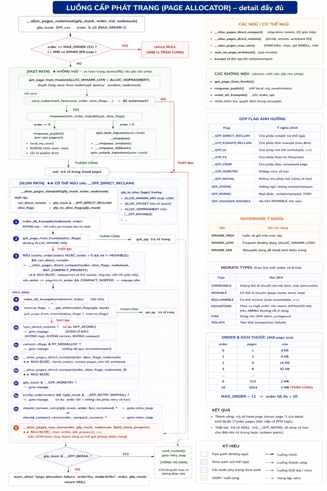
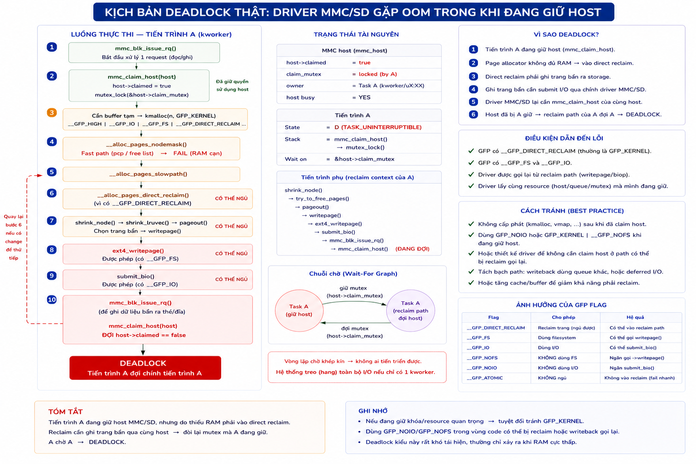
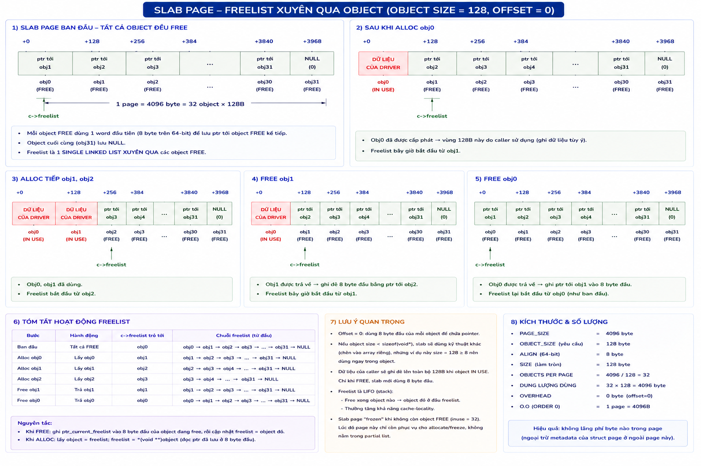
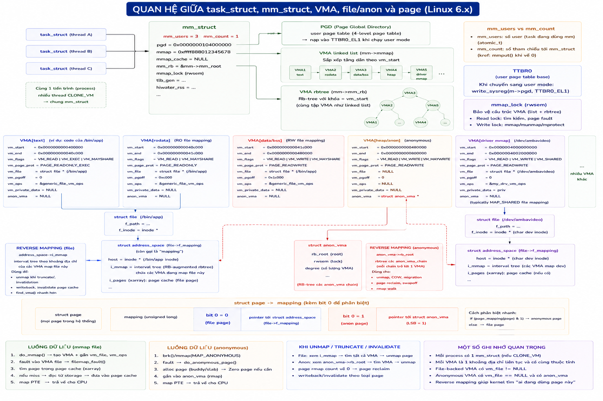

Từ một thanh RAM trống đến buf[0]='A'
Toàn bộ hành trình của bộ nhớ trong Linux kernel: bootloader mô tả RAM, memblock ghi sổ nháp, MMU dựng bảng trang, buddy nhận bàn giao, slab cắt nhỏ, process xin qua page fault, và kswapd thu hồi khi cạn. Mọi con số tính cho board Ambarella CV25 thật.
Bản đồ tài liệu
41 file gốc được sắp lại theo đúng tầng thật của hệ thống, không theo thứ tự bạn đã đọc chúng. Phần này cho biết mỗi file nằm ở đâu và nên đọc theo thứ tự nào.
0.1 · Thông số board — mọi con số trong tài liệu bám vào đây
Trước khi đọc bất cứ điều gì, phải nắm chín con số này. Chúng quyết định toàn bộ phần còn lại — từ kích thước bảng trang đến việc GFP_DMA có ý nghĩa hay không.
| Config | Giá trị | Hệ quả trực tiếp |
|---|---|---|
ARM64_PAGE_SHIFT | 12 → 4KB | Đơn vị nhỏ nhất MMU quản lý; mọi phép >>12 ra PFN |
ARM64_VA_BITS | 39 → 512GB | User space 512GB; linear map 256GB; vmemmap 4GB |
ARM64_PA_BITS | 48 → 256TB | PTE chỉ chứa bit [47:12] của địa chỉ vật lý |
PGTABLE_LEVELS | 3 | Tầng PUD bị fold vào PGD → PGDIR_SHIFT == PUD_SHIFT == 30 |
L1_CACHE_SHIFT | 6 → 64B | Cache line 64 byte |
ARCH_DMA_MINALIGN | 128 | Mọi kmalloc < 128B đều tốn 128B — khác biệt lớn nhất so với x86 |
SECTION_SIZE_BITS | 30 → 1GB | Một section SPARSEMEM = 1GB (patch riêng Ambarella: 28 nếu bật hotplug) |
FORCE_MAX_ZONEORDER | 11 | Trần cứng 4MB cho một lần alloc_pages() |
NR_CPUS | 4 × Cortex-A53 | 4 per-CPU pageset, 4 kmem_cache_cpu mỗi cache |
CONFIG_NUMA (1 node duy nhất) · CONFIG_HIGHMEM (64-bit không cần) · CONFIG_MEMORY_HOTPLUG · CONFIG_ZONE_DMA (arm64 v5.4 chưa có) · CONFIG_KASAN · CONFIG_KEXEC · CONFIG_FTRACE · CONFIG_LOCKDEP · CONFIG_DEBUG_ATOMIC_SLEEP · CONFIG_PAGE_EXTENSION.
Bốn cái cuối là lý do bug bộ nhớ trên defconfig CV25 không tạo ra log gì cả — xem phần 07.7.
Còn hai công tắc BẬT mà hầu hết tài liệu chung không nhắc, nhưng đảo lộn khá nhiều kỳ vọng trên board này:
CONFIG_RODATA_FULL_DEFAULT_ENABLED=y→rodata_full = true→ linear map bị ép xuống PTE 4KB, không có block mapping 2MB/1GB nào cho RAM thường. Đọc tài liệu chung sẽ tưởng ngược lại (phần 05.4).CONFIG_PREEMPT=y→ fast path của SLUB phải có vòngdo-whilekiểm tratid(phần 08.3).
0.2 · Kịch bản RAM dùng xuyên suốt
Các module nguồn dùng một kịch bản chung để mọi con số nhất quán. Tài liệu này giữ nguyên nó:
RAM span : 0x8000_0000 .. 0x1_0000_0000 (2GB, PFN 0x80000..0x100000)
hole no-map: 0xA000_0000 .. 0xE000_0000 (1GB, dành cho lõi CV/DSP)
↑ khai qua reserved-memory { no-map; } trong device tree
⇒ spanned_pages = 524288 (2GB — TÍNH CẢ hole)
⇒ present_pages = 262144 (1GB — TRỪ hole)
⇒ memmap = 262144 × 64B = 16MB (struct page cho phần present)
⇒ managed_pages ≈ 253952 (~992MB — trừ tiếp memmap, kernel image, CMA 16MB)Ba con số spanned / present / managed là thứ hay bị nhầm nhất trong cả chủ đề. Phần 03.6 giải thích chính xác mỗi con số bị trừ ở bước nào.
0.3 · File nguồn nằm ở phần nào
| File gốc | Phần |
|---|---|
Study_Memory/Kiến trúc Bộ nhớ Phần cứng — CV25 (ARM64).mdStudy_Memory/Cache L1 L2 L3 — Mục đích, Cách dùng, Flow.md | 01 |
Study_Memory/Virtual memory - Bộ nhớ ảo.md | 02 |
Memory_Module/MODULE 1.md · Study_Memory/arm64_memblock_init.mdStudy_Memory/paging_init.md · Study_Memory/bootmem_init.mdStudy_Memory/mem_init() — chuyển giao RAM cho buddy.mdStudy_Memory/Tóm tắt toàn bộ câu chuyện khởi động bộ nhớ.md | 03 |
Memory_Module/MODULE 2.md · Study_Memory/memory-model.rst.md | 04 |
Memory_Module/MODULE 3.md · Study_Memory/memory.rst.md | 05 |
Memory_Module/MODULE 4.md · Study_Memory/Kernel Memory Management.md (§1–2)Study_Memory/Kernel quản lí bộ nhớ.md | 06 |
Memory_Module/MODULE 5.md | 07 |
Memory_Module/MODULE 6.md · Kernel Memory Management.md (§3) | 08 |
Memory_Module/MODULE 7.md | 09 |
Memory_Module/MODULE 8.md · Study_Memory/Memory cấp phát bộ nhớ cho process.md | 10 |
Study_Memory/Bố cục bộ nhớ Process (User space).mdProcess/Cách một chương trình chạy.md | 11 |
Cân bằng bộ nhớ - Memory Balancing.md | 12 |
Huge Page.md · KSM = Kernel Samepage Merging.md · Clean cache.mdFrontSwap - ...md · Hwposison - ...md · HighMem.mdCơ chế quản lí không gian bộ nhớ.md (active_mm)page_migration.rst · page_owner.rst · page_frags.rstnuma.rst · overcommit-accounting.rst · remap_file_pages.rstmmu_notifier.rst | 13 |
Study_Memory/Lộ trình học memory.md · Memory - Tổng quát.mdMemory_Module/Study_prompt.md | 00, 15 |
0.4 · Thứ tự đọc đề xuất
Lộ trình gốc chia 12 module theo 8 tuần. Bản đồ dưới đây gộp lại thành bốn chặng, mỗi chặng khép kín một câu hỏi:
- “Phần cứng bên dưới trông thế nào?” — phần 01 → 02 → 05. Cache, MMU, TLB, bảng trang, layout VA. Không nắm chắc chặng này thì mọi thứ sau đều mơ hồ.
- “RAM đi từ đâu tới tay allocator?” — phần 03 → 04 → 06. Boot, memory model, buddy. Đây là chặng dài nhất và cũng là gốc rễ của mọi lỗi OOM/fragmentation.
- “Driver của tôi xin bộ nhớ thế nào cho đúng?” — phần 07 → 08 → 09. GFP flags, SLUB, vmalloc/ioremap. Chặng sát công việc hằng ngày nhất.
- “Khi hệ thống căng thì chuyện gì xảy ra?” — phần 10 → 11 → 12 → 13. Page fault, user space, reclaim/OOM, các cơ chế chuyên biệt.
Phần cứng: cache, MMU, TLB
Ba bộ nhớ đệm chạy song song, phục vụ ba mục đích khác nhau. Nhầm lẫn giữa chúng là nguồn gốc của phần lớn bug DMA trên board camera.
1.1 · Kim tự tháp bộ nhớ và nguyên lý cục bộ
CPU chạy khoảng một lệnh mỗi chu kỳ, nhưng DRAM mất 100–200 chu kỳ để trả dữ liệu. Nếu mỗi lệnh load/store đều phải đợi RAM thì CPU sẽ “đói” 99% thời gian. Cache là bộ nhớ SRAM nhỏ, nhanh, đặt sát nhân.
Cache hoạt động được nhờ nguyên lý cục bộ: dữ liệu vừa dùng có xu hướng được dùng lại sớm (temporal), và dữ liệu gần đó có xu hướng được dùng tới (spatial). Chính vì spatial locality mà cache nạp cả một dòng 64 byte chứ không nạp từng byte.
1.2 · Vì sao ARCH_DMA_MINALIGN là 128 chứ không phải 64
Cache line trên Cortex-A53 là 64 byte (L1_CACHE_SHIFT=6). Nhưng kernel dùng con số 128 làm mốc căn lề cho mọi buffer kmalloc. Comment ngay trong arch/arm64/include/asm/cache.h nói rõ lý do:
/*
* Memory returned by kmalloc() may be used for DMA, so we must make
* sure that all such allocations are cache aligned. Otherwise,
* unrelated code may cause parts of the buffer to be read into the
* cache before the transfer is done, causing old data to be seen by
* the CPU.
*/
#define ARCH_DMA_MINALIGN (128)Con số 128 đến từ CWG (Cache Writeback Granule) — độ lớn tối đa mà một thao tác clean/invalidate có thể “quét” trên toàn họ ARMv8, không phải cache line của một core cụ thể. Kernel chọn giá trị bảo thủ nhất.
ARCH_DMA_MINALIGN = 128 kéo theo KMALLOC_MIN_SIZE = 128. Nghĩa là mọi kmalloc() dưới 128 byte đều tiêu tốn đúng 128 byte, và arm64 không có các size class kmalloc-8/16/32/64/96/192 như x86. Chi tiết ở 08.4 — đây là khác biệt lớn nhất giữa arm64 và x86 về hiệu quả slab.
Kernel không hardcode kích thước cache — nó truy vấn CPU qua system register CTR_EL0:
static inline u32 cache_type_cwg(void)
{
return (read_cpuid_cachetype() >> CTR_CWG_SHIFT) & CTR_CWG_MASK;
}
static inline int cache_line_size_of_cpu(void)
{
u32 cwg = cache_type_cwg();
return cwg ? 4 << cwg : ARCH_DMA_MINALIGN; /* CPU không khai → dùng 128 */
}1.3 · I-cache và D-cache: hai bộ đệm không nói chuyện với nhau
L1 tách đôi thành I-cache (lệnh) và D-cache (dữ liệu). Ba lý do:
Băng thông
Mỗi chu kỳ CPU cần nạp lệnh VÀ đọc/ghi dữ liệu cùng lúc. Một cache đơn không đủ port. Tách đôi cho hai đường độc lập.
Tối ưu riêng biệt
I-cache read-only (code không tự sửa mình) → thiết kế đơn giản, không cần logic dirty/write-back. D-cache cần đủ read/write/dirty.
Chính sách index khác nhau
D-cache trên AArch64 luôn PIPT (physically-indexed) → không bao giờ aliasing. I-cache có thể VIPT → có thể aliasing.
Comment trong source nói thẳng điều then chốt này:
/*
* Whilst the D-side always behaves as PIPT on AArch64, aliasing is
* permitted in the I-cache.
*/Vì sao PIPT quan trọng: địa chỉ vật lý là duy nhất, nên không thể có chuyện một dữ liệu vật lý nằm ở hai dòng cache khác nhau. Kernel arm64 vì thế không phải flush D-cache khi đổi ánh xạ ảo — đơn giản hơn arm32 rất nhiều. Còn I-cache có thể VIPT nên kernel phải kiểm tra icache_is_aliasing(): nếu có aliasing thì khi nạp code mới phải flush toàn bộ I-cache thay vì chỉ vùng liên quan.
Bug kinh điển 1 — DMA đọc rác vì D-cache còn dirty
u8 *buf = kmalloc(4096, GFP_KERNEL);
memcpy(buf, frame_data, 4096); /* CPU GHI → nằm trong D-CACHE, dirty */
start_camera_dma(buf); /* DMA đọc THẲNG RAM → thấy RÁC CŨ */memcpy là thao tác dữ liệu → 4096 byte vào D-cache, đánh dấu dirty, chưa xuống RAM (write-back). DMA engine không đi qua D-cache. Cách sửa đúng là để DMA API lo: dma_map_single() gọi __clean_dcache_area_poc đẩy dirty xuống RAM trước khi thiết bị đọc. Chiều ngược lại — sau khi DMA ghi vào buffer — phải invalidate D-cache trước khi CPU đọc, nếu không CPU lấy lại giá trị cũ trong cache.
Bug kinh điển 2 — ghi code rồi chạy
memcpy(code_buf, new_instructions, len); /* (A) CPU GHI → D-CACHE, dirty */
((void(*)(void))code_buf)(); /* (B) CPU FETCH → I-CACHE nạp... gì? */![Vì sao sai — hai cache chỉ gặp nhau ở RAM. Kiến trúc bộ nhớ CPU: I-cache (instruction cache, dùng cho fetch chỉ lệnh, read-only, nạp khi cần fetch) và D-cache (data cache, dùng cho load/store, read/write, ghi bản dirty trước khi write-back) là hai cache tách biệt, KHÔNG nói chuyện trực tiếp với nhau. I-cache miss → truy cập L2/RAM, nạp dòng lệnh về I-cache. D-cache miss → truy cập L2/RAM, nạp/ghi dòng dữ liệu về D-cache. L2 Cache/RAM là điểm chung duy nhất của I-cache và D-cache. Kết luận: hai cache chỉ gặp nhau ở L2 hoặc RAM, chúng không snoop, không giao tiếp trực tiếp. Vấn đề xảy ra khi chương trình tự sửa mã (self-modifying code): D-cache có dòng dữ liệu mới (dirty) nhưng I-cache vẫn giữ dòng lệnh cũ — CPU cần invalidate I-cache hoặc dùng barrier (ISB/DSB) để đồng bộ. Ví dụ ARM: STR ghi mã mới vào RAM, DSB SY đợi ghi hoàn tất, IC IVAU invalidate I-cache line, DSB SY đợi invalidate xong, ISB flush pipeline rồi fetch lại.](../../Hai_cache_chi_gap_nhau_o_ram.png)
Có hai lý do độc lập gây sai, nên cách sửa cũng phải hai bước:
- Dữ liệu mới còn kẹt trong D-cache, chưa tới RAM → I-cache đi lấy từ RAM sẽ trúng bản cũ. Sửa:
dc cvau— clean D-cache xuống PoU. - I-cache có sẵn bản cũ của địa chỉ đó → kể cả RAM đã cập nhật, I-cache vẫn phục vụ bản trong chính nó. Sửa:
ic ivau— invalidate I-cache.
Hai bước đó chính là flush_icache_range(). Các nơi trong kernel thật sự gặp tình huống này:
| File | Tình huống “ghi code rồi chạy” |
|---|---|
kernel/module.c | Nạp file .ko — chính driver camera của bạn |
arch/arm64/net/bpf_jit_comp.c | JIT biên dịch eBPF sinh mã máy lúc chạy |
arch/arm64/kernel/probes/kprobes.c | Đặt breakpoint: ghi đè một lệnh bằng brk |
arch/arm64/kernel/insn.c | Vá lệnh runtime (aarch64_insn_patch_text) — alternatives, ftrace, jump_label |
arch/arm64/kernel/machine_kexec.c | Copy kernel mới vào RAM trước khi nhảy |
1.4 · PoC và PoU — “flush xuống tới đâu”
ARM định nghĩa hai “điểm” để trả lời câu hỏi flush cache tới tầng nào thì coi là đồng bộ. Đây là khái niệm bắt buộc phải nắm khi viết driver DMA.
| Điểm | Nghĩa | Dùng khi |
|---|---|---|
| PoU Point of Unification | Tầng mà I-cache, D-cache và bộ đi bộ bảng trang của một core nhìn thấy cùng dữ liệu | Ghi code rồi chạy — chỉ cần CPU tự đồng bộ với chính nó |
| PoC Point of Coherency | Tầng mà mọi agent trong hệ thống (kể cả DMA master không coherent) nhìn thấy cùng dữ liệu | DMA — thiết bị ngoài phải thấy được dữ liệu |
Các bit mô tả nằm trong CLIDR_EL1: CLIDR_LOUU (Level of Unification, Uniprocessor), CLIDR_LOC (Level of Coherency), CLIDR_LOUIS (Level of Unification, Inner Shareable). Bit CTR_EL0.IDC cho biết CPU có tự đồng bộ I-to-D hay không — nếu có thì kernel bỏ qua bước clean D-cache.
1.5 · MMU — dịch địa chỉ và kiểm quyền
MMU dịch địa chỉ ảo (VA) → địa chỉ vật lý (PA) qua bảng trang, đồng thời kiểm tra quyền truy cập. Trên arm64, không gian ảo chia đôi bằng bit cao nhất:
- TTBR0_EL1 → vùng thấp (user space), bắt đầu từ
0x0— mỗi process một bảng riêng. - TTBR1_EL1 → vùng cao (kernel space) — chung cho mọi process, không bao giờ ghi vào TTBR0.
Đây là hành vi phần cứng, không phải quy ước phần mềm: MMU tự chọn thanh ghi gốc theo bit 63 của VA. Lợi ích: chuyển ngữ cảnh giữa các process không cần đổi bảng kernel, chỉ đổi TTBR0.
![Đi bộ bảng trang 3 tầng — VA 39-bit, page 4KB (ARMv8-A AArch64). 1) Phân rã địa chỉ ảo 39-bit: bit 38-30 PGD idx (9 bit, chọn mục bảng PGD/L1), bit 29-21 PMD idx (9 bit, chọn mục bảng PMD/L2), bit 20-12 PTE idx (9 bit, chọn mục bảng PTE/L3), bit 11-0 offset (12 bit, độ lệch trong trang 4KB). 2) Kích thước mỗi mức: L1/L2/L3 đều 9 index bit, 512 entry/bảng, bảng 4KB, một entry L1 ánh xạ 1GB (block), L2 ánh xạ 2MB (block), L3 ánh xạ 4KB (page); entry 8 byte, mỗi bảng 512×8B=4096B=1 trang. 3) Ví dụ walk với VA=0x0001_2345_6789_ABCD: tách PGD idx=0x004(4), PMD idx=0x091(145), PTE idx=0x15E(350), offset=0xBCD(3021) → TTBR1/TTBR0 trỏ bảng L1 PGD, đọc Entry[PGD idx=4] lấy địa chỉ vật lý bảng PMD (địa chỉ = TTBR1+(4<<3)=TTBR1+0x20) → đọc Entry[PMD idx=145] lấy địa chỉ bảng PTE (=PA(PMD)+(145<<3)=PA(PMD)+0x488) → đọc Entry[PTE idx=350] lấy PA khung trang (=PA(PTE)+(350<<3)=PA(PTE)+0x4F0) → PA cuối = khung trang 0x0000_7F12_3400_0000 + offset 0xBCD = 0x0000_7F12_3400_0BCD. 4) Cấu trúc entry 64-bit: L1/L2 (PGD/PMD) entry có Output address[47:12], R (Table=1 con trỏ bảng con, 0=block nếu hợp lệ), SH, AF, nG, UXN, PXN, V(Valid); L3 (PTE) entry thêm AP[2:1] quyền truy cập, D (Dirty, set bởi phần cứng), A (Accessed, set bởi phần cứng). 5) Không gian địa chỉ ảo tổng cộng 2^39 = 512GB, mỗi L1 entry 1GB vùng ảo, L2 entry 2MB, L3 entry 4KB trang (thường chia TTBR0 cho user, TTBR1 cho kernel). 6) Ghi chú: walk dừng sớm nếu gặp block (1GB ở L1 hoặc 2MB ở L2); nếu entry không Valid → page fault; AF=0 → phần cứng update hoặc gây fault lần đầu; TLB lưu kết quả cuối cùng (VA page → PA frame + thuộc tính), TLBI invalidate khi thay đổi page table. MMU có TLB cache (walk cache), nếu TLB miss mới đi bộ bảng trang tối đa 3 bước.](../../Di_bo_Bang_trang_3_tang.png)
Công thức tính vị trí bit của mỗi tầng nằm ở pgtable-hwdef.h:
#define ARM64_HW_PGTABLE_LEVEL_SHIFT(n) ((PAGE_SHIFT - 3) * (4 - (n)) + 3)
#define PTRS_PER_PTE (1 << (PAGE_SHIFT - 3)) /* = 512 entry mỗi bảng */Mỗi lần table walk tốn 3 lần truy cập RAM — quá chậm để làm cho mọi lệnh. Đó là lý do phải có TLB.
1.6 · Nội dung một entry bảng trang
Đây là nơi lưu quyền truy cập và thuộc tính cache. Hai bit thấp nhất quyết định loại entry:
| bit[1:0] | Loại | Ý nghĩa |
|---|---|---|
| 00 | Invalid | Entry rỗng → MMU sinh page fault. Đây là nền tảng của demand paging và COW. |
| 01 | BLOCK descriptor | “Chính đây là RAM thật” — dừng walk, cộng offset vào PA ghi trong entry. Đây là huge page / section mapping. |
| 11 | TABLE descriptor | “Đi tiếp xuống bảng con” — không mang thông tin quyền, quyền nằm ở tầng lá. |
Các bit thuộc tính quan trọng trong một entry lá:
- PTE_VALID (1<<0)
- Entry hợp lệ? Nếu 0 → page fault
- PTE_USER (1<<6)
- AP[1] — EL0 (user) có được truy cập không
- AP[2] (1<<7)
- Chỉ đọc hay đọc/ghi
- SH (1<<8..9)
- Shareability — inner / outer / non-shareable
- PTE_AF (1<<10)
- Access Flag — trang đã từng bị truy cập chưa. Cơ sở cho thuật toán LRU
- nG (1<<11)
- not-Global — gắn ASID hay dùng chung mọi process
- PTE_CONT (1<<52)
- Contiguous hint — gộp 16 PTE liền kề thành 1 TLB entry
- PTE_PXN (1<<53)
- Privileged eXecute Never — kernel không chạy code ở đây
- PTE_UXN (1<<54)
- User eXecute Never — chống chạy code trên stack/heap
PTE_UXN/PTE_PXN chính là nền tảng của bảo mật W^X — không vùng nào vừa ghi được vừa chạy được.
1.7 · Memory attribute — điểm nối MMU ↔ cache
Ba bit AttrIndx[2:0] trong mỗi PTE là chỉ số tra vào thanh ghi MAIR_EL1 (8 byte, mỗi byte một bộ thuộc tính). Đây là chỗ quyết định vùng nào được cache, vùng nào không.
#define MT_DEVICE_nGnRnE 0
#define MT_DEVICE_nGnRE 1
#define MT_DEVICE_GRE 2
#define MT_NORMAL_NC 3
#define MT_NORMAL 4
#define MT_NORMAL_WT 5
/* n = AttrIndx[2:0] MAIR byte
* DEVICE_nGnRnE 000 00000000
* DEVICE_nGnRE 001 00000100
* DEVICE_GRE 010 00001100
* NORMAL_NC 011 01000100
* NORMAL 100 11111111
* NORMAL_WT 101 10111011 */| Loại | Gather / Reorder / Early-ack | Cache | API | Dùng khi nào |
|---|---|---|---|---|
DEVICE_nGnRnE | no-Gather, no-Reorder, no-Early-ack — strict nhất | Không | pci_remap_cfgspace() | Thanh ghi nhạy thứ tự tuyệt đối, PCIe config space |
DEVICE_nGnRE | Cho early-ack, vẫn no-gather/no-reorder | Không | ioremap() | Thanh ghi MMIO thường — VIN, ISP, DSP, I2C, GPIO. Đúng cho 95% driver |
DEVICE_GRE | Cho gather + early-ack, giữ order | Không | hiếm dùng trực tiếp | Device cho phép gộp write liên tiếp |
NORMAL_NC | N/A — là Normal memory | Non-cacheable | ioremap_wc() | Framebuffer, buffer video ghi tuần tự lớn |
NORMAL | N/A | Write-back, write-allocate | PAGE_KERNEL, vmalloc() | RAM thường, kernel text/data/stack |
NORMAL_WT | N/A | Write-through | hiếm | Legacy/tương thích |
Map thanh ghi bằng attribute Normal → CPU được phép gộp và đảo thứ tự write. Ví dụ ghi START_BIT trước khi ghi xong CONFIG_REG → DSP/ISP khởi động sai trạng thái. Bug chỉ xuất hiện ngẫu nhiên tùy pipeline CPU.
Map buffer DMA lớn bằng DEVICE_nGnRE (tưởng là an toàn) → chậm thảm hại vì mất hết lợi ích cache.
1.8 · TLB và ASID
Table walk tốn 3 lần đọc RAM cho mỗi truy cập bộ nhớ. TLB là cache lưu kết quả dịch VA→PA gần đây: hit → có PA ngay; miss → chạy walk rồi nạp kết quả vào TLB.
Khi bảng trang thay đổi (unmap, đổi quyền, COW, chuyển process), entry TLB cũ trở nên sai → phải invalidate bằng lệnh TLBI:
static inline void flush_tlb_all(void)
{
dsb(ishst); /* đảm bảo các ghi bảng trang đã ra tới bộ nhớ */
__tlbi(vmalle1is); /* invalidate toàn bộ TLB, MỌI core (Inner Shareable) */
dsb(ish); /* đợi TLBI hoàn tất trên mọi core */
isb(); /* flush pipeline lệnh */
}ASID (Address Space ID) gắn vào mỗi TLB entry của user space để nhiều process cùng tồn tại trong TLB mà không đụng nhau. Nhờ đó switch_mm chỉ cần đổi TTBR0 + ASID, không phải flush sạch TLB. Chỉ khi ASID space cạn (rollover) mới cần tlbi toàn cục.
Entry TLB của kernel có nG=0 (global) → không bị flush khi context switch, vì kernel mapping nằm cố định ở TTBR1 và không đổi.
dsb/isb quanh mọi thao tác TLB & cache
dsb(ishst)— đảm bảo lệnh ghi bảng trang đã ra tới bộ nhớ trước khi TLBI chạy.dsb(ish)— đợi TLBI hoàn tất trên mọi core trong miền Inner Shareable.isb()— flush pipeline để CPU không dùng lệnh đã nạp trước với ánh xạ cũ.
1.9 · Bức tranh tổng hợp — một lần ldr x0, [x1]
![Ba lớp cache song song — ba mục đích khác nhau. VA (virtual address) trong x1 → CPU tra TLB (Translation Lookaside Buffer, cache ánh xạ VA tag → PA frame + Perms): hit → có PA + quyền, kiểm quyền (PTE_USER, AP, UXN, PXN...) → OK tiếp tục, Sai → PAGE FAULT (fault.c) kernel xử lý (page not present, permission fault, alignment fault, translation fault). TLB miss → MMU table walk 3 tầng PGD→PMD→PTE (L1 PGD 1 entry=1GB index VA[38:30], L2 PMD 1 entry=2MB index VA[29:21], L3 PTE 1 entry=4KB index VA[20:12], mỗi entry 64-bit) → PTE hợp lệ trích xuất PA frame + quyền → nạp vào TLB (điền VA tag → PA + perms). Có PA + quyền hợp lệ → tra 2) L1 D-cache (cache dữ liệu L1, private, cache dòng): hit → dữ liệu (64-byte line) CPU sử dụng ngay; miss → tra 3) L2 CACHE (cache shared, cache dòng): hit → trả dữ liệu; miss → tra L3 CACHE (tuỳ SoC, cache last level, cache dòng): hit → trả dữ liệu; miss → RAM (DRAM, nguồn cuối) nạp nguyên 1 cache line = 64 byte (32/64/128 byte tuỳ hệ thống) rồi trả ngược lên L3→L2→L1→CPU. Độ trễ ước lượng: TLB hit ~1-2 chu kỳ, L1 hit ~3-4 chu kỳ, L2 hit ~10-20 chu kỳ, L3 hit ~30-50 chu kỳ, RAM ~80-150 chu kỳ. Ba bảng chi tiết: 1) TLB — cache ánh xạ (VA→PA frame+quyền, mỗi entry thường cho 4KB/16KB page, giảm chi phí page table walk 3 lần đọc bộ nhớ, các loại ITLB/DTLB/STLB). 2) D-cache — cache dòng dữ liệu (64 byte, exploit tính cục bộ thời gian/không gian, chính sách thay thế LRU/Pseudo-LRU/Random, Write-Back+Write-Allocate phổ biến, trạng thái dòng MESI: Modified/Exclusive/Shared/Invalid). 3) L2/L3 cache chia sẻ (L2 per-core hoặc cluster-shared, L3 shared toàn chip last level cache, giảm truy cập RAM, có thể inclusive/exclusive/non-inclusive). Walk 3 tầng bảng trang ví dụ: VA=0x0001_2345_6789_ABCD → PGD idx=(VA>>30)&0x1FF=0x004, PMD idx=(VA>>21)&0x1FF=0x091, PTE idx=(VA>>12)&0x1FF=0x15E, Offset=VA&0xFFF=0xBCD. Tóm tắt luồng xử lý truy cập bộ nhớ: 1 CPU phát sinh VA (load/store/fetch) → 2 TLB lookup (hit: có PA+quyền; miss: page table walk PGD→PMD→PTE rồi nạp TLB) → 3 D-cache lookup L1 (hit: trả dữ liệu; miss: đi L2) → 4 L2 lookup (hit: trả dữ liệu; miss: đi L3 nếu có) → 5 L3 lookup nếu có (hit: trả dữ liệu; miss: đi RAM) → 6 RAM nạp 1 cache line (thường 64B) trả ngược lên L3→L2→L1→CPU.](../../Ba_lop_cache_song_song.png)
| Thành phần | Cache cái gì | Đơn vị | Miss → làm gì |
|---|---|---|---|
| TLB | Kết quả dịch VA→PA | 1 page (4KB) | Chạy table walk (MMU) |
| L1/L2/L3 | Nội dung RAM | 1 line (64B) | Đọc từ RAM |
Bộ nhớ ảo: tám khái niệm phải chắc
Tám mục dưới đây là bộ từ vựng nền. Mọi phần sau đều giả định bạn đã nắm chúng — đặc biệt là demand paging, thứ giải thích vì sao malloc(1GB) không tốn RAM.
2.1 · Không gian địa chỉ ảo — mỗi process một bản đồ riêng
Địa chỉ ảo 0x400000 của process A và của process B trỏ tới hai vùng RAM vật lý khác nhau. Bảng trang riêng (mm->pgd) làm việc cách ly này.
![Bố cục một process trên CV25 (ARMv8-A, 39-bit VA) — user space 512GB. Từ địa chỉ thấp lên cao: 0x0000_0000_0000 NULL GUARD (không map, bắt lỗi dereference NULL, thường 64KB) → 0x0000_0040_0000 .text/code (file-backed ELF PT_LOAD, RO+X, mã lệnh) → .rodata (RO, hằng số/string literal/vtable) → .data/.bss (RW, .data đã khởi tạo, .bss chưa khởi tạo zero-fill khi map) → [HEAP] mọc LÊN (brk/heap, malloc/new, bắt đầu từ end(.bss) → brk) → khoảng trống dùng để mở rộng heap hoặc mmap tuỳ hướng → [MMAP REGION] mọc XUỐNG từ mmap_base (thư viện .so, file mapping, shared memory, anonymous mmap, malloc lớn, JIT) → [STACK] mọc XUỐNG (mỗi thread một stack riêng, có STACK GUARD phía dưới bảo vệ tràn stack, thường 1-2 page không map) → User/Kernel split tại TASK_SIZE=1<<39=512GB địa chỉ 0x0080_0000_0000 → KERNEL SPACE (TTBR1), process không truy cập trực tiếp được, chạy tới 2^48-1. Giá trị điển hình Linux ARM64: VA user space 0x0000_0000_0000→0x007F_FFFF_FFFF (512GB), page size 4KB (64KB tuỳ cấu hình), NULL guard 64KB, stack size main thread 8MB (ulimit -s), guard page ít nhất 1 page (4KB), ASLR bật (randomize mmap_base/stack/brk). Ví dụ /proc/<pid>/maps rút gọn: .text r-xp offset 00000000 /bin/hello, .rodata r--p, .data/.bss rw-p, [heap] rw-p, thư viện ld-linux-aarch64.so.1 r-xp/rw-p, [anon] mmap rw-p, [stack] rw-p, [stack guard] ---p, [kernel text]/[kernel data]. Luồng xử lý khi truy cập VA: CPU phát sinh VA (load/store/fetch) → TLB lookup (hit/miss) → nếu miss: page table walk PGD→PMD→PTE → nạp PTE vào TLB → kiểm quyền (AP/UXN/PXN...) → dịch ra PA+access; sai quyền hoặc không map → PAGE FAULT (kernel fault.c xử lý). Ba sơ đồ nhỏ minh hoạ STACK (mọc xuống: return address, saved FP/LR, dữ liệu cục bộ, guard page ở địa chỉ thấp), HEAP (mọc lên: brk program break, dữ liệu heap malloc), MMAP (mọc xuống từ mmap_base: mapping 1..N).](../../Bo_cuc_process_tren_cv25.png)
Chạy hai bản cùng chương trình ./app: cả hai đều thấy code ở 0x400000, biến toàn cục ở cùng địa chỉ ảo — nhưng RAM vật lý hoàn toàn tách biệt.
2.2 · Paging: page, page frame, huge page
- Page = đơn vị trong không gian ảo (CV25: 4KB).
- Page frame = đơn vị trong không gian vật lý (cũng 4KB) — “khung” chứa page.
- PFN (Page Frame Number) = số hiệu khung trang =
địa chỉ vật lý >> 12.
| Loại | Kích thước | Cấp bảng trang | Trên CV25 |
|---|---|---|---|
| Page thường | 4KB | PTE | Mặc định |
| Contiguous PTE | 64KB (16×4KB) | PTE_CONT hint | Bị tắt cho RAM thường (rodata_full) |
| Huge 2MB | 2MB (PMD_SIZE) | block PMD | Dùng cho vmemmap; HugeTLB xin tường minh |
| Huge 1GB | 1GB (PUD_SIZE) | block PGD/PUD | Về lý thuyết có, thực tế bị chặn |
Lợi ích: một huge page 2MB dùng một entry TLB thay cho 512 entry. Quét mảng 8MB rải rác bằng page 4KB gây 2048 TLB miss; dùng huge page 2MB chỉ còn 4 entry.
CV25 có HugeTLB (xin tường minh qua hugetlbfs) nhưng tắt THP (không tự động gộp).
2.3 · Bảng trang nhiều cấp — vì sao không dùng mảng phẳng
Mảng phẳng phủ 512GB cần 128 triệu entry. Bảng nhiều cấp chỉ cấp bảng con cho vùng ảo thực sự dùng:
Mảng phẳng : 512GB / 4KB = 134.217.728 entry × 8B = 1GB metadata ✗ vô lý
3 cấp : 1 bảng PGD + 1 PMD + 1 PTE = 3 × 4KB = 12KB ✓
(entry PGD/PMD cho vùng chưa dùng để RỖNG, không cấp bảng con)Linux tổng quát có 5 cấp (PGD→P4D→PUD→PMD→PTE). CV25 dùng 3 cấp nên P4D và PUD bị fold — các macro cấp thừa được định nghĩa “trong suốt”, code vẫn viết như đủ 5 cấp nhưng cấp gập chỉ là passthrough. Chi tiết ở 05.3.
2.4 · Page fault: minor và major
Page fault = MMU không dịch được VA (PTE rỗng hoặc sai quyền) → CPU sinh ngoại lệ → kernel xử lý.
| Loại | Định nghĩa theo code | Chi phí | Đếm ở |
|---|---|---|---|
| Minor | Trang đã có trong RAM, chỉ cần lập ánh xạ (điền PTE) | ~1–10 µs | current->min_flt |
| Major | Phải chờ I/O — đọc từ swap hoặc từ file | ~100 µs – vài ms | current->maj_flt |
Chỉ có đúng hai chỗ trong toàn kernel đặt cờ VM_FAULT_MAJOR: do_swap_page() khi phải đọc từ swap, và filemap_fault() khi miss page cache. Mọi thứ khác đều là minor — kể cả COW và cấp trang anonymous mới.
2.5 · Demand paging — “cấp lười”
mmap() chỉ tạo một vm_area_struct (VMA) — bản ghi nói “vùng VA này hợp lệ, khi fault thì xử lý theo cách X”. Không PTE nào được tạo, không trang vật lý nào được cấp.
Bốn lý do thiết kế:
- Tốc độ —
mmap(1GB)chạy trong micro-giây thay vì phải cấp 262144 trang. VớiMAX_ORDER=11, cấp 1GB liên tục còn bất khả thi. - Tiết kiệm — chương trình
mmapcả file 100MB nhưng chỉ đọc 1MB → chỉ 256 trang được cấp thật. - Overcommit — tổng VA của mọi process có thể vượt RAM vật lý, vì phần lớn không bao giờ được chạm.
fork()rẻ — không cần copy dữ liệu (xem COW bên dưới).
Ngoại lệ: MAP_POPULATE / mlock() ép fault sẵn toàn bộ. Driver video cần latency ổn định thường dùng để tránh page fault xảy ra giữa lúc capture frame.
2.6 · Copy-on-Write
Khi fork(), cha và con dùng chung mọi trang, cả hai bị đánh dấu read-only. Chỉ khi một bên ghi → page fault → kernel copy riêng trang đó.
refcount mapcount PTE cha PTE con
(1) Trước fork 1 1 RW —
(2) Sau fork() 2 2 RO* RO* *cả hai bị wrprotect
(3) Cha GHI → do_wp_page
mapcount=2 → KHÔNG reuse được → wp_page_copy(): cấp trang MỚI, memcpy
1 1 RW(mới) RO
(4) Con GHI → do_wp_page
PageAnon && mapcount==1 → wp_page_reuse(): CHỈ set bit write, KHÔNG copy!
1 1 RW(mới) RW(cũ)Tối ưu ở bước (4) rất đáng nhớ: process cuối cùng còn giữ trang không phải copy — chỉ có N−1 lần copy cho N process. page_move_anon_rmap() còn chuyển page->mapping sang anon_vma riêng của nó để rmap không phải duyệt cây cha/anh em nữa.
VmRSS lớn hơn RAM vật lý
Sau fork(), VmRSS của cả cha lẫn con hiển thị đầy đủ kích thước heap chung, nhưng RAM thật chỉ dùng một lần. Muốn đo đúng phải dùng PSS trong /proc/PID/smaps — mỗi trang chia sẻ bởi N process tính 1/N.
2.7 · Swapping
Khi RAM đầy, kernel đẩy trang ít dùng ra swap. Khi cần lại → major fault đọc ngược vào.
- swap space
- Phân vùng/file trên đĩa, hoặc zram (swap nén nằm hẳn trong RAM)
- swappiness
- 0–100, mặc định 60 — mức độ hăng hái đẩy trang ẩn danh ra swap. 0 = né tối đa
- swap cache
- Trang vừa swap-in còn giữ bản trên swap → nếu không bị ghi, lần sau vứt khỏi RAM không cần ghi lại
CV25 có CONFIG_SWAP=y nhưng camera nhúng thường không có swap partition (đĩa chậm, hao mòn flash). Hệ quả nghiêm trọng: trang anonymous không thể reclaim → hết RAM là OOM killer, không có đường lui. Nếu cần thì dùng zram (phần 13.4).
2.8 · File-backed và anonymous — phân biệt then chốt
Đây là phân biệt quan trọng nhất trong toàn bộ chủ đề reclaim. Nó trả lời câu hỏi: “nếu xóa trang này, dữ liệu có mất không? Có lấy lại được không?”
| Anonymous | File-backed | |
|---|---|---|
| Đỡ lưng bởi | Không gì (hoặc swap) | Một file trên đĩa |
| Ví dụ | malloc, heap, stack, mmap(MAP_ANONYMOUS) | .text, thư viện .so, mmap(fd) |
| Fault lần đầu | Cấp trang zero (minor) | Đọc từ file (major) |
| Khi thiếu RAM | Ghi ra swap; không có swap → không reclaim được → OOM | Ghi ngược ra file nếu dirty; vứt luôn nếu clean |
| Nhánh page fault | do_anonymous_page() | do_fault() / filemap_fault() |
Nhiều process chạy cùng ./app sẽ dùng chung các trang code qua page cache → tiết kiệm RAM đáng kể.
Từ RAM thô đến buddy allocator
Boot là một chuỗi bàn giao allocator: chưa có gì → fixmap → memblock → bảng trang → buddy → slab → vmalloc. Mỗi bước phá một vòng phụ thuộc “gà–trứng” riêng.
3.0 · Trình tự tổng quát
start_kernel() init/main.c
├─ setup_arch(&command_line)
│ ├─ early_fixmap_init() ① cửa sổ map tạm, phá vòng gà-trứng
│ ├─ early_ioremap_init()
│ ├─ setup_machine_fdt() ② đọc /memory node → memblock_add()
│ ├─ arm64_memblock_init() ③ memblock: memory + reserved ← HOLE BIẾN MẤT Ở ĐÂY
│ ├─ paging_init() ④ swapper_pg_dir, linear map
│ ├─ unflatten_device_tree()
│ └─ bootmem_init() ⑤⑥ sparse_init + zone_sizes_init
├─ build_all_zonelists(NULL) xếp thứ tự fallback zone
├─ mm_init()
│ ├─ mem_init() ⑦ memblock_free_all() → BÀN GIAO CHO BUDDY
│ ├─ kmem_cache_init() ⑧ bật SLUB → kmalloc sống
│ └─ vmalloc_init() ⑨ bật vmalloc
├─ setup_per_cpu_pageset() pageset mỗi CPU
└─ proc_caches_init() cache cho mm_struct/VMARanh giới quan trọng: mọi thứ trong setup_arch() chạy khi chưa có buddy allocator, chỉ có memblock. mem_init() nằm ngoài setup_arch(), gọi từ start_kernel().
3.1 · early_fixmap_init() — phá vòng gà–trứng đầu tiên
Ngay dòng đầu setup_arch(), kernel đã cần đọc blob FDT nằm ở một địa chỉ vật lý bất kỳ do bootloader đưa. Nhưng lúc này:
- Linear map chưa tồn tại —
map_mem()chỉ chạy trongpaging_init(), ở sau. Không có__va()nào dùng được. ioremap()thật chưa dùng được — nó cần vmalloc area, và cần cấp một trang mới cho bảng trang nếu chưa có. Nhưng buddy cũng chưa khởi động.- Nếu cấp trang bảng bằng
memblock_alloc(), bạn lại cần map trang đó để ghi vào nó — quay lại đúng vấn đề ban đầu.
Cách phá vòng: không cấp phát runtime, mà dùng ba mảng tĩnh khai báo sẵn trong .bss lúc biên dịch:
static pte_t bm_pte[PTRS_PER_PTE] __page_aligned_bss;
static pmd_t bm_pmd[PTRS_PER_PMD] __page_aligned_bss __maybe_unused;
static pud_t bm_pud[PTRS_PER_PUD] __page_aligned_bss __maybe_unused;Những mảng này đã có sẵn địa chỉ vật lý cố định ngay khi ảnh kernel được load, và map được ngay qua __phys_to_kimg()/kimage_voffset — cơ chế thiết lập trong assembly, trước dòng C đầu tiên, độc lập hoàn toàn với linear map lẫn buddy.
early_fixmap_init() chỉ làm đúng một việc: nối các mảng tĩnh đó thành một chuỗi bảng trang hợp lệ cho đúng dải VA cố định biết trước lúc build. Sau bước này, __set_fixmap() gọi từ bất kỳ đâu chỉ cần ghi một entry vào bm_pte[] đã tồn tại — không bao giờ phải cấp trang mới.
Kết quả sau early_fixmap_init()
swapper_pg_dir[507] (đóng CẢ vai PGD lẫn PUD do fold)
│ = phys(bm_pmd) | TABLE(0b11)
v
bm_pmd[498]
│ = phys(bm_pte) | TABLE
v
bm_pte[...] ← CHƯA populate — __set_fixmap() điền sau, per-indexĐịa chỉ thật của FIXADDR_START trên board (VA_BITS=39, không KASAN):
__end_of_permanent_fixed_addresses = 1031 (FIX_HOLE + 1024 slot FDT
+ EARLYCON + TEXT_POKE0 + 4 slot KPTI)
FIXADDR_SIZE = 1031 × 4096 = 4222976 byte = 4124KB
↑ khớp chính xác con số "4124KB fixed mappings"
trong Documentation/arm64/memory.rst
VMEMMAP_SIZE = 4GB
VMEMMAP_START = -(4GB + 2MB) = 0xfffffffeffe00000
PCI_IO_START = VMEMMAP_START - 2MB - 16MB = 0xfffffffefec00000
FIXADDR_TOP = PCI_IO_START - 2MB = 0xfffffffefea00000
FIXADDR_START = FIXADDR_TOP - 4124KB = 0xfffffffefe5f9000
pgd_index(0xfffffffefe5f9000) = (addr >> 30) & 0x1FF = 507
pmd_index(0xfffffffefe5f9000) = (addr >> 21) & 0x1FF = 498Các khe fixmap dùng để làm gì
| Slot | Chỉ số | Dùng cho |
|---|---|---|
FIX_HOLE | 0 | “Ô rỗng” cố ý — tránh biến enum khởi tạo nhầm về 0 lại trỏ đúng một slot thật |
FIX_FDT_END..FIX_FDT | 1..1024 | Cửa sổ 4MB map blob Device Tree (2MB max + 2MB dự phòng lệch align) |
FIX_EARLYCON_MEM_BASE | 1025 | UART tạm cho bootarg earlycon= — in log trước khi driver serial thật load |
FIX_TEXT_POKE0 | 1026 | “Cửa sổ ghi trộm” vào chính .text đang read-only — cho alternatives, kprobes, ftrace |
FIX_ENTRY_TRAMP_* | 1027..1030 | 4 slot trampoline KPTI (compile-time có, runtime tắt trên A53) |
FIX_BTMAP_* | 1031..1478 | 448 slot cho early_ioremap() — phải nằm gọn trong một PMD 2MB (có BUILD_BUG_ON kiểm tra) |
FIX_PTE/PMD/PUD/PGD | — | Khe riêng cho từng cấp, dùng khi dựng bảng trang cho chính kernel |
FIX_TEXT_POKE0 — thủ thuật “hai alias, hai quyền”
.text được map PAGE_KERNEL_ROX (không ghi được). Nhưng kernel vẫn cần tự sửa code của chính nó lúc runtime. set_fixmap_offset() tạo một alias VA khác, GHI ĐƯỢC, trỏ cùng trang vật lý. Đây đúng là thủ thuật mà map_mem() phải cẩn thận tránh (xem 3.4) — nhưng ở đây kernel chủ động tạo, dùng có kiểm soát: giữ patch_lock, mở ra rồi đóng lại ngay trong một lệnh ghi.
3.2 · Ba bảng trang, không phải hai
Điểm hay bị nhầm: trước paging_init(), arm64 có ba bảng trang khác nhau, mỗi cái một nhiệm vụ.
| Bảng | Dựng bởi | Nhiệm vụ | Số phận |
|---|---|---|---|
idmap_pg_dir | head.S, MMU còn tắt | Identity map (VA=PA) một đoạn code cực nhỏ __idmap_text_start..end — để bật MMU an toàn | Giữ lại cho suspend/kexec |
init_pg_dir | head.S macro map_memory | Map toàn bộ [_text, _end) một lần, không phân quyền theo đoạn, lá = block 2MB | memblock_free() trong paging_init() |
swapper_pg_dir | paging_init() (C) | Bảng thật — kernel image phân quyền chi tiết + linear map toàn bộ RAM | Sống suốt đời hệ thống, nạp vào TTBR1 |
Vì sao cần idmap riêng: khoảnh khắc CPU ghi vào SCTLR_EL1 để bật MMU, PC vẫn đang trỏ một địa chỉ vật lý. Phải đảm bảo địa chỉ đó cũng dịch đúng y hệt qua MMU vừa bật (VA=PA), nếu không CPU “rơi” ngay lệnh kế tiếp.
“Cấp phát” trong assembly — bump allocator tuyệt đối tối giản
.macro map_memory, tbl, rtbl, vstart, vend, flags, phys, pgds, ...
add \rtbl, \tbl, #PAGE_SIZE /* ★ "trang kế tiếp" = ngay SAU trang hiện tại */
...
.endmKhông hề có memblock_alloc() hay early_pgtable_alloc() nào ở đây. “Cấp một trang mới cho bảng con” chỉ là cộng thêm 4096. An toàn được vì kích thước đã tính đúng từ lúc link qua EARLY_PAGES(). Thực tế init_pg_dir chỉ khoảng 2–3 trang (8–12KB) — rất nhỏ, đúng vai trò “scaffold tạm”.
SWAPPER_BLOCK_SHIFT = SECTION_SHIFT = PMD_SHIFT = 21 — đây là thuật ngữ phần cứng ARM cho block mapping 2MB.
Hoàn toàn khác “section” của SPARSEMEM (SECTION_SIZE_BITS=30, đơn vị 1GB cho mem_section/struct page). Cùng một chữ, hai khái niệm độc lập.
init_mm.pgd
Dòng nguồn viết .pgd = swapper_pg_dir, nhưng cuối initializer còn có INIT_MM_CONTEXT(init_mm), mà trên arm64 macro này không rỗng: nó là .pgd = init_pg_dir. Theo chuẩn C, designated initializer xuất hiện hai lần thì giá trị SAU CÙNG thắng.
⇒ Giá trị biên dịch thật của init_mm.pgd là init_pg_dir. Nó chỉ được sửa lại thành swapper_pg_dir ở dòng cuối paging_init().
3.3 · Giai đoạn 1 — memblock: cuốn sổ nháp
Buddy allocator cần chính bộ nhớ để tự khởi tạo — page table, vmemmap, pg_data_t, initrd, DTB. Bài toán gà–trứng cổ điển của mọi kernel. memblock là bộ cấp phát stack-based, không free lẻ, không có struct page, hoạt động trực tiếp trên dải địa chỉ vật lý.
struct memblock_region {
phys_addr_t base;
phys_addr_t size;
enum memblock_flags flags; /* MEMBLOCK_NONE / NOMAP / HOTPLUG / MIRROR */
};
struct memblock {
bool bottom_up;
phys_addr_t current_limit;
struct memblock_type memory; /* RAM tồn tại vật lý */
struct memblock_type reserved; /* RAM đã bị "chiếm" */
};memblock_reserve() KHÔNG xóa vùng khỏi memory — nó chỉ đánh dấu “đã có chủ” trong danh sách reserved. Vùng vẫn nằm trong memory, vẫn được linear-map, vẫn có struct page.
memblock_remove() mới thật sự xóa hẳn khỏi memory — dùng cho vùng vật lý không tồn tại hoặc vùng no-map.
Mảng regions cấp tĩnh sẵn: INIT_MEMBLOCK_REGIONS = 128 entry × 2 mảng × 24 byte ≈ 6KB static RAM, nằm trong __initdata nên được free sau khi init xong. Nếu DT có >128 region thì memblock_double_array() realloc — nhưng chỉ hoạt động sau khi memblock_allow_resize() được gọi trong paging_init().
| Hàm | Làm gì | Khi nào dùng |
|---|---|---|
memblock_add(base,size) | Thêm vào memory | Quét node /memory từ DT |
memblock_reserve(base,size) | Thêm vào reserved, không đụng memory | Kernel image, DTB, initrd, CMA, page table tạm |
memblock_remove(base,size) | Xóa khỏi memory | RAM ngoài PA range, vùng no-map |
memblock_alloc(size,align) | Tìm vùng free trong memory − reserved, tự reserve, trả virtual address | mem_section array, usemap, standard_resources |
memblock_phys_alloc_range(...) | Như trên nhưng trả phys_addr_t | Khi caller cần PA trước khi linear map tồn tại |
Bootloader mô tả RAM bằng cách nào
Trên arm64 không có ATAG (chỉ tồn tại ở arm32), và Ambarella dùng U-Boot/Amboot + DTB thuần chứ không phải EFI. Đường duy nhất là node /memory trong device tree:
/* ambarella-cv25.dtsi — comment nói rõ Amboot patch lại lúc runtime */
memory {
device_type = "memory";
reg = <0x00200000 0x07e00000>; /* 126M — chỉ là placeholder */
};early_init_dt_scan_memory() đọc trực tiếp trên flat DTB blob (chưa cần of_unflatten dựng struct device_node, vì allocator để cấp chúng còn chưa tồn tại) → early_init_dt_add_memory_arch() → memblock_add().
Các bước bên trong arm64_memblock_init()
- Tính kích thước linear map
linear_region_size = BIT(vabits_actual - 1). Vớivabits_actual = 39→ 2³⁸ = 256GB. RAM nào không lọt vào 256GB này thì kernel không địa chỉ hóa trực tiếp được → phải cắt.vabits_actuallà biến runtime (không phải#define) vì một binary phải chạy được trên cả CPU 48-bit lẫn 52-bit.head.SđọcID_AA64MMFR2_EL1rồi gán. CV25 không bậtARM64_VA_BITS_52→ luôn là 39. - Bỏ RAM vượt khả năng địa chỉ
memblock_remove(1ULL << PHYS_MASK_SHIFT, ULLONG_MAX)— xóa mọi “RAM” trên 2⁴⁸. Lý do: PTE chỉ chứa bit [47:12] của địa chỉ vật lý. Bit [11:0] luôn bằng 0 vì trang căn 4KB, nên không cần lưu — MMU tự ráp lại. - Chọn mốc quy đổi
memstart_addrmemstart_addr = round_down(memblock_start_of_DRAM(), PUD_SIZE)— làm tròn xuống bội 1GB. Đây là điểm neo của toàn bộ linear map. - Cắt RAM không lọt vào linear map
Nếu RAM vượt 256GB tính từ
memstart_addr→ cắt phần thừa hoặc dịchmemstart_addrlên. CV25 chỉ 2GB → không cắt gì. - Áp
mem=từ cmdlinememblock_mem_limit_remove_map(), rồimemblock_add(__pa_symbol(_text), ...)thêm lại vùng kernel — phòng trường hợp ảnh kernel nằm ngoài giới hạn vừa đặt. - Reserve kernel image
memblock_reserve(__pa_symbol(_text), _end - _text). Nếu không giữ, buddy có thể cấp phát nhầm chính vùng code đang chạy. - Xử lý initrd
Căn trang vùng
phys_initrd_start/size, kiểm tra có ánh xạ được không, rồimemblock_reserve. Nếu nằm ngoài tầm linear map →WARN+ đặtphys_initrd_size = 0. - KASLR — ngẫu nhiên hóa linear region
Dịch
memstart_addrxuống một bội số 1GB ngẫu nhiên (từmemstart_offset_seed). Dịch theo bội 1GB để không phá block mapping. CV25 tắt. - reserved-memory từ DT
early_init_fdt_scan_reserved_mem()— đây là bước “nhìn thấy” hole của bạn. Chi tiết ngay dưới. - CMA + crashkernel
dma_contiguous_reserve(arm64_dma_phys_limit)(mặc định 16MB) vàreserve_crashkernel()(CV25 tắt).
memstart_addr — điểm neo của linear map
Giả sử device tree khai RAM bắt đầu ở PA 0x8004_0000 (lệch, không tròn 1GB):
round_down(0x80040000, 0x40000000) → 0x8000_0000
⇒ memstart_addr = 0x8000_0000
Một trang RAM ở PA 0x8000_5000:
VA = __phys_to_virt(0x8000_5000)
= (0x8000_5000 − 0x8000_0000) | 0xFFFFFF80_00000000
= 0xFFFFFF80_00005000 ✓
Ngược lại:
__lm_to_phys(0xFFFFFF80_00005000) = 0x5000 + 0x8000_0000 = 0x8000_5000 ✓Vì sao round_down theo 1GB? Comment trong kernel-pgtable.h nói rõ: “To make optimal use of block mappings when laying out the linear mapping, round down the base of physical memory to a size that can be mapped efficiently, i.e., PUD_SIZE.” Nếu base lệch, MMU buộc phải chẻ nhỏ đầu vùng thành trang 4KB. Vì sao xuống chứ không lên? Để không bỏ sót byte RAM nào ở đầu dải.
3.4 · no-map vs reserve — khác biệt cốt lõi
Đây là câu hỏi thực tế nhất cho board có co-processor. Cả hai đều khai trong node reserved-memory, nhưng đi hai đường hoàn toàn khác:
int __init __weak early_init_dt_reserve_memory_arch(phys_addr_t base,
phys_addr_t size, bool nomap)
{
if (nomap)
return memblock_remove(base, size); /* ← KHÁC BIỆT CỐT LÕI */
return memblock_reserve(base, size);
}| Tiêu chí | no-map | reserve thường | Không khai gì |
|---|---|---|---|
Trong memblock.memory | Không (bị memblock_remove) | Có | Có |
Có trong linear map (__va dùng được) | Không | Có | Có |
Có struct page | Không | Có (nhưng PageReserved) | Có, và vào buddy |
pfn_valid() trả | 0 | 1 | 1 |
| Driver truy cập bằng | ioremap()/memremap() với phys addr riêng | phys_to_virt() trực tiếp | kmalloc/alloc_pages |
| Dùng cho | Firmware/co-processor sở hữu độc quyền (CV/DSP), vùng cần cache attribute khác Normal | CMA, kernel image, crashkernel, initrd | RAM thường |
Chuỗi hệ quả của no-map:
map_mem()chỉ lặpfor_each_memblock(memory, reg)→ vùng này không có PTE nào trongswapper_pg_dir.memblocks_present()/sparse_init()chỉ tạostruct pagecho pfn trongmemblock.memory→ vùng no-map không có struct page.pfn_valid()trả0— chính xác và sớm.- Tiết kiệm 16MB RAM (memmap cho 1GB hole) so với nếu không khai no-map.
ioremap()mới hoạt động được — vì nó cóWARN_ON(pfn_valid(...))từ chối map RAM present (xem 09.4).
no-map cho vùng co-processor
Linux vẫn map + cấp struct page cho vùng đó → buddy có thể cấp phát nó cho process khác trong khi DSP đang ghi DMA → data corruption ngẫu nhiên, rất khó debug vì trông giống “RAM lỗi”.
/memreserve/ không thể khai no-map
/memreserve/ là cơ chế FDT cũ hơn node reserved-memory, format của nó không có trường tương đương no-map → kernel gọi cứng nomap=false. Muốn no-map bắt buộc phải dùng node /reserved-memory với property no-map.
3.5 · Giai đoạn 2 — paging_init()
void __init paging_init(void)
{
pgd_t *pgdp = pgd_set_fixmap(__pa_symbol(swapper_pg_dir));
map_kernel(pgdp); /* map .text/.rodata/.data/.bss riêng, ĐÚNG permission */
map_mem(pgdp); /* map toàn bộ RAM vào linear region */
pgd_clear_fixmap();
cpu_replace_ttbr1(lm_alias(swapper_pg_dir)); /* ★ CHUYỂN BẢNG */
init_mm.pgd = swapper_pg_dir; /* ★ sửa lại giá trị đúng */
memblock_free(__pa_symbol(init_pg_dir), ...); /* vứt bảng tạm */
memblock_allow_resize(); /* từ đây memblock array grow được */
}Vì sao dòng đầu phải dùng fixmap? Vì paging_init() chạy khi MMU đã bật. Mọi truy cập bộ nhớ đều qua địa chỉ ảo. Nhưng swapper_pg_dir lúc này chỉ là dữ liệu trong RAM chưa được map — cần một “cửa sổ vạn năng” vị trí cố định để ghi vào nó. Đó chính là khe FIX_PGD.
map_kernel() — mỗi đoạn một quyền
| Đoạn | Quyền | Cờ | Ý nghĩa |
|---|---|---|---|
.text (_text.._etext) | PAGE_KERNEL_ROX | VM_NO_GUARD | Đọc + thực thi, không ghi. Chỉ thành RWX khi bootarg rodata=off (cho debugger cài SW breakpoint) |
.rodata | PAGE_KERNEL | NO_CONT_MAPPINGS | Sẽ bị đổi permission lần nữa ở mark_rodata_ro() → cấm dùng contiguous hint |
.init.text | giống .text | VM_NO_GUARD | Code chỉ chạy lúc boot, sau đó free_initmem() thu hồi |
.init.data | PAGE_KERNEL | VM_NO_GUARD | Dữ liệu init, cũng bị thu hồi |
.data (đến _end) | PAGE_KERNEL | không VM_NO_GUARD | Đoạn duy nhất có guard page — chặn tràn cuối ảnh kernel |
Năm đoạn này được đăng ký vào vmlist bằng vm_area_add_early() — chính danh sách mà /proc/vmallocinfo duyệt qua, dù chúng chưa từng đi qua vmalloc() nào. Cờ VM_MAP (không phải VM_ALLOC) là dấu hiệu phân biệt.
early_pgtable_alloc() — khách hàng đầu tiên của fixmap
static phys_addr_t __init early_pgtable_alloc(int shift)
{
phys = memblock_phys_alloc(PAGE_SIZE, PAGE_SIZE); /* xin 1 trang RAM MỚI */
if (!phys) panic("Failed to allocate page table page\n");
/* FIX_{PGD,PUD,PMD} có thể đang bận, nhưng FIX_PTE luôn rảnh
* → (ab)use nó để khởi tạo bảng ở BẤT KỲ cấp nào */
ptr = pte_set_fixmap(phys); /* MƯỢN slot FIX_PTE map tạm */
memset(ptr, 0, PAGE_SIZE); /* xóa trắng */
pte_clear_fixmap(); /* TRẢ lại slot */
return phys;
}early_fixmap_init() → dựng khung swapper_pg_dir[507]→bm_pmd→bm_pte (còn trống)
│
v
paging_init() → map_kernel() → __create_pgd_mapping()
│ (cần 1 trang bảng MỚI cho tầng PMD/PTE)
v
early_pgtable_alloc()
│ memblock_phys_alloc() → xin 1 trang RAM CHƯA CÓ VA nào trỏ tới
│ pte_set_fixmap(phys) → MƯỢN slot FIX_PTE để "nhìn thấy" và zero nó
└─ pte_clear_fixmap() → trả lại slot cho lần mượn kế tiếpmap_mem() — và thủ thuật tránh writable alias
static void __init map_mem(pgd_t *pgdp)
{
if (rodata_full || debug_pagealloc_enabled())
flags = NO_BLOCK_MAPPINGS | NO_CONT_MAPPINGS;
/* Take care not to create a writable alias for the
* read-only text and rodata sections of the kernel image. */
memblock_mark_nomap(kernel_start, kernel_end - kernel_start); /* ★ */
for_each_memblock(memory, reg) {
if (memblock_is_nomap(reg)) continue; /* ← hole DSP bị SKIP ở đây */
__map_memblock(pgdp, start, end, PAGE_KERNEL, flags);
}
/* Map lại RIÊNG, chỉ NO_CONT_MAPPINGS */
__map_memblock(pgdp, kernel_start, kernel_end, PAGE_KERNEL, NO_CONT_MAPPINGS);
memblock_clear_nomap(kernel_start, kernel_end - kernel_start);
}memblock_mark_nomap() — chính cờ dùng để đánh dấu vùng DSP — ở đây kernel tự dùng lại cho chính mình với mục đích khác hẳn: tạm “giấu” .text/.rodata khỏi vòng lặp generic bên dưới.
Vì sao phải giấu: map_kernel_segment() đã map .text với quyền ROX tại VA ảnh kernel. Nếu vòng lặp bên dưới cũng map đúng dải PA đó bằng PAGE_KERNEL (có quyền ghi) tại VA linear map, bạn sẽ có hai alias VA trỏ cùng một trang vật lý — một read-only, một ghi được. Kẻ tấn công chỉ cần ghi qua alias linear-map là sửa được code kernel đang chạy.
Nhưng ngay sau đó hàm lại chủ động map alias linear cho đúng vùng đó — nghịch lý có chủ đích. Lý do: subsystem khác (như hibernate) cần đọc vùng này theo VA linear tuần tự. An toàn nhờ hai lớp:
- Chỉ truyền
NO_CONT_MAPPINGS, bỏNO_BLOCK_MAPPINGS— vì đổi permission tại chỗ trên một block descriptor là hợp lệ, còn contiguous-hint thì phải tách nhóm trước mới đổi được. mark_linear_text_alias_ro()gọi muộn hơn (sau khi alternative-patching xong, vì bước vá đó cần ghi được) sẽ gỡ quyền ghi bằngupdate_mapping_prot(..., PAGE_KERNEL_RO).
Cỗ máy dựng bảng trang — 5 tầng, một khuôn
__create_pgd_mapping(pgdp, phys, virt, size, prot, early_pgtable_alloc, flags)
└─ alloc_init_pud() granularity 1GB — thử block PUD (1GB)
└─ alloc_init_cont_pmd() granularity 32MB — thử CONT hint ở tầng PMD (16×2MB)
└─ init_pmd() granularity 2MB — thử block PMD (2MB)
└─ alloc_init_cont_pte() granularity 64KB — thử CONT hint ở PTE (16×4KB)
└─ init_pte() granularity 4KB — LÁ, luôn ghi PTE thườngVề tinh thần giống hệt buddy allocator (tìm bậc lớn nhất có sẵn rồi expand() xuống) — chỉ khác đây là dựng cấu trúc tĩnh chứ không phải cấp phát runtime.
![Ví dụ số — map 512MB đầu tiên (0x8000_0000 → 0xA000_0000) với flags = NO_BLOCK|NO_CONT (rodata_full=y). __map_memblock(pgdp, 0x80000000, 0xA0000000, PAGE_KERNEL, flags), virt = __phys_to_virt(0x80000000) = 0xFFFFFF8000000000. 1) Bối cảnh layout vật lý CV25: DDR[0] 0x0000_0000 gồm 1GB + 1GB rồi Hole DSP (2GB) rồi DDR[1] 0xC000_0000 2GB — 512MB đầu tiên [0x8000_0000-0x9FFF_FFFF], Hole DSP chiếm [0xA000_0000-0xBFFF_FFFF] (2GB), khoảng này cắt mạnh 2GB thành 2 mảnh 512MB, KHÔNG mảnh nào đủ lớn/align để dùng block 1GB ở tầng PUD — đây là sự thật từ LAYOUT VẬT LÝ, độc lập với rodata_full! 2) Thông tin ánh xạ: vùng cần map PA 0x8000_0000→0xA000_0000 (512MB=2^29=0x2000000), virt 0xFFFFFF8000000000→0xFFFFFF8020000000, GFP flags GFP_NOWAIT|__GFP_ZERO, pgprot PAGE_KERNEL (RW,Normal), flags NO_BLOCK_MAPPINGS|NO_CONT_MAPPINGS, rodata_full=y (map full linear map), kết quả mong đợi dùng PTE 4KB riêng lẻ (không block, không cont). 3) Tại sao không dùng block 1GB ở tầng 1: use_1G_block(pudp,addr,next,phys) điều kiện (addr|next|phys)&~PUD_MASK==0, PUD_MASK=0xC000_0000(1GB), ~PUD_MASK=0x3FFF_FFFF; addr(virt) align 1GB=0, next=addr+512MB align 1GB=0, phys(PA) 0x80000000 align 1GB=0, nhưng addr|next|phys=0x20000000, (...)&~PUD_MASK=0x20000000≠0 → FALSE. Kết luận: KHÔNG đủ điều kiện dùng block 1GB (PUD) vì chỉ 512MB chưa đủ 1GB — không phụ thuộc rodata_full! 4) Walk và quyết định ở từng tầng (với NO_BLOCK|NO_CONT): L1(PGD) alloc_init_pud()+use_1G_block() 1GB entry, điều kiện align addr/next/phys đều 1GB và &~PUD_MASK==0, kết quả kiểm tra 0x20000000≠0→FALSE → không dùng block 1GB, đi tiếp xuống PUD. L2(PUD) alloc_init_cont_pmd() 2MB PMD table, CONT_PMD(2MB) align ĐỦ nhưng NO_CONT_MAPPINGS=y → không thiết lập PTE_CONT, cấp trang PMD table mới early_pgtable_alloc(21). L3(PMD) init_pmd() 2MB Section, align ĐỦ nhưng NO_BLOCK_MAPPINGS=y → không dùng block 2MB (không map huge/section), đi tiếp PTE. L4(PMD cont) alloc_init_cont_pte() 4KB PTE table, CONT_PTE(4KB) align ĐỦ nhưng NO_CONT_MAPPINGS=y → không thiết lập PTE_CONT, cấp trang PTE table mới. L5(PTE) init_pte() 4KB Page, always (không có block) → set_pte() từng entry 4KB. 5) Kết quả định lượng: kích thước vùng 512MB=2^29 byte, kích thước trang 4KB=2^12 byte, số PTE cần=2^29/2^12=2^17=131072 entry. Bảng thống kê: L1(1GB) không dùng block, 1 PGD entry hiện hữu; L2(2MB table) không dùng block/cont, 1 PUD entry trỏ PMD table; L3(2MB) không dùng block/cont, 1 PMD table 512 entry; L4(4KB table) không dùng block/cont, 1 PTE table 131072 entry; L5(4KB) không dùng block/cont, 131072 PTE entry. 6) So sánh nếu được phép dùng block/cont: NO_BLOCK|NO_CONT hiện tại → 131072 PTE, tổng ~131074 entry, TLB hiệu quả thấp (nhiều miss); cho phép 2MB block → 256 section, PTE=0, tổng ~258 entry, TLB hiệu quả cao hơn; cho phép 1GB block → PTE=0, tổng ~2 entry, TLB hiệu quả rất cao. 7) Kết luận: dù địa chỉ HOÀN TOÀN align ở mọi tầng, flags=NO_BLOCK|NO_CONT buộc hệ thống dùng PTE 4KB riêng lẻ; 512MB đầu tiên → 131072 PTE entry; không block không cont hint → TLB kém hiệu quả hơn; lý do không dùng block 1GB là do KÍCH THƯỚC (512MB<1GB) được xác định bởi LAYOUT VẬT LÝ, không phải bởi rodata_full. TÓM TẮT: 512MB (0x8000_0000-0xA000_0000) với flags=NO_BLOCK|NO_CONT ⇒ KẾT QUẢ 131072 PTE 4KB riêng lẻ, không một block, không một cont hint.](../../Map_512MB_dau_tien.png)
3.6 · Giai đoạn 3 — bootmem_init(): sổ hộ khẩu
void __init bootmem_init(void)
{
min = PFN_UP(memblock_start_of_DRAM());
max = PFN_DOWN(memblock_end_of_DRAM());
early_memtest(min << PAGE_SHIFT, max << PAGE_SHIFT);
arm64_numa_init(); /* NUMA tắt → 1 node ảo */
memblocks_present(); /* PHA 1: đánh dấu section nào "present" */
sparse_init(); /* PHA 2: cấp struct page THẬT */
zone_sizes_init(min, max); /* chia zone */
memblock_dump_all();
}memblocks_present() chỉ bật cờ SECTION_MARKED_PRESENT, không cấp một byte struct page nào. Pha 1 phải chạy xong hoàn toàn cho mọi vùng RAM trước khi pha 2 bắt đầu, vì thuật toán gộp-nhóm-theo-node trong sparse_init() chỉ hoạt động đúng khi đã biết toàn cảnh — “section 5 có cùng node với section 4 không?” chỉ trả lời được nếu cả hai đã present.
sparse_init_nid() làm việc thật: cấp usage-bitmap gộp một lần cho cả nhóm (bitmap nhỏ, vài trăm byte/section) nhưng cấp struct page[] riêng từng section (mỗi section một dải VA vmemmap khác nhau, không gộp được).
sparse_init_nid() không chạy
pfn_to_page(pfn) vẫn tính ra một VA hợp lệ về mặt số học (nằm đúng dải vmemmap). Nhưng vì chưa ai gọi __populate_section_memmap(), PMD entry của vùng vmemmap đó vẫn = 0. Khi CPU thực thi p->flags = 0 → page fault trong kernel context, không có handler nào biết cách “lấp” vmemmap runtime → oops/panic.
Ba con số: spanned / present / managed
| Đại lượng | Nguồn | Ý nghĩa | CV25 |
|---|---|---|---|
zone->spanned_pages | zone_size[j] từ zone_sizes_init | PFN cuối − PFN đầu, tính cả hole. “Nhìn xuyên qua” hole. | 524288 (2GB) |
zone->present_pages | spanned − zone_absent_pages() | Số PFN thực sự tồn tại vật lý — chỗ đầu tiên hole biến mất khỏi con số | 262144 (1GB) |
zone->managed_pages | Cộng dồn runtime trong __free_pages_core | Số page buddy thật sự cấp phát được — trừ tiếp memmap, kernel image, CMA, initrd | ~253952 (~992MB) |
Lưu ý tên biến ngược trực giác: trong zone_sizes_init(), zhole_size[] khởi tạo bằng zone_size[] rồi trừ dần phần thực sự có trong memblock.memory — nên sau vòng lặp nó là “phần KHÔNG có mặt” = kích thước hole. Đúng nghĩa nhưng dễ đọc nhầm.
3.7 · Giai đoạn 4 — mem_init(): khoảnh khắc bàn giao
void __init mem_init(void)
{
if (swiotlb_force == SWIOTLB_FORCE ||
max_pfn > (arm64_dma_phys_limit >> PAGE_SHIFT))
swiotlb_init(1);
else
swiotlb_force = SWIOTLB_NO_FORCE; /* CV25: mọi RAM < 4GB → không cần */
set_max_mapnr(max_pfn - PHYS_PFN_OFFSET);
#ifndef CONFIG_SPARSEMEM_VMEMMAP
free_unused_memmap(); /* CV25 dùng VMEMMAP → bị #ifndef loại bỏ */
#endif
memblock_free_all(); /* ★★ THỜI KHẮC CHUYỂN GIAO */
mem_init_print_info(NULL);
}memblock_free_all() → free_low_memory_core_early():
for_each_reserved_mem_region(i, &start, &end)
reserve_bootmem_region(start, end); /* set PageReserved */
for_each_free_mem_range(i, NUMA_NO_NODE, MEMBLOCK_NONE, &start, &end, NULL)
count += __free_memory_core(start, end); /* THẢ THẬT vào buddy */reserve_bootmem_region() gọi __SetPageReserved(page) cho từng trang trong vùng reserved. Đây là lý do vùng memblock_reserve có struct page, PageReserved()==true, nhưng buddy không bao giờ cấp nó ra qua alloc_pages() thường — CMA có API riêng cma_alloc() để “mượn” lại.
__free_memory_core() → __free_pages_core() cộng dồn zone->managed_pages runtime. Đây là lúc managed_pages từ 0 tăng dần lên giá trị cuối.
mem_init()
API vẫn gọi được, nhưng dữ liệu memory/reserved không còn đồng bộ với buddy. Mọi driver chạy sau mem_init() phải dùng alloc_pages()/kmalloc(). Gọi memblock_alloc() muộn thường fail vì hết chỗ hợp lệ trong current_limit — đây không phải use case được thiết kế.
3.8 · Timeline đầy đủ — hole biến mất ở đâu
![Toàn bộ dòng khởi tạo bộ nhớ trên ARM64 (CV25) — mất hole 2GB từ đâu đến đó. Bước 1 setup_machine_fdt()→early_init_dt_scan_memory()→memblock_add(): memblock.memory sau bước 1 = FULL RAM 0-16GB gồm cả hole DSP 8-10GB. Bước 2+3 arm64_memblock_init(): memblock_reserve(kernel _text.._end), early_init_fdt_scan_reserved_mem() — no-map→memblock_remove() ★HOLE BIẾN MẤT KHỎI memblock.memory TẠI ĐÂY★ (8-10GB không còn trong memblock.memory), reserve-only→memblock_reserve() vẫn còn trong memory; dma_contiguous_reserve()→CMA 16MB. memblock.reserved gồm kernel image, reserved-memory (no-map thì KHÔNG có ở đây vì đã remove), CMA 16MB. Bước 4 paging_init(): map_kernel(), map_mem()→for_each_memblock(memory,...) skip nomap ★HOLE KHÔNG CÓ PTE NÀO★ (8-10GB không map), memblock_allow_resize(). unflatten_device_tree() dùng memblock_alloc từ vùng còn lại. Bước 5+6 bootmem_init(): memblocks_present()→memory_present() ★HOLE KHÔNG ĐƯỢC MARK PRESENT→KHÔNG CÓ struct page★, sparse_init() cấp mem_section+vmemmap, zone_sizes_init()→spanned_pages (gồm hole) / present_pages (trừ hole) ★HOLE BIẾN MẤT KHỎI CON SỐ present_pages★. Zone layout ví dụ: ZONE_DMA spanned~1GB present~1GB, ZONE_NORMAL spanned~0-16GB present~0-8GB và 10-16GB (trừ 8-10GB) hole không present. Bước 7 mem_init()→memblock_free_all(): reserve_bootmem_region()→PageReserved cho vùng reserved (gồm CMA, kernel...), __free_memory_core()→THẬT SỰ vào buddy free_list, managed_pages tăng dần từ đây; buddy free list sau bước 7 chỉ 14GB thực sự được quản lý và cấp phát (trừ 2GB hole, hole không bao giờ được cấp phát). Tóm tắt hole DSP 8-10GB biến mất ở đâu: bước 1 memblock_add từ DT → có trong memblock.memory (full RAM); bước 2+3 reserved-memory no-map→memblock_remove() → BỊ XOÁ khỏi memblock.memory; bước 4 map_mem() → KHÔNG tạo PTE nào cho hole; bước 5+6 memory_present() → KHÔNG tạo struct page, không page frame; bước 7 __free_memory_core() → KHÔNG bao giờ đưa vào buddy free list. Kết quả cuối cùng: memblock.memory không còn hole, page tables không map hole (page fault nếu truy cập), struct page không có cho hole, buddy allocator không quản lý hole, managed_pages chỉ tính phần còn lại (14GB), hole tuyệt đối không bao giờ được cấp phát cho bất kỳ subsystem nào. So sánh 3 loại reserved-mem: no-map (DT property no-map, memblock_remove, không trong memblock.memory, không struct page, không thể cấp phát); reserve-only (DT không no-map, memblock_reserve, có trong memblock.memory, không struct page, không thể cấp phát); normal (không đặc biệt, không reserve, có trong memblock.memory, có struct page, có thể cấp phát). Ví dụ numbers CV25: Total RAM 16GB, Hole DSP (no-map) 8-10GB (2GB), CMA 16MB (ở 10GB+), Kernel+reserved khác ~vài chục MB, Spanned pages ~16GB/4KB=4,194,304 pages, Present pages ~14GB/4KB≈3,670,016 pages, Managed pages sau mem_init ~14GB trừ đi reserved regions. Dòng chảy ngắn gọn: DT(memory)→memblock_add(full RAM)→reserve/no-map+remove→map_mem(skip nomap)→memory_present(no struct page)→mem_init(free phần còn lại). HOLE: từ đây trở đi KHÔNG tồn tại trong mọi cấu trúc quản lý bộ nhớ của kernel.](../../3.8_Time_line_day_du.png)
3.9 · Ngân sách RAM tĩnh — board 2GB, hole 1GB
| Cấu trúc | Công thức | Ước tính | Vĩnh viễn? |
|---|---|---|---|
| memblock arrays | 128 × 24B × 2 | ~6KB | Không — __initdata, free sau init |
mem_section root array | 1024 con trỏ × 8B | 8KB | Có |
mem_section root con | 4KB mỗi root có section present | 4–8KB | Có |
vmemmap (struct page) | 262144 × 64B — chỉ cho phần present | 16MB | Có |
| usemap (pageblock bitmap) | vài chục byte/section | vài chục KB | Có |
| CMA reserve | CONFIG_CMA_SIZE_MBYTES=16 | 16MB | Có (buddy né) |
| Kernel image | tùy build | ~10–20MB | Có (một phần trả lại sau free_initmem) |
Nếu lỡ cấu hình FLATMEM thay vì SPARSEMEM, memmap sẽ tốn 32MB thay vì 16MB — 16MB kia dành cho hole hoàn toàn vô ích. Xem 04.
3.10 · Quan sát trên board
dmesg | grep -E "Memory:|Zone ranges|Early memory node ranges"
# in từ mem_init_print_info() và free_area_init_nodes()
# → thấy chính xác spanned/present sau khi trừ hole
cat /proc/iomem # phân biệt "System RAM" vs "reserved" (no-map)
# → cách nhanh nhất để THẤY hole 1GB
cat /proc/zoneinfo # spanned / present / managed runtime từng zone
# Bật CONFIG_ARM64_PTDUMP_DEBUGFS để xác nhận hole thật sự không có PTE:
cat /sys/kernel/debug/kernel_page_tables
# Bootarg in chi tiết mọi add/reserve/remove lúc boot:
memblock=debug- DTB đặt base/size reserved-memory lệch với thực tế Amboot patch — nếu team firmware đổi kích thước DSP buffer nhưng quên đồng bộ giữa Amboot patch và
.dtsigốc, vùngno-mapcó thể chồng lên kernel image →memblock_removecắt nhầm → crash rất sớm, trước cả console lên. Kiểm tra bằng log U-Boot in ra/memoryreg cuối cùng trước khi jump kernel. - CMA 16MB quá nhỏ cho buffer video CV25 (multiple 1080p YUV) →
dma_alloc_coherentfail runtime dùmanaged_pagesbáo còn nhiều RAM, vì CMA pool là vùng reserve riêng. - Hole không align ranh giới section 1GB → section “nửa present nửa hole” vẫn được mark PRESENT cho toàn bộ 1GB → phần hole trong section đó vẫn có
struct page(tốn RAM oan) vàpfn_valid()trảtruesai. Nên align hole theo đúngSECTION_SIZE_BITS.
Memory model: pfn ↔ struct page
Mỗi trang RAM 4KB có một “tấm thẻ” struct page 64 byte đi kèm. Câu hỏi duy nhất của cả chương này: từ số hiệu trang (PFN), tìm tấm thẻ đó bằng cách nào — và mất bao nhiêu RAM để lưu chúng?
4.1 · struct page ghi gì
Đây là metadata mô tả trạng thái của trang, không phải nội dung trang. Giống thẻ mục lục của một cuốn sách trong thư viện: nó nói “cuốn này đang cho ai mượn, còn trên kệ hay đã mượn hết”, không chứa nội dung sách.
struct page {
unsigned long flags; /* dirty? locked? LRU? buddy (free)? reserved? */
union {
struct { /* khi trang thuộc page cache / anonymous */
struct list_head lru; /* vị trí trong danh sách LRU (reclaim) */
struct address_space *mapping; /* ai "sở hữu" trang này (rmap) */
unsigned long private; /* order trong buddy nếu PageBuddy */
};
struct { ... }; /* khi trang thuộc SLUB (slab_cache, freelist) */
struct { ... }; /* khi trang LÀ page table */
};
atomic_t _mapcount; /* BAO NHIÊU process đang map trang này (COW!) */
atomic_t _refcount; /* BAO NHIÊU nơi trong kernel đang "cầm" trang */
};map_mem() | sparse_init_nid() | |
|---|---|---|
| Map cái gì → cái gì | VA (linear map) → RAM THẬT | VA (vmemmap) → trang chứa struct page |
| Để làm gì | Đọc/ghi DỮ LIỆU trong RAM đó | Đọc/ghi METADATA mô tả RAM đó |
| Ví dụ dùng | *(int*)va = 5; | page->flags = ...; |
| PA là RAM thật? | Có | Không — là một trang RAM khác, dùng để chứa struct page |
4.2 · Ba mô hình và số học của chúng
Tất cả nằm trong cùng một file include/asm-generic/memory_model.h, chọn nhánh bằng #if defined(CONFIG_...).
FLATMEM
#define __pfn_to_page(pfn) (mem_map + ((pfn) - ARCH_PFN_OFFSET))
#define __page_to_pfn(page) ((unsigned long)((page) - mem_map) + ARCH_PFN_OFFSET)mem_map là một mảng phẳng, liên tục, cấp phát một lần cho toàn bộ [min_pfn, max_pfn). Nhanh nhất có thể (một phép trừ/cộng con trỏ). Nhưng nó không có khái niệm hole, chỉ biết min và max.
SPARSEMEM classic
#define __pfn_to_page(pfn) \
({ struct mem_section *__sec = __pfn_to_section(pfn); \
__section_mem_map_addr(__sec) + pfn; })Mỗi section (1GB trên CV25) có mem_map riêng, cấp phát rời rạc — chỉ section nào present mới có mảng. Đổi lại: pfn_to_page() phải tra bảng mem_section trước rồi mới cộng offset.
SPARSEMEM_VMEMMAP — cấu hình thật của board
#define __pfn_to_page(pfn) (vmemmap + (pfn))
#define __page_to_pfn(page) (unsigned long)((page) - vmemmap)Đơn giản như FLATMEM (một phép cộng, không tra section), nhưng vmemmap không phải mảng vật lý liên tục — nó là một vùng virtual address cố định, liên tục về mặt VA, còn trang vật lý phía sau chỉ được populate cho phần present.
int __meminit vmemmap_populate(unsigned long start, unsigned long end,
int node, struct vmem_altmap *altmap)
{
do {
next = pmd_addr_end(addr, end);
pgdp = vmemmap_pgd_populate(addr, node);
pudp = vmemmap_pud_populate(pgdp, addr, node);
pmdp = pmd_offset(pudp, addr);
if (pmd_none(READ_ONCE(*pmdp))) {
void *p = vmemmap_alloc_block_buf(PMD_SIZE, node); /* xin 2MB THẬT */
pmd_set_huge(pmdp, __pa(p), __pgprot(PROT_SECT_NORMAL)); /* map bằng 1 block PMD */
} else
vmemmap_verify((pte_t *)pmdp, node, addr, next);
} while (addr = next, addr != end);
return 0;
}Map bằng PMD-level block (2MB) thay vì từng PTE 4KB → giảm số page table entry đi 512 lần.
pfn_to_page() tính được cả khi VA chưa có PTE
Nó chỉ là phép cộng con trỏ (vmemmap + pfn), không phải dereference. Giống việc bạn tính địa chỉ một căn nhà bằng số nhà — dù căn nhà có thể chưa được xây. Đó là lý do __populate_section_memmap() gọi pfn_to_page() ở bước 2 để tính khung VA cần xây, rồi mới gọi vmemmap_populate() ở bước 3 để xây thật.
4.3 · Bảng chi phí thật — 2GB RAM, hole 1GB, sizeof(struct page)=64
| Model | Công thức | RAM tĩnh | Ghi chú |
|---|---|---|---|
| FLATMEM | (max_pfn − min_pfn) × 64B — TOÀN BỘ span, kể cả hole | 524288 × 64B = 32MB | 16MB trong đó lãng phí hoàn toàn cho hole |
| SPARSEMEM classic | Chỉ section present: (1GB/4KB) × 64B | 16MB | Đúng bằng RAM thật |
| SPARSEMEM_VMEMMAP | Như trên + page table cho vmemmap | ~16MB + vài chục KB | Cùng RAM như classic, tốc độ bằng FLATMEM |
mem_map[] được cấp phát thật bằng memblock_alloc() ngay lúc boot, lấy từ chính RAM khả dụng. Nó không bao giờ vào free list, không thể kfree(), không thể swap, không thể reclaim — nằm đó tới khi reboot, để mô tả những trang vật lý không thuộc về Linux.
Vì sao không “nhảy qua” hole được? Vì công thức tra cứu là số học con trỏ thuần túy — không có bảng tra, không có metadata nào nói “từ PFN 0x40000 tới 0x7FFFF thì bỏ qua”. Mảng liên tục là điều kiện để phép tính O(1) hoạt động, và cái giá là phải trả tiền cho cả những phần tử vô nghĩa.
Ăn cả hai thế giới — đây là lý do arm64 chọn VMEMMAP mặc định:
| FLATMEM | SPARSEMEM classic | SPARSEMEM_VMEMMAP | |
|---|---|---|---|
pfn_to_page | 1 phép trừ — nhanh nhất | Tra section + trừ — chậm hơn | 1 phép cộng — nhanh như FLATMEM |
| RAM tốn cho hole | Tốn đầy đủ | Không tốn | Không tốn |
| VA tiêu tốn | Không đáng kể | Không đáng kể | Tốn nhiều VA ảo — nhưng VA 39-bit dư dả nên không phải chi phí thật |
| Truy cập nhầm PFN trong hole | Đọc struct page rác (âm thầm nguy hiểm) | PFN không hợp lệ | Page fault ngay (an toàn, dễ debug) |
| arm64 có chọn được không | Không — ARCH_SPARSEMEM_ENABLE def_bool y + select SPARSEMEM_VMEMMAP_ENABLE ép buộc | ||
4.4 · pfn_valid() — vì sao FLATMEM nguy hiểm
FLATMEM (định nghĩa generic):
#define pfn_valid(pfn) (((pfn) >= pfn_base) && (((pfn)-pfn_base) < max_mapnr))Đây là phép so sánh khoảng thuần túy — không hề biết hole ở đâu. PFN nằm trong hole nhưng trong khoảng [pfn_base, pfn_base+max_mapnr) vẫn trả true. pfn_to_page() trả về con trỏ hợp lệ về mặt cú pháp nhưng mô tả một vùng RAM không tồn tại vật lý. Driver gọi get_page() trên nó sẽ thao tác lên địa chỉ vật lý không có RAM — hoặc external abort, hoặc tệ hơn: im lặng đọc/ghi trúng bộ nhớ của co-processor khác.
arm64 SPARSEMEM — bản arch-specific:
int pfn_valid(unsigned long pfn)
{
if (pfn_to_section_nr(pfn) >= NR_MEM_SECTIONS) return 0;
if (!valid_section(__nr_to_section(pfn_to_section_nr(pfn)))) return 0;
if (!early_section(__pfn_to_section(pfn)))
return pfn_section_valid(...); /* đường hotplug/subsection */
return memblock_is_map_memory(addr); /* đường early boot RAM */
}Vì hole đã bị memblock_remove() → section chứa hole không bao giờ được mark PRESENT → valid_section() trả false ngay bước đầu → pfn_valid() trả 0 chính xác và sớm.
pfn_valid() là bug ở mọi model — nhưng hậu quả khác nhau
FLATMEM: silent corruption — struct page trông “hợp lệ” nhưng sai. SPARSEMEM: thường crash sớm và rõ ràng vì mem_section cho vùng đó có thể chưa alloc (__nr_to_section() trả NULL) → NULL deref → oops ngay, dễ debug hơn nhiều.
4.5 · mem_section và SPARSEMEM_EXTREME
struct mem_section {
unsigned long section_mem_map; /* con trỏ struct page[] ENCODE cùng flag bit thấp */
struct mem_section_usage *usage; /* bitmap present + pageblock_flags */
}; /* CV25: 8 + 8 = 16 byte */MAX_PHYSMEM_BITS = 48, SECTION_SIZE_BITS = 30
→ SECTIONS_SHIFT = 48 − 30 = 18
→ NR_MEM_SECTIONS = 2^18 = 262144
SECTIONS_PER_ROOT = PAGE_SIZE / sizeof(struct mem_section) = 4096/16 = 256
NR_SECTION_ROOTS = 262144 / 256 = 1024
Chi phí thật:
root array top : 1024 con trỏ × 8B = 8KB (cấp 1 lần)
mỗi root con : 4KB, CHỈ cấp khi có section present rơi vào root đó
→ 2GB RAM nằm trong 1–2 root → chỉ 1–2 trang 4KB thật sự được cấpĐây là cơ chế “lazy 2 tầng” giúp MAX_PHYSMEM_BITS=48 (address space khổng lồ) không buộc cấp mem_section cho toàn bộ 262144 section.
Bit encode trong section_mem_map
#define SECTION_MARKED_PRESENT (1UL<<0) /* RAM tồn tại vật lý — memory_present() set */
#define SECTION_HAS_MEM_MAP (1UL<<1) /* đã có struct page[] backing — sparse_init_one_section() */
#define SECTION_IS_ONLINE (1UL<<2) /* đang online cho buddy (hotplug) */
#define SECTION_IS_EARLY (1UL<<3) /* tạo lúc boot, không phải hotplug runtime */
#define SECTION_MAP_MASK (~(SECTION_MAP_LAST_BIT-1))Lại là kỹ thuật mượn bit thấp của con trỏ: struct page * luôn align ít nhất 16 byte (thực ra 64) nên 4 bit thấp luôn 0 → an toàn để làm cờ. Đọc lại bằng __section_mem_map_addr() mask đi.
Hai bit PRESENT và HAS_MEM_MAP tách biệt có chủ đích: có thể present nhưng chưa có mem_map — đó chính là giai đoạn giữa memblocks_present() và sparse_init().
4.6 · Subsection và memory hotplug
CV25 tắt CONFIG_MEMORY_HOTPLUG, nhưng thiết kế vẫn phải gánh sẵn khả năng này vì code dùng chung với arch có hotplug. Đây là lý do sparse.c “phức tạp hơn cần thiết”:
SECTION_IS_ONLINE— cho phép offline một section (rút RAM) mà không phải xóastruct page.- Subsection bitmap —
SUBSECTION_SHIFT = 21cố định = 2MB, không scale theoSECTION_SIZE_BITS. Với section 1GB →SUBSECTIONS_PER_SECTION = 512. Ra đời để hotplug/ZONE_DEVICEadd/remove ở granularity 2MB thay vì 1GB.
Với RAM early boot (SECTION_IS_EARLY), pfn_valid() bỏ qua subsection check hoàn toàn (early_section(ms) short-circuit true). Nghĩa là granularity 2MB chỉ có ý nghĩa cho hotplug runtime — case hole 1GB của bạn dùng granularity 1GB/section.
Chi tiết Ambarella-specific — patch riêng trong arch/arm64/Kconfig:
config SPARSEMEM_SECTION_SIZE_BITS
int "Section size bits for sparsemem usage"
default "28" if (ARCH_AMBARELLA && MEMORY_HOTPLUG)
default "30"Nếu board nào trong dòng CV bật MEMORY_HOTPLUG, section size tự động giảm còn 256MB. CV25 không bật → giữ 1GB. Nhưng nếu team đổi sang board hotplug, mem_section array sẽ nhân 4 lần số root cần cấp.
4.7 · Ba bẫy thực tế
- Driver tự tính
phys_addr + offsetrồi gọipfn_to_page()không quapfn_valid()để lấystruct pagecho buffer DSP. Nếu vùng đóno-map→ section không present →__nr_to_section()trả về con trỏ vào root chưa cấp (mem_section[root] == NULL) → NULL deref, crash trong chính driver, dễ nhầm là “bug DSP”. - Port code từ platform FLATMEM sang board có hole — driver cũ giả định
pfn_valid()luôn true trong một range. Trên board mớipfn_valid()trảfalseđúng cho hole, nhưng nếu driver không handle nhánhfalse(chỉ test trên board cũ) → buffer bị bỏ qua logic khởi tạo, lỗi tiềm ẩn chỉ lộ khi đổi board. - Đổi
SPARSEMEM_SECTION_SIZE_BITSgiữa các board Ambarella (module build cho CV22 chạy nhầm trên CV25) → offsetPAGES_PER_SECTIONsai, mọi phéppfn_to_section_nr()lệch → thường không boot nổi, nhưng module.korời không rebuild đồng bộ có thể gây corruption khó hiểu.
dmesg | grep -iE "sparsemem|vmemmap|memory model"
ls /sys/devices/system/memory/ # rỗng/thiếu = xác nhận hotplug đã tắt
grep MemTotal /proc/meminfo # so với RAM datasheet, chênh lệch phần lớn là memmapARM64 VA layout & page table walk
Layout kernel không phải hằng số tùy ý — nó được dựng ngược từ đỉnh 0xFFFF...FFFF xuống, mỗi vùng định nghĩa dựa trên vùng phía trên nó. Phần này dẫn lại toàn bộ công thức và tính ra số thật cho VA_BITS=39.
5.1 · Công thức layout và số thật
#define VA_BITS (CONFIG_ARM64_VA_BITS)
#define _PAGE_OFFSET(va) (-(UL(1) << (va)))
#define PAGE_OFFSET (_PAGE_OFFSET(VA_BITS))
#define _PAGE_END(va) (-(UL(1) << ((va) - 1)))
#define BPF_JIT_REGION_START (KASAN_SHADOW_END)
#define BPF_JIT_REGION_END (BPF_JIT_REGION_START + SZ_128M)
#define MODULES_VADDR (BPF_JIT_REGION_END)
#define MODULES_END (MODULES_VADDR + SZ_128M)
#define VMEMMAP_START (-VMEMMAP_SIZE - SZ_2M)
#define PCI_IO_END (VMEMMAP_START - SZ_2M)
#define PCI_IO_START (PCI_IO_END - PCI_IO_SIZE) /* PCI_IO_SIZE = SZ_16M */
#define FIXADDR_TOP (PCI_IO_START - SZ_2M)
/* pgtable.h */
#define VMALLOC_START MODULES_END
#define VMALLOC_END (-PUD_SIZE - VMEMMAP_SIZE - SZ_64K)| Vùng | 48-bit (tài liệu chính thức) | 39-bit — board này | Phụ thuộc VA_BITS? |
|---|---|---|---|
| User space | 256TB | 512GB | Có |
PAGE_OFFSET (đầu linear map) | 0xffff000000000000 | 0xffffff8000000000 | Có |
PAGE_END (cuối linear map) | 0xffff800000000000 | 0xffffffc000000000 | Có |
| Kích thước linear map | 128TB | 256GB | Có |
| KASAN shadow | 32TB | 0 — tắt trên board | — |
| BPF JIT region | 128MB | 128MB | Không — hằng số |
| Modules | 128MB | 128MB | Không — hằng số |
| vmalloc | ~93TB | ~250GB | Có |
| vmemmap | 2TB | 4GB | Có |
| PCI I/O space | 16MB | 16MB | Không — hằng số |
| Fixed mappings | 4124KB | 4124KB | Không — chỉ phụ thuộc số enum |
STRUCT_PAGE_MAX_SHIFT = order_base_2(sizeof(struct page)) = order_base_2(64) = 6
PAGE_END − PAGE_OFFSET = 0xffffffc000000000 − 0xffffff8000000000
= 0x4000000000 = 2^38 = 256GB
VMEMMAP_SIZE = 2^38 >> (PAGE_SHIFT − STRUCT_PAGE_MAX_SHIFT)
= 2^38 >> (12 − 6) = 2^38 >> 6 = 2^32 = 4GB
Kiểm tra ngược: "đủ chứa struct page cho toàn bộ 256GB linear map"
256GB/4KB × 64B = 2^38/2^12 × 2^6 = 2^32 = 4GB ✓ khớpMỗi vùng chức năng được cách ly bởi một khoảng VA hoàn toàn không map, cỡ vài MB. Nếu code lỡ tính VA sai lệch quá phạm vi một vùng (ví dụ tràn khỏi vmalloc), nó rơi vào VA không có PTE nào → page fault ngay, thay vì âm thầm đụng vào vùng chức năng kế bên (ví dụ ghi đè lên vmemmap).
Đây là cùng tinh thần với guard page của vmalloc() (phần 09.1) nhưng ở quy mô lớn hơn: giữa các vùng chức năng, không phải giữa các lần cấp phát riêng lẻ.
Ý nghĩa thực dụng: vmalloc region ~250GB trên board chỉ có 1GB RAM → VA không bao giờ là nút thắt. Khác hẳn ARM 32-bit (vmalloc chỉ ~240MB, bootarg vmalloc= là thứ phải chỉnh thường xuyên).
5.2 · TTBR0 vs TTBR1, ASID, và câu chuyện KPTI
Cơ chế chọn bảng là hành vi phần cứng: bit 63 của VA quyết định MMU dùng TTBR0_EL1 hay TTBR1_EL1.
/* arch/arm64/mm/proc.S — thiết lập tại boot */
ldr x10, =TCR_TxSZ(VA_BITS) | TCR_CACHE_FLAGS | TCR_SMP_FLAGS | TCR_TG_FLAGS | ...
#define TCR_T0SZ(x) ((64-(x)) << TCR_T0SZ_OFFSET) /* kích thước vùng TTBR0 */
#define TCR_T1SZ(x) ((64-(x)) << TCR_T1SZ_OFFSET) /* kích thước vùng TTBR1 */
#define TCR_TxSZ(x) (TCR_T0SZ(x) | TCR_T1SZ(x))Board này: TCR_TxSZ(39) → T0SZ = T1SZ = 64−39 = 25. Cả TTBR0 và TTBR1 dùng chung VA_BITS=39 — không phải TTBR0 nhỏ hơn, chỉ là hai base register trỏ hai bảng gốc độc lập cho cùng kích thước không gian.
swapper_pg_dir chỉ ghi vào TTBR1, không bao giờ ghi vào TTBR0 — đây là bất biến được kiểm tra bằng BUG_ON trong cpu_switch_mm().
Ý nghĩa với context switch: kernel mapping nằm cố định ở TTBR1 và không đổi khi switch process. TLB entry của kernel (nG=0, global) không bị flush. Chỉ TLB entry user space (non-global, gắn ASID) mới cần phân biệt process.
Vì sao board này không cần KPTI
static const struct midr_range kpti_safe_list[] = {
MIDR_ALL_VERSIONS(MIDR_CORTEX_A53), /* ← CPU trên CV25 */
MIDR_ALL_VERSIONS(MIDR_CORTEX_A55),
...
};
meltdown_safe = is_midr_in_range_list(read_cpuid_id(), kpti_safe_list);
...
return !meltdown_safe; /* nếu safe → KHÔNG bật KPTI */KPTI sinh ra để chống Meltdown — lỗ hổng đặc trưng của core thực thi ngoài thứ tự mạnh. Cortex-A53 là core in-order, nằm trong kpti_safe_list → KPTI tự động tắt lúc runtime dù kernel build có CONFIG_UNMAP_KERNEL_AT_EL0=y.
4 slot trampoline FIX_ENTRY_TRAMP_* luôn tồn tại trong enum (chiếm chỗ VA, ảnh hưởng FIXADDR_SIZE), dù trampoline gần như không bao giờ được nhảy vào lúc chạy. Nếu sau này port cùng kernel sang core out-of-order (A76, A78), KPTI sẽ tự bật lại — hiệu năng syscall thay đổi đáng kể mà không ai đổi dòng code nào.
5.3 · Fold tầng PUD — bằng chứng toán học
#define ARM64_HW_PGTABLE_LEVEL_SHIFT(n) ((PAGE_SHIFT-3)*(4-(n)) + 3)
#define PMD_SHIFT ARM64_HW_PGTABLE_LEVEL_SHIFT(2) /* = 9*2+3 = 21 */
#define PUD_SHIFT ARM64_HW_PGTABLE_LEVEL_SHIFT(1) /* = 9*3+3 = 30 */
#define PGDIR_SHIFT ARM64_HW_PGTABLE_LEVEL_SHIFT(4-CONFIG_PGTABLE_LEVELS)
/* 4-3 = 1 → CŨNG = 30 */PGDIR_SHIFT == PUD_SHIFT == 30 không phải trùng hợp
Khi CONFIG_PGTABLE_LEVELS=3, biểu thức 4−3=1 khiến cùng tham số n=1 được truyền vào công thức cho cả hai macro → chúng buộc phải bằng nhau về mặt đại số. Đây chính là cách kernel “gấp” một tầng: khi số level giảm, tầng cao nhất (PGD) nhận luôn shift lẽ ra thuộc về PUD.
Hệ quả trong code: pud_offset(pgd, addr) không đọc thêm bộ nhớ nào — chỉ ép kiểu con trỏ pgd thành pud_t*. Bước “pud” chỉ tồn tại trong tên hàm C, không tồn tại trên silicon.
/* Bản fold trong pgtable.h */
#define pud_offset_kimg(dir,addr) ((pud_t *)dir) /* CHỈ là ép kiểu */
/* Và pgd_none() trên board này là HẰNG SỐ, không phải hàm thật: */
static inline int pgd_none(pgd_t pgd) { return 0; } /* LUÔN trả 0 */Nghĩa là các nhánh if (pgd_none(pgd)) __pgd_populate(...) trong early_fixmap_init() và alloc_init_pud() là dead code trên board này — trình biên dịch loại bỏ hẳn. Mảng tĩnh bm_pud[] (4KB trong .bss) không bao giờ được ghi vào, chỉ tồn tại cho cấu hình 4 cấp. Attribute __maybe_unused chính là compiler được báo trước điều này.
5.4 · Dịch tay một địa chỉ
#define pte_index(addr) (((addr) >> PAGE_SHIFT) & (PTRS_PER_PTE - 1)) /* bits[20:12] */
#define pmd_index(addr) (((addr) >> PMD_SHIFT) & (PTRS_PER_PMD - 1)) /* bits[29:21] */
#define pgd_index(addr) (((addr) >> PGDIR_SHIFT) & (PTRS_PER_PGD - 1)) /* bits[38:30] */PTRS_PER_PGD = 1 << (39−30) = 512, PTRS_PER_PTE = 1 << (12−3) = 512 — mọi tầng 512 entry (9 bit/tầng), đúng chuẩn 4KB granule.
virt = __phys_to_virt(0x82345678)
= (0x82345678 − 0x80000000) | 0xffffff8000000000
= 0x02345678 | 0xffffff8000000000
= 0xFFFFFF8002345678
Bóc bit (39 bit thấp = 0x0002345678):
page_offset [11:0] = 0x678
pte_index [20:12] = 0x145 (325)
pmd_index [29:21] = 0x011 (17)
pgd_index [38:30] = 0x000 (0)
Kiểm tra ngược: (0<<30) | (17<<21) | (325<<12) | 0x678 = 0x02345678 ✓
Walk:
1. pgd_offset_k(virt) → swapper_pg_dir[0] (fold: entry này CHÍNH LÀ "pud")
2. pmd_offset(...) → pud_page_paddr(*e) + 17×8 → pmd_t thứ 17
nếu là BLOCK descriptor 2MB → LEAF, walk DỪNG ở đây
nếu là TABLE descriptor → đi tiếp
3. pte_offset_kernel → pmd_page_paddr(*e) + 325×8 → pte_t thứ 325
chứa phys page 0x82345000 + attribute
4. cộng page_offset 0x678 → 0x82345678 ✓ khớp giá trị ban đầu5.5 · Ý nghĩa một entry trong swapper_pg_dir
Mỗi phần tử 8 byte, nhưng vì đóng vai PGD/PUD gộp, nó có thể mang một trong hai ý nghĩa hoàn toàn khác nhau, phân biệt bằng bit[1:0].
“Đi tiếp xuống bảng con”
bit[47:12] = địa chỉ vật lý của trang bảng con. bit[63:48] = 0 (Linux không set PXNTable/APTable/NSTable). Không có thông tin quyền ở tầng này — quyền quyết định ở tầng lá.
Ví dụ thật: swapper_pg_dir[507] sau early_fixmap_init().
“Chính đây là 1GB RAM”
Không đi tiếp — cộng thẳng offset vào bit[47:30]. Mang đầy đủ thuộc tính: AttrIndx[4:2], AP[1]/AP[2], SH[9:8], AF[10], nG[11], CONT[52], PXN[53], UXN[54].
Trên board này: về lý thuyết có, thực tế bị chặn — xem ngay dưới.
5.6 · Block mapping — và sự thật trên board này
static inline bool use_1G_block(unsigned long addr, unsigned long next,
unsigned long phys)
{
if (PAGE_SHIFT != 12) return false;
if (((addr | next | phys) & ~PUD_MASK) != 0) return false; /* cả 3 phải align 1GB */
return true;
}
/* init_pmd() cho block 2MB */
if (((addr | next | phys) & ~SECTION_MASK) == 0 &&
(flags & NO_BLOCK_MAPPINGS) == 0) {
pmd_set_huge(pmdp, phys, prot); /* LEAF tại PMD, không đi xuống PTE */
} else {
alloc_init_cont_pte(...); /* phải xuống tận PTE 4KB */
}Tiết kiệm TLB cụ thể: 1 block PMD (2MB) thay thế 512 PTE entry; 1 block PUD (1GB) thay thế 262144 PTE entry. TLB trên Cortex-A53 chỉ có vài chục entry L1 — mỗi block “phủ” được vùng nhớ lớn hơn hàng trăm nghìn lần.
/* map_mem() */
if (rodata_full || debug_pagealloc_enabled())
flags = NO_BLOCK_MAPPINGS | NO_CONT_MAPPINGS;
/* pageattr.c */
bool rodata_full __ro_after_init = IS_ENABLED(CONFIG_RODATA_FULL_DEFAULT_ENABLED);Defconfig có CONFIG_RODATA_FULL_DEFAULT_ENABLED=y → rodata_full = true mặc định. Hệ quả: toàn bộ RAM present được map bằng PTE 4KB, KHÔNG dùng block PMD/PUD nào, dù RAM hoàn toàn liên tục và align.
Đây là đánh đổi bảo mật lấy TLB. rodata_full cho phép set permission (RO/RW/NX) chi tiết đến từng trang 4KB ở bất kỳ đâu trong linear map (phục vụ set_memory_ro(), module protection). Điều đó không làm được nếu vùng đã là một block 2MB/1GB — vì theo pgattr_change_is_safe(), sau khi populate một lần thì chỉ được đổi permission bit, không được đổi kích thước mapping. Nên kernel né hẳn việc dùng block cho RAM thường ngay từ đầu.
Nếu bạn benchmark TLB miss rồi kỳ vọng thấy block mapping qua /sys/kernel/debug/kernel_page_tables — sẽ không thấy. Muốn bật lại (đổi bảo mật lấy hiệu năng) phải build với rodata_full=off hoặc bootarg rodata=on (chú ý: on, không phải full).
rodata_enabled vs rodata_full
static int __init parse_rodata(char *arg)
{
int ret = strtobool(arg, &rodata_enabled); /* rodata=on/off */
if (!ret) { rodata_full = false; return 0; }
if (strcmp(arg, "full")) return -EINVAL;
rodata_enabled = true; rodata_full = true; /* rodata=full → CẢ HAI */
return 0;
}rodata_enabled = có bảo vệ rodata làm read-only hay không (mặc định true, ảnh hưởng text_prot trong map_kernel). rodata_full = có ép linear map xuống 4KB hay không. Hai cờ độc lập, chỉ trùng nhau khi dùng đúng rodata=full.
5.7 · Các hàm chuyển đổi — cái nào chỉ hợp lệ với linear map
#define __is_lm_address(addr) (((u64)(addr) ^ PAGE_OFFSET) < (PAGE_END - PAGE_OFFSET))
#define __lm_to_phys(addr) (((addr) & ~PAGE_OFFSET) + PHYS_OFFSET)
#define __kimg_to_phys(addr) ((addr) - kimage_voffset)
#define __virt_to_phys_nodebug(x) ({ \
phys_addr_t __x = (phys_addr_t)(__tag_reset(x)); \
__is_lm_address(__x) ? __lm_to_phys(__x) : __kimg_to_phys(__x); \
})Chỉ có 2 nhánh mà __virt_to_phys() biết xử lý: (a) địa chỉ trong linear map, (b) còn lại thì giả định vô điều kiện là địa chỉ trong kernel image. Không có nhánh thứ ba.
| Hàm | Input HỢP LỆ | Input KHÔNG hợp lệ |
|---|---|---|
virt_to_phys() / __pa() | Địa chỉ linear map (từ phys_to_virt/kmalloc/alloc_pages) | vmalloc, ioremap, fixmap, module space |
phys_to_virt() / __va() | PA nằm trong RAM present | Không dùng để “đoán ngược” VA của vmalloc |
virt_to_page() | Cùng điều kiện virt_to_phys | Như trên |
page_to_phys() | Bất kỳ struct page* hợp lệ (đã qua pfn_valid) | — (an toàn hơn vì đi qua pfn_to_phys) |
virt_to_phys() trên con trỏ vmalloc / ioremap
__is_lm_address()trảfalse(đúng — địa chỉ vmalloc không thuộc linear map).- Code rơi vào nhánh
__kimg_to_phys(__x) = __x − kimage_voffset. kimage_voffsetlà hằng số tính cho vùng kernel image, không liên quan gì tới vmalloc. Kết quả là một con số trông như địa chỉ vật lý hợp lệ — không panic, không BUG_ON — nhưng hoàn toàn sai.- Nếu driver dùng con số đó để lập trình DMA descriptor, controller sẽ đọc/ghi nhầm vùng RAM khác → bug im lặng, chỉ lộ khi vùng bị ghi nhầm tình cờ chứa dữ liệu quan trọng → crash hoàn toàn không liên quan tới nơi gây lỗi.
Cách đúng cho vmalloc: vmalloc_to_pfn()/vmalloc_to_page() — đi bộ page table thật, vì vmalloc không có quan hệ tuyến tính cố định giữa VA và PA. Cách đúng cho ioremap: giữ lại giá trị phys đã dùng để gọi ioremap(), không bao giờ suy ngược từ VA.
Cách đúng nhất: đừng dùng vmalloc() cho DMA buffer — dùng dma_alloc_coherent() (phần 09).
5.8 · Bảng bẫy tổng hợp phần 05
| Bẫy | Vì sao xảy ra | Hậu quả trên embedded |
|---|---|---|
virt_to_phys() trên vmalloc/ioremap ptr | __virt_to_phys không kiểm tra range, fallback sang công thức kernel-image | DMA ghi nhầm vùng RAM, corruption không liên quan vị trí lỗi |
| Kỳ vọng thấy block mapping trên linear map | CONFIG_RODATA_FULL_DEFAULT_ENABLED=y ép NO_BLOCK_MAPPINGS | Benchmark TLB miss cao hơn tài liệu chung dự đoán |
| Map MMIO bằng attribute sai (NORMAL thay vì DEVICE_nGnRE) | Dùng memremap()/biến thể ioremap sai | Write bị gather/reorder, thanh ghi DSP/ISP nhận sai thứ tự, lỗi ngẫu nhiên khó tái hiện |
| Giả định KPTI luôn bật/tắt cố định khi port board | Phụ thuộc MIDR của core thật (A53 an toàn, A76 không) | Đổi CPU core trong cùng dòng SoC thay đổi hiệu năng syscall đáng kể |
# Cách trực tiếp nhất xác nhận có/không có block mapping:
cat /sys/kernel/debug/kernel_page_tables # cần CONFIG_ARM64_PTDUMP_DEBUGFS=y
# Đối chiếu MIDR với kpti_safe_list:
grep -i "CPU part" /proc/cpuinfo # 0xd03 = Cortex-A53
dmesg | grep -i kpti
# Xác nhận runtime thật, không chỉ tin defconfig (bootargs có thể override):
zcat /proc/config.gz | grep RODATA_FULL # cần CONFIG_IKCONFIG_PROCZone & buddy allocator
Buddy là allocator trung tâm cấp phát trang vật lý. Mọi cơ chế khác — kmalloc, vmalloc, page fault, page table, DMA — đều xây trên nó. Nó cũng là gốc rễ của mọi lỗi OOM và fragmentation.
6.1 · Ba tầng: Node → Zone → free_area
![Quan hệ struct — board 1 node, 1 zone populated (ARM64 CV25). 1) Topology tổng thể: contig_page_data (pg_data_t) — node 0, duy nhất 1 node trên board này. node_id=0, node_start_pfn=0x00000000, node_present_pages=0x0027C000 (≈2,621,440 pages ≈10GB), node_spanned_pages=0x0027C000 (bằng present: không hole), kswapd=&kswapd0 (task_struct*). node_zones[MAX_NR_ZONES]: [0] ZONE_DMA32 populated✓ hoạt động; [1] ZONE_NORMAL spanned=0 KHÔNG init free_area, inactive; [2] ZONE_MOVABLE spanned=0 KHÔNG init free_area, inactive. __lruvec (node level, LRU list KHÔNG nằm trong zone): LRU_INACTIVE_ANON, LRU_ACTIVE_ANON, LRU_INACTIVE_FILE, LRU_ACTIVE_FILE... → per-node kswapd (kswapd0, scan & reclaim pages). 2) ZONE_DMA32 (duy nhất zone populated) — struct zone: zone_idx=ZONE_DMA32, zone_pgdat=&contig_page_data, zone_start_pfn=0x00000000, zone_end_pfn=0x0027C000(≈10GB), managed_pages=0x0027C000(≈2,621,440 pages), spanned_pages=0x0027C000, present_pages=0x0027C000, watermark_scale_factor=10, percpu_drift_mark=32. _watermark[NR_WMARK] (pages): WMARK_MIN=1007, WMARK_LOW=1260, WMARK_HIGH=1513. lowmem_reserve[MAX_NR_ZONES]: DMA32=0, NORMAL=0, MOVABLE=0 (chỉ 1 zone → toàn 0). pageset per-CPU (pcp), mỗi CPU có 1 set: CPU0-3 đều count=0, high=378, batch=63; lists[NR_PCP_LISTS] (3 migratetype chính: UNMOVABLE|MOVABLE|RECLAIMABLE). free_area[MAX_ORDER] (MAX_ORDER=11 → order 0..10): order 0=1 page/4KB, order 1=2 pages/8KB, order 2=4 pages/16KB, order 3=8 pages/32KB,... order 10=1024 pages/4MB (6 lists ← TRẦN CỨNG, không có order 11). 3) free_area[0..10] chi tiết (mỗi order có 6 free_list, ví dụ tại thời điểm boot xong sau mem_init) — migratype lists (UNMOVABLE/MOVABLE/RECLAIMABLE/HIGHATOMIC/CMA/ISOLATE): order 0 nr_pages/block=1 block size=4KB UNMOVABLE=15360 MOVABLE=24576 RECLAIMABLE=8192 HIGHATOMIC=0 CMA=0 ISOLATE=0; order 1: 2/8KB, 10240/16384/4096/0/0/0; order 2: 4/16KB, 5120/8192/2048/0/0/0; order 3: 8/32KB, 2560/4096/1024/0/0/0;...; order 10: 1024/4MB, 32/64/16/0/0/0. Ghi chú: tổng managed_pages≈2,621,440 pages(≈10GB); free pages ban đầu tập trung ở order cao (7..10), sau đó chia nhỏ dần; HIGHATOMIC dùng cho atomic high-order (không dùng trên board này→0); CMA có 16MB vùng riêng (từ dma_contiguous_reserve) nằm trong CMA list; ISOLATE dùng khi compaction/migration. 4) LRU — __lruvec (node level): LRU_INACTIVE_ANON trang ẩn danh không hoạt động, LRU_ACTIVE_ANON trang ẩn danh đang hoạt động, LRU_INACTIVE_FILE trang file cache không hoạt động, LRU_ACTIVE_FILE trang file cache đang hoạt động, LRU_UNEVICTABLE trang không thể bị reclaim — nằm ở cấp node (pgdat), không phải ở trong struct zone. 5) Mối quan hệ tổng hợp: pg_data_t (node 0){node_zones[], __lruvec, kswapd, node_start_pfn, node_present_pages,...} → struct zone(ZONE_DMA32){_watermark[], pageset(percpu), lowmem_reserve[], free_area[0..10], managed_pages,...} → free_area[0..10]{mỗi order: 6 migratetype lists, list_head(free blocks), nr_free,...}; __lruvec(node, 4 LRU lists chính) và kswapd0(reclaim thread) đều gắn ở pg_data_t. Tóm tắt: 1 node(contig) → 1 zone duy nhất(ZONE_DMA32) populated → 1 __lruvec node-level → 1 kswapd node-level. ZONE_DMA32 gồm: watermark+lowmem_reserve+pageset(percpu)+free_area[0..10] (mỗi order 6 free lists). Order lớn nhất: 10 → block lớn nhất: 1024 pages=4MB (TRẦN CỨNG trên ARM64). Board này: 1 node, 1 zone populated → cấu trúc đơn giản, hiệu năng tốt cho workload nhỏ, phù hợp thiết bị nhúng (≤16GB RAM).](../../Ba_tang_node_zone_free_area.png)
struct zone ở kernel 5.4
Nó đã chuyển lên pg_data_t (node level) từ v4.8. Nhiều tài liệu cũ hơn vẫn vẽ LRU trong zone — sai với kernel này.
6.2 · Zone trên arm64 — và phát hiện về board này
static phys_addr_t __init max_zone_dma_phys(void)
{
phys_addr_t offset = memblock_start_of_DRAM() & GENMASK_ULL(63, 32);
return min(offset + (1ULL << 32), memblock_end_of_DRAM());
}memblock_start_of_DRAM() = 0x80000000
0x80000000 & GENMASK_ULL(63,32) = 0 (2GB nằm hoàn toàn DƯỚI mốc 4GB)
→ offset = 0
→ arm64_dma_phys_limit = min(0 + 4GB, 0x100000000) = 0x100000000 = 4GB
max_dma = PFN_DOWN(0x100000000) = 0x100000
min = PFN_UP(0x80000000) = 0x80000
zone_size[ZONE_DMA32] = max_dma − min = 0x80000 = 524288 pages = 2GB (spanned)
zone_size[ZONE_NORMAL] = max − max_dma = 0x100000 − 0x100000 = 0 ← RỖNGToàn bộ RAM nằm trong ZONE_DMA32, và ZONE_NORMAL hoàn toàn rỗng (spanned_pages = 0). Trong free_area_init_core(), dòng if (!size) continue; khiến ZONE_NORMAL bị skip toàn bộ init free_area/pageset — nó tồn tại như một struct nhưng không bao giờ xuất hiện trong /proc/zoneinfo với dữ liệu thật.
| Đại lượng | ZONE_DMA32 | ZONE_NORMAL |
|---|---|---|
spanned_pages | 524288 (2GB — tính cả hole) | 0 |
absent (hole) | 262144 (1GB) | 0 |
present_pages | 262144 (1GB) | 0 |
managed_pages | ~253952 (~992MB) | 0 |
Vì sao vẫn cần zone khi không có HIGHMEM
HIGHMEM giải quyết vấn đề “RAM nhiều hơn kernel VA” — không tồn tại trên arm64 64-bit. Nhưng zone còn hai vai trò độc lập:
- Giới hạn khả năng địa chỉ của DMA master.
ZONE_DMA32đảm bảoGFP_DMA32trả về trang có PA < 4GB — cần cho IP block chỉ có 32-bit DMA address (rất phổ biến trên SoC camera). Trên board 2GB ràng buộc này thỏa mãn hiển nhiên, nhưng nếu port sang board 4GB+ thì zone này trở nên có ý nghĩa thật — code viết đúngGFP_DMA32sẽ tự động đúng, code viếtGFP_KERNELsẽ fail. ZONE_MOVABLE— chứa chỉ trang di dời được, phục vụ hotplug và giảm fragmentation. Board này rỗng (không dùng bootargkernelcore=/movablecore=).
| Zone | Dải địa chỉ | Mục đích | Board này |
|---|---|---|---|
ZONE_DMA | Rất thấp (x86: <16MB) | Thiết bị DMA cực cũ (ISA) | Không tồn tại — arm64 v5.4 chưa có symbol này |
ZONE_DMA32 | < 4GB | Thiết bị DMA 32-bit | ✔ chứa toàn bộ RAM |
ZONE_NORMAL | Phần còn lại | RAM thường | ✔ nhưng rỗng |
ZONE_HIGHMEM | Trên vùng kernel map trực tiếp | Chỉ 32-bit (kmap) | ✗ 64-bit không cần |
ZONE_MOVABLE | (ảo) | Trang di dời được — hotplug/CMA | ✔ nhưng rỗng |
ZONE_DEVICE | — | Bộ nhớ thiết bị (pmem/HMM) | ✗ |
GFP_KERNEL đặt high_zoneidx = ZONE_NORMAL, và zonelist xếp từ zone cao xuống thấp. ZONE_DMA32 nằm dưới ZONE_NORMAL trong thứ tự enum → allocation cho phép ZONE_NORMAL đương nhiên cũng được dùng ZONE_DMA32 khi zone cao rỗng. Chiều ngược lại mới bị chặn: GFP_DMA32 không được lấy từ ZONE_NORMAL.
Vì vậy trên board này GFP_KERNEL hoạt động bình thường — nhưng nếu port lên board 4GB+ thì driver DMA 32-bit dùng GFP_KERNEL sẽ nhận trang > 4GB và hỏng. Vẫn phải viết đúng cờ ngay từ đầu.
6.3 · struct zone và ZONE_PADDING
struct zone {
unsigned long _watermark[NR_WMARK]; /* [WMARK_MIN, WMARK_LOW, WMARK_HIGH] */
unsigned long watermark_boost;
unsigned long nr_reserved_highatomic;
long lowmem_reserve[MAX_NR_ZONES]; /* cột "protection:" trong /proc/zoneinfo */
struct pglist_data *zone_pgdat;
struct per_cpu_pageset __percpu *pageset;
unsigned long zone_start_pfn;
atomic_long_t managed_pages;
unsigned long spanned_pages, present_pages;
const char *name;
ZONE_PADDING(_pad1_) /* ← tách read-mostly / write-heavy */
struct free_area free_area[MAX_ORDER]; /* ← TRÁI TIM buddy */
unsigned long flags;
spinlock_t lock; /* bảo vệ free_area — SPINLOCK, không ngủ */
ZONE_PADDING(_pad2_)
unsigned int compact_considered, compact_defer_shift;
ZONE_PADDING(_pad3_)
};
struct free_area {
struct list_head free_list[MIGRATE_TYPES]; /* 1 list mỗi migratetype */
unsigned long nr_free; /* tổng số BLOCK, không phải page! */
};ZONE_PADDING tách free_area + lock khỏi các field read-mostly bằng padding, để hai CPU đọc watermark/ghi free_area không đá nhau trên cùng cache line. Chi tiết đáng nhớ khi debug contention trên 4 core.
pageblock_order trên board này: vì CONFIG_HUGETLB_PAGE=y, pageblock_order = HUGETLB_PAGE_ORDER = PMD_SHIFT − PAGE_SHIFT = 21−12 = 9 → pageblock_nr_pages = 512 pages = 2MB. Con số này chi phối toàn bộ mục 6.7 (migratetype gán theo từng khối 2MB, không theo từng trang).
6.4 · Thuật toán buddy — tìm anh em bằng XOR
static inline unsigned long __find_buddy_pfn(unsigned long page_pfn,
unsigned int order)
{
return page_pfn ^ (1 << order);
}Vì mọi block order-N đều align theo 2^N pages, hai block anh em chỉ khác nhau đúng bit thứ N của PFN. XOR lật bit đó ra ngay — O(1), không cần tra bảng.
Free block order-2 (4 pages) tại pfn 0x80004:
buddy_pfn = 0x80004 ^ (1<<2) = 0x80004 ^ 0x4 = 0x80000
→ [0x80000..0x80003] và [0x80004..0x80007] là buddy của nhau
→ nếu gộp: combined_pfn = buddy_pfn & pfn = 0x80000 ← LUÔN lấy pfn NHỎ hơn
→ block order-3 mới tại pfn 0x80000, gồm 8 pages
Kiểm tra buddy của order-3 vừa tạo:
buddy_pfn = 0x80000 ^ (1<<3) = 0x80008 → tiếp tục thử ghép lên order-4...Gộp khi free — __free_one_page()
continue_merging:
while (order < max_order) {
buddy_pfn = __find_buddy_pfn(pfn, order);
buddy = page + (buddy_pfn - pfn); /* số học con trỏ trên vmemmap */
if (!pfn_valid_within(buddy_pfn)) goto done_merging; /* ← hole check */
if (!page_is_buddy(page, buddy, order)) goto done_merging;
del_page_from_free_area(buddy, &zone->free_area[order]);
combined_pfn = buddy_pfn & pfn; /* lấy pfn nhỏ hơn làm đại diện */
page = page + (combined_pfn - pfn);
pfn = combined_pfn;
order++; /* leo lên 1 bậc, lặp */
}
done_merging:
set_page_order(page, order);
add_to_free_area(page, &zone->free_area[order], migratetype);page_is_buddy() kiểm tra ba điều kiện: PageBuddy(buddy) (buddy đang free), page_order(buddy) == order (cùng bậc — buddy đã bị tách nhỏ thì không ghép được), và page_zone_id(page) == page_zone_id(buddy) (không ghép xuyên zone).
pfn_valid_within()
Macro này thành pfn_valid() khi CONFIG_HOLES_IN_ZONE, ngược lại là hằng (1). Đây là chỗ hole chặn việc ghép nhầm hai block hai bên hole. Nhưng vì hole align đúng ranh giới section 1GB (> MAX_ORDER_NR_PAGES = 4MB), buddy merging tự nhiên không bao giờ vượt qua nó — block lớn nhất chỉ 4MB, không thể “nhảy” qua khe 1GB.
Tách khi alloc — expand()
static inline void expand(struct zone *zone, struct page *page,
int low, int high, struct free_area *area, int migratetype)
{
unsigned long size = 1 << high;
while (high > low) {
area--; high--; size >>= 1;
add_to_free_area(&page[size], area, migratetype); /* trả NỬA SAU về bậc thấp hơn */
set_page_order(&page[size], high);
}
}expand(low=0, high=3): size = 8
vòng 1: high=2, size=4 → trả page[4] (pfn 0x80004) vào free_area[2]
vòng 2: high=1, size=2 → trả page[2] (pfn 0x80002) vào free_area[1]
vòng 3: high=0, size=1 → trả page[1] (pfn 0x80001) vào free_area[0]
→ trả về page[0] (pfn 0x80000) cho caller
MỘT lần alloc order-0 sinh ra 3 block free ở 3 bậc khác nhau
→ đây là cơ chế tự nhiên khiến /proc/buddyinfo có phân bố dàn trải6.5 · Luồng __alloc_pages_nodemask() đầy đủ

=MAX_ORDER(11)? → YES: return NULL [4MB là TRẦN CỨNG trên ARM64 4KB page]; NO → tiếp. [FAST PATH] ★KHÔNG NGỦ — an toàn trong atomic/IRQ nếu gfp cho phép: get_page_from_freelist(ALLOC_WMARK_LOW|ALLOC_NOFRAGMENT) duyệt từng zone theo nodemask (policy zonelist_nodemask) — mỗi zone: zone_watermark_fast(zone,order,alloc_flags,...) đủ watermark? NO→zone tiếp theo; YES→rmqueue(zone,order,migratetype,alloc_flags): order==0→rmqueue_pcplist() (per-cpu pageset, local_irq_save, KHÔNG khoá zone->lock, lấy từ pcplist hot); order>0→spin_lock_irqsave(zone->lock)→__rmqueue()→__rmqueue_smallest()/__rmqueue_fallback()→spin_unlock_irqrestore(zone->lock). THÀNH CÔNG→out trả về trang (head page); THẤT BẠI→[SLOW PATH] ★★CÓ THỂ NGỦ (nếu __GFP_DIRECT_RECLAIM): __alloc_pages_slowpath(gfp_mask,order,nodemask) thiết lập can_direct_reclaim=gfp_mask&__GFP_DIRECT_RECLAIM, alloc_flags=gfp_to_alloc_flags(gfp_mask) [thường ALLOC_WMARK_MIN, ALLOC_CPUSET nếu có cpuset, ALLOC_NOFRAGMENT nếu !__GFP_MOVABLE]. Bước 1 wake_all_kswapds(nodemask,order) KHÔNG ngủ — chỉ wake_up kswapd của các node. Bước 2 get_page_from_freelist(alloc_flags) thường ALLOC_WMARK_MIN → THÀNH CÔNG→got_pg trả trang; THẤT BẠI→tiếp. Bước 3 NẾU (costly_order(order) HOẶC (order>0 && mt!=MOVABLE)) && can_direct_reclaim → __alloc_pages_direct_compact(order,alloc_flags,nodemask,INIT_COMPACT_PRIORITY) ★★NGỦ ĐƯỢC (compaction có thể isolate,migrate,chờ I/O gián tiếp); nếu order>=pageblock_order && COMPACT_SKIPPED → nopage sớm. retry_loop: Bước 4 wake_all_kswapds(nodemask,order) lần nữa. Bước 5 reserve_flags=__gfp_pfmemalloc_flags(gfp_mask), get_page_from_freelist(alloc_flags|reserve_flags) → THÀNH CÔNG→got_pg trả trang; THẤT BẠI→ 5b !can_direct_reclaim (vd GFP_ATOMIC) → goto nopage [DỪNG Ở ĐÂY, KHÔNG ngủ, KHÔNG reclaim, KHÔNG compact]; 5c current->flags&PF_MEMALLOC → goto nopage [chống đệ quy reclaim/compact]; 5d __alloc_pages_direct_reclaim(order,alloc_flags,nodemask) ★★NGỦ ĐƯỢC: shrink_node(), reclaim pages, chờ I/O writeback; 5e __alloc_pages_direct_compact(order,alloc_flags,nodemask,0) ★★NGỦ ĐƯỢC; 5f gfp_mask&__GFP_NORETRY → goto nopage; 5g costly_order(order) && !(gfp_mask&__GFP_RETRY_MAYFAIL) → goto nopage (vd order lớn+không cho phép retry vô hạn); 5h should_reclaim_retry(gfp_mask,order,&nr_reclaimed)? → goto retry_loop; hoặc should_compact_retry(order,compact_success)? → goto retry_loop; Bước 6 __alloc_pages_may_oom(order,gfp_mask,nodemask,&did_some_progress) ★★NGỦ ĐƯỢC: chọn victim, kill_process() (nếu OOM killer chạy thành công có thể giải phóng nhiều trang) → did_some_progress? → goto retry_loop. Cuối: gfp_mask&__GFP_NOFAIL? → YES: cond_resched(); goto retry_loop [VÒNG VÔ HẠN, chỉ dùng khi thực sự không được fail]; NO: warn_alloc(\"page allocation failure: order:%u, mode:0x%x\", order, gfp_mask); return NULL. Bên phải: các hàm CÓ THỂ NGỦ (__alloc_pages_direct_compact, __alloc_pages_direct_reclaim, __alloc_pages_may_oom [OOM killer chọn/gửi SIGKILL/chờ], wait_on_page_writeback qua reclaim, kswapd có thể ngủ khi reclaim/compact); các hàm KHÔNG NGỦ (atomic-safe nếu gfp cho phép: get_page_from_freelist, rmqueue_pcplist chỉ local_irq_save/restore, wake_all_kswapds chỉ wake_up, nhiều kiểm tra quyết định trong slowpath). Bảng GFP flag ảnh hưởng: __GFP_DIRECT_RECLAIM cho phép reclaim (có thể ngủ); __GFP_KSWAPD_RECLAIM cho phép thức kswapd (mặc định); __GFP_IO cho phép chờ I/O writeback; __GFP_FS cho phép thao tác filesystem; __GFP_COMP cho phép alloc compound page; __GFP_NORETRY không retry vô hạn; __GFP_NOFAIL không cho phép fail (vòng vô hạn); GFP_ATOMIC không ngủ, không reclaim/compact; GFP_KERNEL ngủ được, reclaim/compact/OOM; GFP_HIGHUSER_MOVABLE ưu tiên MOVABLE cho user. Watermark ý nghĩa: WMARK_HIGH luôn cố giữ trên mức này; WMARK_LOW fastpath thường dùng (ALLOC_WMARK_LOW); WMARK_MIN slowpath dùng để thoát khỏi thiếu trang. Migrate types (free list mỗi order có 6 list): UNMOVABLE (không thể di chuyển: kernel data, slab unmovable), MOVABLE (có thể di chuyển: page cache, anon, tmp), RECLAIMABLE (có thể reclaim: slab reclaimable...), HIGHATOMIC (phục vụ high-order atomic (HiMem/32-bit), trên ARM64 thường rất ít dùng), CMA (dùng cho CMA/dma_contiguous), ISOLATE (tạm thời, compaction isolate). Order & kích thước (4KB page size): order 0=1 page/4KB, 1=2/8KB, 2=4/16KB, 3=8/32KB,..., 9=512/2MB, 10=1024/4MB (TRẦN CỨNG); MAX_ORDER=11 ⇒ order tối đa=10. Kết quả: thành công trả về head page (struct page*) của block kích thước 2^order pages (liên tiếp về PFN); thất bại trả về NULL (trừ __GFP_NOFAIL sẽ vòng vô hạn cho đến khi có trang hoặc system panic)." loading="lazy" decoding="async">| Ngữ cảnh gọi | GFP được phép | Vì sao |
|---|---|---|
| Hard IRQ handlerno sleep | GFP_ATOMIC, GFP_NOWAIT | Không có __GFP_DIRECT_RECLAIM → slowpath dừng tại !can_direct_reclaim → nopage, không bao giờ ngủ |
| Softirq / taskletno sleep | GFP_ATOMIC | như trên |
| Đang giữ spinlockno sleep | GFP_ATOMIC | Ngủ khi giữ spinlock = deadlock |
| Process context, không locksleep ok | GFP_KERNEL | Cho phép reclaim/compaction/OOM — có thể ngủ hàng trăm ms |
| Đường I/O writebacksleep ok | GFP_NOIO/GFP_NOFS | Tránh đệ quy vào chính filesystem/block layer đang gọi |
Đường nhanh nhất: per-CPU pageset
if (likely(order == 0)) {
page = rmqueue_pcplist(...); /* ← ĐƯỜNG NHANH NHẤT: KHÔNG cầm zone->lock */
goto out;
}
spin_lock_irqsave(&zone->lock, flags); /* order>0 phải cầm lock + tắt IRQ */
do {
if (alloc_flags & ALLOC_HARDER)
page = __rmqueue_smallest(zone, order, MIGRATE_HIGHATOMIC);
if (!page) page = __rmqueue(zone, order, migratetype, alloc_flags);
} while (page && check_new_pages(page, order));
spin_unlock(&zone->lock);6.6 · Watermark — tính số thật cho board này
lowmem_kbytes = nr_free_buffer_pages() * (PAGE_SIZE >> 10);
new_min_free_kbytes = int_sqrt(lowmem_kbytes * 16);
if (new_min_free_kbytes > user_min_free_kbytes) {
min_free_kbytes = new_min_free_kbytes;
if (min_free_kbytes < 128) min_free_kbytes = 128;
if (min_free_kbytes > 65536) min_free_kbytes = 65536;
}lowmem_kbytes = 253952 × 4 = 1015808 KB
min_free_kbytes = int_sqrt(1015808 × 16) = int_sqrt(16252928) = 4031 KB
pages_min = 4031 >> 2 = 1007 pages
tmp (delta) = max(1007>>2 = 251, 253952 × 10/10000 = 253) = 253 pages
↑ watermark_scale_factor mặc định = 10
WMARK_MIN = 1007 pages ≈ 4.0 MB
WMARK_LOW = 1260 pages ≈ 5.0 MB
WMARK_HIGH = 1513 pages ≈ 5.9 MBKhoảng cách LOW→HIGH chỉ ~1MB — cực hẹp. kswapd chỉ có ~1MB “đệm” để làm việc trước khi allocation chạm MIN và phải direct reclaim (đồng bộ, làm chậm process gọi).
Trên board camera có burst allocation lớn mỗi frame, đây là lý do rất phổ biến khiến thấy direct-reclaim stall. Cách chỉnh: tăng /proc/sys/vm/watermark_scale_factor (ví dụ lên 100 → delta thành 2539 pages ≈ 10MB) hoặc /proc/sys/vm/min_free_kbytes.
Các cờ ALLOC_* “nới” ngưỡng thế nào
const bool alloc_harder = (alloc_flags & (ALLOC_HARDER|ALLOC_OOM));
free_pages -= (1 << order) - 1; /* trừ trước phần sẽ lấy */
if (alloc_flags & ALLOC_HIGH) min -= min / 2; /* __GFP_HIGH: giảm 50% */
if (likely(!alloc_harder)) {
free_pages -= z->nr_reserved_highatomic; /* người thường KHÔNG được đụng */
} else {
if (alloc_flags & ALLOC_OOM) min -= min / 2; /* OOM victim: giảm thêm 50% */
else min -= min / 4; /* ALLOC_HARDER: giảm 25% */
}
#ifdef CONFIG_CMA
if (!(alloc_flags & ALLOC_CMA))
free_pages -= zone_page_state(z, NR_FREE_CMA_PAGES); /* ★ TRỪ THẲNG CMA */
#endif
if (free_pages <= min + z->lowmem_reserve[classzone_idx]) return false;
if (!order) return true;
/* order>0: phải có ÍT NHẤT 1 block đủ lớn THẬT SỰ */
for (o = order; o < MAX_ORDER; o++) {
struct free_area *area = &z->free_area[o];
if (!area->nr_free) continue;
for (mt = 0; mt < MIGRATE_PCPTYPES; mt++)
if (!free_area_empty(area, mt)) return true;
}
return false; /* ← ĐÂY: đủ free page TỔNG nhưng KHÔNG có block liên tục */for cuối cùng là nơi fragmentation biểu hiện thành lỗi
NR_FREE_PAGES có thể rất lớn (hàng trăm MB), nhưng nếu tất cả đều là block order-0 rời rạc, xin order-4 (64KB) vẫn return false → rơi vào slowpath → compaction → có thể OOM.
Đây chính là kịch bản “OOM dù còn nhiều RAM free” mà bạn cần debug trên board chạy dài ngày.
lowmem_reserve: lower_zone->lowmem_reserve[j] = managed_pages / sysctl_lowmem_reserve_ratio[idx], default [ZONE_DMA32]=256, [ZONE_NORMAL]=32. Ý nghĩa: ngăn allocation “cao cấp” rút cạn zone thấp mà allocation bị-ràng-buộc-zone-thấp cần. Board này chỉ 1 zone populated → lowmem_reserve[] toàn 0, cột protection: sẽ là (0, 0, 0, 0).
6.7 · Migratetype & fallback — vấn đề sống còn của thiết bị chạy nhiều tháng
enum migratetype {
MIGRATE_UNMOVABLE, /* không dời được — slab, page table, kernel stack */
MIGRATE_MOVABLE, /* dời được — trang user, page cache */
MIGRATE_RECLAIMABLE, /* thu hồi được (vứt thay vì dời) — dentry/inode cache */
MIGRATE_PCPTYPES, /* = 3, ranh giới cho pcp list */
MIGRATE_HIGHATOMIC, /* dự trữ cho alloc order cao khẩn cấp */
MIGRATE_CMA, /* vùng CMA */
MIGRATE_ISOLATE, /* tạm cô lập (hotplug/CMA) */
};Migratetype gán theo pageblock (2MB), không theo trang. get_pageblock_migratetype(page) đọc từ bitmap trong mem_section->usage->pageblock_flags — đây là lý do mem_section_usage có field đó (phần 04.5).
| Loại | Bản chất | GFP tương ứng | Ví dụ cụ thể |
|---|---|---|---|
| UNMOVABLE | Địa chỉ vật lý cố định, không dời | GFP_KERNEL | slab/kmalloc, page table, kernel stack, DMA buffer cố định |
| MOVABLE | Dời được (chỉ cần đổi PTE) | GFP_HIGHUSER_MOVABLE | malloc của process, page cache, trang ẩn danh |
| RECLAIMABLE | Thu hồi được (vứt, không cần dời) | __GFP_RECLAIMABLE | dentry/inode cache, một số metadata FS |
| HIGHATOMIC | Dự trữ | GFP_ATOMIC order cao | Mạng nhận gói khẩn (không ngủ được) |
| CMA | Chỉ movable, driver đòi lại được | dma_alloc_contiguous | Frame buffer camera, encoder |
MOVABLE (trang user): kernel chỉ cần copy nội dung sang trang khác + sửa PTE → process không biết gì. Dời được.
UNMOVABLE (page table, slab): được tham chiếu bằng địa chỉ vật lý cứng ở nhiều nơi → dời thì mọi con trỏ hỏng. Không có “PTE duy nhất” để đổi. Không dời được.
Bảng fallback
static int fallbacks[MIGRATE_TYPES][4] = {
[MIGRATE_UNMOVABLE] = { MIGRATE_RECLAIMABLE, MIGRATE_MOVABLE, MIGRATE_TYPES },
[MIGRATE_MOVABLE] = { MIGRATE_RECLAIMABLE, MIGRATE_UNMOVABLE, MIGRATE_TYPES },
[MIGRATE_RECLAIMABLE] = { MIGRATE_UNMOVABLE, MIGRATE_MOVABLE, MIGRATE_TYPES },
[MIGRATE_CMA] = { MIGRATE_TYPES }, /* Never used — CMA KHÔNG fallback */
[MIGRATE_ISOLATE] = { MIGRATE_TYPES }, /* Never used */
};MIGRATE_CMA không có fallback — allocation MOVABLE có thể mượn từ CMA pageblock (qua ALLOC_CMA + __rmqueue_cma_fallback), nhưng CMA request thì không đi mượn nơi khác. Đây là nền tảng để cma_alloc() luôn lấy lại được vùng của mình.
Chiến lược “steal” — phản trực giác nhưng đúng
if (alloc_flags & ALLOC_NOFRAGMENT)
min_order = pageblock_order; /* lần thử đầu: CHỈ mượn block >= 2MB */
for (current_order = MAX_ORDER - 1; current_order >= min_order; --current_order) {
fallback_mt = find_suitable_fallback(area, current_order, start_migratetype,
false, &can_steal);
if (fallback_mt == -1) continue;
if (!can_steal && start_migratetype == MIGRATE_MOVABLE && current_order > order)
goto find_smallest; /* MOVABLE không steal cả block → lấy block NHỎ NHẤT */
goto do_steal;
}Lấy block LỚN NHẤT khi steal được cả pageblock: nếu đằng nào cũng chiếm cả 2MB, lấy block lớn nhất là “miễn phí” — vừa thỏa mãn request lớn vừa không tăng thêm số pageblock bị trộn.
Lấy block NHỎ NHẤT khi không steal được và request là MOVABLE: mỗi lần mượn để lại một “vết” migratetype lạ; lấy nhỏ nhất giảm thiểu kích thước vết. Thêm nữa trang MOVABLE di dời được nên kể cả nằm nhầm pageblock, compaction sau này vẫn dọn được — thiệt hại tạm thời. Ngược lại nếu UNMOVABLE mượn nhầm thì vết đó vĩnh viễn, nên code ưu tiên steal cả block để ít nhất gom chúng một chỗ.
if (current_order >= pageblock_order) { /* block >= 2MB */
change_pageblock_range(page, current_order, start_type); /* đổi cả vùng */
goto single_page;
}
if (boost_watermark(zone) && (alloc_flags & ALLOC_KSWAPD))
set_bit(ZONE_BOOSTED_WATERMARK, &zone->flags); /* tăng áp lực reclaim */
free_pages = move_freepages_block(zone, page, start_type, &movable_pages);
/* Chiếm cả block nếu >= NỬA pageblock là free hoặc "tương thích" */
if (free_pages + alike_pages >= (1 << (pageblock_order-1)) || page_group_by_mobility_disabled)
set_pageblock_migratetype(page, start_type);Với pageblock_order=9, ngưỡng là 1<<8 = 256 pages = 1MB — nếu ≥ nửa pageblock 2MB là free hoặc cùng loại, kernel chiếm luôn cả 2MB đổi sang migratetype mới.
Vì sao đây là vấn đề của thiết bị chạy nhiều tháng
Ngày 0 (mới boot):
[MMMMMMMM][MMMMMMMM][MMMMMMMM][UUUUUUUU] M=MOVABLE, U=UNMOVABLE
mỗi ô = 1 pageblock 2MB
→ compaction dễ dàng dồn M lại, tạo block 4MB liên tục
Ngày 90 (chạy liên tục 24/7):
[MMUMMMUM][UMMMUMMU][MUMMMMUM][UUUUUUUU]
→ mỗi pageblock có vài trang U rải rác, KHÔNG dời được
→ compaction chạy tốn CPU nhưng KHÔNG tạo nổi block order-10 (4MB)
→ dma_alloc_coherent(4MB) FAIL dù /proc/meminfo báo còn 500MB freeMemFree vẫn cao. Đây là external fragmentation không hồi phục được. Kịch bản điển hình trên camera CV25 24/7: encoder xin buffer lớn khi bitrate/resolution thay đổi (reconfigure pipeline) sau 2–3 tháng uptime → alloc fail, dù boot lên thì y hệt request đó thành công.
Hai vũ khí phòng thủ:
- CMA — vùng dành riêng, MOVABLE pageblock đánh dấu
MIGRATE_CMAmà UNMOVABLE không được fallback vào (bảngfallbacks[]không có đường tới CMA). Nó chống được đúng kịch bản này — đó là lý do CMA tồn tại. - Cấp phát buffer lớn một lần lúc boot rồi tái sử dụng, không alloc/free lặp lại.
6.8 · Per-CPU pageset — vì sao tồn tại
zone->lock là spinlock toàn zone — 4 core cùng alloc order-0 sẽ tranh nhau một lock, gây cache-line bouncing nghiêm trọng. Mà order-0 là 99% mọi cấp phát (page fault, kmalloc nhỏ).
struct per_cpu_pages {
int count; /* số page đang giữ */
int high; /* vượt ngưỡng này → xả về buddy */
int batch; /* xả/lấy theo lô bao nhiêu */
struct list_head lists[MIGRATE_PCPTYPES]; /* chỉ 3 loại */
};batch = managed(253952)/1024 = 248; 248/4 = 62
batch = rounddown_pow_of_two(62 + 31) - 1 = 64 - 1 = 63
high = 6 × 63 = 378 pages
⇒ Mỗi CPU giữ tối đa 378 pages ≈ 1.5MB
⇒ × 4 CPU = ~6MB RAM bị "giam" trong pcp cache, KHÔNG xuất hiện trong free_area
⚠ So sánh: WMARK_MIN chỉ 1007 pages (~4MB)!
→ đây là lý do zone->percpu_drift_mark tồn tại, và tại sao NR_FREE_PAGES
cần đọc cẩn thận khi gần watermarkBốn lý do pcp tồn tại
- Tránh tranh khóa zone
Không có pcp: 4 nhân cùng page fault → cả 4 giành
zone->lock→ chỉ 1 nhân làm được, 3 nhân kẹt chờ → CPU 4 nhân chạy như 1 nhân ở đoạn này. Có pcp: mỗi nhân một hàng đợi riêng, không cần lock. - Cache nóng
Trang vừa free vẫn còn trong L1/L2 của chính nhân đó. Trả về pcp rồi cấp lại ngay → trang cache-nóng. Trả về buddy rồi lấy trang khác → có thể lấy phải trang cache-nguội.
- Tránh “churn” tách/gộp vô ích
Free thẳng về buddy →
__free_one_pagegộp thành khối lớn. Nhưng lần alloc order-0 ngay sau lại phảiexpand()tách ra. Gộp rồi tách, tốn công vô nghĩa — và còn phá vỡ khối lớn không cần thiết. - Thao tác rẻ hơn nhiều
list_add/list_delO(1) đơn giản, không khóa, cache nóng — so với gộp buddy nhiều order O(log n) + khóa.
Cùng triết lý với tcache của glibc và thread-cache của tcmalloc: tránh cái khóa dùng chung cho thao tác phổ biến nhất.
- Giới hạn
pcp->high— hàng đợi đầy thì xả một loạt (pcp->batchtrang) về buddy quafree_pcppages_bulk(), lúc này mới gộp thật. - Drain khi thiếu RAM — khi zone xuống thấp / trước reclaim / OOM / CPU offline, kernel rút cạn pcp để trả hết về buddy.
| Nơi gọi drain | Hàm | Lý do |
|---|---|---|
| Tự động khi đầy | free_pcppages_bulk() | count >= high (378) |
| Compaction | drain_local_pages(cc->zone) | Trang trong pcp không ghép buddy được → phải trả về |
| Compaction toàn cục | drain_all_pages(zone) | như trên, mọi CPU |
| Page isolation (CMA!) | drain_all_pages(zone) | cma_alloc()/alloc_contig_range() phải chắc chắn không trang nào của vùng còn kẹt trong pcp |
| Trước OOM | drain_all_pages(NULL) | Vét sạch trước khi giết process |
| CPU hotplug/offline | drain_pages_zone() | CPU tắt, cache phải trả về |
drain_all_pages() dùng workqueue (INIT_WORK(&drain->work, drain_local_pages_wq)) → có thể ngủ/chờ, không gọi được từ atomic context.
CMA page bị “giả trang” thành MOVABLE trong pcp
migratetype = get_pcppage_migratetype(page);
if (migratetype >= MIGRATE_PCPTYPES) { /* CMA/HIGHATOMIC/ISOLATE */
if (unlikely(is_migrate_isolate(migratetype))) {
free_one_page(zone, page, pfn, 0, migratetype); /* ISOLATE: về THẲNG buddy */
return;
}
migratetype = MIGRATE_MOVABLE; /* ← CMA page bị "giả trang"! */
}6.9 · Đọc /proc/buddyinfo, /proc/pagetypeinfo, /proc/zoneinfo
/proc/buddyinfo — 11 cột = free_area[0..10].nr_free
Node 0, zone DMA32 1543 892 431 198 87 34 12 4 1 0 0
^ ^ ^ ^ ^
order-0 order-1 order-2 order-9 order-10
(4KB) (8KB) (16KB) (2MB) (4MB)
Số page free mỗi bậc = nr_free × 2^order
Tổng ví dụ trên: 1543×1 + 892×2 + 431×4 + 198×8 + 87×16 + 34×32 + 12×64 + 4×128 + 1×256
= 10651 pages ≈ 41MBKHỎE MẠNH: 1543 892 431 198 87 34 12 4 1 2 3 ← còn block 2MB, 4MB
FRAGMENTED: 28451 3102 412 38 2 0 0 0 0 0 0 ← ~120MB free
nhưng KHÔNG có
block nào > 64KBCase thứ hai: MemFree báo ~120MB nhưng dma_alloc_coherent(1MB) sẽ fail — vì vòng for (o=order;...) trong __zone_watermark_ok() không tìm được bậc nào có block.
/proc/pagetypeinfo — công cụ chẩn đoán chính xác nhất
Node 0, zone DMA32, type Unmovable 412 98 21 3 0 0 0 0 0 0 0
Node 0, zone DMA32, type Movable 1102 784 398 192 85 34 12 4 1 0 0
Node 0, zone DMA32, type Reclaimable 29 10 12 3 2 0 0 0 0 0 0
Node 0, zone DMA32, type HighAtomic 0 0 0 0 0 0 0 0 0 0 0
Node 0, zone DMA32, type CMA 0 0 0 0 0 0 0 2 1 1 0
Node 0, zone DMA32, type Isolate 0 0 0 0 0 0 0 0 0 0 0
Number of blocks type Unmovable Movable Reclaimable HighAtomic CMA Isolate
Node 0, zone DMA32 38 458 6 0 8 0- Phần “Number of blocks type” là chỉ số cảnh báo sớm số 1
Đếm số pageblock 2MB thuộc mỗi loại (board này: 1GB present = 512 pageblock). Ghi lại con số
Unmovablengay sau boot, rồi so sánh sau vài tuần.Unmovabletăng dần theo thời gian = pageblock đang bị steal vĩnh viễn từ Movable — đúng kịch bản 6.7. - Hàng
Unmovableở order thấp mà số block Unmovable caoNhiều pageblock bị chiếm nhưng bên trong toàn mảnh vụn — không dời được, compaction bó tay.
- Hàng
CMACho biết CMA pool (16MB = 8 pageblock) còn nguyên vẹn không. Nếu
CMAở order cao về 0 →cma_alloc()cỡ lớn sẽ fail.
/proc/zoneinfo
Node 0, zone DMA32
pages free 10651 ← NR_FREE_PAGES (CHƯA gồm page kẹt trong pcp!)
min 1007 ← WMARK_MIN
low 1260 ← WMARK_LOW, dưới ngưỡng này kswapd thức
high 1513 ← WMARK_HIGH, kswapd ngủ lại khi đạt
spanned 524288 ← 2GB, TÍNH CẢ HOLE
present 262144 ← 1GB, TRỪ HOLE
managed 253952 ← ~992MB, buddy quản lý
protection: (0, 0, 0, 0) ← lowmem_reserve[], board này toàn 0
nr_free_cma 4096 ← CMA còn free (16MB nếu chưa dùng)
pagesets
cpu: 0
count: 231 ← ĐANG giữ trong pcp cache của CPU0
high: 378 ← khớp tính toán 6.8
batch: 63freegần chạmmin(1007) → hệ thống đang direct reclaim, mọi allocation bị chậm.- Tổng
countcủa 4 CPU (ví dụ 231+180+300+95 = 806 pages ≈ 3MB) không nằm trongpages free— debug “còn bao nhiêu RAM thật” phải cộng thêm. spanned − present = 262144→ xác nhận hole 1GB no-map đang hoạt động đúng thiết kế.
# Theo dõi tiến triển fragmentation
watch -n5 'cat /proc/buddyinfo'
# Snapshot định kỳ để so sánh sau nhiều ngày
while true; do date >> /tmp/frag.log; cat /proc/pagetypeinfo >> /tmp/frag.log; sleep 3600; done
# Đếm số lần direct reclaim / compaction fail
grep -E "pgalloc|allocstall|compact_(fail|stall|success)|pgsteal" /proc/vmstat
# allocstall_* tăng = có direct reclaim (process bị block)
# compact_fail >> compact_success = compaction đang thất bại, fragmentation nặng6.10 · Bảng chọn cách cấp phát
| Cách | Order tối đa | Ngủ? | Khi nào chọn |
|---|---|---|---|
alloc_pages(GFP_KERNEL, order) | 10 (4MB) | sleep | Buffer vừa, process context, chấp nhận latency reclaim |
alloc_pages(GFP_ATOMIC, order) | 10 nhưng thực tế thấp | no sleep | IRQ/spinlock; order>0 rất dễ fail khi fragmented |
alloc_pages(GFP_DMA32, ...) | 10 | sleep | Master DMA 32-bit (board này mọi thứ đã là DMA32) |
dma_alloc_coherent() | Không giới hạn 4MB nếu qua CMA | sleep | Buffer DMA — cách đúng, tự chọn CMA khi cần |
cma_alloc() | Không giới hạn MAX_ORDER | sleep | Buffer > 4MB, miễn nhiễm fragmentation |
vmalloc() | Không giới hạn (không cần liên tục vật lý) | sleep | Buffer lớn không dùng cho DMA |
- Xin order ≥ 11 (>4MB) bằng
alloc_pages→ trảNULLngay lập tức vớiWARN_ON_ONCE, không hề thử reclaim. Driver bắt lỗi kiểu “thử lại sau” sẽ lặp vô ích mãi mãi. - Đọc
MemFreeđể quyết định có đủ RAM cho buffer lớn không → sai hoàn toàn khi fragmented. Phải đọc/proc/buddyinfoở đúng bậc order cần. Ngoài ra ~6MB đang nằm trong pcp cache không hiện trongfree_area. GFP_ATOMICcho buffer order cao trong IRQ handler → slowpath dừng tại!can_direct_reclaim, chỉ được hưởngALLOC_HARDER(giảm ngưỡng 25%) và dự trữMIGRATE_HIGHATOMICnhỏ. Sau vài tháng uptime tỷ lệ fail tăng dần — bug “chỉ xảy ra trên board chạy lâu”, không tái hiện được trên bàn test.
GFP flags & ngữ cảnh cấp phát
Điểm mấu chốt mà nhiều người viết driver hiểu sai: gfp_t không mô tả “tao muốn gì”, nó mô tả “tao đang ở đâu”. GFP_ATOMIC không có nghĩa “cấp phát nhanh lên” — nó có nghĩa “tao không ngủ được, đừng gọi schedule()”.
7.1 · Vì sao GFP flags tồn tại
Allocator phải trả lời ba câu hỏi độc lập mà caller là bên duy nhất biết đáp án:
- Lấy page ở đâu? — zone nào addressable được với DMA engine của tôi
- Được phép làm gì để có page? — tôi có ngủ được không, có gọi xuống filesystem được không
- Thất bại thì sao? — tôi xử lý được NULL, hay tôi chết
Không có GFP flags thì allocator phải đoán. Đoán sai câu 2 → deadlock. Đoán sai câu 1 → DMA ghi vào vùng device không thấy → silent data corruption. Đó là lý do gfp_t là tham số bắt buộc, không có default.
7.2 · Bóc tách bit — 5 nhóm chức năng
bit 0 ┬ ___GFP_DMA ┐
bit 1 │ ___GFP_HIGHMEM ├─ (1) ZONE MODIFIER → chọn zone, đọc bởi gfp_zone()
bit 2 │ ___GFP_DMA32 │
bit 3 ┴ ___GFP_MOVABLE ┘ (cũng là mobility — overload có chủ đích)
bit 3 ┬ ___GFP_MOVABLE ┐─ (2) MOBILITY → chọn migratetype,
bit 4 ┴ ___GFP_RECLAIMABLE ┘ gfpflags_to_migratetype()
bit 5 ┬ ___GFP_HIGH ┐
bit 9 │ ___GFP_ATOMIC ├─ (3) WATERMARK → quyền chạm dự trữ,
bit 17 │ ___GFP_MEMALLOC │ gfp_to_alloc_flags()
bit 19 ┴ ___GFP_NOMEMALLOC ┘
bit 6 ┬ ___GFP_IO ┐
bit 7 │ ___GFP_FS │
bit 10 │ ___GFP_DIRECT_RECLAIM ├─ (4) RECLAIM MODIFIER → được làm gì để kiếm page
bit 11 │ ___GFP_KSWAPD_RECLAIM │
bit 14 │ ___GFP_RETRY_MAYFAIL│
bit 15 │ ___GFP_NOFAIL │
bit 16 ┴ ___GFP_NORETRY ┘
bit 8 ┬ ___GFP_ZERO ┐
bit 13 │ ___GFP_NOWARN ├─ (5) ACTION MODIFIER → hành vi phụ, KHÔNG ảnh
bit 18 │ ___GFP_COMP │ hưởng thuật toán tìm page
bit 12 │ ___GFP_WRITE │
bit 20 │ ___GFP_HARDWALL │
bit 21 │ ___GFP_THISNODE │ (NUMA — không dùng trên board này)
bit 22 ┴ ___GFP_ACCOUNT ┘ (MEMCG tắt trên CV25 → no-op)Nhóm 1 — Zone modifier, và một phát hiện quan trọng
static inline enum zone_type gfp_zone(gfp_t flags)
{
int bit = (__force int) (flags & GFP_ZONEMASK); /* 4 bit thấp */
z = (GFP_ZONE_TABLE >> (bit * GFP_ZONES_SHIFT)) &
((1 << GFP_ZONES_SHIFT) - 1);
VM_BUG_ON((GFP_ZONE_BAD >> bit) & 1);
return z;
}Đây là lookup table nhồi vào một hằng số integer, không phải chuỗi if-else. GFP_ZONE_TABLE đóng gói 16 entry × 2 bit vào một word, compiler tính hoàn toàn ở compile time. Chi phí runtime: một shift + một AND.
GFP_DMA là NO-OP trên arm64 kernel 5.4
#ifdef CONFIG_ZONE_DMA
#define OPT_ZONE_DMA ZONE_DMA
#else
#define OPT_ZONE_DMA ZONE_NORMAL /* ← board này rơi vào nhánh này */
#endifDefconfig chỉ có CONFIG_ZONE_DMA32=y. CONFIG_ZONE_DMA không tồn tại như một Kconfig symbol trên arm64 v5.4. Nghĩa là GFP_DMA biên dịch thành yêu cầu ZONE_NORMAL — viết kmalloc(n, GFP_KERNEL | GFP_DMA) không giới hạn gì cả.
Physical layout CV25:
0x8000_0000 0x1_0000_0000
│ │
├────────────── ZONE_DMA32 ──────────────────────┤
│ (toàn bộ RAM) ├─ ZONE_NORMAL (RỖNG)
└────────────────────────────────────────────────┘
GFP_KERNEL → gfp_zone() = ZONE_NORMAL → zonelist fallback xuống DMA32
GFP_DMA32 → gfp_zone() = ZONE_DMA32 → cùng một chỗ
GFP_DMA → gfp_zone() = ZONE_NORMAL → cùng một chỗ (!)
⇒ Cả ba TƯƠNG ĐƯƠNG NHAU về mặt vật lý trên board này.v5.4 vs upstream: từ v5.11 (commit 1a8e1cef7603) arm64 có thêm CONFIG_ZONE_DMA thật, mặc định giới hạn 1GB đầu — sinh ra vì Raspberry Pi 4 có thiết bị chỉ addressable 30 bit. Nếu bạn port driver từ kernel mới về 5.4 hoặc ngược lại, đây là chỗ hành vi đổi âm thầm mà không ai báo.
Nhóm 2 — Mobility, và chỗ overload bit
#define GFP_MOVABLE_MASK (__GFP_RECLAIMABLE|__GFP_MOVABLE)
#define GFP_MOVABLE_SHIFT 3
static inline int gfpflags_to_migratetype(const gfp_t gfp_flags)
{
VM_WARN_ON((gfp_flags & GFP_MOVABLE_MASK) == GFP_MOVABLE_MASK);
BUILD_BUG_ON((1UL << GFP_MOVABLE_SHIFT) != ___GFP_MOVABLE);
BUILD_BUG_ON((___GFP_MOVABLE >> GFP_MOVABLE_SHIFT) != MIGRATE_MOVABLE);
if (unlikely(page_group_by_mobility_disabled))
return MIGRATE_UNMOVABLE;
return (gfp_flags & GFP_MOVABLE_MASK) >> GFP_MOVABLE_SHIFT;
}Hai BUILD_BUG_ON khẳng định rằng giá trị enum MIGRATE_MOVABLE (=1) và MIGRATE_RECLAIMABLE (=2) được chọn cố ý sao cho một phép shift 3 bit biến GFP bit thành migratetype. Không bảng tra, không branch. Nếu ai đó đổi thứ tự enum migratetype, build sẽ vỡ ngay chứ không sinh bug runtime.
Nhóm 3 — Watermark: nhóm bị lạm dụng nhiều nhất
static inline unsigned int gfp_to_alloc_flags(gfp_t gfp_mask)
{
unsigned int alloc_flags = ALLOC_WMARK_MIN | ALLOC_CPUSET;
/* __GFP_HIGH is assumed to be the same as ALLOC_HIGH to save a branch. */
BUILD_BUG_ON(__GFP_HIGH != (__force gfp_t) ALLOC_HIGH);
alloc_flags |= (__force int) (gfp_mask & __GFP_HIGH); /* copy bit TRỰC TIẾP */
if (gfp_mask & __GFP_ATOMIC) {
if (!(gfp_mask & __GFP_NOMEMALLOC))
alloc_flags |= ALLOC_HARDER;
alloc_flags &= ~ALLOC_CPUSET;
} else if (unlikely(rt_task(current)) && !in_interrupt())
alloc_flags |= ALLOC_HARDER;
if (gfp_mask & __GFP_KSWAPD_RECLAIM)
alloc_flags |= ALLOC_KSWAPD;
#ifdef CONFIG_CMA
if (gfpflags_to_migratetype(gfp_mask) == MIGRATE_MOVABLE)
alloc_flags |= ALLOC_CMA;
#endif
return alloc_flags;
}___GFP_HIGH = 0x20 và ALLOC_HIGH = 0x20 — lại một lần nữa, giá trị được chọn trùng nhau cố ý để thay branch bằng một phép OR.
| GFP | ALLOC_* nhận được | Ngưỡng hiệu dụng so với WMARK_MIN | Dùng được CMA free? |
|---|---|---|---|
GFP_KERNEL | ALLOC_WMARK_MIN | 100% min | Không |
GFP_NOWAIT | + ALLOC_KSWAPD | 100% min | Không |
GFP_ATOMIC | + ALLOC_HIGH | ALLOC_HARDER | min→min/2→37.5% min | Không |
__GFP_HIGH đơn lẻ | + ALLOC_HIGH | 50% min | Không |
| OOM victim | ALLOC_OOM | min→min/2→25% min | Không |
__GFP_MEMALLOC | ALLOC_NO_WATERMARKS | bỏ qua hoàn toàn | — |
GFP_HIGHUSER_MOVABLE | + ALLOC_CMA | 100% min | Có |
Cách tính 37.5%: min → min/2 (từ ALLOC_HIGH), rồi min -= min/4 trên giá trị đã giảm (từ ALLOC_HARDER) → (min/2) × 3/4 = 3min/8.
(1) GFP_NOWAIT KHÔNG cho quyền chạm dự trữ. Nó chỉ khác GFP_ATOMIC ở chỗ thiếu __GFP_HIGH|__GFP_ATOMIC. Rất nhiều người nghĩ hai cái này “cùng loại, cùng không ngủ” — sai về mặt watermark. GFP_NOWAIT fail sớm hơn nhiều dưới áp lực bộ nhớ. Đó chính là lý do bạn nên dùng GFP_NOWAIT khi có fallback.
(2) ALLOC_CMA chỉ được bật khi migratetype là MOVABLE. Driver dùng GFP_KERNEL không bao giờ chạm được free page trong CMA. Đây là nguồn gốc triệu chứng kinh điển: free báo còn 16MB trống nhưng kmalloc vẫn fail — 16MB đó nằm trong CMA, và dòng free_pages -= NR_FREE_CMA_PAGES trừ thẳng nó ra trước khi so watermark.
Fast path và slow path dùng ngưỡng khác nhau:
unsigned int alloc_flags = ALLOC_WMARK_LOW; /* ← FAST PATH: ngưỡng LOW */
page = get_page_from_freelist(alloc_mask, order, alloc_flags, &ac);
if (likely(page)) goto out;
...
page = __alloc_pages_slowpath(alloc_mask, order, &ac);
└─> alloc_flags = gfp_to_alloc_flags(gfp_mask); /* ← SLOW PATH: ngưỡng MIN */Nghĩa là quyền chạm dự trữ của GFP_ATOMIC chỉ có hiệu lực sau khi fast path đã thất bại. Fast path luôn dùng WMARK_LOW cho mọi caller, bình đẳng.
Nhóm 4 — Reclaim modifier: nhóm quyết định NGỦ
| Flag | Cho phép allocator làm gì | Kéo theo ngủ? |
|---|---|---|
__GFP_DIRECT_RECLAIM | Gọi __perform_reclaim() ngay trong ngữ cảnh caller | CÓ — bit duy nhất quyết định |
__GFP_KSWAPD_RECLAIM | Đánh thức kswapd rồi đi tiếp, không đợi | Không |
__GFP_IO | Reclaim được submit block I/O (swap out, writeback) | (kèm DIRECT_RECLAIM) |
__GFP_FS | Reclaim được gọi xuống ->writepage, shrinker của FS | (kèm DIRECT_RECLAIM) |
__GFP_NORETRY | Reclaim nhẹ một lần rồi bỏ cuộc | Có, ngắn |
__GFP_RETRY_MAYFAIL | Retry nhiều vòng kể cả compaction, nhưng không OOM kill | Có, có thể lâu |
__GFP_NOFAIL | Vòng lặp vô hạn cho tới khi có page | Có, có thể vô hạn |
Một allocation có thể ngủ khi và chỉ khi __GFP_DIRECT_RECLAIM được set. Mọi thứ khác — __GFP_IO, __GFP_FS, __GFP_HIGH — không liên quan tới việc ngủ.
static inline bool gfpflags_allow_blocking(const gfp_t gfp_flags)
{
return !!(gfp_flags & __GFP_DIRECT_RECLAIM);
}
/* và điểm khẳng định trong prepare_alloc_pages(): */
might_sleep_if(gfp_mask & __GFP_DIRECT_RECLAIM);Nhóm 5 — Action modifier
__GFP_ZERO— zero page sau khi có, thực thi trongprep_new_page(). Chi phí thật: memset toàn bộ vùng. Với buffer 4MB ở ~1GB/s hiệu dụng đó là ~4ms CPU. Không miễn phí.__GFP_NOWARN— chặnwarn_alloc().__GFP_COMP— tạo compound page (head/tail metadata). Bắt buộc nếu địnhsplit,mmap, hay dùng vớiget_user_pages.__GFP_WRITE,__GFP_HARDWALL,__GFP_THISNODE,__GFP_ACCOUNT— không liên quan trên board không NUMA, không MEMCG.
7.3 · Các tổ hợp và cấu trúc của chúng
#define GFP_ATOMIC (__GFP_HIGH|__GFP_ATOMIC|__GFP_KSWAPD_RECLAIM)
#define GFP_KERNEL (__GFP_RECLAIM | __GFP_IO | __GFP_FS)
#define GFP_NOWAIT (__GFP_KSWAPD_RECLAIM)
#define GFP_NOIO (__GFP_RECLAIM)
#define GFP_NOFS (__GFP_RECLAIM | __GFP_IO)
#define GFP_USER (__GFP_RECLAIM | __GFP_IO | __GFP_FS | __GFP_HARDWALL)
#define GFP_HIGHUSER (GFP_USER | __GFP_HIGHMEM)
#define GFP_HIGHUSER_MOVABLE (GFP_HIGHUSER | __GFP_MOVABLE)
/* nhớ: __GFP_RECLAIM = __GFP_DIRECT_RECLAIM | __GFP_KSWAPD_RECLAIM */| DIRECT_RECLAIM | KSWAPD | IO | FS | HIGH | ATOMIC | |
|---|---|---|---|---|---|---|
GFP_KERNEL | ✔ | ✔ | ✔ | ✔ | ||
GFP_NOFS | ✔ | ✔ | ✔ | |||
GFP_NOIO | ✔ | ✔ | ||||
GFP_NOWAIT | ✔ | |||||
GFP_ATOMIC | ✔ | ✔ | ✔ |
Nhìn bảng này thấy ngay cấu trúc: đi từ trên xuống là gỡ dần quyền. GFP_NOFS = GFP_KERNEL bỏ FS. GFP_NOIO = bỏ tiếp IO. GFP_NOWAIT = bỏ tiếp cả direct reclaim. GFP_ATOMIC = GFP_NOWAIT cộng thêm quyền chạm dự trữ.
| Tổ hợp | Ngủ? | Direct reclaim? | Dự trữ khẩn cấp | Gọi từ IRQ? | Dùng khi nào |
|---|---|---|---|---|---|
GFP_KERNEL | CÓ | Có, đầy đủ | Không (100% min) | KHÔNG | Mặc định — process context, không cầm lock atomic |
GFP_ATOMIC | Không | Không | Có (37.5% min) | Có | IRQ/softirq/spinlock, và không có fallback |
GFP_NOWAIT | Không | Không | Không | Có | Atomic context có fallback — ưu tiên hơn ATOMIC |
GFP_NOIO | CÓ | Có, không I/O | Không | KHÔNG | Trong đường I/O / suspend-resume |
GFP_NOFS | CÓ | Có, không FS | Không | KHÔNG | Trong FS, đang cầm lock của FS |
GFP_DMA | (modifier) | — | — | — | v5.4 arm64: NO-OP |
GFP_DMA32 | (modifier) | — | — | — | Giới hạn < 4GB. Board này = toàn bộ RAM |
GFP_HIGHUSER_MOVABLE | CÓ | Có | Không, nhưng được dùng CMA | KHÔNG | Page userspace, page migrate được |
Ranh giới 32KB — chia đôi hành vi allocator
if (costly_order && !(gfp_mask & __GFP_RETRY_MAYFAIL))
goto nopage;
const bool costly_order = order > PAGE_ALLOC_COSTLY_ORDER;
#define PAGE_ALLOC_COSTLY_ORDER 3 /* = 32KB với page 4KB */Xin > 32KB và không đặt __GFP_RETRY_MAYFAIL → allocator nhảy thẳng nopage sau vòng reclaim đầu tiên thất bại. Không OOM kill, không retry.
kmalloc(64 * 1024, GFP_KERNEL) trên board fragmented fail nhanh và im lặng hơn bạn tưởng, vì order=4 > 3. Ngược lại kmalloc(16 * 1024, GFP_KERNEL) (order=2) sẽ retry gần như vô hạn và có thể gọi OOM killer.
7.4 · Bảng quyết định theo ngữ cảnh gọi
| Ngữ cảnh gọi | Ngủ được? | GFP đúng | GFP SAI (và hậu quả) |
|---|---|---|---|
| Hard IRQ handler | Không | GFP_ATOMIC, hoặc GFP_NOWAIT nếu có fallback | GFP_KERNEL → “scheduling while atomic”, có thể treo cứng |
| Softirq / tasklet | Không | GFP_ATOMIC / GFP_NOWAIT | GFP_KERNEL |
Timer callback (hrtimer, timer_list) | Không | GFP_ATOMIC / GFP_NOWAIT | GFP_KERNEL |
Đang cầm spin_lock()/spin_lock_irqsave() | Không | GFP_ATOMIC / GFP_NOWAIT | GFP_KERNEL → deadlock hoặc “scheduling while atomic” |
Đang cầm raw_spinlock | Không | GFP_ATOMIC | như trên |
Đang cầm mutex/rwsem | CÓ | GFP_KERNEL (nếu lock đó không nằm trong đường reclaim) | — |
preempt_disable()/rcu_read_lock() | Không | GFP_ATOMIC / GFP_NOWAIT | GFP_KERNEL |
->probe() của platform driver | CÓ | GFP_KERNEL (devm_kzalloc) | GFP_ATOMIC → phí dự trữ vô ích |
| Workqueue handler | CÓ | GFP_KERNEL | GFP_ATOMIC → phí dự trữ vô ích |
| Threaded IRQ (phần thread) | CÓ | GFP_KERNEL | GFP_ATOMIC → phí |
->suspend() / ->resume() | CÓ | memalloc_noio_save() + GFP_KERNEL | GFP_KERNEL trần → deadlock (xem 7.5) |
Trong ->writepage, shrinker của FS | CÓ | GFP_NOFS (hoặc scoped) | GFP_KERNEL → đệ quy vào FS → deadlock |
| Block device request path | CÓ | GFP_NOIO (hoặc scoped) | GFP_KERNEL → đệ quy vào I/O → deadlock |
in_atomic() để chọn GFP
/* ĐỪNG VIẾT THẾ NÀY */
ptr = kmalloc(size, in_atomic() ? GFP_ATOMIC : GFP_KERNEL);in_atomic() không phát hiện được việc bạn đang cầm spinlock trên kernel !CONFIG_PREEMPT, và nó che giấu việc bạn không biết hàm của mình được gọi từ đâu.
Cách đúng: API của bạn phải nhận gfp_t từ caller — caller là bên duy nhất biết ngữ cảnh:
struct amba_buf *amba_buf_alloc(struct amba_dev *ad, size_t size, gfp_t gfp);7.5 · Vì sao GFP_NOIO tránh deadlock đệ quy

claimed=true, mutex_lock(&host->claim_mutex) — đã giữ quyền sử dụng host. 3 cần buffer tạm → kmalloc(n, GFP_KERNEL) [__GFP_HIGH|__GFP_IO|__GFP_FS|__GFP_DIRECT_RECLAIM...]. 4 __alloc_pages_nodemask() fast path (pcp/free list) → FAIL (RAM cạn). 5 __alloc_pages_slowpath(). 6 __alloc_pages_direct_reclaim() (vì có __GFP_DIRECT_RECLAIM) CÓ THỂ NGỦ. 7 shrink_node()→shrink_lruvec()→pageout() chọn trang bẩn→writepage() CÓ THỂ NGỦ. 8 ext4_writepage() được phép (có __GFP_FS) CÓ THỂ NGỦ. 9 submit_bio() được phép (có __GFP_IO) CÓ THỂ NGỦ. 10 mmc_blk_issue_rq() (để ghi dữ liệu bẩn ra thẻ/đĩa) → mmc_claim_host(host) ĐỢI host->claimed==false → DEADLOCK: tiến trình A đợi chính tiến trình A (quay lại bước 6 nếu có change để thử tiếp). Trạng thái tài nguyên: MMC host (mmc_host) host->claimed=true, claim_mutex=locked(by A), owner=Task A(kworker/uX:XX), host busy=YES. Tiến trình A: State=D(TASK_UNINTERRUPTIBLE), Stack=mmc_claim_host()→mutex_lock(), Wait on=&host->claim_mutex. Tiến trình phụ (reclaim context của A): shrink_node()→try_to_free_pages()→pageout()→writepage()→ext4_writepage()→submit_bio()→mmc_blk_issue_rq()→mmc_claim_host() (ĐANG ĐỢI). Chuỗi chờ (Wait-For Graph): Task A (giữ host) --giữ mutex(host->claim_mutex)--> Task A (reclaim path đợi host) --đợi mutex(host->claim_mutex)--> quay lại Task A (giữ host): vòng lặp chờ khép kín → không ai tiến triển được, hệ thống treo (hang) toàn bộ I/O nếu chỉ có 1 kworker. Vì sao deadlock: 1 tiến trình A đang giữ host (mmc_claim_host); 2 page allocator không đủ RAM → vào direct reclaim; 3 direct reclaim phải ghi trang bẩn ra storage; 4 ghi trang bẩn cần submit I/O qua chính driver MMC/SD; 5 driver MMC/SD lại cần mmc_claim_host của cùng host; 6 host đã bị A giữ → reclaim path của A đợi A → DEADLOCK. Điều kiện dẫn đến lỗi: GFP có __GFP_DIRECT_RECLAIM (thường là GFP_KERNEL); GFP có __GFP_FS và __GFP_IO; driver được gọi lại từ reclaim path (writepage/biop); driver lấy cùng resource (host/queue/mutex) mà mình đang giữ. Cách tránh (best practice): không cấp phát (kmalloc, vmap...) sau khi đã claim host; dùng GFP_NOIO hoặc GFP_KERNEL|__GFP_NOFS khi đang giữ host; hoặc thiết kế driver để không cần claim host ở path có thể bị reclaim gọi lại; tách bạch path: writeback dùng queue khác, hoặc deferred I/O; hoặc tăng cache/buffer để giảm khả năng phải reclaim. Ảnh hưởng của GFP flag: __GFP_DIRECT_RECLAIM cho phép reclaim trang (ngủ được)→có thể vào reclaim path; __GFP_FS dùng filesystem→có thể gọi writepage(); __GFP_IO dùng I/O→có thể submit_bio(); __GFP_NOFS KHÔNG dùng FS→ngăn gọi ->writepage(); __GFP_NOIO KHÔNG dùng I/O→ngăn submit_bio(); __GFP_ATOMIC KHÔNG ngủ→không vào reclaim (fail nhanh). Tóm tắt: tiến trình A đang giữ host MMC/SD, nhưng do thiếu RAM phải vào direct reclaim; reclaim cần ghi trang bẩn qua cùng host → đòi lại mutex mà A đang giữ; A chờ A → DEADLOCK. Ghi nhớ: nếu đang giữ khoá/resource quan trọng → tuyệt đối tránh GFP_KERNEL; dùng GFP_NOIO/GFP_NOFS trong vùng code có thể bị reclaim hoặc writeback gọi lại; deadlock kiểu này rất khó tái hiện, thường chỉ xảy ra khi RAM cực thấp." loading="lazy" decoding="async">GFP_NOIOcắt mũi tênsubmit_bio()— reclaim không đụng bất kỳ đường I/O nào, chỉ drop clean page cache và slab reclaimable. Vòng lặp bị chặt đứt.GFP_NOFScắt mũi tênext4_writepage()nhưng vẫn chosubmit_bio()với swap. Dùng khi cầm lock của filesystem chứ không phải lock của block layer.
Deadlock này chỉ xảy ra khi RAM cạn đúng lúc đang trong request. Trên bench nó không bao giờ xảy ra. Trên field, sau 3 tuần uptime với memory fragmentation, nó xảy ra một lần và board treo cứng không có log. Đây là loại bug đắt nhất trong BSP.
7.6 · Scoped API — memalloc_noio_save()
Vấn đề của cách truyền GFP_NOIO xuống sâu: để tránh deadlock trên, mọi allocation trong subtree của mmc_claim_host() phải là GFP_NOIO. Nhưng subtree đó gồm:
mmc_blk_issue_rq
└─ mmc_start_request
└─ mmc_ops.request() ← driver của bạn
└─ dma_map_sg()
└─ iommu_map() ← core code, KHÔNG phải của bạn
└─ __arm_lpae_alloc_pages() ← ARM SMMU driver
└─ alloc_pages(gfp) ← CHỖ NÀY cần GFP_NOIO
└─ regulator_enable() ← regulator framework: API KHÔNG có tham số gfp_t
└─ pinctrl_select_state() ← và sẽ không bao giờ cóGiải pháp: đánh dấu trên task_struct.
#define PF_MEMALLOC 0x00000800 /* Allocating memory */
#define PF_MEMALLOC_NOFS 0x00040000 /* All allocation requests will inherit GFP_NOFS */
#define PF_MEMALLOC_NOIO 0x00080000 /* All allocation requests will inherit GFP_NOIO */
static inline unsigned int memalloc_noio_save(void)
{
unsigned int flags = current->flags & PF_MEMALLOC_NOIO;
current->flags |= PF_MEMALLOC_NOIO;
return flags; /* ← TRẢ VỀ TRẠNG THÁI CŨ, không phải bool */
}
static inline void memalloc_noio_restore(unsigned int flags)
{
current->flags = (current->flags & ~PF_MEMALLOC_NOIO) | flags;
}Hàm save() trả về trạng thái cũ — thiết kế cho phép lồng nhau (nested) đúng: nếu caller ngoài đã ở trong noio scope, restore() giữ nguyên scope đó thay vì xóa nhầm.
static inline gfp_t current_gfp_context(gfp_t flags)
{
if (unlikely(current->flags &
(PF_MEMALLOC_NOIO | PF_MEMALLOC_NOFS | PF_MEMALLOC_NOCMA))) {
/* NOIO implies both NOIO and NOFS and it is a weaker context
* so always make sure it makes precedence */
if (current->flags & PF_MEMALLOC_NOIO)
flags &= ~(__GFP_IO | __GFP_FS);
else if (current->flags & PF_MEMALLOC_NOFS)
flags &= ~__GFP_FS;
#ifdef CONFIG_CMA
if (current->flags & PF_MEMALLOC_NOCMA)
flags &= ~__GFP_MOVABLE;
#endif
}
return flags;
}page = get_page_from_freelist(alloc_mask, order, alloc_flags, &ac);
if (likely(page))
goto out; /* ← FAST PATH thoát ở đây */
/* Apply scoped allocation constraints. */
alloc_mask = current_gfp_context(gfp_mask); /* ← CHỈ chạy ở SLOW PATH */Fast path không trả phí kiểm tra current->flags, vì nếu fast path thành công thì không có reclaim nào xảy ra, mà constraint NOIO/NOFS chỉ có ý nghĩa với reclaim.
| Tiêu chí | Truyền GFP_NOIO xuống sâu | memalloc_noio_save() |
|---|---|---|
| Số call site phải sửa | Toàn bộ đường gọi, gồm cả core code | 2 dòng, tại điểm vào scope |
| Bao phủ code bên thứ ba (regulator, iommu, clk) | Không thể | Có, tự động |
| Bao phủ allocation gián tiếp (slab refill, page table) | Không | Có |
| Rủi ro sót | Cao — sót một chỗ là deadlock | Không có chỗ để sót |
| Chi phí fast path | 0 | 0 |
| Bẫy | — | Không kế thừa qua workqueue/kthread; phải pair chặt chẽ |
Lockdep bắt lỗi này thế nào
fs_reclaim_acquire(gfp_mask);
fs_reclaim_release(gfp_mask);Cặp acquire/release giả vờ lấy rồi thả một lock ảo tên fs_reclaim. Mỗi lần bạn gọi kmalloc(GFP_KERNEL), lockdep ghi nhận “đường này có thể dẫn vào FS reclaim”. Mỗi lần FS lấy một lock trong ->writepage, lockdep ghi nhận thứ tự ngược lại. Nếu hai thứ tự mâu thuẫn → in possible circular locking dependency trước khi deadlock thật xảy ra.
Nhưng CONFIG_PROVE_LOCKING và CONFIG_LOCKDEP không có trong defconfig CV25 — phải bật thủ công trên bản debug build.
7.7 · Khi nào thất bại, và triệu chứng trên dmesg
Lời hứa chính thức và ba đường thoát
order ≤ 3 (≤ 32KB) + __GFP_DIRECT_RECLAIM → thực tế không bao giờ trả NULL, vì slowpath sẽ retry vô hạn qua reclaim, compaction, và cuối cùng là OOM killer. Nó sẽ treo trước khi nó fail.
Nhưng có ba đường thoát vẫn trả NULL:
- Order quá lớn
if (unlikely(order >= MAX_ORDER)) { WARN_ON_ONCE(!(gfp_mask & __GFP_NOWARN)); return NULL; }MAX_ORDER = 11→ order hợp lệ 0..10 → kích thước lớn nhất 4MB. Xin 8MB trả NULL ngay lập tức, bất kể có__GFP_NOFAILhay RAM còn bao nhiêu. Giới hạn cứng. - OOM victim
if (tsk_is_oom_victim(current) && (alloc_flags == ALLOC_OOM || (gfp_mask & __GFP_NOMEMALLOC))) goto nopage;Nếu process của bạn đã bị OOM killer chọn, allocation sẽ fail để process thoát nhanh.
__GFP_NOFAILmà không ngủ đượcif (gfp_mask & __GFP_NOFAIL) { /* All existing users of the __GFP_NOFAIL are blockable, so warn * of any new users that actually require GFP_NOWAIT */ if (WARN_ON_ONCE(!can_direct_reclaim)) goto fail; /* ← TRẢ NULL dù có NOFAIL */ WARN_ON_ONCE(current->flags & PF_MEMALLOC); WARN_ON_ONCE(order > PAGE_ALLOC_COSTLY_ORDER); page = __alloc_pages_cpuset_fallback(gfp_mask, order, ALLOC_HARDER, ac); if (page) goto got_pg; cond_resched(); goto retry; /* ← vòng lặp vô hạn */ }GFP_NOWAIT | __GFP_NOFAILhoặcGFP_ATOMIC | __GFP_NOFAILVẪN TRẢ NULL. BaWARN_ON_ONCEliên tiếp là lời nhắn của maintainer:__GFP_NOFAILlà flag “tao đã hết cách”, không phải flag tiện lợi.
- Ba đường thoát trên — kể cả
__GFP_NOFAILcũng fail được. should_fail_alloc_page()— fault injection có thể ép fail bất kỳ allocation nào khi bậtCONFIG_FAIL_PAGE_ALLOC. Nếu code không check NULL, bạn không bao giờ test được đường lỗi.- Lời hứa “không fail” là của implementation, không phải của API — không có trong tài liệu như một guarantee ổn định, và đã thay đổi nhiều lần trong lịch sử. Code phụ thuộc vào nó sẽ vỡ khi backport/forward-port.
- Static analysis và code review — bỏ check NULL làm mọi tool báo động giả.
Kết luận thực dụng: luôn check NULL, nhưng đừng viết recovery logic phức tạp cho order nhỏ + GFP_KERNEL — nếu nó fail, hệ thống đã chết rồi. Check + return -ENOMEM là đủ.
Triệu chứng dmesg — và cảnh báo lớn cho board này
BUG: sleeping function called from invalid context at mm/page_alloc.c:4715
in_atomic(): 1, irqs_disabled(): 1, non_block: 0, pid: 412, name: kworker/1:2
Call trace:
...
___might_sleep+0x140/0x170
__might_sleep+0x50/0x88
__alloc_pages_nodemask+0x94/0x2f8 ← khớp prepare_alloc_pages inlinemight_sleep() là NO-OP hoàn toàn
#ifdef CONFIG_PREEMPT_VOLUNTARY
# define might_resched() _cond_resched()
#else
# define might_resched() do { } while (0) /* ← CV25 (CONFIG_PREEMPT=y) */
#endif
/* nhánh !CONFIG_DEBUG_ATOMIC_SLEEP */
# define might_sleep() do { might_resched(); } while (0)Defconfig không có CONFIG_DEBUG_ATOMIC_SLEEP, và CONFIG_PREEMPT=y nên PREEMPT_VOLUNTARY tắt. Nghĩa là bug “GFP_KERNEL trong atomic” không in ra bất kỳ cảnh báo nào. Nó chỉ lộ khi allocation thật sự đi vào slow path và gọi schedule(), lúc đó bạn nhận:
BUG: scheduling while atomic: kworker/1:2/412/0x00000002Và điều đó chỉ xảy ra khi RAM cạn — tức là trên field, không phải trên bench.
Allocation failure có định dạng rất đáng đọc kỹ:
amba_vin: page allocation failure: order:5, mode:0xcc0(GFP_KERNEL), nodemask=(null)
CPU: 0 PID: 388 Comm: amba_vin Not tainted 5.4.186 #1
Call trace:
warn_alloc+0xfc/0x170
__alloc_pages_nodemask+0xd94/0xdd8
kmalloc_order+0x2c/0x88
__kmalloc+0x2a4/0x2c0
amba_vin_alloc_buf+0x48/0xf0
Mem-Info:
active_anon:1204 inactive_anon:36 isolated_anon:0 ...
Node 0 DMA32 free:8192kB min:2828kB low:3532kB high:4236kB ...
Node 0 DMA32: 412*4kB (UME) 88*8kB (UME) 12*16kB (UM) 0*32kB 0*64kB ... = 8192kBmode:0xcc0(GFP_KERNEL)— format%pGgtự giải mã bit thành tên. Cực tiện: thấy ngay allocation dùng flag gì mà không cần tra bit.order:5→ 32 page = 128KB. Vì5 > PAGE_ALLOC_COSTLY_ORDER(3)và không có__GFP_RETRY_MAYFAIL, nó rơi vàogoto nopage— fail sớm, đúng thiết kế.- Dòng buddy cuối —
412*4kB 88*8kB 12*16kB 0*32kB 0*64kBcho thấy free memory bị fragment nát: 8MB free nhưng khối lớn nhất chỉ 16KB. Đây là chẩn đoán fragmentation, không phải hết RAM.
warn_alloc
Ratelimit: DEFINE_RATELIMIT_STATE(nopage_rs, 10*HZ, 1) — tối đa 1 lần / 10 giây. Nếu driver fail 1000 lần/giây, bạn chỉ thấy 1 dòng. Đừng kết luận “chỉ fail một lần”.
__GFP_NOWARN tắt hoàn toàn dòng này. Đặt nó bừa bãi rất nguy hiểm — bạn tắt mất chẩn đoán duy nhất (kể cả dump buddyinfo, thứ duy nhất phân biệt fragmentation với hết RAM).
Cạn dự trữ do lạm dụng GFP_ATOMIC không có thông báo trực tiếp. Triệu chứng gián tiếp:
warn_allocxuất hiện ở những driver khác, không phải driver có lỗi. Driver lạm dụng ăn hết 62.5% khoảng dự trữ, driver khác dùng đúng cách thì fail.- Network stack drop packet trong softirq (
netdev_alloc_skbfail) trong khifreevẫn báo còn RAM. /proc/zoneinfocho thấynr_free_pagesdao động quanhminchứ không quanhlow.
7.8 · Ba bẫy thực tế trên embedded
Bẫy 1 — kvmalloc() với GFP khác GFP_KERNEL âm thầm mất fallback
void *kvmalloc_node(size_t size, gfp_t flags, int node)
{
gfp_t kmalloc_flags = flags;
/* vmalloc uses GFP_KERNEL for some internal allocations (e.g page tables)
* so the given set of flags has to be compatible. */
if ((flags & GFP_KERNEL) != GFP_KERNEL)
return kmalloc_node(size, flags, node); /* ← KHÔNG có fallback vmalloc */
if (size > PAGE_SIZE) {
kmalloc_flags |= __GFP_NOWARN;
if (!(kmalloc_flags & __GFP_RETRY_MAYFAIL))
kmalloc_flags |= __GFP_NORETRY;
}
ret = kmalloc_node(size, kmalloc_flags, node);
if (ret || size <= PAGE_SIZE)
return ret;
return __vmalloc_node_flags_caller(size, node, flags, ...);
}Điều kiện (flags & GFP_KERNEL) != GFP_KERNEL yêu cầu cả ba bit DIRECT_RECLAIM|IO|FS. GFP_ATOMIC, GFP_NOIO, GFP_NOFS đều không thỏa.
kvmalloc(2*1024*1024, GFP_NOIO) biến thành kmalloc(2MB, GFP_NOIO) = order-9 contiguous. Trên board fragmented nó fail gần như chắc chắn — mà bạn tưởng mình đang dùng API có fallback. Fail im lặng vì nhánh này return sớm, trước dòng thêm __GFP_NOWARN.
Kèm theo: với size > PAGE_SIZE, kvmalloc tự thêm __GFP_NORETRY — nghĩa là ngay cả kvmalloc(64KB, GFP_KERNEL) cũng không retry mạnh ở bước kmalloc; nó dựa vào vmalloc fallback. Hợp lý, nhưng nghĩa là không được dùng kvmalloc cho buffer cần contiguous vật lý (DMA) — nó có thể trả về vùng vmalloc rời rạc.
Bẫy 2 — Scoped flag không kế thừa qua workqueue
/* SAI */
static int amba_dev_suspend(struct device *dev)
{
unsigned int noio_flag = memalloc_noio_save();
queue_work(priv->wq, &priv->suspend_work); /* worker là task KHÁC */
flush_work(&priv->suspend_work); /* ← alloc trong worker
KHÔNG có PF_MEMALLOC_NOIO */
memalloc_noio_restore(noio_flag);
return 0;
}PF_MEMALLOC_NOIO nằm trên current->flags, tức trên task_struct của task hiện tại. queue_work() đẩy công việc sang kworker khác — task khác, flags riêng. Toàn bộ constraint biến mất, và bạn có lại deadlock 7.5 nhưng khó tìm gấp đôi vì backtrace nằm trong kworker, không dính gì tới suspend path.
Cùng logic áp dụng cho kthread_run(), call_usermodehelper(). Sửa: gọi memalloc_noio_save() bên trong work handler. Tốt hơn nữa: preallocate ở probe() — suspend path là chỗ tệ nhất để cấp phát bộ nhớ, vì đó chính là lúc hệ thống đang cố tiết kiệm.
Bẫy 3 — dma_alloc_coherent() tự sửa GFP flag của bạn
if (...)
gfp |= __GFP_NOWARN;
...
gfp &= ~__GFP_ZERO; /* ← BỎ __GFP_ZERO của bạn */
gfp |= __dma_direct_optimal_gfp_mask(dev, dev->coherent_dma_mask, &phys_mask);
page = dma_alloc_contiguous(dev, alloc_size, gfp);
/* và: */
static gfp_t __dma_direct_optimal_gfp_mask(struct device *dev, u64 dma_mask,
u64 *phys_mask)
{
if (dev->bus_dma_mask && dev->bus_dma_mask < dma_mask)
dma_mask = dev->bus_dma_mask;
/* Note that GFP_DMA32 and GFP_DMA are no ops without the corresponding zones. */
if (*phys_mask <= DMA_BIT_MASK(ARCH_ZONE_DMA_BITS)) return GFP_DMA;
if (*phys_mask <= DMA_BIT_MASK(32)) return GFP_DMA32;
return 0;
}- Truyền
__GFP_ZEROvàodma_alloc_coherentlà vô nghĩa — bị xóa thẳng. (Bộ nhớ vẫn được zero, nhưng ở chỗ khác; điểm ở đây là flag của bạn không có tác dụng như bạn nghĩ.) - DMA layer tự chọn zone từ
dev->coherent_dma_mask, không từ GFP của bạn. Chỗ đúng để khai báo giới hạn địa chỉ làdma_set_mask_and_coherent()trongprobe(). - Comment trong source xác nhận đúng điều nói ở 7.2: “GFP_DMA32 and GFP_DMA are no ops without the corresponding zones.”
dma_alloc_coherent() CÓ THỂ NGỦ
Đường đi: dma_alloc_coherent → dma_direct_alloc → dma_alloc_contiguous → cma_alloc() → alloc_contig_range() → page migration, cầm cma->lock (mutex). Truyền GFP_ATOMIC không làm nó thành atomic-safe — GFP flag chỉ điều khiển allocator, không điều khiển các mutex và migration bên trong CMA.
Đây là lỗi hay gặp vì GFP_ATOMIC tạo cảm giác an toàn giả. Với atomic context phải dùng dma_pool_alloc() (pool đã cấp sẵn ở probe) hoặc dma_alloc_from_pool.
7.9 · Ba tình huống bug điển hình trong driver
Bug: GFP_KERNEL trong hard IRQ, lại còn dưới spin_lock_irqsave
Hai vi phạm chồng lên nhau. Trên defconfig CV25 không có cảnh báo nào — chỉ lộ khi RAM cạn.
Nhưng bug sâu hơn: cấp phát trong ISR là thiết kế sai ngay cả khi đúng flag. ISR phải bounded-time; allocation không bounded. Sửa: preallocate pool cố định ở probe() (kfifo hoặc mempool), ISR chỉ lấy phần tử có sẵn và đếm drops++ nếu hết.
Bug: GFP_ATOMIC ở process context không cầm lock
Vừa từ bỏ direct reclaim (fail dễ hơn GFP_KERNEL), vừa ăn vào dự trữ khẩn cấp không có lý do gì. Kèm bug order vượt MAX_ORDER nếu nr_slots × 256KB > 4MB, và __GFP_NOWARN che mất chẩn đoán duy nhất.
Sửa: kvzalloc(total, GFP_KERNEL) nếu chỉ CPU truy cập; kiểm tra ràng buộc theo byte chứ không theo số slot.
Bug: dma_alloc_coherent() trong tasklet + free ngay sau kick
Ba lỗi cộng dồn: (a) hàm này có thể ngủ; (b) alloc/free coherent buffer mỗi lần chạy là thảm hoạ latency và gây fragmentation CMA; (c) dma_free_coherent() gọi ngay sau kick() = use-after-free ở phía hardware — DSP đọc rác.
Sửa: dmam_pool_create() ở probe, tasklet dùng dma_pool_alloc(pool, GFP_ATOMIC, &dma); free trong completion callback.
GFP_KERNEL → GFP_ATOMIC làm “hết lỗi” nhưng là cách sửa tệ
Cơ chế: ALLOC_HIGH + ALLOC_HARDER hạ ngưỡng xuống 37.5% WMARK_MIN. Allocation lấy được page từ vùng đệm dự trữ nên không fail nữa.
Tác hại 1 — cướp dự trữ của consumer atomic hợp pháp. Dự trữ đó tồn tại cho code thật sự không ngủ được: netdev_alloc_skb() trong NAPI softirq, ISR của driver khác, TCP retransmit. Khi driver này ăn hết, các consumer đó fail — và triệu chứng xuất hiện ở module hoàn toàn khác, làm việc truy nguyên gần như bất khả thi.
Tác hại 2 — bỏ direct reclaim làm mất cơ chế tự cân bằng. GFP_KERNEL thất bại là tín hiệu rằng hệ thống cần reclaim. Với __GFP_DIRECT_RECLAIM, chính task đang xin bộ nhớ sẽ bỏ công đi reclaim — đó là backpressure tự nhiên: ai xin nhiều thì trả giá nhiều. GFP_ATOMIC bỏ hẳn cơ chế này; áp lực bộ nhớ tích tụ cho tới khi OOM killer vào cuộc — và nạn nhân sẽ là process khác.
Tác hại 3 — che mất bug gốc. Nguyên nhân thật có thể là fragmentation, leak, hoặc order quá cao. GFP_ATOMIC chỉ dời thời điểm phát bệnh sang muộn hơn và sang chỗ khác.
7.10 · Quan sát & bản debug build
# Xác nhận layout zone (kiểm chứng khẳng định 7.2)
cat /proc/zoneinfo | grep -E "^Node|^ pages free|min|low|high|managed|nr_free_cma"
# PHẢI thấy: Node 0 zone DMA32 managed ≈ gần hết RAM; zone Normal managed 0
# → khẳng định "GFP_DMA là no-op, mọi thứ trong DMA32" đúng cho board này
# Có số min rồi, tính được ngưỡng thật của GFP_ATOMIC: min × 3/8
# Đếm allocation stall
grep -E "allocstall|compact_|pgalloc|pgsteal|nr_free_cma" /proc/vmstat
# allocstall_dma32 tăng → có process đi vào direct reclaim
# compact_fail / compact_stall tăng → alloc order cao đang vật lộn
# compact_isolated cao mà compact_success thấp → unmovable page rải rác
# CMA
cat /proc/meminfo | grep -i cma # CmaTotal 16384 kB khớp CONFIG_CMA_SIZE_MBYTES=16
ls /sys/kernel/debug/cma/ # cần CONFIG_CMA_DEBUGFS
# Tracepoint (cần CONFIG_FTRACE — defconfig CV25 TẮT)
cd /sys/kernel/debug/tracing
echo 1 > events/kmem/mm_page_alloc/enable
echo 'gfp_flags & 0x200' > events/kmem/mm_page_alloc/filter # ___GFP_ATOMIC
cat trace_pipeMemFree − CmaFree
Nhớ dòng free_pages -= NR_FREE_CMA_PAGES trong __zone_watermark_ok(): CmaFree bị trừ khỏi free_pages cho mọi allocation không phải MOVABLE. Nhìn MemFree trần là nhìn sai.
Bản debug kernel nên bật gì — danh sách dựa trên những gì defconfig CV25 đang thiếu:
# Bắt sleeping-in-atomic — QUAN TRỌNG NHẤT, hiện đang tắt
CONFIG_DEBUG_ATOMIC_SLEEP=y
# Bắt deadlock GFP_NOIO/NOFS TRƯỚC khi nó xảy ra
CONFIG_PROVE_LOCKING=y
CONFIG_LOCKDEP=y
CONFIG_DEBUG_SPINLOCK=y
# Truy nguồn gốc allocation gây fragmentation
CONFIG_PAGE_OWNER=y # + boot param: page_owner=on
# Test đường lỗi allocation
CONFIG_FAULT_INJECTION=y
CONFIG_FAIL_PAGE_ALLOC=y
CONFIG_FAULT_INJECTION_DEBUG_FS=y
# Tracepoint
CONFIG_FTRACE=y
CONFIG_ENABLE_DEFAULT_TRACERS=y# Với PAGE_OWNER bật, truy fragmentation:
cat /sys/kernel/debug/page_owner > /tmp/po.txt
./tools/vm/page_owner_sort /tmp/po.txt /tmp/sorted.txt
head -50 /tmp/sorted.txt # top allocator theo số page
# Với FAIL_PAGE_ALLOC, ép fail để test đường -ENOMEM:
cd /sys/kernel/debug/fail_page_alloc
echo 10 > probability # 10% allocation fail
echo 1 > times
echo 3 > min-order # chỉ fail order >= 3__GFP_DIRECT_RECLAIMlà bit DUY NHẤT quyết định có ngủ hay không. Mọi thứ khác là chi tiết.gfpflags_allow_blocking()là cách kiểm tra chính thức.- Ranh giới 32KB (
PAGE_ALLOC_COSTLY_ORDER = 3) chia đôi hành vi allocator. Dưới ngưỡng: retry tới chết, gọi OOM killer. Trên ngưỡng: fail sớm và im lặng trừ khi có__GFP_RETRY_MAYFAIL. Biếtget_order(size)của mình trước khi debug. - Trên defconfig CV25 stock, bug GFP không tạo ra log.
might_sleep()no-op,CONFIG_FTRACEtắt,CONFIG_LOCKDEPtắt. Bring-up phải chạy trên bản debug build, nếu không bạn đang bay mù.
SLUB & kmalloc
Buddy chỉ biết cấp phát theo page. Driver thì cần struct amba_vin_evt 88 byte. Slab layer là cầu nối — và trên arm64 nó có một đặc tính khiến mọi tính toán RAM bạn học từ tài liệu x86 đều sai.
8.1 · Ba vấn đề mà slab giải, không phải một
Rất nhiều tài liệu nói slab tồn tại "để tránh lãng phí". Đó chỉ là một phần ba câu chuyện. Ghép buddy allocator trực tiếp với nhu cầu của driver sinh ra ba vấn đề riêng biệt, và slab giải cả ba theo ba cách khác nhau.
![Vì sao slab giảm lãng phí khi cấp phát nhỏ (ví dụ 88 byte). 1) Cấp phát trực tiếp từ buddy (order 0 = 1 page = 4096 byte): yêu cầu 88 byte → chỉ dùng 88B, còn lại 4008 byte LÃNG PHÍ (97.8%). Hiệu quả sử dụng 88/4096=2.1%: mỗi object nhỏ vẫn chiếm cả 1 page (order 0), lãng phí nghiêm trọng khi cấp phát nhiều object nhỏ, tạo áp lực cao lên buddy allocator và fragmentation. 2) Cấp phát qua slab (kmem_cache 88B → làm tròn 96B): yêu cầu 88 byte → cache size=96 byte (align), 1 page=4096 byte chứa 42 object×96B=4032B dữ liệu + 64B pad. Hiệu quả sử dụng 4032/4096=98.4%: 42 object×96B=4032B dùng cho dữ liệu, chỉ còn 64B padding (1.6%), tận dụng tối đa 1 page. 3) Slab cache 88B (làm tròn 96B) chi tiết trong 1 page: object 0..41 mỗi cái 96B rồi 64B PAD. Bảng: object size yêu cầu=88 byte, object size trong cache (align)=96 byte (thường align 8 hoặc 16B), objects trên 1 page=floor(4096/96)=42 object, dung lượng dùng cho object=42×96=4032 byte, padding cuối page=4096-4032=64 byte, hiệu quả sử dụng=4032/4096=98.4% (lãng phí 1.6%). 4) Cấu trúc slab/SLUB khái quát: kmem_cache(size=96B) gồm size/object_size, align/flags, cpu_slab(per-CPU), node()→kmem_cache_node → kmem_cache_cpu(CPU0)/kmem_cache_cpu(CPU1) mỗi cái có freelist(object), page(current slab), partial, objects → Slab Page (1 page): 42 object×96B + PAD 64B. 5) Quy trình cấp phát với slab (SLUB): 1.kmalloc(88,GFP_KERNEL) 2.chọn kmem_cache có size phù hợp (cache 96B) 3.lấy object từ freelist per-CPU (lockless) 4.nếu per-CPU rỗng: lấy batch từ partial list (có sẵn slab page), nếu không có partial→cấp phát 1 page mới từ buddy (order 0) 5.trả về 1 object 96B cho caller. Khi kfree(ptr): trả object về freelist per-CPU; khi slab page trống→trả lại cho buddy (nếu đủ điều kiện). Ưu điểm SLAB/SLUB: giảm lãng phí bộ nhớ (từ ~98% xuống ~1-3%), cấp phát nhanh (per-CPU freelist, ít lock), tái sử dụng object cùng kích thước→cache locality tốt, giảm fragmentation (external & internal). 6) So sánh hiệu quả (ví dụ 1 triệu object 88B): Buddy (mỗi object 1 page): dung lượng cấp phát 1,000,000×4096B=4.096TB, dung lượng dùng cho dữ liệu 1,000,000×88B=88.0MB, lãng phí≈4.008TB(97.8%), hiệu quả 2.1%. Slab (96B, 42 object/page): dung lượng cấp phát 1,000,000×96B/42≈2,285,715 page, dung lượng dùng≈96.0MB, lãng phí≈36.6MB(1.6%), hiệu quả 98.4%. Tiết kiệm ≈4.008TB-36.6MB≈4.008TB RAM! 7) Kết luận: buddy allocator làm việc theo page/block (2^order), với request nhỏ lãng phí rất lớn; slab/SLUB gom nhiều object nhỏ cùng kích thước vào 1 page, chỉ lãng phí rất ít; đây là lý do vì sao kernel luôn dùng kmalloc/kzalloc (cache) thay vì cấp phát trực tiếp từ buddy; đặc biệt quan trọng cho các object phổ biến: struct inode, dentry, bio, request, skb, v.v.](../../8.1_Ba_van_de_slab_giai.png)
Vấn đề 2 — Khởi tạo lặp lại
Nhiều object kernel có phần bất biến qua các lần dùng: spinlock_t cần spin_lock_init(), struct list_head cần INIT_LIST_HEAD(), atomic_t cần về 0. Object vừa free ra vẫn còn nguyên trạng thái đã khởi tạo — chạy lại constructor mỗi lần alloc là công vô ích.
Slab giải bằng constructor chạy một lần khi tạo slab page. Nhưng cái giá của nó không nhỏ như bạn nghĩ — xem 8.6.
Vấn đề 3 — Chi phí đường đi của buddy
__alloc_pages_nodemask() phải tính gfp_zone(), duyệt zonelist, kiểm watermark, lấy zone->lock. Kể cả fast path qua per-CPU pageset, đó vẫn là hàng chục nghìn chu kỳ khi có contention.
Slab fast path là ~20 chu kỳ: một lần đọc per-CPU, một cmpxchg_double, xong. Không lock, không tắt IRQ.
CV25 chạy SLUB, và fast path lockless có hiệu lực thật. Hai config quyết định điều đó: CONFIG_HAVE_CMPXCHG_DOUBLE=y và CONFIG_HAVE_ALIGNED_STRUCT_PAGE=y (arm64/Kconfig có dòng select ... if SLUB). Trên kiến trúc thiếu cmpxchg_double, SLUB rơi về đường slab_lock() chậm hơn nhiều — nhưng đó không phải board của bạn.
Kèm theo: CONFIG_SLUB=y CONFIG_SLUB_DEBUG=y CONFIG_SLUB_CPU_PARTIAL=y CONFIG_SLAB_MERGE_DEFAULT=y # CONFIG_SLUB_DEBUG_ON is not set NR_CPUS=4
8.2 · Ba struct và quan hệ giữa chúng
Toàn bộ SLUB nằm trong ba cấu trúc. Hiểu vai trò từng cái là hiểu 80% allocator.
- struct kmem_cache
- Mô tả một loại object. Một bản duy nhất toàn hệ thống cho mỗi cache. Chứa size, align, ctor, và hai con trỏ quan trọng:
cpu_slab(per-CPU) vànode[]. - struct kmem_cache_cpu
- Vùng làm việc riêng của một CPU. Chỉ 3 word (24 byte trên arm64). Toàn bộ fast path chỉ đụng struct này.
- struct kmem_cache_node
- Kho chung của một NUMA node. Chứa lock duy nhất trong SLUB —
list_lock. Fast path không bao giờ chạm vào.
/* include/linux/slub_def.h:82 */
struct kmem_cache {
struct kmem_cache_cpu __percpu *cpu_slab; /* ← per-CPU, fast path */
slab_flags_t flags;
unsigned long min_partial;
unsigned int size; /* Kích thước object KỂ CẢ metadata */
unsigned int object_size; /* Kích thước object KHÔNG kể metadata */
unsigned int offset; /* Free pointer offset */
unsigned int cpu_partial; /* Số object per-cpu partial giữ lại */
struct kmem_cache_order_objects oo; /* order + objects/slab đóng gói */
gfp_t allocflags; /* GFP flag thêm vào mỗi lần xin page */
int refcount; /* ← đếm cho cache merging, xem 8.7 */
void (*ctor)(void *); /* constructor */
unsigned int inuse;
unsigned int align;
unsigned int red_left_pad; /* Left redzone padding */
const char *name;
struct list_head list;
struct kmem_cache_node *node[MAX_NUMNODES]; /* ← [1] trên CV25 */
};
/* include/linux/slub_def.h:41 */
struct kmem_cache_cpu {
void **freelist; /* Con trỏ tới object khả dụng kế tiếp */
unsigned long tid; /* Transaction id — duy nhất per-cpu */
struct page *page; /* Slab đang cấp phát từ đó */
#ifdef CONFIG_SLUB_CPU_PARTIAL
struct page *partial; /* Danh sách slab partial đã "đóng băng" */
#endif
};
/* mm/slab.h:598 */
struct kmem_cache_node {
spinlock_t list_lock; /* ← lock DUY NHẤT trong SLUB */
unsigned long nr_partial;
struct list_head partial; /* Slab còn object trống */
#ifdef CONFIG_SLUB_DEBUG
atomic_long_t nr_slabs;
atomic_long_t total_objects;
struct list_head full; /* chỉ khi debug */
#endif
};Định nghĩa mơ hồ #1 — object_size khác size. Đây là chìa khoá đọc /proc/slabinfo: cột <objsize> in ra s->size (mm/slab_common.c:1484), tức là đã gồm metadata debug. Khi bạn bật slub_debug, con số này phồng lên — đó không phải bạn bị leak. Muốn biết kích thước struct thật, đọc /sys/kernel/slab/<cache>/object_size.
![Cấu trúc slab — ví dụ cache amba_vin_evt (size 88→96). struct kmem_cache ("amba_vin_evt"): name="amba_vin_evt", object_size=88 kích thước yêu cầu, size=96 kích thước đã làm tròn/alignment, offset=0, oo={order=0, max_objects=42}, ctor=amba_vin_evt_ctor hàm khởi tạo object khi được cấp phát, dtor=NULL, flags=SLAB_HWCACHE_ALIGN|SLAB_PANIC|..., cpu_slab→dữ liệu per-CPU (không cần lock khi alloc/free), node[0]→dữ liệu per-node (quản lý partial slabs). NR_CPUS=4: CPU0/CPU1/CPU2/CPU3 mỗi cái có struct kmem_cache_cpu{freelist danh sách object trống của CPU, tid transaction id chống race khi free từ CPU khác (CPU0 tid=0x51, CPU1 tid=0x2e), page slab page hiện tại của CPU, partial slab page thỉnh thoảng dùng, stat...}. CPU0/CPU1 trỏ tới struct page (SLAB PAGE, "frozen"): page->slab_cache→kmem_cache, page->freelist, page->inuse=12, page->objects=42, page->frozen=1 (full or idle), page->slab=1, page->order=0, page->flags=(PG_slab,...). page_address(page) trải dài 4096 bytes: obj0 96B, obj1 96B, obj2 96B, obj3 96B, obj4 96B, obj5 96B,... obj40 96B, obj41 96B, PAD 64B (offset 0,96,192,288,384,480,...,3840,3936,4096) — freelist đi XUYÊN QUA object (pointer nằm trong object), nối obj0→obj...→NULL; mỗi object trống đầu tiên có 1 word (8 byte) để link sang object trống kế tiếp, các object đang dùng không bị ghi đè bởi freelist, khi page->inuse==0 thì page có thể được đưa vào danh sách partial của node. struct kmem_cache_node (node 0, node duy nhất): list_lock (spinlock), nr_partial=3, partial→[page A]→[page B]→[page C]→NULL, nr_slabs=9, nr_full=1 (đang "frozen" ở CPU list), total_objects=nr_slabs×42=378. Partial list (per-node): chỉ chứa các slab page còn object trống (0<inuse<objects), không chứa page "frozen" (đang nằm bởi CPU list riêng), list_lock bảo vệ danh sách partial, khi cần thêm object: lấy page từ partial→gán cho CPU. Quy trình alloc (kmem_cache_alloc): 1.CPU lấy freelist từ kmem_cache_cpu 2.nếu freelist!=NULL→pop object→trả về (NHANH) 3.nếu NULL: lấy page hiện tại (cpu->page) nếu còn object; nếu page->inuse==page->objects→lấy page từ node->partial; nếu partial rỗng→cấp phát trang mới từ buddy (order 0)→tạo slab page→add vào cpu->page; điền freelist←tất cả object trống trong page (except 1); pop 1 object→trả về. Quy trình free (kmem_cache_free): 1.lấy cpu=smp_processor_id() 2.kiểm tra cpu->tid (đảm bảo đúng CPU) 3.đẩy object vào đầu freelist của CPU 4.page->inuse-- 5.nếu page->inuse==0 (page rỗng): bỏ page khỏi cpu (tid++ để invalidate), đưa page vào node->partial. Free thường cực nhanh O(1), không cần lock. Trạng thái slab page: inuse==0→partial(node list); 0<inuse<objects→partial; inuse==objects→full(frozen ở CPU). Frozen page: page->frozen=1, không nằm trong partial list, chỉ CPU hiện tại mới dùng. Thông số của ví dụ: PAGE_SIZE=4096 bytes, object_size(yêu cầu)=88 bytes, size(làm tròn)=96 bytes(ALIGN), objects per page=floor((4096-64)/96)=42, dùng cho object=42×96=4032 bytes, padding cuối page=64 bytes(1.6%), oo.order=0(1 page=4KB), tối đa trên 1 node=nr_slabs×42 objects. Tóm tắt dòng chảy: kmalloc(88)→kmem_cache_alloc()→lấy từ cpu->freelist (nếu có)→(nếu hết) lấy từ cpu->page→(nếu page full) lấy từ node->partial→(nếu partial rỗng) cấp page mới từ buddy (order 0)→trả về object (đã chạy ctor).](../../Cau_truc_slab.png)
Bốn trạng thái của một slab page
| Trạng thái | frozen | Ai sở hữu | Nằm ở đâu |
|---|---|---|---|
| cpu slab (active) | 1 | Một CPU cụ thể | c->page |
| cpu partial | 1 | Cùng CPU đó | c->partial (danh sách) |
| node partial | 0 | Chung, cần list_lock | n->partial |
| full | 0 | Không ai | Không nằm trong list nào (trừ khi debug) |
Định nghĩa mơ hồ #2 — "frozen" nghĩa là gì? Không phải "đóng băng, không dùng được". Ngược lại: frozen nghĩa là page này thuộc về một CPU cụ thể, và các CPU khác không được lấy object từ freelist chính của nó. Chính sự độc quyền đó là điều cho phép fast path chạy mà không cần lock — CPU sở hữu biết không ai tranh với nó.
Ngược lại, page ở n->partial (frozen=0) là tài sản chung: muốn động vào phải cầm list_lock.
8.3 · Fast path — trái tim của SLUB
slab_alloc_node() tại mm/slub.c:2727 là hàm nóng nhất trong toàn bộ mm subsystem. Đáng đọc từng dòng.
/* mm/slub.c:2727 */
static __always_inline void *slab_alloc_node(struct kmem_cache *s,
gfp_t gfpflags, int node, unsigned long addr)
{
void *object;
struct kmem_cache_cpu *c;
struct page *page;
unsigned long tid;
s = slab_pre_alloc_hook(s, gfpflags); /* [1] might_sleep, memcg */
if (!s)
return NULL;
redo:
/*
* Must read kmem_cache cpu data via this cpu ptr. Preemption is
* enabled. We may switch back and forth between cpus while
* reading from one cpu area. That does not matter as long
* as we end up on the original cpu again when doing the cmpxchg.
*/
do {
tid = this_cpu_read(s->cpu_slab->tid); /* [2] đọc tid TRƯỚC */
c = raw_cpu_ptr(s->cpu_slab);
} while (IS_ENABLED(CONFIG_PREEMPT) &&
unlikely(tid != READ_ONCE(c->tid))); /* [3] */
barrier(); /* [4] */
object = c->freelist;
page = c->page;
if (unlikely(!object || !page || !node_match(page, node))) {
object = __slab_alloc(s, gfpflags, node, addr, c); /* [5] SLOW PATH */
stat(s, ALLOC_SLOWPATH);
} else {
void *next_object = get_freepointer_safe(s, object); /* [6] */
if (unlikely(!this_cpu_cmpxchg_double( /* [7] TRÁI TIM */
s->cpu_slab->freelist, s->cpu_slab->tid,
object, tid,
next_object, next_tid(tid)))) {
note_cmpxchg_failure("slab_alloc", s, tid);
goto redo; /* [8] retry */
}
prefetch_freepointer(s, next_object); /* [9] */
stat(s, ALLOC_FASTPATH);
}
maybe_wipe_obj_freeptr(s, object);
if (unlikely(slab_want_init_on_alloc(gfpflags, s)) && object)
memset(object, 0, s->object_size); /* [10] __GFP_ZERO */
slab_post_alloc_hook(s, gfpflags, 1, &object);
return object;
}- [1] · slab_pre_alloc_hook() chứa
might_sleep_if(gfpflags_allow_blocking(flags))— cùng cơ chế đã nói ở mục 07. Nhớ: trên defconfig CV25 nó là no-op vìCONFIG_DEBUG_ATOMIC_SLEEPtắt. - [2][3] · Vòng do-while chỉ tồn tại vì CONFIG_PREEMPT=y — đúng cấu hình của bạn. Kịch bản: bạn đọc
tidtrên CPU0, bị preempt, được lên lịch lại trên CPU1, rồi đọcctrỏ tới per-cpu area của CPU1.tidvàckhi đó thuộc hai CPU khác nhau → sai. Vòng lặp kiểm lại và thử lại. Trên kernel!PREEMPT,IS_ENABLED()là 0 nên compiler xoá hẳn vòng lặp. - [4] · barrier() là compiler barrier, KHÔNG phải memory barrier. Nó ép compiler đọc
tidtrướcc->freelistvàc->page. Nếu đọc ngược thứ tự, bạn có thể lấy object thuộc transaction cũ nhưng tid mới → cmpxchg thành công một cách sai lầm. - [5] · Ba điều kiện rơi vào slow path:
!object(freelist của CPU này rỗng),!page(chưa có cpu slab nào),!node_match()(NUMA — luôn true trên CV25 vì chỉ một node). - [9] · prefetch_freepointer() nạp trước cache line của object kế tiếp. Object slab thường được alloc liên tiếp, nên prefetch này thắng thường xuyên.
[7] · Vì sao phải cmpxchg double — bài toán ABA
this_cpu_cmpxchg_double() so sánh-và-đổi hai word liền kề cùng lúc: cặp (freelist, tid). Trên arm64:
- Có LSE atomics (ARMv8.1+): một lệnh
CASP(Compare-And-Swap Pair). - Không có LSE: cặp
LDXP/STXP(Load/Store Exclusive Pair). CV25 là Cortex-A53 = ARMv8.0 → đi đường này
Tại sao không dùng cmpxchg thường chỉ trên freelist? Vì ABA problem:
CPU0: đọc freelist = A, next = B
CPU0: bị IRQ ngắt
IRQ handler: alloc A, alloc B, free A → freelist = A TRỞ LẠI
CPU0: quay lại, cmpxchg(freelist, A, B) → THÀNH CÔNG (nhưng SAI!)
CPU0: trả về A ... nhưng B đã bị IRQ handler cấp cho người khác rồi.
→ hai chủ sở hữu cho cùng một object → corruption.
tid là bộ đếm chỉ tăng (next_tid()), nên bất kỳ thao tác xen giữa nào cũng làm tid đổi → cmpxchg thất bại → goto redo. ABA bị chặn triệt để. Đó chính là lý do CONFIG_HAVE_CMPXCHG_DOUBLE là điều kiện tiên quyết cho fast path lockless.
Chi phí fast path: không lock, không tắt IRQ, không tắt preempt, ~1 cmpxchg + vài lần đọc per-cpu. GỌI ĐƯỢC TỪ IRQ CONTEXT (miễn là GFP đúng).
8.4 · Freelist nằm bên trong object
Điều làm SLUB tiết kiệm RAM hơn SLAB: không có mảng metadata riêng. Con trỏ freelist được nhét vào chính vùng nhớ của object đang free.

freelist trỏ vào obj0. Mỗi object FREE dùng 1 word đầu tiên (8 byte trên 64-bit) để lưu ptr tới object FREE kế tiếp; object cuối cùng (obj31) lưu NULL; freelist là 1 SINGLE LINKED LIST XUYÊN QUA các object FREE. 2) Sau khi ALLOC obj0: obj0(IN USE) chứa DỮ LIỆU CỦA DRIVER (do caller ghi tuỳ ý), obj1(FREE) chứa ptr tới obj2,... c->freelist bây giờ bắt đầu từ obj1. 3) ALLOC tiếp obj1, obj2: obj0/obj1(IN USE) chứa DỮ LIỆU CỦA DRIVER, obj2(FREE) chứa ptr tới obj3,... c->freelist bắt đầu từ obj2. 4) FREE obj1: obj1 được trả về → ghi đè 8 byte đầu bằng ptr tới obj2, c->freelist bây giờ bắt đầu từ obj1. 5) FREE obj0: obj0 được trả về → ghi ptr tới obj1 vào 8 byte đầu, c->freelist lại bắt đầu từ obj0 (như ban đầu). 6) Tóm tắt hoạt động freelist: Ban đầu tất cả FREE, c->freelist=obj0, chuỗi obj0→obj1→obj2→obj3→...→obj31→NULL; Alloc obj0: freelist=obj1, chuỗi obj1→obj2→...→obj31→NULL; Alloc obj1: freelist=obj2; Alloc obj2: freelist=obj3; Free obj1: trả obj1, freelist=obj1 chuỗi obj1→obj2→...→obj31→NULL; Free obj0: trả obj0, freelist=obj0 chuỗi obj0→obj1→obj2→...→obj31→NULL. 7) Lưu ý quan trọng: offset=0 dùng 8 byte đầu của mỗi object để chứa pointer; nếu object sizeVị trí con trỏ do s->offset quyết định, tính trong calculate_sizes():
/* mm/slub.c:3597 */
if ((flags & (SLAB_TYPESAFE_BY_RCU | SLAB_POISON)) ||
((flags & SLAB_RED_ZONE) && s->object_size < sizeof(void *)) ||
s->ctor) {
/*
* Relocate free pointer after the object if it is not
* permitted to overwrite the first word of the object on
* kmem_cache_free.
*/
s->offset = size;
size += sizeof(void *); /* ← object to thêm 8 byte */
}Hệ quả thực tế: nếu cache của bạn có constructor, hoặc dùng SLAB_TYPESAFE_BY_RCU, hoặc bật SLAB_POISON, thì mỗi object to thêm 8 byte vì free pointer phải dời ra ngoài. Với cache 4000 object 32-byte, đó là 32KB phụ trội. Quay lại 8.6 để xem con số cụ thể.
8.5 · Slow path — thang bậc leo dần
___slab_alloc() tại mm/slub.c:2582. Đây là nơi có lock và có thể ngủ. Cấu trúc cần nhớ là một thang năm bậc:
[A] c->freelist còn? → lấy luôn. ~20 cycles, KHÔNG lock
│ không
▼
[B] get_freelist(page) → gom object bị CPU khác free về
│ (cmpxchg_double trên page->freelist) KHÔNG lock
│ không có
▼
[C] c->partial còn slab? → đổi cpu slab KHÔNG lock
│ không
▼
[D] new_slab_objects()
├─ get_partial() → n->partial ★ LẤY n->list_lock (spinlock)
│ không có
└─ new_slab() → allocate_slab() → alloc_pages() ★ CÓ THỂ NGỦ
│
▼
[E] slab_out_of_memory() → in cảnh báo, trả NULL/* mm/slub.c:2582 — rút gọn */
static void *___slab_alloc(struct kmem_cache *s, gfp_t gfpflags, int node,
unsigned long addr, struct kmem_cache_cpu *c)
{
page = c->page;
if (!page)
goto new_slab;
redo:
/* must check again c->freelist in case of cpu migration or IRQ */
freelist = c->freelist;
if (freelist)
goto load_freelist; /* [A] */
freelist = get_freelist(s, page); /* [B] gom free từ xa */
if (!freelist) {
c->page = NULL;
stat(s, DEACTIVATE_BYPASS);
goto new_slab;
}
stat(s, ALLOC_REFILL);
load_freelist:
VM_BUG_ON(!c->page->frozen);
c->freelist = get_freepointer(s, freelist);
c->tid = next_tid(c->tid);
return freelist;
new_slab:
if (slub_percpu_partial(c)) { /* [C] cpu partial list */
page = c->page = slub_percpu_partial(c);
slub_set_percpu_partial(c, page);
stat(s, CPU_PARTIAL_ALLOC);
goto redo;
}
freelist = new_slab_objects(s, gfpflags, node, &c); /* [D] */
if (unlikely(!freelist)) {
slab_out_of_memory(s, gfpflags, node); /* [E] */
return NULL;
}
...
}Hai chi tiết dễ bỏ sót trong allocate_slab()
/* mm/slub.c:1655 — trong allocate_slab() */
flags &= gfp_allowed_mask;
if (gfpflags_allow_blocking(flags))
local_irq_enable(); /* ← BẬT LẠI IRQ nếu được phép ngủ */
flags |= s->allocflags;
...
/* :1673 */
alloc_gfp = (flags | __GFP_NOWARN | __GFP_NORETRY) & ~__GFP_NOFAIL;
if ((alloc_gfp & __GFP_DIRECT_RECLAIM) && oo_order(oo) > oo_order(s->min))
alloc_gfp = (alloc_gfp | __GFP_NOMEMALLOC) & ~(__GFP_RECLAIM|__GFP_NOFAIL);- Slow path chạy với IRQ đã tắt.
__slab_alloc()được gọi qua đường cólocal_irq_save, và chỉ bật lại nếu GFP cho phép ngủ. Đây là lý do slow path vớiGFP_ATOMICcó latency cao hơn hẳn — IRQ bị tắt suốt quá trình. - SLUB tự hạ kỳ vọng khi xin page order cao. Dòng 1673 thêm
__GFP_NOWARN | __GFP_NORETRYvà xoá__GFP_NOFAIL. Nghĩa là: nếu order tối ưu của cache không lấy được, SLUB không vật lộn — nó tụt xuốngs->minorder (thường order 0) và thử lại. Đó là cơ chế đằng sau counterORDER_FALLBACK.
Bảng ngữ cảnh gọi — ai ngủ được, ai không
| Đường | Lock giữ | Ngủ được? | IRQ | Gọi từ IRQ context? |
|---|---|---|---|---|
Fast path [7] | Không | Không cần | Không đụng | Có |
[B] get_freelist | Không (cmpxchg) | Không | Đã tắt | Có |
[C] cpu partial | Không | Không | Đã tắt | Có |
[D] get_partial | n->list_lock | Không | Đã tắt | Có |
[D] new_slab → buddy | Không | Có, nếu GFP cho phép | Bật lại nếu ngủ được | Có, với GFP_ATOMIC |
Toàn bộ đường kmalloc(GFP_ATOMIC) an toàn từ IRQ context. Đó là thiết kế, không phải may mắn.
Free fast path — và điều kiện then chốt hay bị bỏ qua
/* mm/slub.c:3009 — do_slab_free(), rút gọn */
redo:
do {
tid = this_cpu_read(s->cpu_slab->tid);
c = raw_cpu_ptr(s->cpu_slab);
} while (IS_ENABLED(CONFIG_PREEMPT) &&
unlikely(tid != READ_ONCE(c->tid)));
barrier();
if (likely(page == c->page)) { /* ← ĐIỀU KIỆN THEN CHỐT */
void **freelist = READ_ONCE(c->freelist);
set_freepointer(s, tail_obj, freelist);
if (unlikely(!this_cpu_cmpxchg_double(
s->cpu_slab->freelist, s->cpu_slab->tid,
freelist, tid,
head, next_tid(tid)))) {
note_cmpxchg_failure("slab_free", s, tid);
goto redo;
}
stat(s, FREE_FASTPATH);
} else
__slab_free(s, page, head, tail_obj, cnt, addr); /* SLOW */Hiện tượng free chéo CPU — phổ biến và đắt trên BSP camera. Fast path free chỉ đúng khi object thuộc đúng slab page mà CPU này đang cấp phát từ đó. Nếu bạn alloc trong ISR trên CPU nhận IRQ rồi free trong worker trên CPU khác (rất thường gặp), bạn luôn đi slow path __slab_free(), có thể phải lấy n->list_lock.
CPU2: ISR của VIN nhận IRQ
└─ kmem_cache_alloc(amba_desc) → c->page của CPU2, FASTPATH ✔
enqueue vào list
CPU0: kworker xử lý
└─ dequeue
kmem_cache_free(amba_desc) → page != c->page(CPU0) → SLOW ✘
IRQ affinity thường ghim vào một CPU, còn workqueue chạy trên CPU nào rảnh. Producer luôn CPU2, consumer rải khắp — free fast path không bao giờ trúng. Trên CV25 4 core, pattern này làm slab free đắt hơn nhiều so với benchmark một luồng.
Quan sát: bật CONFIG_SLUB_STATS, đọc /sys/kernel/slab/<cache>/free_slowpath vs free_fastpath. Tỷ lệ 700:1 là dấu hiệu chắc chắn.
Ba cách sửa, theo thứ tự ưu tiên: (1) ghim worker vào cùng CPU với ISR bằng queue_work_on() hoặc threaded IRQ cùng affinity; (2) bỏ hẳn alloc/free trong đường nóng — ring buffer cấp phát sẵn ở probe(), ISR chỉ ghi slot, worker chỉ đọc; (3) tăng cpu_partial qua sysfs — band-aid, giảm được phần nào nhưng tốn thêm RAM giữ slab.
8.6 · KMALLOC_MIN_SIZE = 128 — phát hiện quan trọng nhất của mục này
Đây là chỗ arm64 khác x86 rõ rệt nhất, và là lý do mọi bảng tính RAM bạn đọc từ tài liệu viết cho x86 đều sai trên board của bạn.
/* arch/arm64/include/asm/cache.h:49 */
#define ARCH_DMA_MINALIGN (128)
/* include/linux/slab.h:207 */
#if defined(ARCH_DMA_MINALIGN) && ARCH_DMA_MINALIGN > 8
#define ARCH_KMALLOC_MINALIGN ARCH_DMA_MINALIGN /* = 128 */
#define KMALLOC_MIN_SIZE ARCH_DMA_MINALIGN /* = 128 */
#define KMALLOC_SHIFT_LOW ilog2(ARCH_DMA_MINALIGN) /* = 7 */
#endifRồi create_kmalloc_caches() dùng hai hằng đó:
/* mm/slab_common.c:1285 */
void __init create_kmalloc_caches(slab_flags_t flags)
{
for (type = KMALLOC_NORMAL; type <= KMALLOC_RECLAIM; type++) {
for (i = KMALLOC_SHIFT_LOW; i <= KMALLOC_SHIFT_HIGH; i++) {
if (!kmalloc_caches[type][i])
new_kmalloc_cache(i, type, flags);
/* Caches that are not of the two-to-the-power-of size. */
if (KMALLOC_MIN_SIZE <= 32 && i == 6 && !kmalloc_caches[type][1])
new_kmalloc_cache(1, type, flags); /* kmalloc-96 */
if (KMALLOC_MIN_SIZE <= 64 && i == 7 && !kmalloc_caches[type][2])
new_kmalloc_cache(2, type, flags); /* kmalloc-192 */
}
}
}- i = 7..13
- tạo kmalloc-128, 256, 512, 1k, 2k, 4k, 8k
- MIN_SIZE ≤ 32?
- false (128 > 32) → không có kmalloc-96
- MIN_SIZE ≤ 64?
- false (128 > 64) → không có kmalloc-192
- CONFIG_ZONE_DMA
- không có trên arm64 v5.4 → không có
dma-kmalloc-*
Trên CV25 tồn tại đúng 7 size class kmalloc: 128, 256, 512, 1024, 2048, 4096, 8192 — thuần luỹ thừa 2.
Mọi kmalloc() dưới 128 byte đều tiêu tốn 128 byte.
Vì sao 128 chứ không phải 64?
L1_CACHE_BYTES trên arm64 là 64. Nhưng ARCH_DMA_MINALIGN phải phủ được cache writeback granule lớn nhất mà kiến trúc cho phép, không phải cache line của CPU cụ thể. Lý do rất cụ thể:
Buffer trả về từ kmalloc phải an toàn cho DMA non-coherent. Nếu hai object dùng chung một cache line và một cái được DMA vào, dma_unmap sẽ invalidate cả line và phá dữ liệu của object kia. 128 byte là con số bảo thủ cho toàn họ ARMv8 — nó đảm bảo mọi con trỏ kmalloc nằm trên biên cache-line dù CWG thực tế là bao nhiêu.
Bảng lãng phí thật trên CV25
| Bạn xin | Cache thật | RAM tiêu tốn | Lãng phí | % phí |
|---|---|---|---|---|
| 1 B | kmalloc-128 | 128 | 127 | 99.2% |
24 B (list_head + int) | kmalloc-128 | 128 | 104 | 81.3% |
| 40 B | kmalloc-128 | 128 | 88 | 68.8% |
| 88 B | kmalloc-128 | 128 | 40 | 31.3% |
| 128 B | kmalloc-128 | 128 | 0 | 0% |
| 129 B | kmalloc-256 | 256 | 127 | 49.6% |
| 200 B | kmalloc-256 | 256 | 56 | 21.9% |
| 257 B | kmalloc-512 | 512 | 255 | 49.8% |
| 1025 B | kmalloc-2k | 2048 | 1023 | 49.9% |
| 4096 B | kmalloc-4k | 4096 | 0 | 0% |
| 4097 B | kmalloc-8k | 8192 | 4095 | 50.0% |
| 8192 B | kmalloc-8k | 8192 | 0 | 0% |
| 8193 B | page allocator, order 2 | 16384 | 8191 | 50.0% |
| 12 KB | page allocator, order 2 | 16384 | 4096 | 25% |
| 16 KB | page allocator, order 2 | 16384 | 0 | 0% |
Hai dòng đáng nhớ nhất: kmalloc(129) tốn gấp đôi kmalloc(128) — nếu struct của bạn 130 byte, cắt 2 byte đi tiết kiệm 50% RAM cho cache đó. Và kmalloc(8193) tốn 16KB — vượt KMALLOC_MAX_CACHE_SIZE một byte làm nhảy từ slab sang page allocator, order 0 → 2.
Chú ý các nhánh chết trong kmalloc_index(). Đọc include/linux/slab.h:350, bạn sẽ thấy hàng loạt nhánh if (size <= 8) return 3; … if (size <= 64) return 6;. Trên arm64 chúng không bao giờ tới được, vì dòng đầu tiên đã chặn: if (size <= KMALLOC_MIN_SIZE) return KMALLOC_SHIFT_LOW; với KMALLOC_MIN_SIZE = 128. Đọc code này mà không biết giá trị hằng số sẽ dẫn đến kết luận hoàn toàn sai.
Ba ngưỡng cần thuộc
/* include/linux/slab.h:255-285 */
#ifdef CONFIG_SLUB
/*
* SLUB directly allocates requests fitting in to an order-1 page
* (PAGE_SIZE*2). Larger requests are passed to the page allocator.
*/
#define KMALLOC_SHIFT_HIGH (PAGE_SHIFT + 1) /* 12+1 = 13 */
#define KMALLOC_SHIFT_MAX (MAX_ORDER + PAGE_SHIFT - 1) /* 11+12-1 = 22 */
#endif
#define KMALLOC_MAX_SIZE (1UL << KMALLOC_SHIFT_MAX) /* 4 MB */
#define KMALLOC_MAX_CACHE_SIZE (1UL << KMALLOC_SHIFT_HIGH) /* 8 KB */kmalloc_large() — KMALLOC_MAX_CACHE_SIZE … KMALLOC_MAX_SIZE/* mm/slub.c:3856 */
void *__kmalloc(size_t size, gfp_t flags)
{
if (unlikely(size > KMALLOC_MAX_CACHE_SIZE))
return kmalloc_large(size, flags); /* → alloc_pages, get_order(size) */
s = kmalloc_slab(size, flags);
if (unlikely(ZERO_OR_NULL_PTR(s)))
return s;
ret = slab_alloc(s, flags, _RET_IP_);
trace_kmalloc(_RET_IP_, ret, size, s->size, flags);
return kasan_kmalloc(s, ret, size, flags);
}Vượt 8KB có ba hệ quả cùng lúc, không chỉ một: (1) mất fast path lockless → mỗi lần alloc đi thẳng buddy; (2) làm tròn lên page, không phải size class → phí tới 50%; (3) cần khối liên tục vật lý order cao → dễ fail vì fragmentation (xem 8.9).
8.7 · Chọn API — bảng và cây quyết định
| API | Liên tục vật lý? | Kích thước hợp lý | Ngủ? | Vùng VA | Chi phí ẩn |
|---|---|---|---|---|---|
kmalloc(n, gfp) | CÓ | ≤ 8 KB lý tưởng; ≤ 4 MB cứng | Theo gfp | linear map | Làm tròn size class |
kzalloc(n, gfp) | CÓ | như trên | Theo gfp | linear map | + memset |
kmalloc_array(n,sz,gfp) | CÓ | như trên | Theo gfp | linear map | Có check overflow |
kvmalloc(n, gfp) | KHÔNG đảm bảo | > 8 KB, bất kỳ | Bắt buộc GFP_KERNEL | linear map hoặc vmalloc | Mất fallback nếu sai GFP |
vmalloc(n) | KHÔNG | ≥ vài chục KB | CÓ (luôn) | vmalloc area | Page table + TLB, guard page |
alloc_pages(gfp, order) | CÓ | luỹ thừa 2 của page | Theo gfp | linear map | Không có metadata size |
dma_alloc_coherent() | CÓ | theo CMA | CÓ (có thể) | ioremap/linear | Non-cacheable mapping |
kmem_cache_alloc() | CÓ | cố định theo cache | Theo gfp | linear map | Phải tạo cache trước |
Buffer có bị DMA engine truy cập không?
│
├─ CÓ ──► dma_alloc_coherent() / dma_pool_alloc()
│ (KHÔNG dùng kmalloc rồi virt_to_phys — xem 8.9)
│
└─ KHÔNG ──► Kích thước?
│
├─ < 8 KB, số lượng ít ────► kmalloc / kzalloc
│
├─ < 8 KB, số lượng RẤT nhiều, kích thước cố định
│ ► kmem_cache_create + kmem_cache_alloc
│
├─ 8 KB .. vài MB ────────► kvmalloc (GFP_KERNEL bắt buộc)
│
└─ Rất lớn, chỉ CPU đọc ──► vmalloc / vzallocLưu ý về vmalloc trên VA_BITS=39. vmalloc area trên arm64 v5.4 rất rộng, nhưng vmalloc() luôn ngủ và tạo page table entry cho từng page → TLB pressure. Với CV25 (Cortex-A53, TLB nhỏ), buffer vmalloc lớn được truy cập ngẫu nhiên sẽ chậm rõ rệt so với linear map. Đo trước khi chọn.
8.8 · Tự tạo cache riêng — khi nào và cái giá
struct kmem_cache *kmem_cache_create(const char *name, unsigned int size,
unsigned int align, slab_flags_t flags,
void (*ctor)(void *));Đường đi: kmem_cache_create() → kmem_cache_create_usercopy() → __kmem_cache_alias() (thử merge) → create_cache() → __kmem_cache_create() → calculate_sizes().
SLAB_HWCACHE_ALIGN không luôn căn 64 byte
/* mm/slab_common.c:280 */
static unsigned int calculate_alignment(slab_flags_t flags,
unsigned int align, unsigned int size)
{
/*
* If the user wants hardware cache aligned objects then follow that
* suggestion if the object is sufficiently large.
*/
if (flags & SLAB_HWCACHE_ALIGN) {
unsigned int ralign;
ralign = cache_line_size(); /* arm64: 64 (L1_CACHE_BYTES) */
while (size <= ralign / 2)
ralign /= 2; /* ← object nhỏ thì giảm alignment */
align = max(align, ralign);
}
if (align < ARCH_SLAB_MINALIGN)
align = ARCH_SLAB_MINALIGN;
return ALIGN(align, sizeof(void *));
}Vòng while đáng chú ý: với object 20 byte, ralign giảm 64 → 32 → (20 ≤ 16? không) dừng ở 32. Kernel tự tránh việc thổi phồng object nhỏ lên 64 byte.
Trên arm64, cache_line_size() đọc từ thanh ghi CTR_EL0 khi có CONFIG_ARCH_HAS_CACHE_LINE_SIZE=y — tức là giá trị runtime thật của CV25, không phải hằng số compile-time.
Constructor — hợp đồng dễ vỡ và cái giá 8 byte
static void amba_vin_evt_ctor(void *p)
{
struct amba_vin_evt *evt = p;
INIT_LIST_HEAD(&evt->node);
spin_lock_init(&evt->lock);
/* KHÔNG đặt evt->seq = 0 ở đây */
}Hợp đồng của constructor: object khi được trả về từ kmem_cache_alloc() phải ở đúng trạng thái mà constructor để lại. Nghĩa là code free phải khôi phục trạng thái đó trước khi gọi kmem_cache_free(). Nếu bạn list_add() object vào một list rồi free mà quên list_del(), object kế tiếp lấy ra sẽ có node trỏ lung tung — không phải trạng thái constructor.
Đây là lý do constructor ít được dùng trong driver hiện đại: hợp đồng dễ vỡ, lợi ích nhỏ.
Cache object 56 byte, 10 000 object: KHÔNG ctor: 56 → 64 (align 8) → 10000 × 64 = 640 KB CÓ ctor: 56 → 64 + 8 = 72 → 10000 × 72 = 720 KB ───────────────────────────────────────────────────────── Phí 80 KB để tránh vài lệnh INIT_LIST_HEAD. Ví dụ khác — cache 96 byte: KHÔNG ctor: s->size = 96 → 4096/96 = 42 object/page CÓ ctor: s->size = 104 → 4096/104 = 39 object/page → mất 3 object mỗi page = 7.1% dung lượng → 5000 object: 129 page thay vì 120 page = phí 36 KB
Khuyến nghị: bỏ constructor, dùng kmem_cache_zalloc() hoặc init thủ công sau alloc, trừ khi bạn có bằng chứng đo được rằng init là hot spot.
Khi nào driver NÊN tạo cache riêng
| Tình huống | Nên? | Lý do |
|---|---|---|
| Object 88 byte, cấp phát ~10 lần khi probe | Không | kmalloc là đủ; thêm cache tốn struct kmem_cache + per-cpu area |
| Object 88 byte, cấp phát 3000 lần/giây | CÓ | kmalloc-128 phí 40B/object; cache riêng dùng 96B → tiết kiệm 33% |
| Object 130 byte, hàng chục nghìn cái | CÓ, rất nên | kmalloc-256 phí 126B/object = 49%. Cache riêng 136B |
| Object cần alignment đặc biệt (VD 64B cho DMA descriptor) | CÓ | Truyền align vào kmem_cache_create |
Cần theo dõi riêng trong /proc/slabinfo | CÓ | Có tên riêng → debug leak dễ hơn nhiều |
| Object 4096 byte đúng | Không | kmalloc-4k đã khớp hoàn hảo, 0% phí |
| Object có kích thước thay đổi | Không | Cache là kích thước cố định |
struct kmem_cache ~ 200 byte (nằm ở kmalloc-256) kmem_cache_cpu × 4 CPU ~ 4 × 24 = 96 byte (percpu area) kmem_cache_node × 1 ~ 64 byte sysfs kobject + tên ~ vài trăm byte (nếu CONFIG_SYSFS) ──────────────────────────────────────────────────────────── Tổng ~ 600–800 byte Điểm hoà vốn: nếu cache riêng tiết kiệm 40 byte/object, bạn chỉ cần ~20 object sống đồng thời là đã hoà.
Ngưỡng 20 object là rất thấp — nghĩa là với bất kỳ object nào có số lượng đáng kể, cache riêng đều đáng làm. Đây là hệ quả trực tiếp của KMALLOC_MIN_SIZE=128: trên x86 (min size 8) lợi ích nhỏ hơn nhiều, nên lời khuyên "đừng vẽ vời, cứ kmalloc" trong tài liệu x86 không áp dụng cho board của bạn.
(a) Với kmalloc:
sizeof = 40 (4×u32=16, list_head=16, u64=8)
40 < KMALLOC_MAX_CACHE_SIZE → đường slab
kmalloc_index(40): 40 ≤ 128 → KMALLOC_SHIFT_LOW = 7 → kmalloc-128
RAM = 5000 × 128 = 640 000 B ≈ 625 KB
(kiểm chéo: 4096/128 = 32 obj/page → ceil(5000/32) = 157 page
157 × 4096 = 643 072 B — khớp)
(b) Với cache riêng, không ctor, không flag:
calculate_alignment(0, 0, 40) → ARCH_SLAB_MINALIGN=1 → ALIGN(1,8) = 8
calculate_sizes: size = ALIGN(40, 8) = 40, không cộng gì thêm
4096 / 40 = 102 obj/page (dư 16 B)
ceil(5000/102) = 50 page → 50 × 4096 = 204 800 B = 200 KB
+ chi phí tĩnh ~700 B → ≈ 200.7 KB
(c) Chênh lệch:
kmalloc 625 KB
cache riêng 201 KB
─────────────────────
Tiết kiệm 424 KB = 68%
Tỷ lệ phí của kmalloc với struct 40 byte: (128-40)/40 = 220%.
Với 50 000 object (pipeline nhiều stream): chênh lệch thành 4.2 MB.
Cache merging — bẫy che mất leak của bạn
CONFIG_SLAB_MERGE_DEFAULT=y trên CV25. Kernel sẽ gộp cache của bạn vào một cache đã có nếu size/align/flags tương thích:
/* mm/slab_common.c:343 — __kmem_cache_alias() */
align = calculate_alignment(flags, align, size);
size = ALIGN(size, align);
flags = kmem_cache_flags(size, flags, name, NULL); /* ← áp slub_debug= */
if (flags & SLAB_NEVER_MERGE)
return NULL;
list_for_each_entry_reverse(s, &slab_root_caches, root_caches_node) {
... /* tìm cache tương thích để dùng chung */
}Hệ quả khi debug:
/proc/slabinfokhông hiện tên cache của bạn — nó bị gộp vàokmalloc-128hoặc một cache driver khác.slabtopcho thấykmalloc-128tăng đều → bạn đi tìm ở kmalloc thay vì ở driver mình.slub_debug=U,amba_vin_evtkhông có tác dụng vì cache đó không tồn tại độc lập.s->refcounttăng thay vì tạo cache mới.
Phát hiện:
cat /sys/kernel/slab/amba_vin_evt/aliases # > 0 → có cache khác trỏ vào ls -l /sys/kernel/slab/ | grep amba # symlink = bị merge
Tránh: thêm slub_nomerge vào cmdline khi debug. Nhớ bỏ ra khi đo hiệu năng/RAM thật, vì nomerge làm tăng số cache và tốn thêm RAM metadata.
Chú ý thứ tự trong đoạn code trên: kmem_cache_flags() (hàm áp dụng slub_debug= từ cmdline) chạy trước kiểm tra merge. Nếu tên trong cmdline khớp, nó thêm debug flag, mà debug flag thuộc SLAB_NEVER_MERGE → cache không bị merge nữa. Vậy nếu bạn thấy red_zone = 0 dù đã truyền slub_debug=Z,<tên>, khả năng cao là sai tên hoặc bạn đang đọc symlink của cache đã bị merge từ trước.
8.9 · mempool — khi cấp phát không được phép fail
Nhớ lại mục 07: trong đường I/O, reclaim có thể quay lại chính driver. Nhưng có một vấn đề tinh vi hơn:
Để giải phóng bộ nhớ, hệ thống cần cấp phát bộ nhớ.
Ví dụ: để swap out một page, block layer cần một struct bio. bio được cấp phát bằng kmalloc. Nếu RAM cạn tới mức không cấp phát nổi bio → không thể swap → không thể giải phóng RAM → deadlock hoàn toàn.
__GFP_NOFAIL không cứu được: nó lặp vô hạn chờ ai đó free, nhưng không ai free được vì tất cả đều kẹt ở cùng chỗ.
Giải pháp mempool: giữ sẵn N object được cấp phát từ trước, khi RAM còn dồi dào. Khi allocation thường thất bại, lấy từ dự trữ.
mempool_t
┌──────────────────────────────────────┐
│ min_nr = 16 curr_nr = 14 │
│ elements[] ──► [obj][obj]...[obj] │ ← dự trữ, alloc từ lúc init
│ alloc = mempool_alloc_slab │
│ free = mempool_free_slab │
│ pool_data ──► struct kmem_cache │
│ wait (waitqueue) │ ← chờ khi pool cạn
│ lock (spinlock) │
└──────────────────────────────────────┘/* mm/mempool.c:375 — rút gọn */
void *mempool_alloc(mempool_t *pool, gfp_t gfp_mask)
{
might_sleep_if(gfp_mask & __GFP_DIRECT_RECLAIM);
gfp_mask |= __GFP_NOMEMALLOC; /* [1] don't allocate emergency reserves */
gfp_mask |= __GFP_NORETRY; /* [2] don't loop in __alloc_pages */
gfp_mask |= __GFP_NOWARN; /* [3] failures are OK */
gfp_temp = gfp_mask & ~(__GFP_DIRECT_RECLAIM|__GFP_IO); /* [4] */
repeat_alloc:
element = pool->alloc(gfp_temp, pool->pool_data); /* [5] thử "yếu" */
if (likely(element != NULL))
return element;
spin_lock_irqsave(&pool->lock, flags);
if (likely(pool->curr_nr)) {
element = remove_element(pool); /* [6] lấy dự trữ */
spin_unlock_irqrestore(&pool->lock, flags);
return element;
}
if (gfp_temp != gfp_mask) {
spin_unlock_irqrestore(&pool->lock, flags);
gfp_temp = gfp_mask; /* [7] thử "mạnh" */
goto repeat_alloc;
}
/* We must not sleep if !__GFP_DIRECT_RECLAIM */
if (!(gfp_mask & __GFP_DIRECT_RECLAIM)) {
spin_unlock_irqrestore(&pool->lock, flags);
return NULL; /* [8] CÓ THỂ FAIL */
}
/* Let's wait for someone else to return an element to @pool */
init_wait(&wait);
prepare_to_wait(&pool->wait, &wait, TASK_UNINTERRUPTIBLE);
spin_unlock_irqrestore(&pool->lock, flags);
io_schedule_timeout(5*HZ); /* [9] NGỦ chờ */
goto repeat_alloc;
}| Bước | Làm gì | Vì sao theo thứ tự này |
|---|---|---|
| [4][5] | Thử alloc với GFP đã gỡ DIRECT_RECLAIM và IO | Nhanh, không đụng đường có thể đệ quy. RAM dồi dào thì xong ngay |
| [6] | Lấy từ dự trữ pool | Dự trữ là thứ đắt (giữ RAM chết), chỉ dùng khi cần |
| [7] | Thử lại với GFP đầy đủ | Pool cạn rồi, giờ mới đáng bỏ công reclaim |
| [9] | Ngủ chờ người khác trả object | Cuối cùng — nhưng chính vì có bước này mà mempool "không fail" |
[1] __GFP_NOMEMALLOC rất quan trọng: mempool tự chối dự trữ khẩn cấp của page allocator, vì nó đã có dự trữ riêng. Không cướp phần của ISR.
[8] là điểm phải nhớ: mempool_alloc() với GFP không có __GFP_DIRECT_RECLAIM (tức GFP_ATOMIC, GFP_NOWAIT) CÓ THỂ TRẢ NULL. Chỉ khi ngủ được thì nó mới không bao giờ fail — vì nó sẽ đợi ở [9] cho tới khi có object. "mempool không bao giờ fail" là câu nói đúng một nửa.
| Tình huống | mempool? | Ghi chú |
|---|---|---|
| Đường I/O, allocation trong writeback path | CÓ | Đúng bài toán mempool sinh ra để giải |
| ISR cần object, không có fallback | Cân nhắc | mempool_alloc(GFP_ATOMIC) vẫn fail được — pool cạn là hết |
| Suspend/resume path | CÓ | RAM đang cạn nhất lúc đó |
| Cấp phát thông thường trong probe | Không | Dùng kmalloc |
| Buffer video/audio streaming | Không | Preallocate hẳn ở probe, đơn giản và chắc hơn |
Với BSP camera trên CV25, lời khuyên thực dụng: preallocate cố định ở probe() thay vì mempool. Mempool giải bài toán "đôi khi cần nhiều hơn dự trữ"; nếu bạn biết trước số buffer tối đa (thường là biết, vì pipeline có số slot cố định), một mảng cấp phát sẵn đơn giản hơn, dễ đọc hơn, và không có đường ngủ bất ngờ.
8.10 · Bẫy lớn nhất — kmalloc trả về bộ nhớ liên tục vật lý
ARM64 VA_BITS=39, linear map:
VA: 0xffff_8000_0000_0000 ──────────────────────► PA: 0x0000_0000
│ │
│ ánh xạ TUYẾN TÍNH, offset cố định = PAGE_OFFSET │
│ virt_to_phys(v) = v - PAGE_OFFSET + PHYS_OFFSET │
▼ ▼
kmalloc(4096) → VA liên tục 4096B → PA CŨNG liên tục 4096B
▲
└── vì đây là cùng một khối page
liên tục từ buddy
Ngược lại, vmalloc(16384) → VA liên tục 16KB, nhưng:
VA: [page A][page B][page C][page D] liên tục
│ │ │ │
▼ ▼ ▼ ▼
PA: 0x8000 0x3000 0xF000 0x1000 RỜI RẠC HOÀN TOÀNVì sao DMA cần liên tục vật lý
DMA engine của VIN/DSP trên CV25 nhìn thấy địa chỉ vật lý (hoặc bus address), không nhìn thấy page table của CPU. Bạn nạp vào thanh ghi engine một địa chỉ bắt đầu và một độ dài, engine ghi tuần tự từ đó:
writel(lower_32_bits(dma_addr), vdev->regs + VIN_DMA_ADDR);
writel(len, vdev->regs + VIN_DMA_LEN);
writel(VIN_DMA_START, vdev->regs + VIN_DMA_CTRL);Driver nghĩ: Engine thực sự ghi vào: ┌──────────────┐ ┌──────────────┐ │ buffer 16KB │ │ page A (OK) │ ← 4KB đầu đúng │ │ ├──────────────┤ │ │ │ ??? bộ nhớ │ ← 12KB sau GHI ĐÈ │ │ │ của người │ LÊN DỮ LIỆU KHÁC │ │ │ khác │ └──────────────┘ └──────────────┘ → Silent memory corruption. Không oops, không log. Triệu chứng xuất hiện ở subsystem hoàn toàn khác, hàng phút sau.
Đây là loại bug tệ nhất trong BSP: hậu quả cách xa nguyên nhân về cả không gian lẫn thời gian.
Nhưng không được dùng kmalloc + virt_to_phys cho DMA
/* SAI — dù bộ nhớ liên tục vật lý */
buf = kmalloc(size, GFP_KERNEL);
phys = virt_to_phys(buf);
writel(phys, regs + DMA_ADDR); /* bỏ qua IOMMU, bỏ qua cache maintenance */
/* ĐÚNG — buffer dùng lại nhiều lần, CPU và device cùng truy cập */
buf = dma_alloc_coherent(dev, size, &dma_addr, GFP_KERNEL);
writel(lower_32_bits(dma_addr), regs + DMA_ADDR);
/* ĐÚNG — buffer streaming một chiều */
buf = kmalloc(size, GFP_KERNEL);
dma_addr = dma_map_single(dev, buf, size, DMA_FROM_DEVICE);
if (dma_mapping_error(dev, dma_addr)) { ... }
writel(lower_32_bits(dma_addr), regs + DMA_ADDR);
/* ... engine chạy ... */
dma_unmap_single(dev, dma_addr, size, DMA_FROM_DEVICE); /* invalidate cache */
/* CHỈ SAU dòng này CPU mới được đọc buf */Ba lý do virt_to_phys sai: (1) bỏ qua IOMMU/SMMU nếu có — địa chỉ vật lý ≠ địa chỉ bus device nhìn thấy; (2) bỏ qua cache maintenance — CV25 là non-coherent DMA, cần invalidate/clean; (3) bỏ qua dma_mask — không kiểm tra device có addressable được vùng đó không.
Chú ý dma_map_single yêu cầu bộ nhớ đến từ kmalloc, không phải vmalloc — và đây chính là lý do ARCH_DMA_MINALIGN = 128 ở 8.6: mọi con trỏ kmalloc phải căn cache-line để dma_unmap không phá object hàng xóm.
Nghịch lý: liên tục vật lý làm cấp phát lớn dễ fail
Board chạy 3 tuần, free 40MB.
/proc/buddyinfo: Node 0, zone Normal 4820 1103 201 12 0 0 ...
↑ ↑ ↑ ↑ ↑
order0 1 2 3 4 trở lên = 0
kmalloc(64 * 1024) → 64KB → order 4
→ buddy không có khối order-4 nào
→ order 4 > PAGE_ALLOC_COSTLY_ORDER(3)
→ goto nopage
→ FAIL, dù còn 40MB trống
| Kích thước | Order | Xác suất fail sau nhiều tuần uptime | Ghi chú |
|---|---|---|---|
| ≤ 4 KB | 0 | Gần 0 | Buddy hầu như luôn có order-0 |
| 8 KB | 1 | Rất thấp | |
| 16 KB | 2 | Thấp | |
| 32 KB | 3 | Trung bình | Vẫn "non-costly", retry mạnh |
| 64 KB | 4 | Cao | Vượt costly → fail nhanh |
| 128 KB | 5 | Rất cao | |
| ≥ 1 MB | ≥ 8 | Gần như chắc chắn fail | Cần CMA |
Nghịch lý cốt lõi: liên tục vật lý là thứ khiến kmalloc dùng được cho DMA, và cũng chính là thứ khiến nó fail khi bộ nhớ phân mảnh. Không thể có cả hai.
| Chiến lược tránh | Khi nào dùng | Cách làm |
|---|---|---|
1. Preallocate ở probe() | Buffer DMA, số lượng biết trước | dma_alloc_coherent lúc boot, RAM còn nguyên |
| 2. Scatter-gather | Buffer lớn, engine hỗ trợ SG | sg_alloc_table + dma_map_sg; nhiều khối nhỏ thay một khối lớn |
| 3. CMA | Buffer rất lớn, engine không hỗ trợ SG | Khai báo reserved-memory trong DT, dma_alloc_coherent sẽ dùng |
4. kvmalloc | Buffer lớn, chỉ CPU truy cập | Không dùng được cho DMA |
Chiến lược 1 là thứ đáng khuyên mạnh nhất cho BSP camera. Ở thời điểm probe(), board vừa boot, buddy còn nguyên vẹn, xin 4MB dễ dàng. Cùng yêu cầu đó ở phút thứ 10 000 sẽ fail.
8.11 · SLUB vs SLAB vs SLOB
| Tiêu chí | SLUB CV25 | SLAB | SLOB |
|---|---|---|---|
| File | mm/slub.c | mm/slab.c | mm/slob.c |
| Metadata mỗi slab | Nhồi vào struct page, freelist nằm trong object | Mảng kmem_bufctl_t riêng + struct slab | Không có cache; danh sách khối tự do |
| Queue per-CPU | 1 con trỏ freelist + tid | array_cache (mảng con trỏ) | Không có |
| Queue per-node | partial list, 1 spinlock | shared + alien array (NUMA) | Không |
| RAM tĩnh / cache | Nhỏ: 3 word × NR_CPUS | Lớn: array_cache × NR_CPUS × (batchcount+…) | Gần 0 |
| Fast path | cmpxchg_double, không lock, không tắt IRQ | Tắt IRQ + thao tác array_cache | Duyệt free list, có lock |
| Fragmentation nội | Thấp–TB (làm tròn size class) | Thấp–TB | Thấp nhất (khớp sát kích thước) |
| Debug | Rất mạnh: red zone, poison, tracking, sysfs | Có, yếu hơn | Gần như không |
| Độ phức tạp mã | ~5800 dòng | ~4400 dòng | ~700 dòng |
| Hiệu năng đa lõi | Tốt nhất | Tốt (nhưng nhiều lock hơn) | Kém, có lock toàn cục |
| Phù hợp | Mặc định cho mọi thứ | Legacy | Hệ RAM < 32MB, đơn lõi |
v5.4 vs upstream ngày nay. v5.4 có cả ba allocator. Upstream hiện tại chỉ còn SLUB: SLOB bị xoá ở v6.4 (deprecated từ v6.2, commit c9929f0e3446) vì không ai bảo trì và có bug fragmentation nghiêm trọng khi chạy lâu; SLAB bị xoá ở v6.8. Lý do: chi phí bảo trì ba allocator không tương xứng lợi ích, và SLUB đã bắt kịp SLAB về mọi mặt sau khi có cpu_partial.
Nếu bạn thấy tài liệu cũ khuyên "dùng SLAB cho embedded", đó là lời khuyên đã lỗi thời hơn một thập kỷ. Với CV25 (RAM ≥ 128MB, 4 lõi, cần debug), SLUB là lựa chọn đúng và không có lý do đổi.
8.12 · Debug — biến corruption âm thầm thành thông báo có backtrace
Tin rất tốt: CONFIG_SLUB_DEBUG=y đã có sẵn trên CV25, nhưng CONFIG_SLUB_DEBUG_ON tắt. Nghĩa là hạ tầng debug đã biên dịch vào kernel, chỉ chờ bật runtime qua cmdline. Bạn không cần build lại kernel.
slub_debug=FZPU # bật cho TẤT CẢ cache
slub_debug=FZPU,amba_vin_evt # chỉ cho một cache
slub_debug=- # tắt hết (kể cả khi SLUB_DEBUG_ON=y)| Ký tự | Flag | Tác dụng | Chi phí |
|---|---|---|---|
F | SLAB_CONSISTENCY_CHECKS | Kiểm tra freelist, con trỏ hợp lệ | CPU cao |
Z | SLAB_RED_ZONE | Vùng đệm 2 bên object | +RAM |
P | SLAB_POISON | Điền 0x6b/0x5a | CPU + RAM |
U | SLAB_STORE_USER | Lưu backtrace alloc/free | +2× struct track |
T | SLAB_TRACE | In log mỗi alloc/free | Rất chậm, chỉ 1 cache |
A | SLAB_FAILSLAB | Cho phép fault injection | — |
Chi phí RAM của U — đừng bật cho tất cả cache trên board nhỏ.
/* mm/slub.c:3619 */
if (flags & SLAB_STORE_USER)
size += 2 * sizeof(struct track);
struct track chứa addr, addrs[TRACK_ADDRS_COUNT] (16 mục nếu có CONFIG_STACKTRACE), cpu, pid, when. Trên arm64 64-bit đó là khoảng 160 byte × 2 = 320 byte mỗi object. Với kmalloc-128, object phồng từ 128 → ~460 byte. Trên board 512MB, bật U cho tất cả cache có thể làm hết RAM. Luôn giới hạn theo tên cache.
Giá trị poison — bảng tra
/* include/linux/poison.h:52-58 */
#define SLUB_RED_INACTIVE 0xbb /* redzone của object ĐANG FREE */
#define SLUB_RED_ACTIVE 0xcc /* redzone của object ĐANG DÙNG */
#define POISON_INUSE 0x5a /* object chưa từng dùng */
#define POISON_FREE 0x6b /* object đã free (use-after-free) */
#define POISON_END 0xa5 /* byte cuối của vùng poison */| Thành phần | Nội dung | Pattern | Phát hiện được gì |
|---|---|---|---|
| Redzone trái | red_left_pad | 0xBB | Ghi tràn sang bên trái (underflow) |
| Object | Vùng dữ liệu (object_size) | 0x6B nếu FREE; dữ liệu thật nếu đang dùng | Use-after-free ghi |
| END marker | Byte kết thúc object | 0xA5 | Ghi tràn ngay sau object |
| Redzone phải | Redzone sau object | 0xBB khi free | Buffer overflow |
| Free Pointer | freepointer, 8 byte | — | Liên kết freelist (xem 8.4) |
| Track[2] | alloc_track + free_track | — | Stack trace alloc/free (cần U) |
| Padding | Pad theo alignment | 0x5A | Overflow từ object cuối slab |
Đọc thông điệp use-after-free
=============================================================================
BUG kmalloc-128 (Not tainted): Poison overwritten
-----------------------------------------------------------------------------
INFO: 0xffff000009a4c018-0xffff000009a4c01b @offset=24.
First byte 0x41 instead of 0x6b
▲ ▲
bạn ghi 'A' ────┘ └──── đáng lẽ phải là POISON_FREE
INFO: Allocated in amba_vin_evt_new+0x3c/0xa8 age=8213 cpu=1 pid=412
__slab_alloc+0x20/0x40
kmem_cache_alloc+0x1a8/0x220
amba_vin_evt_new+0x3c/0xa8
amba_vin_isr+0x88/0x140
INFO: Freed in amba_vin_evt_put+0x48/0x60 age=8100 cpu=0 pid=0
kmem_cache_free+0x1f0/0x230 ← AI free, ở đâu, khi nào
amba_vin_evt_put+0x48/0x60
amba_vin_work_fn+0x9c/0x150
INFO: Slab 0xfffffe0000269300 objects=32 used=19 fp=0xffff000009a4c800
INFO: Object 0xffff000009a4c000 @offset=0 fp=0xffff000009a4c180
Redzone ffff000009a4bff8: bb bb bb bb bb bb bb bb ........
Object ffff000009a4c000: 6b 6b 6b 6b 6b 6b 6b 6b 6b 6b 6b 6b ... kkkkkkkkkkkk
Object ffff000009a4c010: 6b 6b 6b 6b 6b 6b 6b 6b 41 41 41 41 ... kkkkkkkkAAAA
▲▲▲▲▲▲▲▲▲▲▲
kẻ phá hoại ở đây
Redzone ffff000009a4c080: bb bb bb bb bb bb bb bb ........
Padding ffff000009a4c0c8: 5a 5a 5a 5a 5a 5a 5a 5a ZZZZZZZZ
FIX kmalloc-128: Restoring 0xffff000009a4c018-0xffff000009a4c01b=0x6b- Đọc dòng tiêu đề —
Poison overwritten+First byte 0x41 instead of 0x6b→ use-after-free ghi. Ai đó ghi vào object đã free. - Đọc "INFO: Freed in" — backtrace này chỉ ra ai đã free.
age=8100là số jiffies trước; vớiHZ=100đó là ~81 giây. - Đọc "INFO: Allocated in" — ai đã cấp phát ban đầu. Ghép hai cái để dựng lại vòng đời object.
- Đọc
@offset=24— byte thứ 24 trong object. Ánh xạ ngược vào struct của bạn để biết field nào bị ghi. - Đọc giá trị byte —
0x41='A'→ gợi ý ai đang ghi (chuỗi?memset?snprintf?).
Với double-free, cách đọc khác một chút: backtrace kèm dump_stack() là lần free thứ hai; dòng INFO: Freed in là lần free thứ nhất. So hai cái để tìm đường đi đôi.
Bảng tra nhanh thông điệp lỗi
| Thông điệp | Nguồn | Ý nghĩa | Nguyên nhân thường gặp |
|---|---|---|---|
Poison overwritten | slub.c:903 | Ghi vào object đã free | Use-after-free, giữ con trỏ sau kfree |
Right Redzone overwritten | :890 | Ghi quá cuối object | Buffer overflow, off-by-one |
Left Redzone overwritten | :886 | Ghi trước đầu object | Underflow, con trỏ âm |
Object already free | :1169 | Free hai lần | Double-free, refcount sai |
Freepointer corrupt | :923 | Con trỏ freelist không hợp lệ | Overflow từ object liền trước |
Freechain corrupt | :670 | Chuỗi freelist đứt | Corruption diện rộng |
Invalid object pointer | :1164 | kfree con trỏ không thuộc slab | Free con trỏ giữa object, hoặc con trỏ rác |
Attempt to free object outside of slab | :1178 | Con trỏ ngoài slab page | Nhầm allocator (kfree cho vmalloc) |
Padding overwritten | :872 | Ghi vào padding cuối slab | Overflow từ object cuối |
Đọc /proc/slabinfo đúng cách
slabinfo - version: 2.1
# name <active_objs> <num_objs> <objsize> <objperslab> <pagesperslab> \
: tunables ... : slabdata <active_slabs> <num_slabs> <sharedavail>
kmalloc-128 2048 2304 128 32 1 : tunables 0 0 0 : slabdata 72 72 0
│ │ │ │ │ │ │
│ │ │ │ │ │ └─ tổng slab page
│ │ │ │ │ └──── slab đang dùng
│ │ │ │ └─ page mỗi slab (2^order)
│ │ │ └────── object mỗi slab
│ │ └──────────── s->size (ĐÃ gồm metadata debug!)
│ └─────────────────── tổng object đã cấp phát chỗ
└────────────────────────── object đang được dùngRAM thật mà cache này tiêu tốn = num_slabs × pagesperslab × 4096, KHÔNG phải active_objs × objsize. Object đã free vẫn nằm trong slab page mà kernel đang giữ; chúng chưa trả về buddy. Nhầm chỗ này dẫn đến kết luận "không leak" trong khi RAM đang bốc hơi.
/sys/kernel/slab/ — nơi có alloc_calls
cat /sys/kernel/slab/kmalloc-128/object_size # 128 — không kể metadata
cat /sys/kernel/slab/kmalloc-128/slab_size # size thật, gồm debug
cat /sys/kernel/slab/kmalloc-128/objs_per_slab # 32
cat /sys/kernel/slab/kmalloc-128/order # 0
cat /sys/kernel/slab/kmalloc-128/partial # slab partial
cat /sys/kernel/slab/kmalloc-128/cpu_slabs # slab đang giữ per-cpu
cat /sys/kernel/slab/kmalloc-128/aliases # số cache bị merge vào
cat /sys/kernel/slab/kmalloc-128/red_zone # 1 nếu bật
cat /sys/kernel/slab/kmalloc-128/store_user # 1 nếu bật
# Với SLAB_STORE_USER bật — vàng ròng khi tìm leak:
cat /sys/kernel/slab/amba_vin_evt/alloc_calls
# 1204 amba_vin_evt_new+0x3c/0xa8 age=1/8213/16022 pid=412 cpus=0-3
# ▲ ▲ ▲
# │ │ └─ age min/avg/max
# │ └─ nơi gọi
# └─ số object CÒN SỐNG từ chỗ này ← con số này tăng đều = LEAK
cat /sys/kernel/slab/amba_vin_evt/free_calls
# Ép giải phóng slab rỗng để đo chính xác hơn:
echo 1 > /sys/kernel/slab/amba_vin_evt/shrinkalloc_calls là công cụ tìm leak mạnh nhất trong SLUB. Nó cho biết chính xác dòng code nào đang giữ bao nhiêu object. So alloc_calls với free_calls: call site có trong alloc mà thiếu trong free là nghi phạm. Cần slub_debug=U,<cache> trên cmdline.
8.13 · Ba bẫy thực tế trên embedded
Bẫy 1 — ksize() khác sizeof(), và code tin vào con số sai.
buf = kmalloc(100, GFP_KERNEL);
/* Thực tế bạn có 128 byte (kmalloc-128 trên arm64) */
/* Có người "tối ưu": */
len = ksize(buf); /* trả về 128 */
memset(buf, 0, len); /* OK, hợp lệ */
/* Nhưng rồi có người khác viết: */
snprintf(buf, ksize(buf), "%s", user_string); /* ghi tới 128 byte */
/* ... rồi sau đó realloc theo giả định 100 byte → mất dữ liệu */
ksize() hợp lệ về kỹ thuật (vùng 128 byte đó thực sự thuộc về bạn), nhưng nó tạo ra code có kích thước buffer phụ thuộc kiến trúc. Với kmalloc(20): x86 → 32, arm64 → 128. Test trên host pass, chạy trên board sai.
Quy tắc: dùng ksize() chỉ để báo cáo/thống kê, không bao giờ để quyết định phạm vi ghi. Upstream từ v6.x đã đánh dấu ksize() là không nên dùng để mở rộng vùng ghi, và KASAN sẽ báo lỗi. Trên v5.4 thì không ai chặn bạn.
Bẫy 2 — Cache merging che leak của bạn. Đã nói ở 8.8. Điểm cần nhớ: bạn tạo kmem_cache_create("amba_vin_evt", 88, 0, 0, NULL), sau calculate_alignment() size thành 96, kernel gộp nó vào một cache 96-byte sẵn có. Sau đó slub_debug=U,amba_vin_evt không có tác dụng vì cache đó không tồn tại độc lập, và slabtop cho thấy kmalloc-128 tăng đều nên bạn đi tìm nhầm chỗ. Cách chắc chắn: slub_nomerge trên cmdline khi debug.
Bẫy 3 — kfree() con trỏ không phải đầu object.
struct amba_hdr *hdr = kmalloc(sizeof(*hdr) + payload_len, GFP_KERNEL);
void *payload = hdr->data; /* trỏ vào GIỮA object */
...
kfree(payload); /* ← SAI */
Trên kernel không bật slub_debug, hành vi là: virt_to_head_page(payload) vẫn ra đúng slab page (vì cùng page), rồi set_freepointer() ghi con trỏ freelist vào giữa object. Freelist bị corrupt âm thầm. Object kế tiếp lấy ra sẽ là địa chỉ rác.
Triệu chứng: oops ngẫu nhiên trong kmem_cache_alloc của một subsystem hoàn toàn khác, hàng phút sau. Với slub_debug=F, bạn được thông báo tử tế thay vì oops: BUG kmalloc-256: Attempt to free object(0x…) outside of slab.
Biến thể hay gặp trên ARM: container_of() sai offset. Struct lồng nhau, bạn container_of nhầm trường → con trỏ lệch vài byte → cùng hậu quả.
Đây là lý do mạnh nhất để chạy bring-up với slub_debug=FZPU: bug corruption trở thành thông báo có backtrace thay vì oops ngẫu nhiên.
8.14 · Checklist quan sát trên board thật
# ══ 1. Xác nhận size class thật (kiểm chứng khẳng định 8.6) ══
grep kmalloc /proc/slabinfo | awk '{print $1, $4}'
# KỲ VỌNG trên CV25: chỉ có kmalloc-128 .. kmalloc-8k
# KHÔNG có kmalloc-8/16/32/64/96/192, KHÔNG có dma-kmalloc-*
# Nếu thấy kmalloc-64 → giả định trên sai cho board bạn, kiểm lại defconfig.
# ══ 2. RAM slab tổng ══
grep -E "^Slab|SReclaimable|SUnreclaim" /proc/meminfo
# SUnreclaim tăng đều theo uptime = leak trong kernel/driver
# ══ 3. Top consumer ══
slabtop -o -s c 2>/dev/null || \
awk 'NR>2 {printf "%-24s %8d KB used=%d/%d\n", $1, $15*$6*4, $2, $3}' \
/proc/slabinfo | sort -k2 -rn | head -20
# ══ 4. Cache của driver có bị merge không ══
for d in /sys/kernel/slab/amba*; do
echo "$d aliases=$(cat $d/aliases 2>/dev/null)"
done
# ══ 5. Fast path vs slow path (cần CONFIG_SLUB_STATS) ══
cat /sys/kernel/slab/kmalloc-128/alloc_fastpath
cat /sys/kernel/slab/kmalloc-128/alloc_slowpath
cat /sys/kernel/slab/kmalloc-128/free_fastpath
cat /sys/kernel/slab/kmalloc-128/free_slowpath
# free_slowpath >> free_fastpath → alloc/free chéo CPU (xem 8.5)
cat /sys/kernel/slab/kmalloc-128/cmpxchg_double_fail # contention
cat /sys/kernel/slab/amba_desc/deactivate_remote_frees # xác nhận chéo CPU
# ══ 6. Tìm leak với STORE_USER ══
# cmdline: slub_debug=U,amba_vin_evt
cat /sys/kernel/slab/amba_vin_evt/alloc_calls
cat /sys/kernel/slab/amba_vin_evt/free_calls
# ══ 7. Quy trình so sánh trước/sau ══
cat /proc/slabinfo > /tmp/slab_before.txt
for i in $(seq 1000); do ./stream_test; done
cat /proc/slabinfo > /tmp/slab_after.txt
diff /tmp/slab_before.txt /tmp/slab_after.txt
# ══ 8. Ép thu hồi slab rỗng trước khi đo ══
echo 1 > /sys/kernel/slab/amba_vin_evt/shrinkCmdline khuyến nghị cho bring-up trên CV25 — mọi thứ dưới đây đã biên dịch sẵn nhờ CONFIG_SLUB_DEBUG=y, không cần build lại kernel:
slub_debug=FZP slub_nomerge
Chỉ thêm U cho cache cụ thể khi đang săn leak (slub_debug=FZPU,amba_vin_evt), vì U tốn ~320 byte/object.
Nếu build được kernel debug, thêm: CONFIG_SLUB_STATS=y CONFIG_DEBUG_ATOMIC_SLEEP=y CONFIG_DEBUG_KMEMLEAK=y
Bốn điều mang theo từ mục này:
- Trên arm64,
KMALLOC_MIN_SIZE = 128. Chỉ 7 size class (128…8192), thuần luỹ thừa 2, không có kmalloc-96/192/dma-*. Mọi struct nhỏ hơn 128 byte đều tốn 128. Đây là khác biệt lớn nhất so với x86 và là lý do cache riêng đáng giá hơn nhiều trên board của bạn. - Fast path SLUB là
cmpxchg_doubletrên(freelist, tid)— không lock, không tắt IRQ, gọi được từ IRQ context.tidtồn tại để chặn ABA. Slow path bắt đầu ở___slab_allocvà chỉ ở đó mới cón->list_lockvà khả năng ngủ. kmallocliên tục vật lý — vừa là tính năng vừa là giới hạn. Cần cho DMA (qua DMA API, không phảivirt_to_phys), và chính vì thế mà alloc > 32KB dễ fail sau nhiều tuần uptime. Preallocate ởprobe()là chiến lược thắng.CONFIG_SLUB_DEBUG=yđã có sẵn. Bậtslub_debug=FZP slub_nomergequa cmdline ngay bây giờ, không cần build lại kernel — và biến các bug corruption âm thầm thành thông báo có backtrace kèmalloc_calls/free_calls.
vmalloc, ioremap, fixmap
Ba cơ chế cùng dùng chung một vùng VA nhưng giải ba bài toán khác nhau: bộ nhớ lớn không cần liên tục vật lý, thanh ghi phần cứng, và "map tạm khi chưa có gì để map".
9.1 · vmalloc() — luồng đầy đủ và vì sao chậm
vmalloc(size)
└─ __vmalloc_node_flags(size, NUMA_NO_NODE, GFP_KERNEL|__GFP_ZERO)
└─ __vmalloc_node(...)
└─ __vmalloc_node_range(size, align=1, VMALLOC_START, VMALLOC_END,
gfp, PAGE_KERNEL, 0, node, caller)
├─(A) __get_vm_area_node() → alloc_vmap_area() [tìm khoảng VA trống]
└─(B) __vmalloc_area_node() → alloc_page() × N [cấp N trang RỜI RẠC]
→ map_vm_area() [dựng page table]/* mm/vmalloc.c — __vmalloc_node_range() */
size = PAGE_ALIGN(size);
if (!size || (size >> PAGE_SHIFT) > totalram_pages())
goto fail; /* xin nhiều hơn tổng RAM → fail ngay */
area = __get_vm_area_node(size, align, VM_ALLOC | VM_UNINITIALIZED | vm_flags,
start, end, node, gfp_mask, caller);
if (!area) goto fail;
addr = __vmalloc_area_node(area, gfp_mask, prot, node);
...
fail:
warn_alloc(gfp_mask, NULL, "vmalloc: allocation failure: %lu bytes", real_size);Guard page — 4KB VA hy sinh để bắt buffer overflow
/* __get_vm_area_node() */
BUG_ON(in_interrupt()); /* ← KHÔNG gọi được từ IRQ context, BUG cứng */
size = PAGE_ALIGN(size);
if (flags & VM_IOREMAP)
align = 1ul << clamp_t(int, get_count_order_long(size),
PAGE_SHIFT, IOREMAP_MAX_ORDER);
area = kzalloc_node(sizeof(*area), gfp_mask & GFP_RECLAIM_MASK, node);
if (!(flags & VM_NO_GUARD))
size += PAGE_SIZE; /* ← CỘNG THÊM 1 TRANG GUARD */
va = alloc_vmap_area(size, align, start, end, node, gfp_mask);
/* nhưng khi map thì trừ lại: */
static inline size_t get_vm_area_size(const struct vm_struct *area)
{
if (!(area->flags & VM_NO_GUARD))
return area->size - PAGE_SIZE; /* trừ lại trang guard */
else
return area->size;
}Trang guard được cộng vào khoảng VA đã chiếm nhưng KHÔNG bao giờ được map. Buffer tràn ra ngoài cuối vùng vmalloc chạm vào VA không có PTE → page fault ngay lập tức, thay vì âm thầm phá vùng kế bên.
Chi phí: 4KB VA lãng phí mỗi lần vmalloc — không tốn RAM thật, chỉ tốn VA. Chấp nhận được vì vmalloc region rộng ~250GB (9.3).
Phần chậm — cấp phát từng trang một
/* __vmalloc_area_node() */
nr_pages = get_vm_area_size(area) >> PAGE_SHIFT;
array_size = (nr_pages * sizeof(struct page *));
if (array_size > PAGE_SIZE) {
pages = __vmalloc_node(array_size, 1, nested_gfp|highmem_mask, ...);
} else {
pages = kmalloc_node(array_size, nested_gfp, node); /* mảng con trỏ page */
}
...
for (i = 0; i < area->nr_pages; i++) {
struct page *page;
if (node == NUMA_NO_NODE)
page = alloc_page(alloc_mask|highmem_mask); /* ← MỘT LẦN GỌI BUDDY MỖI TRANG */
else
page = alloc_pages_node(node, alloc_mask|highmem_mask, 0);
if (unlikely(!page)) { area->nr_pages = i; goto fail; }
area->pages[i] = page;
if (gfpflags_allow_blocking(gfp_mask|highmem_mask))
cond_resched(); /* ← ĐIỂM NGỦ, mỗi vòng lặp */
}
if (map_vm_area(area, prot, pages)) /* dựng page table N trang */
goto fail;| Bước | kmalloc(128KB) | vmalloc(128KB) trên CV25 |
|---|---|---|
| Cấp phát vật lý | 1 lần alloc_pages(order=5) | 32 lần alloc_page(order=0) — 32 lượt qua pcp list |
| Mảng quản lý | không | kmalloc(32 × 8B = 256B) cho pages[] |
| Page table | 0 — linear map đã có từ boot | Dựng 32 PTE qua vmap_page_range(), có thể phải cấp thêm trang PTE table |
| VA management | không | alloc_vmap_area(): kmem_cache_alloc + spinlock + tìm chỗ trong rbtree |
| Guard page | không | +4KB VA |
| Trả về | địa chỉ linear map | địa chỉ vmalloc region — virt_to_phys() sai |
Ước lượng: vmalloc chậm hơn kmalloc cùng kích thước khoảng 1–2 bậc độ lớn cho vùng lớn. Bù lại: không cần trang vật lý liên tục → không bị chặn bởi MAX_ORDER=11 (trần 4MB) và không bị fragmentation làm fail.
Ngữ cảnh gọi — vmalloc() KHÔNG gọi được từ IRQ context. BUG_ON(in_interrupt()) trong __get_vm_area_node() + might_sleep() trong alloc_vmap_area() → BẮT BUỘC PROCESS CONTEXT, không giữ lock, có thể ngủ. Đây không phải "nên tránh" mà là BUG cứng — kernel sẽ panic.
9.2 · vmap_area, hai rbtree, và lazy TLB flush
/* include/linux/vmalloc.h:41 */
struct vm_struct { /* mô tả vùng "có ý nghĩa" (vmalloc/ioremap/vmap) */
struct vm_struct *next;
void *addr; /* VA bắt đầu */
unsigned long size; /* GỒM cả guard page */
unsigned long flags; /* VM_ALLOC | VM_IOREMAP | VM_MAP | VM_DMA_COHERENT */
struct page **pages; /* mảng trang backing (NULL với ioremap!) */
unsigned int nr_pages;
phys_addr_t phys_addr; /* chỉ ioremap set */
const void *caller; /* ← in ra trong /proc/vmallocinfo */
};
struct vmap_area { /* mô tả khoảng VA thuần tuý */
unsigned long va_start, va_end;
struct rb_node rb_node; /* address sorted rbtree */
struct list_head list; /* address sorted list */
union {
unsigned long subtree_max_size; /* khi ở "free" tree */
struct vm_struct *vm; /* khi ở "busy" tree */
struct llist_node purge_list; /* khi ở purge list */
};
};Union 3 trạng thái là chi tiết thiết kế đáng chú ý: một vmap_area tại mỗi thời điểm chỉ ở đúng một trong ba trạng thái (đang free / đang dùng / chờ purge), nên 3 field dùng chung 8 byte.
Hai rbtree song song (v5.4 — thiết kế mới, kernel cũ chỉ có 1 cây):
vmap_area_root + vmap_area_list ← "busy": vùng ĐANG được dùng
free_vmap_area_root + free_vmap_area_list ← "free": khoảng VA còn trống,
dùng subtree_max_size để tìm chỗ
vừa nhanh (augmented rbtree)/* mm/vmalloc.c — alloc_vmap_area(), rút gọn */
might_sleep(); /* ← khẳng định: NGỦ ĐƯỢC */
va = kmem_cache_alloc_node(vmap_area_cachep, gfp_mask & GFP_RECLAIM_MASK, node);
retry:
preempt_disable();
if (!__this_cpu_read(ne_fit_preload_node)) { /* preload dự phòng per-CPU */
preempt_enable();
pva = kmem_cache_alloc_node(vmap_area_cachep, GFP_KERNEL, node);
preempt_disable();
}
spin_lock(&vmap_area_lock);
preempt_enable();
addr = __alloc_vmap_area(size, align, vstart, vend); /* tìm trong FREE tree */
if (unlikely(addr == vend)) goto overflow;
va->va_start = addr; va->va_end = addr + size; va->vm = NULL;
insert_vmap_area(va, &vmap_area_root, &vmap_area_list); /* vào BUSY tree */
spin_unlock(&vmap_area_lock);
return va;
overflow:
spin_unlock(&vmap_area_lock);
if (!purged) { purge_vmap_area_lazy(); purged = 1; goto retry; } /* ← ép purge */
pr_warn("vmap allocation for size %lu failed: "
"use vmalloc=<size> to increase size\n", size);Điểm quan trọng: khi hết VA, kernel ép purge các vùng lazy-free rồi thử lại trước khi báo lỗi. Nghĩa là lỗi "vmap allocation failed" chỉ xuất hiện khi VA thật sự cạn, không phải do lười dọn.
Lazy TLB flush — vì sao vfree() không flush ngay
/* mm/vmalloc.c — free_vmap_area_noflush() */
static void free_vmap_area_noflush(struct vmap_area *va)
{
spin_lock(&vmap_area_lock);
unlink_va(va, &vmap_area_root); /* gỡ khỏi BUSY tree NGAY */
spin_unlock(&vmap_area_lock);
nr_lazy = atomic_long_add_return((va->va_end - va->va_start) >> PAGE_SHIFT,
&vmap_lazy_nr);
llist_add(&va->purge_list, &vmap_purge_list); /* CHƯA flush TLB */
if (unlikely(nr_lazy > lazy_max_pages()))
try_purge_vmap_area_lazy(); /* chỉ khi tích đủ nhiều mới dọn */
}static unsigned long lazy_max_pages(void)
{
unsigned int log;
log = fls(num_online_cpus());
return log * (32UL * 1024 * 1024 / PAGE_SIZE);
}
num_online_cpus() = 4 → fls(4) = 3
lazy_max_pages = 3 × (32MB / 4KB) = 3 × 8192 = 24576 pages = 96 MB
→ Board tích luỹ tới 96MB VA đã free mà CHƯA flush TLB
trước khi dọn một lượt.
resched_threshold = lazy_max_pages() << 1 = 49152 pages
/* __purge_vmap_area_lazy() */
valist = llist_del_all(&vmap_purge_list);
if (unlikely(valist == NULL)) return false;
vmalloc_sync_unmappings();
llist_for_each_entry(va, valist, purge_list) { /* gộp thành 1 khoảng duy nhất */
if (va->va_start < start) start = va->va_start;
if (va->va_end > end) end = va->va_end;
}
flush_tlb_kernel_range(start, end); /* ← MỘT lần flush cho TẤT CẢ */
spin_lock(&vmap_area_lock);
llist_for_each_entry_safe(va, n_va, valist, purge_list) {
merge_or_add_vmap_area(va, &free_vmap_area_root, &free_vmap_area_list);
atomic_long_sub(nr, &vmap_lazy_nr);
if (atomic_long_read(&vmap_lazy_nr) < resched_threshold)
cond_resched_lock(&vmap_area_lock); /* ← tránh giữ lock quá lâu */
}
spin_unlock(&vmap_area_lock);Vì sao lazy: flush_tlb_kernel_range() trên ARM64 SMP phát lệnh tlbi vaae1is (inner-shareable) — broadcast tới tất cả 4 core, mỗi core phải xử lý, kèm dsb/isb. Nếu flush mỗi lần vfree(), một driver free 100 buffer nhỏ sẽ gây 100 lượt broadcast. Gộp thành 1 lần cho cả 96MB giảm số broadcast xuống hàng trăm lần.
Cái giá: giữa lúc vfree() và lúc purge, PTE đã bị xoá khỏi page table nhưng TLB có thể vẫn còn entry cũ. An toàn vì VA đó chưa được cấp lại cho ai — nó còn nằm trong purge list, chưa về free tree. Chỉ sau khi purge (và đã flush_tlb_kernel_range()) VA mới được tái sử dụng.
Ép flush ngay: set_iounmap_nonlazy() đặt vmap_lazy_nr = lazy_max_pages()+1 để lần free kế tiếp purge lập tức.
Câu hỏi hay gặp: nếu driver vfree() một buffer 1MB rồi lập tức vmalloc() lại 1MB, buffer mới có nhận đúng dải VA cũ không?
Không. Chỉ 1MB tích luỹ, còn xa ngưỡng 96MB nên purge không chạy. Vùng VA đó chưa có trong free tree → __alloc_vmap_area() không thấy nó → lần vmalloc mới lấy VA ở chỗ khác. Đây chính là điều làm cơ chế an toàn: VA chỉ quay lại pool sau khi đã flush TLB. Lazy flush đánh đổi VA bị giam tạm thời (tối đa 96MB) lấy ít lần broadcast TLB hơn — và với 250GB VA, cái giá đó gần như bằng không.
9.3 · vmalloc region trên arm64 — tính số cho CV25
KASAN_SHADOW_END = _PAGE_END(39) = -(1<<38) = 0xffffffc000000000
BPF_JIT: 0xffffffc000000000 .. +128MB
MODULES: .. +128MB
VMALLOC_START = 0xffffffc010000000
VMALLOC_END = 2^64 - PUD_SIZE(1GB) - VMEMMAP_SIZE(4GB) - 64KB
= 0xfffffffebfff0000
→ vmalloc region size ≈ 250.75 GB
PAGE_OFFSET — linear map 256GB — RAM thật ~992MB nằm trong nàyPAGE_END → BPF JIT 128MBMODULES_VADDR → modules 128MBVMALLOC_START — vmalloc ~250GB — vmalloc + ioremap + vmap DÙNG CHUNGVMALLOC_ENDFIXADDR_START — fixmap 4124KB — xem 9.7FIXADDR_TOP → PCI I/O 16MBVMEMMAP_START — 4GB (mục 04)Ý nghĩa thực dụng: vmalloc region ~250GB trên board chỉ có ~1GB RAM → VA không bao giờ là nút thắt. Đây là khác biệt lớn so với ARM 32-bit (vmalloc chỉ ~240MB và vmalloc= bootarg là thứ phải chỉnh thường xuyên). Nếu bạn mang thói quen chỉnh vmalloc= từ ARM 32-bit sang, hãy bỏ — trên arm64 nó vô nghĩa.
Hai thông điệp lỗi — đừng nhầm chúng với nhau
| Thông điệp | Phát ra ở đâu | Nghĩa thật |
|---|---|---|
vmalloc: allocation failure: N bytes |
__vmalloc_node_range() nhánh fail: |
HẾT RAM VẬT LÝ — alloc_page() fail giữa chừng, hoặc size > totalram. Không liên quan VA. Kèm dump Mem-Info giống OOM. Trên CV25 đây là lỗi hầu như luôn gặp. |
vmap allocation for size N failed: use vmalloc=<size>… |
alloc_vmap_area() nhánh overflow: |
HẾT VA trong vmalloc region — chỉ xảy ra sau khi đã purge. Trên arm64 với 250GB VA gần như không thể xảy ra. Nếu thấy → chắc chắn có leak vmalloc/ioremap, truy ngay bằng /proc/vmallocinfo. |
vmalloc: allocation failure, allocated %ld of %ld bytes |
__vmalloc_area_node() |
Cấp được một phần rồi hết RAM — cho biết chính xác cấp được bao nhiêu trước khi gãy. |
Bẫy chẩn đoán: thông điệp thứ hai gợi ý tăng vmalloc=, và rất nhiều người thấy thông điệp thứ nhất cũng đi tăng vmalloc= theo. Sai hoàn toàn — thông điệp thứ nhất là hết RAM, tăng VA không giúp gì. Nhìn vào chữ đầu: vmalloc: = hết RAM; vmap = hết VA.
9.4 · ioremap — khác vmalloc ở đâu
/* arch/arm64/mm/ioremap.c — __ioremap_caller() */
phys_addr &= PAGE_MASK;
size = PAGE_ALIGN(size + offset);
last_addr = phys_addr + size - 1;
if (!size || last_addr < phys_addr || (last_addr & ~PHYS_MASK))
return NULL;
/* Don't allow RAM to be mapped. */
if (WARN_ON(pfn_valid(__phys_to_pfn(phys_addr)))) /* ← CHẶN map RAM thường! */
return NULL;
area = get_vm_area_caller(size, VM_IOREMAP, caller); /* ← vẫn xin VA từ vmalloc region */
if (!area) return NULL;
addr = (unsigned long)area->addr;
area->phys_addr = phys_addr; /* ← lưu PA, khác vmalloc (NULL) */
err = ioremap_page_range(addr, addr + size, phys_addr, prot); /* map thẳng PA */
if (err) { vunmap((void *)addr); return NULL; }
return (void __iomem *)(offset + addr); /* cộng lại offset trong trang */vmalloc() | ioremap() | |
|---|---|---|
| Xin VA từ vmalloc region | Có | Có (dùng chung!) |
| Cấp trang vật lý | Có — alloc_page() × N | Không — PA do phần cứng quy định sẵn |
vm_struct.pages | mảng N con trỏ | NULL |
vm_struct.phys_addr | 0 | PA gốc |
| pgprot | PAGE_KERNEL (MT_NORMAL) | PROT_DEVICE_nGnRE (MT_DEVICE_nGnRE) |
| Chặn RAM | không | WARN_ON(pfn_valid()) — từ chối map RAM |
WARN_ON(pfn_valid(...)) là mắt xích nối trực tiếp với no-map trong Device Tree.
Nếu bạn ioremap() một địa chỉ nằm trong RAM present (chỉ reserved, không no-map), kernel từ chối và in WARN, trả NULL, driver crash ở lần readl() đầu tiên.
Chuỗi nhân quả: no-map trong DT → memblock_remove() (mục 02) → section không present → pfn_valid() = false → ioremap() HOẠT ĐỘNG ✔ Chỉ reserved, không no-map → memblock_reserve() → section VẪN present, có struct page → pfn_valid() = true → ioremap() WARN + trả NULL ✘
Cách sửa là thêm no-map vào node reserved-memory — KHÔNG phải bỏ qua WARN.
Vì sao chặn: mismatched memory attributes
Đây là chỗ nhiều người thấy vô lý — "tôi chỉ muốn đọc RAM đó thôi mà". Lý do là kiến trúc:
ioremap() map với PROT_DEVICE_nGnRE (Device memory, non-cacheable). Nếu vùng đó là RAM đã có sẵn mapping MT_NORMAL cacheable trong linear map, ta sẽ có hai mapping cùng một PA với memory type khác nhau. ARM64 architecture gọi đây là "mismatched memory attributes" và hành vi là không xác định: CPU có thể đọc dữ liệu cũ từ cache qua alias này trong khi alias kia ghi thẳng ra RAM. Nên kernel từ chối thẳng.
/* Ngược lại — ioremap_cache() KHÔNG từ chối, mà tái sử dụng linear map */
void __iomem *ioremap_cache(phys_addr_t phys_addr, size_t size)
{
/* For normal memory we already have a cacheable mapping. */
if (pfn_valid(__phys_to_pfn(phys_addr)))
return (void __iomem *)__phys_to_virt(phys_addr); /* trả LINEAR MAP! */
return __ioremap_caller(phys_addr, size, __pgprot(PROT_NORMAL), ...);
}
/* Đây là lý do iounmap() phải kiểm tra: */
void iounmap(volatile void __iomem *io_addr)
{
unsigned long addr = (unsigned long)io_addr & PAGE_MASK;
if (is_vmalloc_addr((void *)addr)) /* chỉ vunmap nếu THỰC SỰ trong vmalloc */
vunmap((void *)addr);
}ioremap_cache() dùng PROT_NORMAL — cùng memory type với linear map. Nên thay vì tạo alias thừa, nó trả về địa chỉ linear map sẵn có: vừa an toàn vừa tiết kiệm page table.
Bảng biến thể — dùng cái nào cho việc gì
/* arch/arm64/include/asm/io.h:169-182 */
#define ioremap(addr, size) __ioremap((addr),(size), __pgprot(PROT_DEVICE_nGnRE))
#define ioremap_nocache(addr, size) __ioremap((addr),(size), __pgprot(PROT_DEVICE_nGnRE))
#define ioremap_wc(addr, size) __ioremap((addr),(size), __pgprot(PROT_NORMAL_NC))
#define ioremap_wt(addr, size) __ioremap((addr),(size), __pgprot(PROT_DEVICE_nGnRE))
#define pci_remap_cfgspace(addr,size) __ioremap((addr),(size), __pgprot(PROT_DEVICE_nGnRnE))| API | pgprot | MAIR byte | Dùng cho |
|---|---|---|---|
ioremap() | PROT_DEVICE_nGnRE | 0x04 | Thanh ghi MMIO — VIN, ISP, DSP, I2C, GPIO controller. Mặc định đúng cho 95% driver. |
ioremap_nocache() | giống hệt ioremap() | 0x04 | Alias lịch sử — arm64 vốn đã nocache. Không khác biệt; tránh dùng cho rõ nghĩa. |
ioremap_wc() | PROT_NORMAL_NC | 0x44 | Framebuffer, buffer video ghi tuần tự lớn. Là Normal memory (cho phép gather/reorder → ghi nhanh hơn nhiều) nhưng non-cacheable. Không dùng cho thanh ghi có side-effect. |
ioremap_wt() | PROT_DEVICE_nGnRE | 0x04 | arm64 không thực sự có write-through ở đây — map về Device. Đừng kỳ vọng hành vi WT. |
ioremap_cache() | PROT_NORMAL hoặc linear map | 0xff | RAM đã reserve (no-map) cần truy cập cacheable — shared memory với DSP mà CPU đọc/ghi nhiều. Cần cache maintenance thủ công. |
pci_remap_cfgspace() | PROT_DEVICE_nGnRnE | 0x00 | PCIe config space — strict nhất, không gather/reorder/early-ack. |
ioremap_np() | — | — | KHÔNG TỒN TẠI trong v5.4. Thêm ở v5.12 để map DEVICE_nGnRnE kiến-trúc-độc-lập. Trên v5.4, tương đương gần nhất là pci_remap_cfgspace() hoặc gọi thẳng __ioremap(pa, sz, __pgprot(PROT_DEVICE_nGnRnE)). |
memremap() — dành cho RAM, không phải thanh ghi
/* kernel/iomem.c */
void *memremap(resource_size_t offset, size_t size, unsigned long flags)
{
int is_ram = region_intersects(offset, size, IORESOURCE_SYSTEM_RAM, IORES_DESC_NONE);
if (flags & MEMREMAP_WB) {
if (is_ram == REGION_INTERSECTS)
addr = try_ram_remap(offset, size, flags); /* dùng lại linear map */
if (!addr) addr = arch_memremap_wb(offset, size);
}
if (!addr && is_ram == REGION_INTERSECTS && flags != MEMREMAP_WB) {
WARN_ONCE(1, "memremap attempted on ram %pa size: %#lx\n", &offset, size);
return NULL; /* ← chặn alias non-cacheable lên RAM */
}
if (!addr && (flags & MEMREMAP_WT)) addr = ioremap_wt(offset, size);
if (!addr && (flags & MEMREMAP_WC)) addr = ioremap_wc(offset, size);
return addr;
}Khác biệt kiểu trả về là khác biệt về hợp đồng, không chỉ về cú pháp.
memremap() trả void * thường → bạn được phép dùng memcpy() bình thường. ioremap() trả void __iomem * → bắt buộc dùng readl/writel/memcpy_fromio.
Quy tắc chọn cho board CV25:
Thanh ghi IP block (ISP/VIN/DSP/VOUT) → ioremap() [DEVICE_nGnRE]
Framebuffer / buffer ghi tuần tự lớn → ioremap_wc() [NORMAL_NC]
RAM no-map chia sẻ với DSP, cacheable → memremap(MEMREMAP_WB) / ioremap_cache()
RAM no-map, uncached, CPU ít truy cập → memremap(MEMREMAP_WC)
Buffer DMA thường → dma_alloc_coherent(), KHÔNG ioremap9.5 · Vì sao phải dùng readl/writel
/* arch/arm64/include/asm/io.h:134 */
#define readb(c) ({ u8 __v = readb_relaxed(c); __iormb(__v); __v; })
#define readl(c) ({ u32 __v = readl_relaxed(c); __iormb(__v); __v; })
#define writel(v,c) ({ __iowmb(); writel_relaxed((v),(c)); })
#define __iowmb() dma_wmb() /* dsb(oshst) */
#define __iormb(v) \
({ \
unsigned long tmp; \
dma_rmb(); \
/* Create a dummy control dependency from the IO read to \
* any later instructions. This ensures that a subsequent \
* call to udelay() will be ordered due to the ISB in \
* get_cycles(). */ \
asm volatile("eor %0, %1, %1\n" \
"cbnz %0, ." \
: "=r" (tmp) : "r" ((unsigned long)(v)) \
: "memory"); \
})
/* tầng dưới cùng */
static inline u32 __raw_readl(const volatile void __iomem *addr)
{
u32 val;
asm volatile(ALTERNATIVE("ldr %w0, [%1]",
"ldar %w0, [%1]",
ARM64_WORKAROUND_DEVICE_LOAD_ACQUIRE)
: "=r" (val) : "r" (addr));
return val;
}Con trỏ u32 * thường thiếu bốn lớp bảo vệ:
- Compiler reordering / optimization
Compiler được phép gộp hai lần đọc thành một (cho rằng giá trị không đổi), bỏ hẳn một lần ghi bị "đè" bởi lần ghi sau, hoặc đảo thứ tự hai lệnh ghi vào hai địa chỉ khác nhau. Với thanh ghi phần cứng, cả ba đều gây lỗi.
/* SAI — polling loop bị tối ưu thành vòng lặp vô hạn đọc 1 lần */ u32 *status = (u32 *)base + 0x10; while ((*status & BUSY) != 0) ; /* compiler hoist read ra ngoài → TREO MÁY */ /* ĐÚNG */ while ((readl(base + 0x10) & BUSY) != 0) cpu_relax();
- CPU memory barrier — điều
volatileKHÔNG giải quyết đượcvolatilechỉ ràng buộc compiler, không ràng buộc CPU. Cortex-A53 có store buffer — hai lệnhstrtới hai địa chỉ Device khác nhau vẫn có thể tới bus theo thứ tự khác.writel()chèndma_wmb()(dsb) trước mỗi ghi./* SAI: DMA descriptor nằm trong RAM (Normal), thanh ghi là Device */ desc->addr = buffer_pa; desc->len = size; writel_relaxed(1, base + DMA_START); /* ← relaxed: KHÔNG có barrier! */ /* DSP có thể đọc descriptor CŨ vì hai lệnh ghi RAM chưa ra khỏi store buffer */ /* ĐÚNG */ desc->addr = buffer_pa; desc->len = size; writel(1, base + DMA_START); /* __iowmb() = dsb, desc đã visible */
- Endianness
writel()gọicpu_to_le32(v)— thanh ghi luôn được coi là little-endian bất kể CPU. Con trỏ thường không làm việc này. - Errata hardware
ALTERNATIVE("ldr", "ldar", ARM64_WORKAROUND_DEVICE_LOAD_ACQUIRE)— trên CPU có errata cụ thể, kernel vá runtime đổildrthànhldar(load-acquire). Driver dùng con trỏ thường không bao giờ được hưởng bản vá này.
__iomem và sparse. __iomem là annotation __attribute__((noderef, address_space(2))). Compiler bình thường bỏ qua, nhưng sparse báo lỗi khi bạn dereference trực tiếp:
make C=1 M=drivers/media/platform/ambarella/ # warning: dereference of noderef expression # warning: incorrect type in argument 1 (different address spaces)
Đây là công cụ nên chạy trước khi commit driver — bắt được đúng loại lỗi này ở compile time.
Khi nào dùng _relaxed. readl_relaxed/writel_relaxed bỏ barrier → nhanh hơn đáng kể. Dùng khi: nhiều truy cập liên tiếp tới cùng một IP block mà thứ tự giữa chúng đã được Device memory ordering đảm bảo (nGnRE vốn no-reorder giữa các truy cập Device), và không có phụ thuộc với Normal memory.
Quy tắc an toàn: dùng relaxed ở giữa, writel() đầy đủ ở lệnh cuối cùng "kích hoạt".
9.6 · devm_ioremap_resource() — từ DT tới con trỏ
DT: reg = <0x0 0xe0000000 0x0 0x1000>;
│
├─[boot] of_platform_populate() → of_device_alloc()
│ └─ of_address_to_resource() → pdev->resource[] (IORESOURCE_MEM)
│
└─[probe] platform_get_resource(pdev, IORESOURCE_MEM, 0)
└─ devm_ioremap_resource(&pdev->dev, res)
├─ devm_request_mem_region() → chiếm chỗ trong /proc/iomem
└─ devm_ioremap() → __ioremap() (9.4)/* lib/devres.c — devm_ioremap_resource() */
void __iomem *devm_ioremap_resource(struct device *dev, const struct resource *res)
{
BUG_ON(!dev);
if (!res || resource_type(res) != IORESOURCE_MEM) {
dev_err(dev, "invalid resource\n");
return IOMEM_ERR_PTR(-EINVAL); /* ← xử lý res==NULL giúp bạn */
}
size = resource_size(res);
...
if (!devm_request_mem_region(dev, res->start, size, pretty_name)) {
dev_err(dev, "can't request region for resource %pR\n", res);
return IOMEM_ERR_PTR(-EBUSY); /* ← PHÁT HIỆN 2 DRIVER TRANH CÙNG VÙNG */
}
dest_ptr = devm_ioremap(dev, res->start, size);
if (!dest_ptr) {
dev_err(dev, "ioremap failed for resource %pR\n", res);
devm_release_mem_region(dev, res->start, size);
dest_ptr = IOMEM_ERR_PTR(-ENOMEM);
}
return dest_ptr;
}devm_request_mem_region()đăng ký vào/proc/iomemNếu hai driver cùng khai một dải
regtrong DT (lỗi rất hay gặp khi copy DT node), driver thứ hai nhận-EBUSYvà fail probe rõ ràng thay vì cả hai cùng map và ghi đè nhau âm thầm.- Tự động giải phóng
Khi driver
removehoặc probe fail giữa chừng, devres framework tự gọiiounmap+release_mem_regiontheo thứ tự ngược. Không cần cleanup path thủ công. - Trả
ERR_PTRchứ không phải NULL/* SAI — lỗi rất phổ biến */ base = devm_ioremap_resource(&pdev->dev, res); if (!base) return -ENOMEM; /* ERR_PTR KHÁC NULL → check này KHÔNG BAO GIỜ bắt được lỗi */ /* ĐÚNG */ base = devm_ioremap_resource(&pdev->dev, res); if (IS_ERR(base)) return PTR_ERR(base);
Chú ý:
platform_get_resource()trả NULL, còndevm_ioremap_resource()trả ERR_PTR. Hai hàm liền nhau, hai quy ước lỗi khác nhau — nguồn nhầm lẫn kinh điển.
/* Cách gọn nhất (v5.4 đã có) — toàn bộ probe chỉ còn 3 dòng */
priv->base = devm_platform_ioremap_resource(pdev, 0);
if (IS_ERR(priv->base))
return PTR_ERR(priv->base);9.7 · fixmap — map tạm khi chưa có gì để map
Fixmap giải một bài toán khác hẳn hai cơ chế trên: kernel cần map một trang trước khi bộ máy ioremap()/vmalloc tồn tại — đọc blob FDT, in log qua UART sớm, vá lệnh vào .text read-only.
Ý tưởng cốt lõi: dành sẵn một dải VA cố định, biết trước lúc build, và dựng sẵn toàn bộ page table cho dải đó bằng mảng tĩnh trong .bss (bm_pte/bm_pmd/bm_pud). Sau đó __set_fixmap() gọi từ bất kỳ đâu, bất kỳ lúc nào, chỉ cần ghi 1 entry vào bm_pte[] đã tồn tại sẵn — không bao giờ phải cấp phát trang mới. Đó chính là cách phá vòng lặp "muốn map phải cấp trang, muốn cấp trang phải có map" ở mục 02.
fix_to_virt(idx) = FIXADDR_TOP - (idx << PAGE_SHIFT)
▲
số càng LỚN thì VA càng THẤP (đi xuống từ đỉnh)| Entry | Index trên CV25 | Số slot | Ý nghĩa |
|---|---|---|---|
FIX_HOLE | 0 | 1 | "Ô rỗng" cố ý. Quy ước kernel: dành index 0 làm giá trị vô hiệu, tránh biến enum khởi tạo mặc định về 0 lại vô tình trỏ vào slot thật. |
FIX_FDT_END … FIX_FDT | 1 … 1024 | 1024 | Cửa sổ tạm cho blob Device Tree. FIX_FDT_SIZE = MAX_FDT_SIZE(2MB) + SZ_2M = 4MB → 1024 slot. Cộng thêm 2MB vì FDT thật có thể không align 2MB, cần dự phòng để dù nằm lệch thế nào vẫn nằm gọn trong cửa sổ. |
FIX_EARLYCON_MEM_BASE | 1025 | 1 | UART tạm cho earlycon= bootarg — in log trước khi driver serial thật probe. Cực hữu ích khi board treo trước cả lúc console chính hoạt động. 1 slot đủ vì thanh ghi UART chỉ cần 1 trang. |
FIX_TEXT_POKE0 | 1026 | 1 | "Cửa sổ ghi trộm" vào chính code kernel. Xem giải thích dưới. |
FIX_ENTRY_TRAMP_TEXT3..DATA | 1027 … 1030 | 4 | Trampoline KPTI. Tồn tại vì CONFIG_UNMAP_KERNEL_AT_EL0=y, dù KPTI runtime tắt trên Cortex-A53. |
__end_of_permanent_fixed_addresses | 1031 | — | Sentinel — không phải slot thật. Giá trị của nó chính là tổng số slot permanent. |
FIX_BTMAP_END … BEGIN | 1031 … | 448 | Map tạm lúc boot cho early_ioremap(). NR_FIX_BTMAPS = 256KB/4KB = 64, FIX_BTMAPS_SLOTS = 7 → 448 slot. |
FIX_PTE/PMD/PUD/PGD | … | 4 | Dùng khi dựng page table kernel, để bộ nhớ chưa map vẫn dùng làm bảng được. |
FIXADDR_SIZE = __end_of_permanent_fixed_addresses << PAGE_SHIFT
= 1031 × 4096 = 4 222 976 byte = 4124 KB
(khớp chính xác con số "4124KB fixed mappings" trong
Documentation/arm64/memory.rst — và kích thước fixmap
KHÔNG phụ thuộc VA_BITS, chỉ phụ thuộc số enum.)
VMEMMAP_START = -(VMEMMAP_SIZE + 2MB) = 0xfffffffeffe00000
PCI_IO_START = VMEMMAP_START - 2MB - 16MB = 0xfffffffefec00000
FIXADDR_TOP = PCI_IO_START - 2MB = 0xfffffffefea00000
FIXADDR_START = FIXADDR_TOP - 4124KB = 0xfffffffefe5f9000
FIX_TEXT_POKE0 — kernel chủ động tạo writable alias
/* arch/arm64/kernel/insn.c:95 */
static void __kprobes *patch_map(void *addr, int fixmap)
{
bool image = is_image_text((uintptr_t)addr);
struct page *page = image ? phys_to_page(__pa_symbol(addr)) /* .text kernel */
: vmalloc_to_page(addr); /* .text module */
return (void *)set_fixmap_offset(fixmap, page_to_phys(page) + offset);
}
...
waddr = patch_map(addr, FIX_TEXT_POKE0);
probe_kernel_write(waddr, &insn, AARCH64_INSN_SIZE); /* ghi qua alias GHI ĐƯỢC */
patch_unmap(FIX_TEXT_POKE0); /* gỡ NGAY */.text được map PAGE_KERNEL_ROX — không ghi được. Nhưng kernel vẫn cần tự sửa code của chính nó lúc runtime: alternatives (vá CPU errata), kprobes, ftrace, jump_label.
set_fixmap_offset() (khác ioremap(), prot mặc định có quyền ghi) tạo một alias VA khác, ghi được, trỏ cùng trang vật lý với .text gốc đang read-only ở alias kia.
Đây đúng là thủ thuật "hai alias, hai quyền khác nhau" mà map_mem() phải cẩn thận tránh (mục 03). Khác biệt: ở đây kernel chủ động tạo nó, có kiểm soát — giữ patch_lock spinlock, mở ra rồi đóng lại ngay trong một lệnh ghi. Alias tồn tại vài chục chu kỳ, không phải suốt vòng đời hệ thống.
9.8 · kvmalloc / kvfree
/* mm/util.c — kvmalloc_node() */
void *kvmalloc_node(size_t size, gfp_t flags, int node)
{
gfp_t kmalloc_flags = flags;
/* vmalloc uses GFP_KERNEL for some internal allocations */
if ((flags & GFP_KERNEL) != GFP_KERNEL)
return kmalloc_node(size, flags, node); /* ← GFP_ATOMIC: CHỈ kmalloc */
if (size > PAGE_SIZE) {
kmalloc_flags |= __GFP_NOWARN; /* không warn vì có fallback */
if (!(kmalloc_flags & __GFP_RETRY_MAYFAIL))
kmalloc_flags |= __GFP_NORETRY; /* ← không reclaim/OOM quyết liệt */
}
ret = kmalloc_node(size, kmalloc_flags, node);
/* It doesn't really make sense to fallback to vmalloc for sub page requests */
if (ret || size <= PAGE_SIZE)
return ret; /* ≤4KB: KHÔNG fallback */
return __vmalloc_node_flags_caller(size, node, flags,
__builtin_return_address(0));
}
void kvfree(const void *addr)
{
if (is_vmalloc_addr(addr))
vfree(addr);
else
kfree(addr);
}| Điều kiện | Hành vi |
|---|---|
(flags & GFP_KERNEL) != GFP_KERNEL (vd GFP_ATOMIC) | Chỉ kmalloc, không bao giờ fallback — vì vmalloc phải ngủ |
size <= PAGE_SIZE (4KB) | Chỉ kmalloc, fallback vô nghĩa |
size > PAGE_SIZE, GFP_KERNEL | Thử kmalloc với __GFP_NORETRY|__GFP_NOWARN → thất bại thì vmalloc |
Vì sao ưu tiên kmalloc trước? Comment trong source: "We want to attempt a large physically contiguous block first because it is less likely to fragment multiple larger blocks and therefore contribute to a long term fragmentation less than vmalloc fallback."
Nối trực tiếp với mục 05: vmalloc cấp N trang order-0 rời rạc, mỗi trang có thể "ghim" một pageblock — về lâu dài gây fragmentation nhiều hơn một khối liên tục.
__GFP_NORETRY là chi tiết tinh tế: khi kmalloc(64KB) thất bại, kernel không chạy direct reclaim/OOM mà thất bại nhanh để chuyển sang vmalloc — vì đằng nào cũng có đường lui, không đáng làm chậm cả hệ thống.
Bắt buộc kvfree(), không được kfree(). is_vmalloc_addr() kiểm tra addr có nằm trong [VMALLOC_START, VMALLOC_END). Nếu con trỏ rơi vào nhánh vmalloc mà bạn gọi kfree(), corruption xảy ra ngay. Vì fallback là xác suất — cùng một dòng code có thể đi nhánh kmalloc hôm nay và nhánh vmalloc sau ba tuần uptime — bug này chỉ xuất hiện trên field, không xuất hiện khi test.
Không dùng kvmalloc() cho DMA buffer. Nếu rơi vào nhánh vmalloc thì virt_to_phys() trả rác.
Khi nào dùng: buffer kích thước biến thiên theo runtime (số kênh video, kích thước frame) mà chỉ CPU truy cập. Ví dụ mảng metadata cho N frame.
9.9 · Đọc /proc/vmallocinfo — truy leak VA
0xffffffc010001000-0xffffffc010003000 8192 pcpu_get_vm_areas+0x0/0x5e0 vmalloc
0xffffffc011a40000-0xffffffc011a45000 20480 ambarella_vin_probe+0x8c/0x340 phys=0xe0000000 ioremap
0xffffffc012000000-0xffffffc012201000 2101248 alloc_frame_buffers+0x40/0x180 pages=512 vmalloc vpages
0xffffffc013500000-0xffffffc013502000 8192 dma_alloc_from_pool+0x0/0x120 dma-coherent
└──── VA start ───┘└─── VA end ────┘└ size ┘└──── ai gọi (caller) ────┘└ chi tiết ┘└ loại ┘| Cột | Nguồn | Cách đọc |
|---|---|---|
0xSTART-0xEND | v->addr, + v->size | Khoảng VA. size đã GỒM guard page 4KB — vùng dùng được là size - 4096. Hai dòng liền kề luôn cách nhau ≥ 4KB. |
size | v->size | Dòng 1: 8192 = 4KB thật + 4KB guard. |
caller | v->caller (%pS) | Cột quan trọng nhất để truy leak. Cho biết chính xác hàm nào đã cấp. Cần CONFIG_KALLSYMS. |
pages=N | v->nr_pages | Số trang vật lý backing. Chỉ vmalloc/vmap có, ioremap không (không cấp trang). |
phys=0x… | v->phys_addr | Chỉ ioremap có — PA gốc của thanh ghi. Đối chiếu với reg trong DT để xác nhận map đúng chỗ. |
ioremap / vmalloc / vmap | VM_IOREMAP/VM_ALLOC/VM_MAP | MMIO / vmalloc thật / vmap() map các trang có sẵn |
user | VM_USERMAP | Đã được map ra userspace |
dma-coherent | VM_DMA_COHERENT | Từ dma_alloc_coherent() |
vpages | is_vmalloc_addr(v->pages) | Mảng pages[] lớn hơn 4KB nên chính nó cũng phải vmalloc → vùng này > 512 trang (2MB) |
vm_map_ram | va->vm == NULL | Vùng từ vm_map_ram() (fast path per-CPU), chưa có vm_struct |
# ══ Xếp hạng caller theo tổng dung lượng — TÌM LEAK Ở ĐÂY ══
grep vmalloc /proc/vmallocinfo | awk '{print $2, $3}' | \
awk '{sum[$2]+=$1} END {for (c in sum) printf "%12d %s\n", sum[c], c}' | \
sort -rn | head -20
# ══ Đếm số VÙNG theo caller (leak = SỐ LƯỢNG tăng, không phải kích thước) ══
awk '{print $3}' /proc/vmallocinfo | sort | uniq -c | sort -rn | head -20
# ══ Chỉ xem ioremap — đối chiếu với DT ══
grep ioremap /proc/vmallocinfo
# ══ Snapshot định kỳ để so sánh ══
while true; do
echo "=== $(date) ==="
awk '{print $3}' /proc/vmallocinfo | sort | uniq -c | sort -rn | head -10
sleep 3600
done >> /tmp/vmalloc-trend.log
# ══ Tổng nhanh ══
grep VmallocUsed /proc/meminfoNgày 1: 12 ambarella_enc_open+0x40/0x200
Ngày 3: 847 ambarella_enc_open+0x40/0x200
▲
LEAK: mỗi lần open không có vfree tương ứng
Lưu ý về %pK: s_show() dùng %pK — nếu /proc/sys/kernel/kptr_restrict = 1 (mặc định nhiều bản dựng), user thường sẽ thấy 0x0000000000000000 ở cột địa chỉ. Đọc bằng root, hoặc tạm echo 0 > /proc/sys/kernel/kptr_restrict khi debug.
9.10 · Bảng so sánh tổng và bốn bẫy thực tế
| API | Trang vật lý liên tục? | DMA được? | Ngủ? | IRQ context? | Kích thước tối đa |
|---|---|---|---|---|---|
kmalloc() | Có | Có (qua DMA API) | tuỳ GFP | Có (GFP_ATOMIC) | 4MB (MAX_ORDER) |
vmalloc() | Không | KHÔNG | Bắt buộc | Không (BUG_ON(in_interrupt())) | ~RAM khả dụng |
kvmalloc() | Có hoặc không | KHÔNG (không chắc) | Bắt buộc (nếu >4KB) | Không | ~RAM khả dụng |
ioremap() | N/A (PA có sẵn) | N/A (là MMIO) | Có (get_vm_area) | Không | ~250GB VA |
memremap() | N/A | Tuỳ | Có | Không | như trên |
dma_alloc_coherent() | Có | Có — đúng cách | Có | Không | CMA |
vmalloc()buffer rồi đưa cho DMA enginevirt_to_phys()trả rác; kể cả dùngvmalloc_to_page()đúng thì các trang không liên tục vật lý — DMA engine đơn giản (không scatter-gather) sẽ đọc/ghi sai vùng. Trên CV25 biểu hiện thành frame video nhiễu/xé hình ngẫu nhiên — rất khó truy về nguyên nhân cấp phát.ioremap()vùng RAM chưa khaino-mapWARN_ON(pfn_valid(...))kích hoạt, trả NULL, driver crash ở lầnreadl()đầu tiên. Sửa bằng cách thêmno-mapvào node reserved-memory — không phải bằng cách bỏ qua WARN.writel_relaxed()cho lệnh "kick" DMA sau khi ghi descriptor vào RAMThiếu
dsb, DSP đọc descriptor cũ. Bug xuất hiện ngẫu nhiên theo tải, thường bị đổ lỗi cho firmware DSP. Quy tắc: lệnh cuối cùng kích hoạt phần cứng luôn dùngwritel()đầy đủ.kvmalloc()rồikfree()Nếu rơi vào nhánh vmalloc,
kfree()trên địa chỉ vmalloc gây corruption ngay. Phải dùngkvfree(). Và vì nhánh nào được chọn phụ thuộc tình trạng RAM lúc chạy, bug này không tái hiện được khi test.
Không gian địa chỉ tiến trình & page fault
Từ đây trở đi bộ nhớ không còn là "trang" mà là "vùng có ý nghĩa". mmap() không cấp phát gì cả — nó chỉ ghi một lời hứa, và page fault là lúc lời hứa được thực hiện.
Ba lưu ý phiên bản — bạn sẽ vấp ngay khi đọc tài liệu upstream:
| v5.4 CV25 | upstream hiện tại | |
|---|---|---|
| Lock bảo vệ VMA | mm->mmap_sem (struct rw_semaphore) | Đổi tên thành mmap_lock từ v5.8, kèm API mmap_read_lock()/mmap_write_lock(). Cùng cơ chế, chỉ đổi tên + bọc API. |
| Pin trang cho DMA dài hạn | Chỉ có get_user_pages() + FOLL_LONGTERM | pin_user_pages() + FOLL_PIN thêm từ v5.6. pin_user_pages không tồn tại trong tree v5.4. |
| VMA lookup | rbtree + vmacache | Từ v6.1 chuyển sang maple tree, bỏ rbtree hoàn toàn |
Backport driver từ upstream sang tree 5.4: code dùng pin_user_pages()/unpin_user_page() sẽ không compile. Chuyển đổi tương đương: pin_user_pages(...) → get_user_pages(..., gup_flags | FOLL_LONGTERM, ...); unpin_user_page(p) → put_page(p).
10.1 · mm_struct, vm_area_struct và quan hệ
/* include/linux/mm_types.h:292 */
struct vm_area_struct {
/* The first cache line has the info for VMA tree walking. */
unsigned long vm_start; /* địa chỉ đầu (inclusive) */
unsigned long vm_end; /* byte đầu tiên SAU vùng (exclusive) */
struct vm_area_struct *vm_next, *vm_prev; /* list, sắp theo địa chỉ */
struct rb_node vm_rb; /* nút trong rbtree của mm */
unsigned long rb_subtree_gap; /* khoảng trống LỚN NHẤT bên trái */
/* Second cache line starts here. */
struct mm_struct *vm_mm;
pgprot_t vm_page_prot; /* → PTE attribute */
unsigned long vm_flags; /* VM_READ|VM_WRITE|VM_EXEC|VM_SHARED|VM_PFNMAP */
struct { struct rb_node rb; unsigned long rb_subtree_last; } shared;
struct list_head anon_vma_chain;
struct anon_vma *anon_vma;
const struct vm_operations_struct *vm_ops; /* ← driver cài hook ở đây */
unsigned long vm_pgoff; /* offset trong vm_file, đơn vị PAGE_SIZE */
struct file *vm_file; /* NULL = anonymous mapping */
void *vm_private_data; /* driver dùng tự do */
};rb_subtree_gap — augmented rbtree, lần thứ ba trong kernel. Mỗi nút lưu sẵn khoảng trống lớn nhất trong cây con của nó, nhờ vậy get_unmapped_area() tìm được lỗ trống đủ lớn trong O(log n) thay vì duyệt tuyến tính. Cơ chế giống hệt subtree_max_size của free_vmap_area_root (mục 09) — cùng một ý tưởng, hai chỗ khác nhau trong kernel.
Hai cấu trúc song song, luôn đồng bộ: vm_next/vm_prev (list) cho duyệt tuần tự nhanh (/proc/PID/maps, fork); vm_rb (rbtree) cho tra cứu theo địa chỉ nhanh (find_vma trong page fault path).
/* include/linux/mm_types.h:370 */
struct mm_struct {
struct {
struct vm_area_struct *mmap; /* đầu danh sách VMA */
struct rb_root mm_rb; /* gốc rbtree */
u64 vmacache_seqnum; /* per-thread VMA cache */
unsigned long mmap_base; /* đáy vùng mmap */
unsigned long task_size; /* = 512GB trên CV25 (VA_BITS=39) */
pgd_t *pgd; /* ← ghi vào TTBR0 khi switch */
atomic_t mm_users; /* số user (thread) — mmget/mmput */
atomic_t mm_count; /* số ref tới struct — mmgrab/mmdrop */
atomic_long_t pgtables_bytes; /* RAM đang dùng cho page table */
int map_count; /* số VMA — giới hạn bởi sysctl_max_map_count */
spinlock_t page_table_lock; /* bảo vệ page table — SPINLOCK */
struct rw_semaphore mmap_sem; /* bảo vệ VMA tree — SLEEPABLE */
unsigned long total_vm, locked_vm, data_vm, exec_vm, stack_vm;
atomic64_t pinned_vm; /* ← get_user_pages(FOLL_LONGTERM) tăng cái này */
unsigned long start_code, end_code, start_data, end_data;
unsigned long start_brk, brk, start_stack;
struct mm_rss_stat rss_stat;
};
};- mm_users
- Số thread đang dùng address space này. Về 0 → gỡ hết VMA, giải phóng page table (
exit_mmap). - mm_count
- Số tham chiếu tới bản thân struct (toàn bộ
mm_userstính là 1). Về 0 →kfree(mm). Kernel thread "mượn"mm(lazy TLB) giữmm_countchứ không giữmm_users.

mm_root, mmap_lock(rwsem), tlb_gen=..., hiwater_rss=...}. mm_users: số user (task đang dùng mm, atomic_t); mm_count: số tham chiếu tới mm_struct (kref: mmput() khi=0). pgd→PGD (Page Global Directory, user page table 4-level, nạp vào TTBR0_EL1 khi chạy user mode) — khi chuyển sang user mode: write_sysreg(mm->pgd, TTBR0_EL1). mmap→VMA linked list (mm->mmap, sắp tăng dần theo vm_start): VMA1 text→VMA2 rodata→VMA3 data/bss→VMA4 heap→VMA5 driver mmap→... mm_rb→VMA rbtree (mm->mm_rb, RB-tree với khoá=vm_start, cùng tập VMA như linked list): VMA3 gốc, con VMA2/VMA5, cháu VMA1/VMA4. mmap_lock(rwsem) bảo vệ cấu trúc VMA (list+rbtree): read lock khi tìm kiếm/page fault, write lock khi mmap/munmap/mprotect. Năm VMA ví dụ: VMA[text] (code /bin/app): vm_start=0x400000, vm_end=0x40c000, vm_flags=VM_READ|VM_EXEC|VM_MAYSHARE, vm_page_prot=PAGE_READONLY_EXEC, vm_file=struct file*(/bin/app), vm_pgoff=0, vm_ops=&generic_file_vm_ops, anon_vma=NULL. VMA[rodata] (RO file mapping): tương tự vm_file=/bin/app, vm_flags=VM_READ|VM_MAYSHARE, vm_page_prot=PAGE_READONLY, vm_pgoff=0xc000. VMA[data/bss] (RW file mapping): vm_flags=VM_READ|VM_WRITE|VM_MAYSHARE, vm_page_prot=PAGE_READWRITE, vm_pgoff=0x1c000. VMA[heap/anon] (anonymous): vm_start=0x480000, vm_end=0x800000, vm_flags=VM_READ|VM_WRITE|VM_MAYWRITE, vm_page_prot=PAGE_READWRITE, vm_file=NULL, vm_pgoff=0, vm_ops=NULL, anon_vma=struct anon_vma*. VMA[driver mmap] (/dev/ambavideo): vm_start=0x4000000000, vm_end=0x4002000000, vm_flags=VM_READ|VM_WRITE|VM_SHARED, vm_page_prot=PAGE_READWRITE, vm_file=struct file*(/dev/ambavideo), vm_pgoff=0, vm_ops=&my_drv_vm_ops, vm_private_data=priv, anon_vma=NULL (typically MAP_SHARED file mapping). VMA[text/rodata/data-bss] đều trỏ vm_file → struct file(/bin/app){f_path=..., f_inode=inode*} → struct address_space (file->f_mapping, còn gọi "mapping"){host=inode*(/bin/app inode), i_mmap=interval tree(RB-augmented rbtree) chứa các VMA đang map file này, i_pages(xarray): page cache(file page),...} → REVERSE MAPPING (file): address_space->i_mmap, interval tree tìm khoảng địa chỉ của các VMA map file này, dùng để unmap khi truncate/invalidation, writeback, invalidate page cache, find_vma() nhanh hơn. VMA[heap/anon] trỏ anon_vma → struct anon_vma{rb_root(root), rwsem(lock), degree(số lượng VMA),...} → REVERSE MAPPING (anonymous): anon_vma->rb_root, rbtree các anon_vma_chain (mỗi chain trỏ tới 1 VMA), dùng cho unmap/COW/migration, page reclaim/swapoff, rmap walk. VMA[driver mmap] trỏ vm_file → struct file(/dev/ambavideo){f_path=..., f_inode=inode*(char dev inode)} → struct address_space(file->f_mapping){host=inode*(char dev inode), i_mmap=interval tree(các VMA map dev), i_pages(xarray): page cache nếu có,...}. struct page->mapping (kèm bit 0 để phân biệt): mapping(unsigned long): bit 0=0(file page)→pointer tới struct address_space(file->f_mapping); bit 0=1(anon page)→pointer tới struct anon_vma(LSB=1). Cách phân biệt nhanh: if(page_mapping(page)&1)→anonymous page; else→file page. Luồng dữ liệu (mmap file): 1.do_mmap()→tạo VMA+gán vm_file,vm_ops 2.fault vào VMA file→filemap_fault() 3.tìm page trong page cache(xarray) 4.nếu miss→đọc từ storage→đưa vào page cache 5.map PTE→trả về cho CPU. Luồng dữ liệu (anonymous): 1.brk()/mmap(MAP_ANONYMOUS) 2.fault→do_anonymous_page() 3.alloc page(buddy/slab)→Zero page nếu cần 4.gắn vào anon_vma(rmap) 5.map PTE→trả về cho CPU. Khi unmap/truncate/invalidate: File: xem i_mmap→tìm tất cả VMA→unmap page; Anon: xem anon_vma->rb_root→tìm VMA→unmap; page rmap count về 0→page reclaim; writeback/invalidate theo loại page. Một số ghi nhớ quan trọng: mỗi process có 1 mm_struct (nếu CLONE_VM); mỗi VMA là 1 khoảng địa chỉ liên tục và có cùng thuộc tính; file-backed VMA có vm_file!=NULL; anonymous VMA có vm_file==NULL và có anon_vma; reverse mapping giúp kernel tìm 'ai đang dùng page này'." loading="lazy" decoding="async">10.2 · Luồng mmap() — split và merge
sys_mmap → ksys_mmap_pgoff → vm_mmap_pgoff
└─ down_write(&mm->mmap_sem) ← GHI: độc quyền
└─ do_mmap(file, addr, len, prot, flags, vm_flags, pgoff, &populate, uf)
├─ get_unmapped_area() ← tìm chỗ trống (dùng rb_subtree_gap)
└─ mmap_region()
├─ vma_merge() ← thử gộp với hàng xóm TRƯỚC
├─ vm_area_alloc() ← nếu không merge được
├─ file->f_op->mmap(file, vma) ← ★ DRIVER HOOK
└─ vma_link() ← chèn vào cả list lẫn rbtree
└─ up_write(&mm->mmap_sem)/* mm/mmap.c — do_mmap(), các kiểm tra đáng chú ý */
len = PAGE_ALIGN(len);
if (!len) return -ENOMEM;
if ((pgoff + (len >> PAGE_SHIFT)) < pgoff) return -EOVERFLOW;
/* Too many mappings? */
if (mm->map_count > sysctl_max_map_count) /* mặc định 65530 */
return -ENOMEM;
addr = get_unmapped_area(file, addr, len, pgoff, flags);
if (offset_in_page(addr)) return addr; /* addr trả về lỗi mã hoá dạng errno */
vm_flags |= calc_vm_prot_bits(prot, pkey) | calc_vm_flag_bits(flags) |
mm->def_flags | VM_MAYREAD | VM_MAYWRITE | VM_MAYEXEC;Định nghĩa mơ hồ — VM_MAY* khác VM_READ/WRITE/EXEC. VM_MAY* là quyền TỐI ĐA cho phép sau này mprotect() nâng lên; VM_READ/WRITE/EXEC là quyền hiện tại. Đây là lý do mprotect(PROT_WRITE) trên vùng map từ file mở read-only sẽ fail — VM_MAYWRITE không được set ngay từ lúc mmap, và không có cách nào set lại sau.
Khi nào merge được — và vì sao VMA driver không bao giờ merge
/* mm/mmap.c:1010 */
static inline int is_mergeable_vma(struct vm_area_struct *vma, struct file *file,
unsigned long vm_flags,
struct vm_userfaultfd_ctx vm_userfaultfd_ctx)
{
if ((vma->vm_flags ^ vm_flags) & ~VM_SOFTDIRTY) return 0; /* flags phải TRÙNG HOÀN TOÀN */
if (vma->vm_file != file) return 0; /* cùng file (hoặc cùng NULL) */
if (vma->vm_ops && vma->vm_ops->close) return 0; /* ← QUAN TRỌNG CHO DRIVER */
if (!is_mergeable_vm_userfaultfd_ctx(vma, vm_userfaultfd_ctx)) return 0;
return 1;
}
/* mm/mmap.c:1135 — vma_merge() chặn ngay đầu */
if (vm_flags & VM_SPECIAL)
return NULL; /* VM_SPECIAL = VM_IO|VM_DONTEXPAND|VM_PFNMAP|VM_MIXEDMAP */| Điều kiện | Hệ quả cho driver video |
|---|---|
vm_flags trùng khớp bit-by-bit | Hai lần mmap() khác PROT_* không bao giờ gộp |
vm_file giống nhau | Hai mmap() trên cùng /dev/ambavideo mới có cơ hội gộp |
vm_ops->close phải NULL | Nếu driver cài .close (để đếm ref buffer), VMA không bao giờ merge — vì kernel không biết gọi close mấy lần cho VMA đã gộp |
Không có VM_SPECIAL | remap_pfn_range() tự set VM_IO|VM_PFNMAP → VMA driver luôn đứng riêng. Đây là hành vi mong muốn cho MMIO. |
Comment trong source liệt kê 8 case merge (AAAA = vùng mới, PPPP = prev, NNNN = next):
* AAAA AAAA AAAA AAAA
* PPPPPPNNNNNN PPPPPPNNNNNN PPPPPPNNNNNN PPPPNNNNXXXX
* cannot merge might become might become might become
* PPNNNNNNNNNN PPPPPPPPPPNN PPPPPPPPPPPP 6 or
* AAAA
* PPPP NNNN PPPPPPPPPPPP PPPPPPPPNNNN PPPPNNNNNNNN
* might become case 1 below case 2 below case 3 belowKhi nào split
/* mm/mmap.c — __split_vma() */
int __split_vma(struct mm_struct *mm, struct vm_area_struct *vma,
unsigned long addr, int new_below)
{
if (vma->vm_ops && vma->vm_ops->split) { /* ← driver được báo TRƯỚC */
err = vma->vm_ops->split(vma, addr);
if (err) return err;
}
new = vm_area_dup(vma); /* sao chép VMA */
if (new_below) new->vm_end = addr;
else { new->vm_start = addr;
new->vm_pgoff += ((addr - vma->vm_start) >> PAGE_SHIFT); } /* chỉnh offset */
err = anon_vma_clone(new, vma);
if (new->vm_file) get_file(new->vm_file); /* tăng refcount file */
if (new->vm_ops && new->vm_ops->open) new->vm_ops->open(new); /* ← driver được gọi */
}Split xảy ra khi: munmap() giữa VMA, mprotect() một phần, madvise() một phần, mremap() tách. Mỗi lần split → map_count++. Đây là nguồn của lỗi -ENOMEM khi map_count > sysctl_max_map_count dù còn nhiều RAM — một trong những -ENOMEM gây hiểu nhầm nhất.
Với driver: nếu bạn cài .split trả lỗi, userspace không thể munmap() một phần buffer. Đôi khi đúng là điều bạn muốn (buffer phải nguyên khối), nhưng phải tài liệu hoá rõ.
10.3 · Demand paging — vì sao mmap không cấp trang ngay
mmap() chỉ tạo một vm_area_struct — bản ghi nói "vùng VA này hợp lệ, khi fault thì xử lý theo cách X". Không PTE nào được tạo, không trang vật lý nào được cấp.
- Tốc độ
mmap(1GB)chạy trong micro-giây thay vì phải cấp 262144 trang. Trên CV25 vớiMAX_ORDER=11, cấp 1GB liên tục còn bất khả thi. - Tiết kiệm
Chương trình
mmapcả file 100MB nhưng chỉ đọc 1MB → chỉ 256 trang được cấp thật. - Overcommit
Tổng VA của mọi process có thể vượt RAM vật lý, vì phần lớn không bao giờ được chạm tới.
fork()rẻKhông cần copy dữ liệu — xem COW ở 10.6.
Ngoại lệ: MAP_POPULATE / mlock() → do_mmap() set *populate → gọi mm_populate() để fault sẵn toàn bộ. Driver video cần latency ổn định thường dùng cái này để tránh page fault xảy ra giữa lúc capture frame — một fault 100µs giữa hai dòng quét là đủ để xé hình.
Đo được: mmap 100MB rồi đọc lần lượt → /proc/PID/status cho thấy VmSize nhảy 100MB ngay nhưng VmRSS tăng dần theo số trang thực chạm.
10.4 · Luồng page fault đầy đủ trên arm64
/* arch/arm64/kernel/entry.S:595, 815 */
el1_da: /* EL1 Data Abort — fault khi ĐANG Ở KERNEL */
bl do_mem_abort
el0_da: /* EL0 Data Abort — fault từ USERSPACE */
bl do_mem_abort
el0_ia: /* Instruction Abort — fault khi FETCH lệnh */
bl do_el0_ia_bp_hardening/* arch/arm64/mm/fault.c */
asmlinkage void __exception do_mem_abort(unsigned long addr, unsigned int esr,
struct pt_regs *regs)
{
const struct fault_info *inf = esr_to_fault_info(esr); /* ESR_EL1 → bảng 64 entry */
if (!inf->fn(addr, esr, regs)) /* → do_page_fault / do_translation_fault / do_bad */
return;
if (!user_mode(regs)) {
pr_alert("Unhandled fault at 0x%016lx\n", addr);
mem_abort_decode(esr); /* ← in giải mã ESR ra dmesg */
show_pte(addr); /* ← dump toàn bộ page table walk cho địa chỉ đó */
}
arm64_notify_die(inf->name, regs, inf->sig, inf->code, (void __user *)addr, esr);
}mem_abort_decode() + show_pte() là công cụ debug số 1 cho kernel oops liên quan mm. Chúng in ra dạng ESR = 0x96000004 … DFSC = 0x04: level 0 translation fault và toàn bộ PGD/PMD/PTE của địa chỉ lỗi. Khi đọc backtrace mm trên board, đây là phần cần đọc trước tiên — trước cả call stack.
/* arch/arm64/mm/fault.c — do_page_fault(), rút gọn */
struct mm_struct *mm = current->mm;
unsigned long vm_flags = VM_READ | VM_WRITE | VM_EXEC;
unsigned int mm_flags = FAULT_FLAG_ALLOW_RETRY | FAULT_FLAG_KILLABLE;
/* If we're in an interrupt or have no user context, we must not take the fault. */
if (faulthandler_disabled() || !mm)
goto no_context; /* ← IRQ context / kernel thread → KHÔNG xử lý được */
if (user_mode(regs)) mm_flags |= FAULT_FLAG_USER;
if (is_el0_instruction_abort(esr)) { vm_flags = VM_EXEC; mm_flags |= FAULT_FLAG_INSTRUCTION; }
else if (is_write_abort(esr)) { vm_flags = VM_WRITE; mm_flags |= FAULT_FLAG_WRITE; }
/* Kernel truy cập user memory sai cách → chết ngay, có thông điệp rõ */
if (is_ttbr0_addr(addr) && is_el1_permission_fault(addr, esr, regs)) {
if (regs->orig_addr_limit == KERNEL_DS)
die_kernel_fault("access to user memory with fs=KERNEL_DS", addr, esr, regs);
if (is_el1_instruction_abort(esr))
die_kernel_fault("execution of user memory", addr, esr, regs);
if (!search_exception_tables(regs->pc))
die_kernel_fault("access to user memory outside uaccess routines", addr, esr, regs);
}
if (!down_read_trylock(&mm->mmap_sem)) { /* ★ LẤY mmap_sem — ĐỌC */
if (!user_mode(regs) && !search_exception_tables(regs->pc))
goto no_context;
retry:
down_read(&mm->mmap_sem); /* ★ có thể NGỦ ở đây */
} else {
might_sleep();
}
fault = __do_page_fault(mm, addr, mm_flags, vm_flags);
major |= fault & VM_FAULT_MAJOR;
if (fault & VM_FAULT_RETRY) {
if (fatal_signal_pending(current)) { ... return 0; }
if (mm_flags & FAULT_FLAG_ALLOW_RETRY) {
mm_flags &= ~FAULT_FLAG_ALLOW_RETRY; /* chỉ retry MỘT lần, chống starvation */
mm_flags |= FAULT_FLAG_TRIED;
goto retry;
}
}
up_read(&mm->mmap_sem); /* ★ TRẢ mmap_sem */
...
arm64_force_sig_fault(SIGSEGV,
fault == VM_FAULT_BADACCESS ? SEGV_ACCERR : SEGV_MAPERR, ...);
no_context:
__do_kernel_fault(addr, esr, regs);Cơ chế VM_FAULT_RETRY: khi phải chờ I/O (major fault), kernel thả mmap_sem ra rồi mới chờ — tránh giữ lock độc quyền suốt thời gian đọc flash. Sau đó goto retry lấy lại lock và làm lại từ find_vma(). FAULT_FLAG_ALLOW_RETRY bị xoá ở lần hai để không lặp vô hạn. Vòng này chạy tối đa một lần.
/* __do_page_fault() */
struct vm_area_struct *vma = find_vma(mm, addr);
if (unlikely(!vma)) return VM_FAULT_BADMAP; /* → SEGV_MAPERR */
if (unlikely(vma->vm_start > addr)) { /* addr TRƯỚC vma */
if (!(vma->vm_flags & VM_GROWSDOWN)) return VM_FAULT_BADMAP;
if (expand_stack(vma, addr)) return VM_FAULT_BADMAP; /* ← stack tự lớn xuống */
}
if (!(vma->vm_flags & vm_flags)) return VM_FAULT_BADACCESS; /* → SEGV_ACCERR */
return handle_mm_fault(vma, addr & PAGE_MASK, mm_flags);- SEGV_MAPERR
- Không có VMA nào — địa chỉ hoàn toàn không hợp lệ. Con trỏ NULL, con trỏ rác, use-after-free của
munmap. - SEGV_ACCERR
- Có VMA nhưng sai quyền — ghi vào vùng read-only, thực thi vùng no-exec. Địa chỉ hợp lệ nhưng thao tác sai.
Khi debug crash userspace trên board, phân biệt này cho biết ngay hướng điều tra: MAPERR → truy con trỏ; ACCERR → truy quyền của mmap/mprotect.
handle_pte_fault() — điểm phân nhánh trung tâm
/* mm/memory.c */
static vm_fault_t handle_pte_fault(struct vm_fault *vmf)
{
if (unlikely(pmd_none(*vmf->pmd))) {
vmf->pte = NULL; /* chưa có PTE table */
} else {
vmf->pte = pte_offset_map(vmf->pmd, vmf->address);
vmf->orig_pte = *vmf->pte;
barrier();
if (pte_none(vmf->orig_pte)) { pte_unmap(vmf->pte); vmf->pte = NULL; }
}
if (!vmf->pte) { /* ── PTE RỖNG ── */
if (vma_is_anonymous(vmf->vma)) return do_anonymous_page(vmf); /* (A) */
else return do_fault(vmf); /* (B) */
}
if (!pte_present(vmf->orig_pte)) return do_swap_page(vmf); /* (C) */
if (pte_protnone(vmf->orig_pte) && vma_is_accessible(vmf->vma))
return do_numa_page(vmf);
vmf->ptl = pte_lockptr(vmf->vma->vm_mm, vmf->pmd);
spin_lock(vmf->ptl); /* ★ PTE lock — SPINLOCK, không ngủ được */
entry = vmf->orig_pte;
if (unlikely(!pte_same(*vmf->pte, entry))) goto unlock; /* race: thread khác đã xử lý */
if (vmf->flags & FAULT_FLAG_WRITE) {
if (!pte_write(entry)) return do_wp_page(vmf); /* (D) COW */
entry = pte_mkdirty(entry);
}
entry = pte_mkyoung(entry); /* set Access flag */
if (ptep_set_access_flags(vmf->vma, vmf->address, vmf->pte, entry, ...))
update_mmu_cache(vmf->vma, vmf->address, vmf->pte);
unlock:
pte_unmap_unlock(vmf->pte, vmf->ptl);
return 0;
}| Nhánh | Điều kiện | Làm gì | Loại fault |
|---|---|---|---|
(A) do_anonymous_page | PTE rỗng + VMA anonymous | Cấp trang mới (hoặc zero page nếu chỉ đọc) | minor |
(B) do_fault | PTE rỗng + VMA có file | Gọi vma->vm_ops->fault — điểm duy nhất driver chen vào được | minor hoặc major |
(C) do_swap_page | PTE không rỗng nhưng !present | Đọc từ swap — nhánh duy nhất chắc chắn chạm I/O | major |
(D) do_wp_page | PTE present, ghi vào trang read-only | Copy-on-write (10.6) | minor |
Lock trên đường đi
| Lock | Kiểu | Ngủ được | Bảo vệ | Giữ trong khoảng |
|---|---|---|---|---|
mm->mmap_sem | rw_semaphore | CÓ | Cây VMA (rbtree + list) | Gần như toàn bộ luồng — fault lấy read, mmap/munmap lấy write |
vmf->ptl | spinlock | KHÔNG | Một PTE table cụ thể | Chỉ đoạn ghi PTE ở cuối — chia nhỏ theo PMD nên 4 core fault song song được |
mm->page_table_lock | spinlock | KHÔNG | Cấp phát PMD/PUD table | Bên trong pmd_alloc() |
anon_vma->rwsem | rw_semaphore | CÓ | Interval tree cho rmap walk | Bên trong nhánh (A) và (D) khi đụng tới rmap |
10.5 · Minor vs major fault — định nghĩa theo code, không theo cảm tính
Chỉ HAI chỗ trong toàn bộ kernel set VM_FAULT_MAJOR:
do_swap_page()(mm/memory.c:2956) — phải đọc từ swap:/* Had to read the page from swap area: Major fault */ ret = VM_FAULT_MAJOR; count_vm_event(PGMAJFAULT); count_memcg_event_mm(vma->vm_mm, PGMAJFAULT);
filemap_fault()(mm/filemap.c:2524) — trang không có trong page cache, phải đọc từ storage.
Mọi thứ khác là minor: cấp trang anonymous mới, COW, trang đã có trong page cache, zero page. Nói cách khác — major = phải chờ I/O, không phải "fault lớn".
| Minor fault | Major fault | |
|---|---|---|
| Nguyên nhân | Trang đã ở RAM (page cache / anon mới / COW) | Phải đọc từ swap hoặc storage |
| Chi phí | ~1–10 µs | ~100 µs – vài ms (eMMC/SD trên CV25) |
| Đếm ở | current->min_flt | current->maj_flt |
# Theo process
cat /proc/PID/stat | awk '{print "min_flt="$10, "maj_flt="$12}'
ps -o min_flt,maj_flt,cmd -p PID
# Toàn hệ thống (đếm tích luỹ)
grep -E "^pgfault|^pgmajfault" /proc/vmstat
# Realtime
vmstat 1 # cột si/so cho swap
# perf (nếu có)
perf stat -e minor-faults,major-faults ./my_appÝ nghĩa trên board camera: maj_flt tăng liên tục nghĩa là hệ thống đang thrashing — đọc lại code/data từ flash vì page cache bị reclaim. Trên thiết bị chạy dài ngày, đây là dấu hiệu áp lực bộ nhớ nghiêm trọng, thường đi kèm allocstall tăng.
Nếu board không có swap (phổ biến trên embedded), maj_flt chỉ đến từ file-backed — tức là code của chính ứng dụng bị evict rồi phải đọc lại từ rootfs. Đây là kịch bản đặc trưng của embedded mà tài liệu server ít nói tới.
10.6 · Copy-on-write — fork() làm gì với page table
/* mm/memory.c — copy_one_pte() */
/*
* If it's a COW mapping, write protect it both
* in the parent and the child
*/
if (is_cow_mapping(vm_flags) && pte_write(pte)) {
ptep_set_wrprotect(src_mm, addr, src_pte); /* ← XOÁ bit write TRONG CHA */
pte = pte_wrprotect(pte); /* ← và trong PTE sắp ghi cho CON */
}
if (vm_flags & VM_SHARED) pte = pte_mkclean(pte);
pte = pte_mkold(pte);
page = vm_normal_page(vma, addr, pte);
if (page) {
get_page(page); /* ← refcount++ */
page_dup_rmap(page, false); /* ← mapcount++ */
rss[mm_counter(page)]++;
}
out_set_pte:
set_pte_at(dst_mm, addr, dst_pte, pte); /* PTE con trỏ CÙNG trang vật lý */is_cow_mapping() = (vm_flags & (VM_SHARED|VM_MAYWRITE)) == VM_MAYWRITE — tức private + có thể ghi. MAP_SHARED không COW (chia sẻ thật), read-only cũng không cần COW.
![Fork + Copy-on-Write trong Linux (trang anonymous). Bảng trạng thái page & PTE qua 4 giai đoạn. 1 Trước fork: chỉ tiến trình CHA dùng trang này — refcount=1(1 pin), _mapcount=0(bắt đầu -1), mapcount(logic=_mapcount+1)=1, PTE cha=RW(read+write,Present=1), PTE con=— (chưa tồn tại). Cha đang dùng trang #A với quyền đọc/ghi, trang có 1 tham chiếu, không có PTE nào khác trỏ tới trang này. 2 Sau fork(): cha và con cùng chia sẻ cùng 1 trang (COW), kernel copy page table, wrprotect cả hai bên — refcount=2(2 pin), _mapcount=1, mapcount=2, PTE cha=RO*(read-only,Present=1), PTE con=RO*(read-only,Present=1). Cả cha và con đều trỏ tới cùng 1 trang vật lý #A, refcount=2(2 PTE), mapcount=2, bất kỳ bên nào ghi sẽ gây page fault (do_wp_page). 3 Cha GHI → fault: do_wp_page() cho CHA, reuse_swap_page() thấy mapcount=2 → KHÔNG reuse được → wp_page_copy(): cấp trang MỚI #A' và copy nội dung — trang A_mới: refcount=1,_mapcount=0,mapcount=1,PTE cha=RW(mới,read+write,Present=1); trang A cũ: refcount=1,_mapcount=0,mapcount=1,PTE con=RO(cũ). Cha trỏ tới trang mới (RW), trang cũ #A: refcount 2→1, mapcount 2→1 (chỉ còn con giữ). 4 Con GHI → fault: do_wp_page() cho CON, reuse_swap_page() thấy mapcount==1 → REUSE được! → wp_page_reuse(): không copy, chỉ set write bit — trang A' của cha: refcount=1,mapcount=1,PTE cha=RW(mới); trang A cũ: refcount=1,mapcount=1,PTE con=RW(cũ) không copy lần hai. Con được quyền ghi trên trang cũ #A, kết quả mỗi bên có 1 trang riêng, đều RW. Vì sao mapcount qua 2 bước mà không reuse ngay: ở bước (2) mapcount=2→không reuse; ở bước (3) trang cũ còn lại mapcount=1 (chỉ con giữ)→con reuse được; kernel cố ý không reuse ngay ở bước (2) để đảm bảo đúng ngữ nghĩa COW cho cả hai bên. Các hàm chính trong do_wp_page(): do_wp_page(vmf) xử lý write fault → if(reuse_swap_page()): Có→reuse_swap_page() kiểm tra PageAnon(page)?, trylock page, page_mapcount(page), mapcount==1?, swapbacked? →wp_page_reuse(vmf,page): set PageDirty, set Write bit in PTE, unlock page, return; Không→wp_page_copy(vmf): alloc_page_vma(), copy_user_highpage(), install new page, update PTE → kết quả có trang MỚI. Lưu ý quan trọng về _mapcount: _mapcount được khởi tạo=-1(không map); mỗi PTE hợp lệ trỏ tới trang→_mapcount++; page_mapcount(page) trả về _mapcount+1(giá trị logic); khi _mapcount=-1→page_mapcount()=0(không có PTE nào trỏ tới). Tóm tắt nhanh 4 bước: 1.Trước fork: ref=1,mapcount=1,PTE cha=RW. 2.Sau fork: ref=2,mapcount=2,cả hai PTE=RO. 3.Cha ghi: do_wp_page()→copy(vì mapcount=2)→cha có trang mới(RW), con giữ trang cũ(RO). 4.Con ghi: do_wp_page()→reuse(vì mapcount=1)→con được RW trên trang cũ, KHÔNG copy. Kết quả cuối: hai tiến trình có hai trang vật lý khác nhau, đều có quyền đọc/ghi, đúng theo ngữ nghĩa COW. Không còn chia sẻ trang nào nữa, mỗi bên có 1 bản riêng.](../../fork_process.png)
/* mm/memory.c — do_wp_page(), tối ưu ở bước (4) */
if (PageAnon(vmf->page)) {
...
if (reuse_swap_page(vmf->page, &total_map_swapcount)) {
if (total_map_swapcount == 1) {
/* The page is all ours. Move it to our anon_vma so the rmap code
* will not search our parent or siblings. */
page_move_anon_rmap(vmf->page, vma);
}
unlock_page(vmf->page);
wp_page_reuse(vmf); /* ← CHỈ đổi quyền, KHÔNG memcpy */
return VM_FAULT_WRITE;
}
}
copy:
get_page(vmf->page);
pte_unmap_unlock(vmf->pte, vmf->ptl);
return wp_page_copy(vmf); /* ← memcpy thật + cấp trang mới ☾ */Nghĩa là process cuối cùng còn giữ trang không phải copy — chỉ có N−1 lần copy cho N process, không phải N.
Hệ quả đo đạc rất hay gây hiểu nhầm: sau fork() trong ứng dụng camera, VmRSS của cả cha lẫn con hiển thị đầy đủ kích thước heap chung, nhưng RAM thật chỉ dùng một lần.
Đây là lý do cộng VmRSS của tất cả process cho ra con số lớn hơn RAM vật lý — và cũng là lý do nhiều báo cáo "leak" hoá ra là không leak. Muốn đo đúng phải dùng Pss trong smaps (10.9).
10.7 · Reverse mapping — vì sao cần cả một cấu trúc phức tạp
Bài toán: reclaim chọn được một struct page cần đẩy ra. Để làm vậy phải xoá mọi PTE đang trỏ tới trang đó. Từ struct page, làm sao tìm ngược ra tất cả (mm, address) đang map nó? Duyệt hết page table của mọi process là O(tổng số trang) — không khả thi.
/* include/linux/page-flags.h:451 */
#define PAGE_MAPPING_ANON 0x1
#define PAGE_MAPPING_MOVABLE 0x2
#define PAGE_MAPPING_KSM (PAGE_MAPPING_ANON | PAGE_MAPPING_MOVABLE)
#define PAGE_MAPPING_FLAGS (PAGE_MAPPING_ANON | PAGE_MAPPING_MOVABLE)
static __always_inline int PageAnon(struct page *page)
{
page = compound_head(page);
return ((unsigned long)page->mapping & PAGE_MAPPING_ANON) != 0;
}Lại là kỹ thuật mượn bit thấp của con trỏ — giống section_mem_map ở mục 04. Kernel dùng thủ thuật này ở ít nhất bốn chỗ trong mm; khi đọc code, thấy con trỏ bị & với mask là dấu hiệu có flag ẩn ở bit thấp.
page->mapping bit 0 == 0 → struct address_space * (file page)
→ i_mmap interval tree → mọi VMA map file này
page->mapping bit 0 == 1 → struct anon_vma * (anonymous page)
→ rb_root interval tree → mọi VMA "liên quan"
/* include/linux/rmap.h:29 */
struct anon_vma {
struct anon_vma *root; /* gốc của cây anon_vma này */
struct rw_semaphore rwsem; /* W: sửa, R: duyệt danh sách */
atomic_t refcount;
unsigned degree; /* số anon_vma con + số VMA trỏ tới */
struct anon_vma *parent;
struct rb_root_cached rb_root; /* Interval tree of private "related" vmas */
};
struct anon_vma_chain {
struct vm_area_struct *vma;
struct anon_vma *anon_vma;
struct list_head same_vma; /* locked by mmap_sem & page_table_lock */
struct rb_node rb; /* locked by anon_vma->rwsem */
unsigned long rb_subtree_last;
};Vì sao cần cả một "chain" thay vì con trỏ đơn? Vì fork(). Sau fork, một trang anonymous có thể được map bởi VMA của cha, con, cháu… anon_vma_chain là cầu nối nhiều–nhiều giữa VMA và anon_vma:
![anon_vma sau fork() hai lần — liên kết same_vma_chain & reverse mapping. 1) Cây anon_vma (parent ban đầu): anon_vma(parent,root){rb_root(interval tree)}→[avc_p][avc_c1][avc_c2], mỗi avc là anon_vma_chain{rb_node trong rb_root của parent, same_vma(RB tree)}; avc_c1 và avc_c2 còn có thêm avc_c1'/avc_c2' (rb_node trong rb_root của child1/child2, same_vma RB tree riêng). VMA_parent nối same_vma tới avc_p. 2) Mối liên hệ VMA↔anon_vma_chain↔anon_vma: Process(parent).mm_struct→VMA_parent(heap/anon VMA)→anon_vma_chain avc_p; Process(child1).mm_struct→VMA_child1(cùng vùng ảo)→anon_vma_chain avc_c1→anon_vma_chain avc_c1'→anon_vma(child1){rb_root(interval tree)}; Process(child2).mm_struct→VMA_child2(cùng vùng ảo)→anon_vma_chain avc_c2→anon_vma_chain avc_c2'→anon_vma(child2){rb_root(interval tree)}. Giải thích: mỗi anon_vma có rb_root là interval tree chứa các anon_vma_chain(avc_x); mỗi VMA(anon) giữ 1 hoặc nhiều avc (qua linked list trong vma->anon_vma_chain); same_vma: trong mỗi avc, RB tree các VMA 'cùng map' trang này (same_vma_chain); khi fork(): con tạo avc mới (nằm trong anon_vma của con), nhưng VMA của con vẫn giữ avc của parent + thêm avc mới; anon_vma RIÊNG của con chỉ chứa avc của con mình; trang (struct page) luôn trỏ tới anon_vma nơi nó được cấp lần đầu. 3) page->mapping trỏ tới anon_vma nào? Trang được cấp lần đầu bởi PARENT: struct page{mapping(unsigned long) bit0=1(anon page), pointer tới anon_vma(parent,root), _mapcount=-1(không map), refcount=0}→anon_vma(parent,root){rb_root}→[avc_p][avc_c1][avc_c2]. Ghi chú: page->mapping không đổi suốt đời trang; reverse mapping(rmap) luôn bắt đầu từ anon_vma(root) này; từ đó rmap_walk() duyệt rb_root để tìm mọi VMA có thể map trang; các anon_vma của con KHÔNG được trỏ từ page->mapping. 4) rmap_walk() duyệt từ anon_vma(parent,root): Start page->mapping→anon_vma(parent,root) → rb_root interval tree trên anon_vma(parent,root) [avc_p][avc_c1][avc_c2] → duyệt từng anon_vma_chain (rmap_walk_anon()): avc_p,avc_c1,avc_c2 → trong mỗi avc_x: duyệt same_vma RB tree (find_vma()) → VMA list → thu được TẤT CẢ VMA có thể map trang này: VMA_parent, VMA_child1, VMA_child2. rmap_walk trả về mọi VMA (ở mọi process) có thể map trang này. 5) Trạng thái các trang sau COW (bảng): Trước fork: thuộc parent, anon_vma nơi cấp=parent(root), refcount=1,_mapcount(logic)=1, PTE parent=RW,PTE child1=—,PTE child2=—, ghi chú 'Cha dùng'. Sau 2 lần fork: share, parent(root), ref=3,mapcount=3, PTE parent/child1/child2 đều RO, ghi chú 'Cả 3 RO'. Child1 GHI: thuộc child1, anon_vma nơi cấp=child1(root1), ref=1,mapcount=1, PTE parent=RO,PTE child1=RW,PTE child2=RO, ghi chú 'C1 có trang riêng'. Child2 GHI: thuộc child1(context bảng), anon_vma nơi cấp=child2(root2), ref=1,mapcount=1, PTE parent=RO,PTE child1=RW,PTE child2=RW, ghi chú 'C2 có trang riêng'. Parent GHI: anon_vma nơi cấp=parent(root), ref=1,mapcount=1, PTE parent=RW,PTE child1=RW,PTE child2=RW, ghi chú 'Cha có trang riêng'. Mỗi lần GHI đầu tiên trên một PTE RO sẽ tạo trang mới (COW) cho process đó. 6) Các API/struct liên quan: struct page{mapping: bit0=1→anon page,trỏ tới anon_vma; _mapcount:bắt đầu -1,mỗi PTE map→+1; refcount:số tham chiếu trang}; struct anon_vma{rb_root: cây interval tree (rb_root_cached); refcount}; struct anon_vma_chain(avc){rb: rb_node trong rb_root của anon_vma; same_vma: RB tree các VMA cùng map trang này; refcount}; struct vm_area_struct{anon_vma_chain: list_head các avc}. 7) Tóm tắt ngắn gọn: 1.Fork(): VMA con giữ avc của parent + tạo avc mới trong anon_vma riêng của con. 2.page->mapping luôn trỏ tới anon_vma nơi trang được cấp lần đầu (thường là parent). 3.rmap_walk() bắt đầu từ anon_vma đó→duyệt rb_root→từng avc→same_vma RB tree→tất cả VMA. 4.COW chỉ ảnh hưởng tới trang+PTE, không thay đổi cấu trúc rmap.](../../Linux_enomymous_memory_mapping_after_fork.png)
Mỗi VMA con có anon_vma riêng (cho trang mới cấp sau fork) và chain trỏ về anon_vma cha (cho trang kế thừa). Điều này khiến rmap_walk() từ một trang cũ tìm được cả cha lẫn con, nhưng trang mới của con không khiến rmap phải duyệt qua cha — tối ưu quan trọng cho hệ thống có nhiều fork.
page_move_anon_rmap() ở bước (4) của COW giờ có nghĩa: khi process cuối cùng "chiếm hữu" trang, kernel chuyển page->mapping sang anon_vma riêng của nó để rmap không phải duyệt cây cha/anh em nữa.
Ai dùng rmap: try_to_unmap() (reclaim — mục 12), page_referenced() (đo độ nóng của trang), migrate_pages() (compaction/CMA), try_to_munlock().
10.8 · copy_to_user/copy_from_user — PAN và exception table
/* include/linux/uaccess.h:107 */
_copy_from_user(void *to, const void __user *from, unsigned long n)
{
unsigned long res = n;
might_fault(); /* ★ khẳng định: HÀM NÀY CÓ THỂ NGỦ */
if (likely(access_ok(from, n))) { /* kiểm tra địa chỉ thuộc user space */
kasan_check_write(to, n);
res = raw_copy_from_user(to, from, n);
}
}
/* arch/arm64/include/asm/uaccess.h:383 */
#define raw_copy_from_user(to, from, n) \
({ \
unsigned long __acfu_ret; \
uaccess_enable_not_uao(); /* ← MỞ quyền truy cập user */ \
__acfu_ret = __arch_copy_from_user((to), \
__uaccess_mask_ptr(from), (n)); /* ← chống Spectre v1 */ \
uaccess_disable_not_uao(); /* ← ĐÓNG lại NGAY */ \
__acfu_ret; \
})uaccess_enable/disable làm gì: arm64 có PAN (Privileged Access Never) — CPU ở EL1 bị chặn phần cứng khi truy cập địa chỉ user (TTBR0). Đây là bảo vệ chống lỗi kernel deref con trỏ user bừa bãi.
uaccess_enable() tạm tắt PAN (hoặc dùng lệnh LDTR/STTR unprivileged nếu có UAO), uaccess_disable() bật lại. Cửa sổ mở chỉ đúng bằng thời gian copy — vài chục chu kỳ, không phải suốt syscall.
Nếu code kernel deref con trỏ user không qua uaccess API, PAN kích hoạt fault và do_page_fault() báo chính xác: die_kernel_fault("access to user memory outside uaccess routines", …).
Exception table — cơ chế "fault mà không chết"
/* arch/arm64/include/asm/extable.h:5 */
/*
* The exception table consists of pairs of relative offsets: the first
* is the relative offset to an instruction that is allowed to fault,
* and the second is the relative offset at which the program should
* continue. No registers are modified, so it is entirely up to the
* continuation code to figure out what to do.
*/
struct exception_table_entry { int insn, fixup; };
/* arch/arm64/mm/extable.c */
int fixup_exception(struct pt_regs *regs)
{
const struct exception_table_entry *fixup;
fixup = search_exception_tables(instruction_pointer(regs));
if (fixup)
regs->pc = (unsigned long)&fixup->fixup + fixup->fixup; /* ← NHẢY tới fixup */
return fixup != NULL;
}
/* gọi từ __do_kernel_fault(), fault.c:311 */
if (!is_el1_instruction_abort(esr) && fixup_exception(regs))
return; /* sửa xong → quay lại chạy tiếp, KHÔNG oops */- Driver gọi
copy_from_user(kbuf, bad_uptr, 128) access_ok()PASSĐịa chỉ nằm trong dải user hợp lệ về mặt số học —
access_ok()không kiểm tra trang có tồn tại không.uaccess_enable()→ tắt PAN__arch_copy_from_userthực thildp x2, x3, [x1]→ FAULTdo_mem_abort→do_page_fault→find_vma()không thấy VMA →VM_FAULT_BADMAP(hoặc nếu là kernel context:
goto no_context)__do_kernel_fault→fixup_exception()tìm thấy entry cho PC đóregs->pc = fixup address→ nhảy tới đoạn code "trả về số byte chưa copy"copy_from_usertrả về != 0 → driver phải kiểm tra/* SAI — bỏ qua giá trị trả về, dùng dữ liệu rác */ copy_from_user(&cfg, arg, sizeof(cfg)); apply_config(&cfg); /* ĐÚNG */ if (copy_from_user(&cfg, arg, sizeof(cfg))) return -EFAULT;
Vì sao không được gọi trong atomic context
/* mm/memory.c:4590 — __might_fault() */
void __might_fault(const char *file, int line)
{
if (uaccess_kernel()) return;
if (pagefault_disabled()) return;
__might_sleep(file, line, 0); /* ← cảnh báo nếu đang atomic */
}Lý do gốc: trang user có thể chưa được map (demand paging) hoặc đã bị swap ra. Khi đó copy_from_user gây page fault, và do_page_fault():
- gọi
down_read(&mm->mmap_sem)→ có thể ngủ chờ lock - có thể vào
do_swap_page()→ chờ I/O từ flash - có thể vào
alloc_pages()→ direct reclaim
Thêm nữa, chính do_page_fault() từ chối xử lý:
if (faulthandler_disabled() || !mm)
goto no_context;
→ Nếu bạn gọi copy_from_user trong atomic context và trang chưa map, kết quả không phải "chờ rồi copy được" mà là kernel oops ngay tại no_context (nếu không có exception table) hoặc -EFAULT giả (nếu có) — dữ liệu sai một cách âm thầm.
/* SAI — trong spinlock */
spin_lock(&priv->lock);
if (copy_from_user(&cfg, arg, sizeof(cfg))) { ... } /* ← BUG */
spin_unlock(&priv->lock);
/* ĐÚNG — copy TRƯỚC, lock SAU */
if (copy_from_user(&cfg, arg, sizeof(cfg)))
return -EFAULT;
spin_lock(&priv->lock);
apply_config(&cfg);
spin_unlock(&priv->lock);
Bật CONFIG_DEBUG_ATOMIC_SLEEP=y khi phát triển để might_fault() báo ngay dạng BUG: sleeping function called from invalid context. Nhắc lại: config này KHÔNG có trên defconfig CV25.
10.9 · get_user_pages() và long-term pinning
/* mm/gup.c — v5.4 chỉ có hàm này */
long get_user_pages(unsigned long start, unsigned long nr_pages,
unsigned int gup_flags, struct page **pages,
struct vm_area_struct **vmas)
{
return __gup_longterm_locked(current, current->mm, start, nr_pages,
pages, vmas, gup_flags | FOLL_TOUCH);
}Driver cần khi nào: userspace đưa một con trỏ buffer (malloc), driver cần địa chỉ vật lý để lập trình DMA. get_user_pages() làm ba việc: (1) fault-in các trang chưa map; (2) tăng refcount để trang không bị reclaim/free trong lúc DMA chạy; (3) trả về mảng struct page * → từ đó page_to_phys().
/* Mẫu chuẩn trong driver v4l2 USERPTR */
down_read(¤t->mm->mmap_sem); /* ★ v5.4: mmap_sem */
n = get_user_pages(uaddr, nr_pages, FOLL_WRITE | FOLL_LONGTERM, pages, NULL);
up_read(¤t->mm->mmap_sem);
if (n != nr_pages) { /* cleanup put_page() cho n trang đã lấy */ }
...
/* sau khi DMA xong */
for (i = 0; i < n; i++) {
if (dma_was_write) set_page_dirty_lock(pages[i]);
put_page(pages[i]);
}Vấn đề long-term pinning với CMA — comment trong source nói thẳng:
/* include/linux/mm.h:2633 */ /* * NOTE on FOLL_LONGTERM: * * FOLL_LONGTERM indicates that the page will be held for an indefinite time * period _often_ under userspace control. ... * * In the CMA case: longterm pins in a CMA region would unnecessarily fragment * that region. And so CMA attempts to migrate the page before pinning when * FOLL_LONGTERM is specified. */
Chuỗi nhân quả:
- Trang được pin có
refcounttăng →migrate_page()thất bại (không thể di dời trang đang có người giữ tham chiếu). - Nếu trang đó nằm trong CMA pageblock,
cma_alloc()sau này sẽ fail vìalloc_contig_range()không dồn được vùng. - Trên board camera chạy dài ngày: một ứng dụng userspace pin buffer rồi giữ mãi → CMA pool dần "thủng lỗ" → encoder xin buffer lớn thất bại, dù
/proc/meminfobáoCmaFreecòn nhiều.
/* mm/gup.c:1551 — __gup_longterm_locked(), hai lớp bảo vệ */
if (gup_flags & FOLL_LONGTERM) {
if (!pages) return -EINVAL;
if (!vmas_tmp) { vmas_tmp = kcalloc(nr_pages, sizeof(...), GFP_KERNEL); }
flags = memalloc_nocma_save(); /* ← cấm cấp trang MỚI từ CMA trong lúc này */
}
rc = __get_user_pages_locked(tsk, mm, start, nr_pages, pages, vmas_tmp, NULL, gup_flags);
if (gup_flags & FOLL_LONGTERM) {
memalloc_nocma_restore(flags);
if (check_dax_vmas(vmas_tmp, rc)) { ... rc = -EOPNOTSUPP; goto out; }
rc = check_and_migrate_cma_pages(tsk, mm, start, rc, pages, vmas_tmp, gup_flags);
/* ↑ DI DỜI trang ra khỏi CMA TRƯỚC KHI pin */
}Quy tắc bắt buộc: nếu driver pin trang userspace cho DMA kéo dài (không phải một transaction ngắn), phải truyền FOLL_LONGTERM. Thiếu cờ này là bug im lặng — hoạt động bình thường trên bàn test, phá vỡ CMA sau vài tuần chạy thật.
| v5.4 CV25 | v5.6+ | |
|---|---|---|
| API ngắn hạn | get_user_pages() | get_user_pages() (giữ nguyên) |
| API dài hạn | get_user_pages(..., FOLL_LONGTERM, ...) | pin_user_pages() (FOLL_PIN) |
| Giải phóng | put_page() | unpin_user_page() — bắt buộc, không được dùng put_page() |
| Phân biệt pin vs ref thường? | Không — cả hai đều là refcount++ | Có — FOLL_PIN tăng refcount theo bội số GUP_PIN_COUNTING_BIAS |
10.10 · Quan sát: maps, smaps, pagemap
/proc/PID/maps
address perms offset dev inode pathname
7f8a2c000000-7f8a2c021000 r-xp 00000000 b3:02 1234 /lib/libavcodec.so
7f8a2c021000-7f8a2c220000 ---p 00021000 b3:02 1234 /lib/libavcodec.so ← GAP bảo vệ
7f8a2c220000-7f8a2c224000 r--p 00020000 b3:02 1234 /lib/libavcodec.so
7f8a2c224000-7f8a2c226000 rw-p 00024000 b3:02 1234 /lib/libavcodec.so
7f8a2c226000-7f8a2c400000 rw-p 00000000 00:00 0 ← anonymous (heap)
7f8a30000000-7f8a34000000 rw-s 00000000 00:0f 5678 /dev/ambavideo0 ← DRIVER MMAP
7ffd8a000000-7ffd8a021000 rw-p 00000000 00:00 0 [stack]Dòng rw-s … /dev/ambavideo0 chính là VMA do driver bạn tạo — s (shared) và VM_PFNMAP khiến nó không bao giờ merge với hàng xóm (10.2). Dòng ---p giữa hai segment của thư viện là vùng PROT_NONE mà linker cố ý để lại làm đệm.
/proc/PID/smaps — chi tiết từng VMA
7f8a30000000-7f8a34000000 rw-s 00000000 00:0f 5678 /dev/ambavideo0
Size: 65536 kB ← vm_end - vm_start (VA, KHÔNG phải RAM)
Rss: 65536 kB ← số trang ĐANG map thật
Pss: 32768 kB ← Rss chia đều cho số process cùng chia sẻ ★
Shared_Clean: 0 kB
Shared_Dirty: 65536 kB
Private_Clean: 0 kB
Private_Dirty: 0 kB
Referenced: 65536 kB ← có bit Accessed
Anonymous: 0 kB ← 0 = file/device backed
Swap: 0 kB
Locked: 0 kB
VmFlags: rd wr sh mr mw me ms pf io de dd ← pf=VM_PFNMAP, io=VM_IO, dd=VM_DONTDUMPPss (Proportional Set Size) là con số ĐÚNG để trả lời "process này thực sự dùng bao nhiêu RAM". Một trang được N process chia sẻ tính 1/N. Tổng Pss của mọi process ≈ RAM thật đang dùng — trong khi tổng Rss sẽ vượt quá RAM vật lý (do COW và shared library).
# Xếp hạng process theo RAM THẬT
for p in /proc/[0-9]*; do
pss=$(awk '/^Pss:/{s+=$2} END{print s}' $p/smaps 2>/dev/null)
[ -n "$pss" ] && echo "$pss ${p##*/} $(cat $p/comm 2>/dev/null)"
done | sort -rn | head -20
Decode /proc/PID/pagemap — tìm PFN thật
/* fs/proc/task_mmu.c:1259 */
#define PM_ENTRY_BYTES sizeof(pagemap_entry_t) /* = 8 byte */
#define PM_PFRAME_BITS 55
#define PM_PFRAME_MASK GENMASK_ULL(PM_PFRAME_BITS - 1, 0)
#define PM_SOFT_DIRTY BIT_ULL(55)
#define PM_MMAP_EXCLUSIVE BIT_ULL(56)
#define PM_FILE BIT_ULL(61)
#define PM_SWAP BIT_ULL(62)
#define PM_PRESENT BIT_ULL(63)
Layout 1 entry (64-bit, mỗi trang VA = 1 entry):
63 62 61 57 56 55 54 0
┌───────┬────┬────┬─────┬─────────┬──────┬──────────────────────────────────┐
│PRESENT│SWAP│FILE│(rsv)│EXCLUSIVE│SOFT_ │ PFN (55 bit) │
│ bit │ │ │ │ │DIRTY │ (hoặc swap type|offset nếu SWAP)│
└───────┴────┴────┴─────┴─────────┴──────┴──────────────────────────────────┘Không có CAP_SYS_ADMIN thì PFN luôn đọc ra 0. pm.show_pfn = file_ns_capable(file, &init_user_ns, CAP_SYS_ADMIN) — chống side-channel attack. Phải chạy bằng root, nếu không bạn sẽ tưởng trang không tồn tại.
#!/bin/sh
# usage: pfn.sh <pid> <hex_vaddr> (chạy bằng root)
PID=$1; VADDR=$((16#${2#0x}))
PAGE_SIZE=4096
PFN_OFFSET=$(( VADDR / PAGE_SIZE * 8 ))
ENTRY=$(dd if=/proc/$PID/pagemap bs=1 skip=$PFN_OFFSET count=8 2>/dev/null | \
od -An -tx8 | tr -d ' ')
ENTRY=$((16#$ENTRY))
PRESENT=$(( (ENTRY >> 63) & 1 ))
SWAPPED=$(( (ENTRY >> 62) & 1 ))
FILEPG=$(( (ENTRY >> 61) & 1 ))
EXCL=$(( (ENTRY >> 56) & 1 ))
SOFTD=$(( (ENTRY >> 55) & 1 ))
PFN=$(( ENTRY & 0x7FFFFFFFFFFFFF ))
echo "VA = 0x$(printf %x $VADDR)"
echo "entry = 0x$(printf %016x $ENTRY)"
echo "present=$PRESENT swap=$SWAPPED file=$FILEPG exclusive=$EXCL soft_dirty=$SOFTD"
if [ $PRESENT -eq 1 ]; then
PA=$(( PFN * PAGE_SIZE + VADDR % PAGE_SIZE ))
echo "PFN = $PFN (0x$(printf %x $PFN))"
echo "PHYS ADDR = 0x$(printf %x $PA)"
fi# Kiểm chứng kết quả trên board
# 1. PFN phải nằm trong dải RAM present
# Board: RAM 0x80000000-0x100000000 → PFN 0x80000..0x100000
# Nếu PFN rơi vào hole no-map → cần kiểm tra lại
# 2. Đối chiếu với /proc/iomem
cat /proc/iomem | grep -i "System RAM"
# 3. Xem flag của trang qua kpageflags (cần CONFIG_PROC_PAGE_MONITOR)
dd if=/proc/kpageflags bs=8 skip=$PFN count=1 2>/dev/null | od -An -tx8
# bit 10 = PG_buddy, bit 12 = PG_anon
# 4. Đếm số process map trang đó
dd if=/proc/kpagecount bs=8 skip=$PFN count=1 2>/dev/null | od -An -tu8Ứng dụng thực tế: xác minh buffer mà driver mmap ra userspace thực sự trỏ vào vùng vật lý mong muốn (CMA hoặc reserved-memory của DSP). Nếu PFN × 4096 không khớp với reg trong DT của node reserved-memory → driver đang map nhầm chỗ.
10.11 · Chia sẻ dữ liệu với userspace — bảng chọn và bốn bẫy
| Cách | Trang cấp bởi | Zero-copy? | Rủi ro CMA |
|---|---|---|---|
copy_to_user() | user tự malloc | Không (copy) | Không |
get_user_pages(FOLL_LONGTERM) | user tự malloc | Có | Có — phải có FOLL_LONGTERM |
remap_pfn_range() trong .mmap | driver (CMA/reserved) | Có | Thấp (vùng đã dành riêng) |
dma_mmap_coherent() | dma_alloc_coherent | Có | Thấp |
copy_from_user()trong spinlock hoặc IRQ handlerHoạt động bình thường khi trang đã map (99% trường hợp test), nhưng khi trang chưa fault-in hoặc hệ thống dưới áp lực bộ nhớ →
do_page_fault()đi vàogoto no_context→ kernel oops với backtrace trỏ vào chỗ hoàn toàn không liên quan.get_user_pages()thiếuFOLL_LONGTERMcho DMA buffer giữ lâuKhông lỗi ngay, nhưng dần làm thủng CMA pool. Triệu chứng xuất hiện sau vài tuần:
cma_alloc()fail dùCmaFreetrong/proc/meminfocòn nhiều.- Quên
set_page_dirty_lock()sau khi DMA GHI vào trang userKernel không biết trang đã bị sửa, có thể discard thay vì writeback → mất dữ liệu âm thầm với file-backed mapping.
- Driver cài
vm_ops->closerồi thắc mắc vì sao VMA không mergeis_mergeable_vma()từ chối thẳng. Nếu cần đếm reference, dùngvm_private_data+ refcount riêng thay vì dựa vào số lầnclose.
Bố cục user space & cách một chương trình chạy
Từ ./app trên shell tới lúc main() được gọi, kernel đi qua ba tầng cấp phát rất khác nhau — và chỉ tầng cuối cùng mới thực sự động tới RAM.
11.1 · Bản đồ 512GB của một process
- TASK_SIZE_64
1 << vabits_actual= 512GB trên CV25 (VA_BITS=39)- STACK_TOP_MAX
= TASK_SIZE- TASK_UNMAPPED_BASE
= TASK_SIZE / 4= 128GB — mốc bắt đầu vùng mmap khi dùng layout legacy
Ví dụ thật — /proc/<pid>/maps
00400000-00452000 r-xp /usr/bin/app ← .text (RO+X)
00461000-00463000 r--p /usr/bin/app ← .rodata
00463000-00465000 rw-p /usr/bin/app ← .data
00465000-00470000 rw-p [heap] ← BSS + heap (brk)
7f8a...000-... r-xp /lib/libc.so ← thư viện, vùng mmap
7f8b...000-... rw-p [anon] ← malloc lớn (mmap anonymous)
7ffe...000-... rw-p [stack] ← stack11.2 · Ba tầng cấp phát — mấu chốt dễ hiểu sai nhất
"Kernel cấp phát bộ nhớ cho process" không phải một chỗ, mà là ba pha tách rời. Nhầm lẫn giữa chúng là nguồn gốc của hầu hết hiểu lầm về VmSize vs VmRSS, về overcommit, và về "vì sao malloc(1GB) thành công trên board 1GB RAM".
- Tầng 0 — Tạo không gian địa chỉ
bprm_mm_init()→mm_alloc()→mm->pgd = pgd_alloc(mm). Cấpmm_struct+ bảng trang gốc riêng cho process. Đây là "phát cuốn bản đồ trắng cho khách mới". - Tầng 1 — Dựng VMA cho từng khu (lúc
exec)Trong
load_elf_binary():elf_map(.text/.data),set_brk(.bss),do_brk_flags(heap),do_mmap(mmap),setup_arg_pages(stack).Tầng này CHỈ tạo VMA — "hợp đồng thuê" — CHƯA cấp RAM thật (trừ vài trang argv/stack ban đầu). Đây là "cấp phát" theo nghĩa dành quyền vùng ảo.
- Tầng 2 — Cấp RAM THẬT (lúc process chạm vào)
Page fault →
do_anonymous_page(lấy trang từ buddy) hoặcfilemap_fault(đọc từ file vào page cache). Đây mới là lúc RAM vật lý thật sự bị lấy đi.
truy cập vùng chưa có trang
→ do_page_fault [arch/arm64/mm/fault.c:451]
→ handle_mm_fault → handle_pte_fault
├─ .bss/heap/stack/malloc (anonymous):
│ do_anonymous_page → alloc_pages (BUDDY) [memory.c:3100]
├─ .text/.rodata/.so/mmap file (file-backed):
│ do_fault/filemap_fault → đọc file vào page cache
└─ COW (fork ghi):
do_wp_page → alloc_page_vma (copy) [memory.c:2433]| Khu | Tầng 1 — dựng VMA | Tầng 2 — RAM thật khi chạm |
|---|---|---|
| .text / .rodata | elf_map (file-backed) | filemap_fault đọc từ file ELF (major fault) |
| .data | elf_map | copy-on-write từ file |
| .bss | set_brk | do_anonymous_page (trang zero, minor) |
| heap | do_brk_flags | do_anonymous_page (buddy) |
| mmap anonymous | do_mmap | do_anonymous_page (buddy) |
| mmap file | do_mmap | filemap_fault (đọc file) |
| stack | setup_arg_pages | do_anonymous_page khi stack lớn (expand_downwards) |
1. execve → load_elf_binary:
elf_map: .text→VMA (0x400000, R+X, file-backed)
set_brk: .bss→VMA
mm->start_brk = mm->brk = 0x465000
arch_pick_mmap_layout: mm->mmap_base = ~0x7f...
setup_arg_pages: stack VMA ở đỉnh
→ CHỈ có VMA. RAM thật ≈ 0
2. Chạy hàm đầu tiên (chạm .text):
page fault → filemap_fault → đọc trang code từ file ELF (MAJOR)
3. char *p = malloc(1MB):
glibc dùng mmap → do_mmap: VMA anonymous. RAM = 0
p[0] = 'A':
page fault → do_anonymous_page → alloc_pages (buddy) (minor)
→ CHỈ 1 trang 4KB thật được cấp, không phải 1MB
11.3 · Từng segment — bản chất và khi nào dùng
| Segment | Chứa gì | Backing | Quyền | Khi nào dùng |
|---|---|---|---|---|
| .text | Code máy | File ELF | RO+X | Nạp khi chạy — file-backed, chia sẻ giữa các process cùng chạy 1 file |
| .rodata | Hằng, chuỗi literal | File | RO | const, "chuỗi" |
| .data | Biến toàn cục khởi tạo ≠0 | File | RW | int x = 5; |
| .bss | Biến toàn cục =0 | Zero (không tốn file) | RW | int y;, static char buf[1MB]; |
| heap | Cấp phát động nhỏ | Anonymous/swap | RW | malloc nhỏ (brk) |
| mmap | Thư viện, malloc lớn, file map | File hoặc anonymous | tuỳ | .so, malloc ≥128KB, mmap(file) |
| stack | Biến cục bộ, khung hàm | Anonymous/swap | RW | Mỗi lời gọi hàm |
Vì sao biến =0 "rẻ hơn" biến ≠0. static char buf[10*1024*1024]; (10MB) không làm file ELF to thêm 10MB — nó chỉ ghi vào header một dòng "cần 10MB zero". Chạm mới cấp trang zero.
Ngược lại static char buf[10*1024*1024] = {1}; buộc toàn bộ 10MB phải nằm trong .data và có mặt trong file ELF — trên flash NAND của board, đó là 10MB thật sự bị chiếm.
11.4 · execve — dựng bố cục, từng bước theo code
Shell chạy ./example_1 bằng HAI syscall:
1. fork() → tạo process con (bản sao shell, COW)
2. execve() → con "biến hình" thành example_1
fork tạo tiến trình; execve THAY TOÀN BỘ nội dung tiến trình đó.
Vì con bị execve vứt sạch ngay sau đó, COW của fork hầu như
không phải copy gì → fork+exec rẻ hơn nhiều so với vẻ ngoài./* fs/exec.c:1793 — __do_execve_file() */
file = do_open_execat(fd, filename, flags); /* (1) MỞ file, kiểm quyền x */
bprm->file = file;
retval = bprm_mm_init(bprm); /* (2) mm_struct MỚI + stack tạm */
retval = prepare_binprm(bprm); /* (3) đọc 128 byte đầu + creds */
copy_strings_kernel(1, &bprm->filename, bprm); /* (4) copy tên/argv/envp vào stack tạm */
copy_strings(bprm->envc, envp, bprm);
copy_strings(bprm->argc, argv, bprm);
retval = exec_binprm(bprm); /* (5) → chọn handler & nạp *//* fs/exec.c:1667 — search_binary_handler() */
list_for_each_entry(fmt, &formats, lh) { /* duyệt các binfmt đã đăng ký */
retval = fmt->load_binary(bprm); /* thử nạp */
if (nạp được) return;
}
Kernel thử lần lượt theo "128 byte đầu":
\x7fELF → load_elf_binary (file nhị phân ELF)
#! → binfmt_script → đọc dòng interpreter (vd #!/bin/sh)
rồi execve LẠI interpreter với script làm tham số- (a) Kiểm ELF header
Magic
\x7fELF, kiến trúc, kiểu:ET_EXEC(địa chỉ cố định) vsET_DYN(PIE — cho phép ASLR toàn bộ image). - (b) ĐIỂM KHÔNG QUAY LẠI — chuyển sang mm mới
flush_old_exec(bprm); /* → exec_mmap: gắn mm MỚI, VỨT image cũ */ SET_PERSONALITY2(...); setup_new_exec(bprm); /* arch_pick_mmap_layout → mm->mmap_base */
Từ dòng này, nếu có lỗi thì process không thể quay về chương trình cũ — chỉ có thể bị giết. Đây là lý do mọi kiểm tra phải làm trước bước này.
- (c) Dựng stack ở đỉnh ngẫu nhiên
setup_arg_pages(bprm, randomize_stack_top(STACK_TOP), ...);
- (d) Map từng segment PT_LOAD
for (i = 0; i < e_phnum; i++, elf_ppnt++) { if (elf_ppnt->p_type != PT_LOAD) continue; /* chỉ segment cần nạp */ elf_prot = make_prot(elf_ppnt->p_flags); /* R/W/X từ cờ ELF */ elf_flags = MAP_PRIVATE | MAP_DENYWRITE | MAP_EXECUTABLE; vaddr = elf_ppnt->p_vaddr; if (e_type == ET_EXEC || load_addr_set) elf_flags |= MAP_FIXED; error = elf_map(bprm->file, load_bias + vaddr, elf_ppnt, ...); /* ◄ mmap segment */ } - (e) Xử lý .bss
Segment có
p_memsz > p_filesz→ phần dư là .bss.set_brk()map trang anonymous zero,padzero()xoá 0 phần đuôi trang cuối. Đây là cơ chế làm .bss "miễn phí" trong file. - (f) Nạp interpreter
ld.soNếu ELF động (
PT_INTERP):load_elf_interp()map/lib/ld-linux.so. - (g) Đẩy argv/envp/auxv lên stack
create_elf_tables()— auxiliary vector chứa entry point, page size, và các thông tin kernel truyền chold.so. Cũng đặt các mốc:mm->start_brk,mm->start_code,mm->start_data… - (h) Nhảy vào entry point
start_thread(regs, elf_entry, sp)— đặt PC = entry (củald.sohoặc chương trình), SP = đỉnh stack → trả về user space → chương trình bắt đầu chạy.
1. Đọc ELF: ET_DYN (PIE), entry=0x1040, PT_INTERP=/lib/ld.so
2. load_bias = ngẫu nhiên (ASLR) = 0x5555_5555_0000
3. setup_arg_pages: stack VMA ở ~0x7fff... (đỉnh ngẫu nhiên)
4. Map PT_LOAD:
.text → 0x5555_5555_1000 (R+X, file-backed)
.data → 0x5555_5555_3000 (RW)
5. BSS: set_brk map trang zero sau .data
6. load_elf_interp: ld.so → 0x7f...
7. create_elf_tables: argv/envp/auxv lên stack
8. start_thread → nhảy vào ld.so → ld.so nạp libc.so → gọi main()
11.5 · Stack — tự lớn, guard gap, và overflow
Stack mọc xuống (địa chỉ giảm). Mỗi lời gọi hàm đẩy một khung (biến cục bộ, địa chỉ trả về); trả về thì thu khung.
Flow tự lớn:
hàm lồng sâu → sp tụt xuống dưới VMA stack hiện tại
→ page fault
→ __do_page_fault thấy vma->vm_flags & VM_GROWSDOWN
→ expand_downwards() mở rộng VMA stack xuống
→ do_anonymous_page cấp trangGuard gap — vùng canh KHÔNG map ngay dưới stack. stack_guard_gap mặc định 256 trang = 1MB. Nếu stack tràn xuống chạm vùng này → fault không mở rộng được → SIGSEGV, chặn stack đè lên vùng khác.
/* mm/mmap.c:2357 */ gap_addr = address + stack_guard_gap; /* kiểm tra khe canh khi mở rộng */
So sánh với guard page của vmalloc (mục 09): cùng ý tưởng — hy sinh VA để biến silent corruption thành fault ngay lập tức — nhưng kích thước khác hẳn (1MB vs 4KB), vì stack tràn có thể nhảy cóc qua nhiều trang một lúc (một mảng cục bộ lớn), trong khi buffer overflow của vmalloc thường tràn tuần tự.
void recurse(int n) { char buf[1024]; recurse(n+1); } /* đệ quy vô hạn */
int main() { recurse(0); }
Mỗi lời gọi tốn ~1KB stack.
Sau ~8000 lần (stack ~8MB, xem `ulimit -s`)
→ tụt vào guard gap
→ SIGSEGV ("Segmentation fault")Với camera: đừng để buffer lớn trên stack. char frame[1920*1080]; trong một hàm là ~2MB — vượt hẳn stack mặc định của một thread (thường 8MB cho main thread nhưng chỉ 512KB–2MB cho thread phụ tuỳ pthread_attr_setstacksize). Dùng heap hoặc mmap.
11.6 · Heap — brk vs mmap, và ptmalloc
- brk / sbrk
- Dời đỉnh heap (một khối liền). glibc dùng cho
mallocnhỏ (<128KB). Kernel:do_brk_flags(). - mmap
- Vùng riêng mới. glibc dùng cho
malloclớn (≥128KB) và thư viện. Kernel:do_mmap().
malloc/free KHÔNG phải syscall. Chúng là hàm glibc userspace. glibc quản một kho heap riêng và chỉ gọi brk/mmap khi cần thêm RAM từ kernel. Đây là lý do strace một chương trình malloc hàng triệu lần chỉ thấy vài chục brk.
Chunk — đơn vị cơ bản của ptmalloc
┌───────────────────┐
│ prev_size (8B) │ ← chỉ dùng khi chunk TRƯỚC đang free
│ size (8B) │ ← cỡ chunk + 3 bit cờ
│ │ (PREV_INUSE, IS_MMAPPED, NON_MAIN_ARENA)
ptr ──► ├───────────────────┤ ← malloc() TRẢ VỀ địa chỉ này
│ fd, bk (khi free) │ ← con trỏ free-list; khi đang dùng thì LÀ DATA
│ ... user data ... │
└───────────────────┘Mẹo tiết kiệm: khi chunk đang dùng, vùng fd/bk và prev_size của chunk sau được tái dùng làm data → header thực tế chỉ ~8–16 byte. malloc(100) → chunk thực ~112 byte (căn 16).
Đây chính là cùng ý tưởng với freelist-nằm-trong-object của SLUB (mục 08): metadata chỉ chiếm chỗ khi object đang rỗi. Hai allocator ở hai tầng hoàn toàn khác nhau (kernel/user) hội tụ vào cùng một thủ thuật.
Bins — free list phân loại theo cỡ
| Bin | Cỡ | Đặc điểm |
|---|---|---|
| tcache | ≤ ~1KB | Per-thread, LIFO, không khoá → nhanh nhất (glibc ≥ 2.26) |
| fast bins | ≤ 160B | LIFO, không gộp ngay → nhanh, nhưng dễ phân mảnh |
| unsorted bin | mọi cỡ | Đệm tạm trước khi phân loại |
| small bins | < 512B | Chính xác từng cỡ |
| large bins | ≥ 512B | Dải cỡ, sắp xếp, best-fit |
| top chunk | — | "Đỉnh heap" — cắt ra khi mọi bin đều hết |
Flow malloc(n) — thứ tự tìm:
1. tcache có chunk đúng cỡ? → lấy ngay (không khoá, cực nhanh) ★
2. fast bin (nếu n nhỏ)? → lấy
3. small bin (đúng cỡ)? → lấy
4. duyệt unsorted bin → gộp, phân loại vào small/large
5. large bin (best-fit) → cắt phần thừa
6. cắt từ TOP CHUNK → nếu top đủ
7. top hết → brk (nới heap) hoặc mmap (nếu n ≥ 128KB) → SYSCALL
Flow free(p):
1. chunk là mmap'd (lớn)? → munmap (TRẢ KERNEL NGAY)
2. tcache bin còn chỗ? → bỏ vào tcache (nhanh nhất) ★
3. cỡ nhỏ? → fast bin
4. còn lại → gộp với chunk kề free (consolidate)
→ đưa vào unsorted bin
* KHÔNG trả kernel ngay → giữ để malloc sau nhanhchar *a = malloc(100); // (1)
free(a); // (2)
char *b = malloc(100); // (3) → b == a !
(1) tcache/fast bin trống → cắt từ top chunk:
chunk 112B tại 0x...5010, trả về 0x...5020
(2) free(a): chunk vào tcache[cỡ 112] (LIFO)
(3) malloc(100): tcache[112] có sẵn → lấy NGAY → b = 0x...5020 = a
Đây là lý do malloc/free liên tục cùng cỡ cực nhanh (không syscall). Cũng chính là gốc của lỗ hổng use-after-free / double-free: con trỏ cũ vẫn trỏ vào vùng đã được cấp cho người khác.
Arena — cho đa luồng
- main arena
- Heap chính, dựa trên
brk. - thread arena
- Mỗi luồng phụ được cấp arena riêng (dùng
mmaptạo heap riêng), tối đa 8 × số core. Nhiều luồngmallocsong song không tranh một khoá.
Đánh đổi trên board nhỏ: nhiều arena → ít nghẽn khoá nhưng tốn RAM hơn (mỗi arena giữ heap riêng, mỗi heap có top chunk và các bin riêng chưa trả về kernel). Trên CV25 4 core, glibc có thể tạo tới 32 arena — với server đó là tối ưu, với board 512MB đó là RAM bốc hơi.
Kiểm soát: đặt biến môi trường MALLOC_ARENA_MAX=2 trước khi chạy app, hoặc gọi mallopt(M_ARENA_MAX, 2).
"Free rồi mà RSS không giảm" — không phải leak. App camera chạy 24/7 → phân mảnh heap tích luỹ (fast bin giữ chunk nhỏ, top chunk không co lại được vì có chunk đang dùng ở trên) → RSS phình dần dù free đủ.
Giải pháp theo thứ tự: (1) gọi malloc_trim(0) định kỳ để trả phần đuôi heap về kernel; (2) giảm MALLOC_ARENA_MAX; (3) đổi sang jemalloc/tcmalloc.
| Allocator | Ưu điểm | Khi nào dùng |
|---|---|---|
| ptmalloc (glibc mặc định) | Ổn định, phổ thông, không cần thêm gì | Mặc định |
| jemalloc | Ít phân mảnh, đa luồng tốt, có thống kê chi tiết | App chạy lâu, đa luồng nặng |
| tcmalloc | Cấp/free cực nhanh (thread-cache) | App cấp phát cực nhiều object nhỏ |
LD_PRELOAD=/usr/lib/libjemalloc.so ./app # thay allocator không cần biên dịch lạiTrên nhúng, đôi khi allocator nhẹ hơn giúp giảm phân mảnh khi chạy 24/7 — nhưng thêm thư viện là thêm flash. Cân nhắc theo dung lượng rootfs.
11.7 · ASLR
Ngẫu nhiên hoá vị trí các vùng (stack, mmap, heap, thư viện) mỗi lần chạy → kẻ tấn công không đoán được địa chỉ (chống ROP, buffer-overflow exploit).
kernel.randomize_va_space | Ngẫu nhiên hoá gì |
|---|---|
0 | Tắt hoàn toàn |
1 | stack + mmap |
2 (mặc định) | stack + mmap + heap |
- randomize_stack_top()
mm/util.c:307—STACK_RND_MASKcho ~8MB dải ngẫu nhiên cho đỉnh stack- arch_mmap_rnd()
mm/util.c:333— offset ngẫu nhiên chommap_base- arch_align_stack()
arch/arm64/kernel/process.c:585
$ cat /proc/self/maps | grep stack # chạy 2 lần → địa chỉ [stack] KHÁC nhau
$ echo 0 > /proc/sys/kernel/randomize_va_space # tắt → địa chỉ cố địnhKhi nào tắt: debug (muốn địa chỉ ổn định để đặt breakpoint và so backtrace giữa các lần chạy). Khi nào phải bật: thiết bị lộ mạng. Camera IP là thiết bị lộ mạng.
11.8 · Stack frame & unwinding trên ARM64
| Thanh ghi | Vai trò (AAPCS) |
|---|---|
x0–x7 | Tham số / giá trị trả về |
x29 (FP) | Frame Pointer — đáy khung hàm hiện tại |
x30 (LR) | Link Register — địa chỉ trả về |
sp | Stack Pointer |
x19–x28 | Callee-saved (hàm được gọi phải giữ nguyên) |
foo:
stp x29, x30, [sp, #-16]! ; PROLOGUE: đẩy FP cũ + LR xuống stack, cấp khung
mov x29, sp ; FP = sp (đáy khung mới)
; ... thân hàm, biến cục bộ ...
ldp x29, x30, [sp], #16 ; EPILOGUE: phục hồi FP cũ + LR, thu khung
ret ; nhảy về LR
Mỗi khung tạo một "frame record" 16 byte tại [x29]:
[x29 + 0] = FP của hàm GỌI (caller) ← con trỏ khung trước
[x29 + 8] = LR = địa chỉ TRẢ VỀ ← PC trong hàm callerStack (mọc xuống):
┌────────────────────────┐ địa chỉ CAO
│ khung main │
│ [fp_main]=... [lr]=libc│◄─┐
├────────────────────────┤ │
│ khung foo │ │
│ [fp_foo]=fp_main ─────┼──┘ ← trỏ ngược lên main
│ [lr]=return-in-main │
├────────────────────────┤◄─┐
│ khung bar │ │
│ [fp_bar]=fp_foo ──────┼──┘ ← trỏ ngược lên foo
│ [lr]=return-in-foo │
└────────────────────────┘ địa chỉ THẤP (sp hiện tại)
x29 → khung bar (hàm đang chạy)/* arch/arm64/kernel/stacktrace.c:82 — unwind_frame() */
frame->fp = READ_ONCE_NOCHECK(*(unsigned long *)(fp)); /* FP khung trước */
frame->pc = READ_ONCE_NOCHECK(*(unsigned long *)(fp + 8)); /* địa chỉ trả về */
frame->prev_fp = fp;
Kiểm tra an toàn (cùng file):
:46 if (fp & 0xf) → FP phải căn 16
:52 on_accessible_stack() → FP nằm trong stack hợp lệ
:72 FP phải TĂNG DẦN → stack mọc xuống, khung trước ở địa chỉ cao hơn
(chống chuỗi hỏng / vòng lặp vô hạn)Nếu biên dịch -fomit-frame-pointer thì chuỗi này ĐỨT → unwind kém chính xác, phải dựa vào DWARF/.eh_frame. Kernel arm64 giữ FP để unwind tin cậy. Khi bạn thấy backtrace của userspace app đầy ??, kiểm tra flag biên dịch trước khi nghi ngờ symbol table.
11.9 · mm vs active_mm — vì sao kernel thread không đổi page table
Đây là một trong những chỗ mơ hồ nhất trong task_struct, và tài liệu chính thức của kernel giải thích nó bằng một email của Linus từ 1999.
- tsk->mm
- Address space process này SỞ HỮU (câu hỏi logic). Với kernel thread →
mm == NULL, vì nó không có address space thật. - tsk->active_mm
- Address space PHẦN CỨNG ĐANG DÙNG (câu hỏi vật lý). Với process thật thì
active_mm == mm. Với kernel thread thì đó là mm "mượn tạm" của process chạy ngay trước nó.
Vì sao mượn được? Kernel space (vùng địa chỉ cao, TTBR1) được ánh xạ giống hệt nhau trong MỌI process. Kernel thread (kswapd, kworker, kcompactd) chỉ chạy code trong kernel space, không bao giờ truy cập user memory. Vậy nó dùng page table của bất kỳ process nào cũng được.
Trình tự: Process A → kswapd (kernel thread) → Process A lại
KHÔNG có lazy:
A đang chạy, TLB đầy ánh xạ của A
├─ switch sang kswapd: nạp page table init_mm, FLUSH TLB ← lãng phí
└─ switch lại về A: nạp page table mm_A, FLUSH TLB lần nữa
→ A phải nạp lại TOÀN BỘ TLB từ đầu ← lãng phí nặng
CÓ lazy (cơ chế thật):
A đang chạy, TLB đầy ánh xạ của A
├─ switch sang kswapd: KHÔNG đổi page table.
│ active_mm của kswapd = mm_A (mượn tạm).
│ kswapd chỉ chạy kernel space → TLB của A vẫn dùng tốt.
└─ switch lại về A: page table vẫn là mm_A → KHÔNG cần làm gì!
TLB của A còn nguyên → A chạy tiếp full tốc độ.
Tiết kiệm 2 lần flush TLB + toàn bộ chi phí nạp lại TLB.
Trên hệ thống switch hàng nghìn lần/giây, đây là tối ưu đáng kể.
Đây là chỗ mm_count có nghĩa. Kernel thread mượn mm giữ mm_count (lazy user) chứ không giữ mm_users (real user). Có thể xảy ra trường hợp address space chỉ còn lazy user — process thật đã exit trên CPU khác — đây là mm "zombie", sẽ được giải phóng khi lazy user cuối cùng buông ra.
Quy tắc về init_mm: không process nào còn dùng init_mm làm MM thật. Thay vì if (current->mm == &init_mm), viết if (!current->mm). Đây chính là cách kiểm tra "process này có user context không" — và bạn đã gặp nó ở đầu do_page_fault() (mục 10.4): if (faulthandler_disabled() || !mm) goto no_context;.
11.10 · Bảng tổng hợp và công cụ quan sát
| Thành phần | Khi nào | Flow |
|---|---|---|
| .text/.data/.bss | Nạp lúc exec | ELF loader mmap segment (lười) |
| heap (brk) | malloc nhỏ | glibc cắt chunk → hết thì brk nới |
| mmap region | malloc lớn, .so, mmap(file) | tạo VMA mới; file-backed hoặc anonymous |
| stack | Mỗi lời gọi hàm | tụt sp → fault → expand_downwards |
| guard gap | Chống tràn stack | chạm khe canh 1MB → SIGSEGV |
| ptmalloc arena | Đa luồng | mỗi luồng arena riêng → ít tranh khoá, tốn RAM hơn |
| ASLR | Bảo mật | exec cộng offset ngẫu nhiên |
| lazy TLB | Kernel thread chạy | mượn active_mm, không flush TLB |
cat /proc/<pid>/maps # bố cục tổng thể
cat /proc/<pid>/smaps # chi tiết từng vùng (Pss!)
cat /proc/<pid>/status # VmSize / VmRSS / VmData / VmStk
pmap <pid> # bố cục dễ đọc hơn maps
ulimit -s # giới hạn stack
MALLOC_ARENA_MAX=2 ./app # giới hạn số arena của glibcReclaim, kswapd và OOM
Thu hồi bộ nhớ là việc lười — kernel chỉ làm khi buộc phải. Hiểu "khi nào là buộc phải" và "trang nào rẻ để thu hồi" là hiểu toàn bộ hành vi của hệ thống dưới áp lực.
12.1 · Câu hỏi gốc: reclaim là gì
Reclaim = lấy lại RAM đang bị chiếm. Nhưng dữ liệu trong trang đó đang có người dùng. Trước khi "cướp", kernel phải tự hỏi: "Nếu mình xoá trang này, dữ liệu có MẤT không? Có cách nào lấy lại sau này không?"
Câu trả lời phụ thuộc hai yếu tố — và tổ hợp của chúng cho ra ba trường hợp với chi phí khác nhau một trời một vực.
Yếu tố 1 — có "bản gốc" trên đĩa không?
File-backed: trang chứa nội dung một file (code, .so, dữ liệu đọc từ file). Bản gốc vẫn nằm trên đĩa.
RAM: [page nội dung /usr/bin/app]
↕ ánh xạ từ
ĐĨA: /usr/bin/app ← BẢN GỐC còn đây
Anonymous: heap (malloc), stack, biến — không thuộc file nào. Vứt đi là mất vĩnh viễn.
Yếu tố 2 — sạch hay bẩn?
Clean: nội dung trong RAM giống hệt bản trên đĩa (chưa sửa kể từ lúc đọc lên).
Dirty: nội dung trong RAM đã bị sửa, khác bản trên đĩa → có thay đổi chưa được lưu.
Bit dirty nằm trong PTE, do phần cứng MMU set khi CPU ghi vào trang.
Ba trường hợp — và vì sao chi phí khác nhau
| Loại trang | Phải làm gì | Chi phí | Ví dụ |
|---|---|---|---|
| File-backed + CLEAN | Vứt ngay, KHÔNG ghi đĩa. Cần lại thì đọc lại từ file. | RẤT RẺ không I/O ghi | Trang code của /usr/bin/app — code không bao giờ bị sửa |
| File-backed + DIRTY | GHI xuống file (writeback) TRƯỚC, rồi mới được vứt | CHẬM I/O đĩa, phải ngủ | File bạn vừa sửa, chưa kịp sync |
| Anonymous | GHI ra SWAP TRƯỚC (swap-out); cần lại thì swap-in | CHẬM I/O đĩa, phải ngủ | Mảng heap của ứng dụng |
Trên board nhúng KHÔNG có swap — đây là điểm quyết định mọi thứ.
Nếu không có swap, anonymous page KHÔNG THỂ reclaim. Kernel chỉ còn một nguồn duy nhất để thu hồi: file-backed page — tức là page cache chứa code và dữ liệu đọc từ rootfs.
Hệ quả chuỗi: áp lực bộ nhớ tăng → kernel evict code của chính ứng dụng → ứng dụng chạy tiếp thì major fault đọc lại từ flash → chậm → evict tiếp → thrashing. Và khi cả page cache cũng cạn, không còn gì để thu hồi → OOM killer.
Đó là lý do maj_flt tăng đều trên board không swap là dấu hiệu nghiêm trọng hơn nhiều so với trên server có swap.
12.2 · __GFP_IO và __GFP_FS — chặn vòng đệ quy chết
Có một vấn đề tinh vi: để giải phóng bộ nhớ, hệ thống cần bộ nhớ. Ghi một trang xuống đĩa cần một bio; bio cần kmalloc; kmalloc có thể kích hoạt reclaim; reclaim quyết định ghi trang khác xuống đĩa; …
Vòng đệ quy chết:
Filesystem đang ghi page X xuống đĩa
└─ cần cấp buffer → kmalloc(GFP_KERNEL)
└─ hết RAM → direct reclaim
└─ chọn page Y để ghi xuống đĩa
└─ gọi LẠI chính filesystem đó
└─ cần buffer → kmalloc(GFP_KERNEL)
└─ ... DEADLOCK
__GFP_IO / __GFP_FS bị GỠ ra trong ngữ cảnh này
→ reclaim "được phép" thu hồi nhưng KHÔNG được làm I/O
→ vòng lặp bị cắt.Đây chính là cơ sở của GFP_NOIO / GFP_NOFS và của scoped API memalloc_noio_save() đã nói ở mục 07. Ở đó ta nhìn từ phía người xin; ở đây là lý do từ phía reclaim.
12.3 · Watermark và hysteresis
Số page trống
cao
│
│ ████████████ ← AN TOÀN, không làm gì
├── WMARK_HIGH ────────────────────────── ← chạm đây: kswapd NGỦ LẠI
│ ▒▒▒▒▒▒▒▒▒▒▒▒ ← vùng đệm
├── WMARK_LOW ────────────────────────── ← chạm đây: ĐÁNH THỨC kswapd
│ ░░░░░░░░░░░░ ← thấp
├── WMARK_MIN ────────────────────────── ← chạm đây: DIRECT RECLAIM
│ ← khẩn cấp: chỉ ai có quyền đặc biệt mới lấy được
thấpHai quyết định ĐỘC LẬP nhau — chỗ này rất hay bị gộp làm một:
- A · Direct reclaim
- CÓ hysteresis. Khi free <
WMARK_MIN→ process tự xin bộ nhớ phải tự đi reclaim (nếu được ngủ). Cờ này giữ nguyên cho tới khi free chạmWMARK_HIGHmới tắt. - B · Đánh thức kswapd
- KHÔNG hysteresis. Khi free <
WMARK_LOW→ setzone_wake_kswapd, đánh thức kswapd dọn nền.
KHÔNG hysteresis (xấu): free = MIN-1 → bật reclaim → free = MIN+1 → tắt → process xin tiếp → free = MIN-1 → bật lại → ... → bật/tắt liên tục quanh ngưỡng, phí CPU (flapping) CÓ hysteresis (tốt): free tụt xuống MIN → BẬT chế độ reclaim reclaim chạy mạnh, đẩy free LÊN HẲN tới HIGH → mới TẮT → có một "vùng đệm" lớn, không rung lắc
t0: free = 5000
→ AN TOÀN. Cấp phát thoải mái.
────────────────────────────────────────────────────
t1: nhiều app xin RAM, free tụt xuống 600 (< WMARK_LOW)
→ set zone_wake_kswapd → ĐÁNH THỨC kswapd
→ kswapd chạy NỀN, từ từ thu hồi
→ app vẫn chạy bình thường, KHÔNG bị chậm (kswapd làm song song)
────────────────────────────────────────────────────
t2: app xin quá nhanh, kswapd không theo kịp, free tụt xuống 300 (< MIN)
→ set low_on_memory = true
→ BÂY GIỜ process nào xin RAM (GFP_KERNEL) phải TỰ reclaim
ngay trong lời gọi cấp phát → app bị KHỰNG (direct reclaim)
→ request GFP_ATOMIC (IRQ) KHÔNG reclaim: cấp được thì cấp, không thì fail
────────────────────────────────────────────────────
t3: kswapd + direct reclaim cùng đẩy free lên... 400... 700...
→ low_on_memory VẪN true (chưa chạm HIGH) → vẫn đang nỗ lực
────────────────────────────────────────────────────
t4: free chạm 1000 (WMARK_HIGH)
→ low_on_memory = false (hysteresis nhả)
→ kswapd ngủ trở lại → về trạng thái AN TOÀN như t0
Trên CV25 khoảng đệm này rất hẹp. Với ~992MB managed, watermark thực tế là MIN ≈ 1007, LOW ≈ 1260, HIGH ≈ 1513 trang — khoảng cách MIN→HIGH chỉ khoảng 506 trang ≈ 2MB. Một burst cấp phát của encoder có thể xuyên qua cả ba mốc trong vài mili-giây.
Nghĩa là: trên board nhỏ, khoảng thời gian "kswapd dọn nền, app không bị ảnh hưởng" gần như không tồn tại. Bạn nhảy thẳng từ AN TOÀN sang direct reclaim. Đây là lý do latency của camera trên board nhỏ nhạy cảm với áp lực bộ nhớ hơn nhiều so với server.
Bài học lịch sử: vì sao phải balance THEO ZONE
Kernel 2.2 chỉ balance khi TỔNG page trống của toàn hệ thống < 1/64. Đó là bug:
Hệ thống: ZONE_DMA = 16MB, ZONE_NORMAL = 1024MB. Tổng = 1040MB.
Ngưỡng 2.2: 1040/64 ≈ 16MB tổng trống thì mới balance.
Tình huống: ZONE_DMA trống = 0MB ← CẠN SẠCH!
ZONE_NORMAL trống = 500MB
Tổng trống = 500MB >> 16MB → 2.2 nói "ổn, không cần balance"
→ Nhưng ZONE_DMA đã trống rỗng! Request DMA tiếp theo THẤT BẠI.Giải pháp 2.3 (còn dùng tới nay): balance một zone khi page trống của zone đó + tất cả zone thấp hơn nó tụt dưới ngưỡng của tổng size zone đó + các zone thấp hơn. Xét theo tầng cộng dồn từ dưới lên, không xét tổng toàn cục.
Nguyên tắc chung rút ra: zone thấp quý hơn vì có việc chỉ nó mới làm được (DMA); zone cao dồi dào hơn. Cấp từ zone "đúng tầm", giữ zone quý cho ai thực sự cần. Nhưng nếu zone thấp rất dư (90% trống), cứ lấy từ đó cho request thường cũng được — khỏi tốn công balance zone trên. Đây là đánh đổi linh hoạt, không phải quy tắc cứng.
Trên CV25 chỉ có một zone (ZONE_NORMAL) nên toàn bộ chuyện này không áp dụng — nhưng biết nó giúp bạn không hoảng khi đọc code đầy vòng lặp duyệt zonelist mà board mình chỉ có một zone.
12.4 · kswapd() — vòng đời của kernel thread
Cấu trúc kinh điển: thiết lập một lần → vòng lặp vô tận {ngủ → dọn}.
/* mm/vmscan.c:3918 — phần thiết lập, chạy 1 lần */
const struct cpumask *cpumask = cpumask_of_node(pgdat->node_id);
if (!cpumask_empty(cpumask))
set_cpus_allowed_ptr(tsk, cpumask); /* ghim kswapd vào CPU của node nó phụ trách */
tsk->flags |= PF_MEMALLOC | PF_SWAPWRITE | PF_KSWAPD;PF_MEMALLOC là dòng quan trọng nhất về mặt khái niệm. Nó giải nghịch lý:
"kswapd đi GIẢI PHÓNG bộ nhớ, nhưng để giải phóng được một trang nó lại CẦN một ít bộ nhớ (buffer để ghi trang ra đĩa). Nếu việc xin đó lại kích hoạt reclaim → đệ quy vô tận."
PF_MEMALLOC nói với bộ cấp phát: "thằng này là dân giải phóng bộ nhớ — cho nó lấy từ quỹ dự phòng khẩn cấp, đừng bắt nó đi reclaim." PF_SWAPWRITE cho phép nó ghi ra swap.
Đây chính là cơ chế mà __GFP_NOMEMALLOC (mục 08, mempool) từ chối — mempool tự nói "tôi có dự trữ riêng, đừng cho tôi lấy quỹ khẩn cấp".
/* vòng lặp vô tận */
for ( ; ; ) {
alloc_order = reclaim_order = READ_ONCE(pgdat->kswapd_order);
classzone_idx = kswapd_classzone_idx(pgdat, classzone_idx);
kswapd_try_sleep:
kswapd_try_to_sleep(...); /* (1) NGỦ cho tới khi bị đánh thức */
/* (2) tỉnh dậy → đọc xem ai đánh thức mình, dọn tới mức nào */
alloc_order = reclaim_order = READ_ONCE(pgdat->kswapd_order);
if (kthread_should_stop()) break;
/* (3) ĐI DỌN */
reclaim_order = balance_pgdat(pgdat, alloc_order, classzone_idx);
if (reclaim_order < alloc_order)
goto kswapd_try_sleep; /* (4) dọn chưa đủ bậc order → ngủ lại rồi thử tiếp */
}Chú ý order: ngoài việc dọn cho đủ số trang (order-0), kswapd còn cố dọn để có khối trang liền kề lớn (high-order). Đây là mắt xích với chuyện fragmentation ở mục 05 và 08.
Ngủ hai tầng — tránh "ngủ hụt"
/* mm/vmscan.c:3822 — kswapd_try_to_sleep() */
prepare_to_wait(&pgdat->kswapd_wait, &wait, TASK_INTERRUPTIBLE);
/* TẦNG 1: node đã cân bằng → thử ngủ NGẮN 0.1 giây */
if (prepare_kswapd_sleep(pgdat, reclaim_order, classzone_idx)) {
wakeup_kcompactd(...); /* nhờ kcompactd chống phân mảnh */
remaining = schedule_timeout(HZ/10); /* ngủ 100ms */
}
/* TẦNG 2: ngủ ngắn xong vẫn thấy ổn → NGỦ SÂU vô thời hạn */
if (!remaining && prepare_kswapd_sleep(...)) {
set_pgdat_percpu_threshold(pgdat, calculate_normal_threshold);
schedule(); /* ngủ tới khi bị đánh thức tường minh */
set_pgdat_percpu_threshold(pgdat, calculate_pressure_threshold);
}Vì sao ngủ hai tầng? Tránh tình huống kswapd vừa định ngủ thì bộ nhớ lại căng ngay. Giấc ngủ ngắn 100ms cho nó cơ hội kiểm tra lại watermark một lần nữa trước khi cam kết ngủ sâu. Nếu trong 100ms đó có người đánh thức (remaining != 0), nó biết đây là "báo động thật" và quay lại làm việc.
Chi tiết về threshold: bộ đếm NR_FREE_PAGES per-CPU không chính xác tuyệt đối (mỗi CPU tích luỹ sai số cục bộ trước khi đồng bộ). Khi kswapd thức — tức đang chịu áp lực — nó hạ ngưỡng sai số xuống để đếm trang trống chính xác hơn, tránh thủng watermark vì đọc số cũ. Khi ngủ thì khôi phục. Đây là một ví dụ đẹp về "đổi độ chính xác lấy tốc độ, và đảo ngược khi cần".
12.5 · balance_pgdat() — leo thang độ quyết liệt
/* mm/vmscan.c:3599 — thiết lập scan_control */
struct scan_control sc = {
.gfp_mask = GFP_KERNEL, /* kswapd ĐƯỢC ngủ → được làm I/O (ghi đĩa) */
.order = order,
.may_unmap = 1,
};sc.priority = DEF_PRIORITY; /* = 12, bắt đầu NHẸ NHÀNG */
do {
/* (a) Node đã cân bằng chưa? (mọi zone trên WMARK_HIGH chưa?) */
balanced = pgdat_balanced(pgdat, sc.order, classzone_idx);
if (!nr_boost_reclaim && balanced)
goto out; /* ĐỦ RỒI → thoát, đi ngủ */
/* (b) Chưa đủ → quét và thu hồi */
sc.may_writepage = !laptop_mode && !nr_boost_reclaim;
sc.may_swap = !nr_boost_reclaim;
age_active_anon(pgdat, &sc); /* "lão hoá" danh sách anon page */
if (sc.priority < DEF_PRIORITY - 2) /* dọn mãi không xong */
sc.may_writepage = 1; /* → bật ghi đĩa kể cả laptop mode */
kswapd_shrink_node(pgdat, &sc); /* ★ NƠI THỰC SỰ GIẢI PHÓNG TRANG */
/* (c) đánh thức process đang bị "nghẹt" chờ bộ nhớ */
if (waitqueue_active(&pgdat->pfmemalloc_wait) && allow_direct_reclaim(pgdat))
wake_up_all(&pgdat->pfmemalloc_wait);
/* (d) lượt này không thu được gì → tăng độ quyết liệt */
if (raise_priority || !nr_reclaimed)
sc.priority--; /* priority GIẢM = quét NHIỀU trang hơn ở lượt sau */
} while (sc.priority >= 1);
if (!sc.nr_reclaimed)
pgdat->kswapd_failures++; /* cả lượt không thu được gì */Ý tưởng "priority" là thứ đáng nhớ nhất của mục này. sc.priority đi từ 12 → 1. Số trang quét mỗi lượt ≈ tổng_trang >> priority.
- priority = 12
- Quét rất ít (1/4096 số trang) → nhẹ nhàng, ưu tiên trang dễ thu hồi (clean file-backed — vứt là xong)
- priority giảm dần
- Quét càng nhiều, càng "đào sâu" tới trang khó (dirty → phải writeback; anonymous → phải swap)
- priority = 1
- Quét một nửa toàn bộ LRU. Đây là mức tuyệt vọng.
Chiến lược leo thang: cố giải phóng bằng cách rẻ nhất trước, chỉ làm việc đắt (I/O) khi buộc phải. Cùng triết lý với thang bậc slow path của SLUB (mục 08) và thứ tự ưu tiên của mempool_alloc().
Khi kswapd_failures >= MAX_RECLAIM_RETRIES (16) → node bị coi là "vô vọng", nhường cho direct reclaim / OOM. Đây là lúc wakeup_kswapd() ngừng đánh thức nó nữa (xem dưới).
kswapd_shrink_node → shrink_node → shrink_lruvec mới là nơi duyệt danh sách LRU (Least Recently Used), tách trang sạch/bẩn, anon/file đúng theo ba trường hợp ở 12.1.
12.6 · wakeup_kswapd() — ai đánh thức, và khi nào không thèm đánh thức
/* mm/vmscan.c:4000 — gọi từ __alloc_pages khi free < WMARK_LOW */
pgdat = zone->zone_pgdat;
/* ghi lại "cần dọn tới zone nào, order bao nhiêu" để kswapd đọc khi tỉnh */
if (curr_idx == MAX_NR_ZONES || curr_idx < classzone_idx)
WRITE_ONCE(pgdat->kswapd_classzone_idx, classzone_idx);
if (READ_ONCE(pgdat->kswapd_order) < order)
WRITE_ONCE(pgdat->kswapd_order, order);
if (!waitqueue_active(&pgdat->kswapd_wait))
return; /* kswapd đang chạy rồi, không cần đánh thức */
/* node vô vọng HOẶC đã cân bằng → không phí công đánh thức */
if (pgdat->kswapd_failures >= MAX_RECLAIM_RETRIES ||
(pgdat_balanced(...) && !pgdat_watermark_boosted(...))) {
if (!(gfp_flags & __GFP_DIRECT_RECLAIM))
wakeup_kcompactd(...); /* chỉ cần chống phân mảnh thôi */
return;
}
wake_up_interruptible(&pgdat->kswapd_wait); /* ★ ĐÁNH THỨC kswapd */ Process xin RAM (__alloc_pages)
│ free < WMARK_LOW?
▼
wakeup_kswapd() ──ghi kswapd_order/classzone_idx──▶ wake_up(kswapd_wait)
│
┌─────────────────────────────────────────────────────┘
▼
kswapd() tỉnh dậy [vòng for(;;)]
│
▼
balance_pgdat() ── vòng lặp priority 12→1 ──┐
│ │
│ pgdat_balanced()? ── chưa ──▶ kswapd_shrink_node()
│ │ │ clean→vứt
│ │ │ dirty→ghi đĩa
│ └── rồi ──▶ thoát │ anon →swap
▼ │
kswapd_try_to_sleep() ◀─────────────────────┘
│ ngủ ngắn 100ms → ngủ sâu schedule()
▼
(đợi wakeup_kswapd lần sau)12.7 · Khi reclaim thất bại — OOM killer
Khi cả kswapd lẫn direct reclaim đều không thu được gì (kswapd_failures >= 16, direct reclaim hết retry), kernel chỉ còn một lựa chọn: giết bớt process.
Trên board nhúng không swap, OOM đến sớm hơn bạn tưởng. Chuỗi thường thấy trên camera CV25:
1. Encoder xin buffer lớn → free tụt dưới LOW 2. kswapd thức, chỉ có file-backed clean để thu hồi (không swap → anon page bất động) 3. Page cache bị vét sạch → code ứng dụng bị evict 4. Ứng dụng chạy tiếp → major fault → đọc lại từ flash → CHẬM 5. Vòng lặp: evict → fault → evict (thrashing) 6. Không còn gì để evict → kswapd_failures đầy → OOM killer 7. OOM chọn process có oom_score cao nhất — thường là chính ứng dụng chiếm RAM nhiều nhất, tức là encoder/pipeline của bạn
Triệu chứng phân biệt: nếu bạn thấy ứng dụng bị giết mà không có core dump và dmesg có dòng Out of memory: Killed process ... kèm bảng liệt kê RSS của mọi process — đó là OOM, không phải crash. Bảng đó là dữ liệu chẩn đoán tốt nhất bạn có.
- /proc/<pid>/oom_score
- Điểm hiện tại — càng cao càng dễ bị chọn
- /proc/<pid>/oom_score_adj
- Điều chỉnh −1000…+1000. Đặt −1000 để miễn nhiễm hoàn toàn với OOM killer.
- vm.panic_on_oom
1= panic thay vì giết process. Trên thiết bị có watchdog, đôi khi reboot sạch tốt hơn là chạy tiếp trong trạng thái đã mất một process quan trọng.- vm.overcommit_memory
0heuristic (mặc định),1luôn cho,2strict — từ chối cấp phát vượtswap + ram × overcommit_ratio
Đặt oom_score_adj = -1000 cho tiến trình quan trọng là con dao hai lưỡi. Nó bảo vệ được pipeline video, nhưng nếu chính pipeline đó là thứ đang leak, OOM killer sẽ giết mọi thứ khác — kể cả shell của bạn — rồi cuối cùng vẫn không cứu được hệ thống. Dùng nó cho watchdog daemon và tiến trình giám sát, cân nhắc kỹ trước khi dùng cho tiến trình chiếm RAM lớn.
12.8 · Quan sát trên board
# ══ Watermark thật của từng zone ══
cat /proc/zoneinfo | grep -E "Node|zone|min|low|high|free"
# ══ Đếm sự kiện reclaim tích luỹ ══
grep -E "^pgscan|^pgsteal|^allocstall|^pgrefill|^kswapd" /proc/vmstat
# allocstall_* = số lần process bị KHỰNG vì direct reclaim ★ quan trọng nhất
# pgscan_kswapd = số trang kswapd đã quét
# pgscan_direct = số trang direct reclaim đã quét
# pgsteal_* = số trang THỰC SỰ thu hồi được
# pgsteal/pgscan = hiệu suất reclaim; tỷ lệ thấp = đang quét vô ích
# ══ Áp lực hiện tại ══
cat /proc/meminfo | grep -E "MemFree|MemAvailable|Cached|Dirty|Writeback|SUnreclaim"
# MemAvailable = ước lượng RAM còn dùng được THẬT (đã trừ phần không reclaim được)
# → con số này đáng tin hơn MemFree rất nhiều
# ══ kswapd đang chạy bao nhiêu ══
ps -o pid,comm,time -C kswapd0
top -b -n1 | grep kswapd # %CPU cao liên tục = áp lực bộ nhớ kéo dài
# ══ Ép thu hồi để đo lại baseline ══
echo 1 > /proc/sys/vm/drop_caches # page cache
echo 2 > /proc/sys/vm/drop_caches # slab reclaimable (dentry/inode)
echo 3 > /proc/sys/vm/drop_caches # cả hai
# ══ Theo dõi xu hướng ══
while true; do
echo "$(date +%T) $(grep -E '^allocstall' /proc/vmstat | tr '\n' ' ')"
sleep 60
done >> /tmp/reclaim-trend.logBa con số cần nhìn đầu tiên khi nghi ngờ áp lực bộ nhớ:
allocstall_*trong/proc/vmstat— tăng đều = process đang bị khựng vì direct reclaim. Đây là con số nối trực tiếp với latency mà người dùng cảm nhận được.MemAvailabletrong/proc/meminfo— không phảiMemFree.MemFreethấp là bình thường (kernel dùng RAM rỗi làm page cache);MemAvailablethấp mới là vấn đề.maj_fltcủa process chính — tăng đều trên board không swap = code đang bị evict rồi đọc lại (mục 10.5).
Ba điều mang theo từ mục này:
- Chi phí reclaim phụ thuộc loại trang, không phụ thuộc kích thước. File-backed clean là "mồi ngon" (vứt là xong); dirty và anonymous đều phải chờ I/O. Trên board không swap, anonymous hoàn toàn không thu hồi được.
- Watermark là hai quyết định độc lập — kswapd thức ở LOW (không hysteresis), direct reclaim bật ở MIN và chỉ tắt ở HIGH (có hysteresis). Trên CV25 khoảng MIN→HIGH chỉ ~2MB, nên "vùng đệm kswapd dọn nền" gần như không tồn tại.
- Priority 12→1 là chiến lược leo thang: rẻ trước, đắt sau. Cùng triết lý với thang slow path SLUB và thứ tự của
mempool_alloc()— đây là mô-típ lặp lại khắp mm subsystem, đáng nhận ra.
Mười hai cơ chế bên lề dòng chính
Mỗi cơ chế dưới đây giải một bài toán hẹp. Phần lớn không bật trên CV25 — nhưng biết chúng tồn tại và vì sao tắt là điều cần thiết khi đọc source, vì code của chúng nằm xen kẽ khắp mm subsystem.
Trạng thái trên CV25 — đọc bảng này trước. Rất nhiều thời gian bị mất vì đọc code của một cơ chế đang tắt.
| Cơ chế | Trên CV25 | Vì sao |
|---|---|---|
| HugeTLB | Không dùng | Không có workload cần TLB coverage lớn |
| KSM | Không | Không chạy VM/container trùng lặp |
| cleancache / frontswap / zswap | Frontend có, backend tắt | Board thường không có swap |
| hwpoison | Không áp dụng | DRAM nhúng không ECC → không có MCE để báo |
| HIGHMEM | Không tồn tại | arm64 64-bit — VA thừa thãi |
| Page migration | BẬT CONFIG_MIGRATION=y | Phục vụ CMA và compaction, không phải NUMA |
| page_owner | Tắt — phải build lại | CONFIG_PAGE_EXTENSION và CONFIG_STACKTRACE đều tắt |
| page_frags | BẬT ngầm | Mọi driver Ethernet đi qua nó |
| NUMA | Không | SoC một die, một controller DRAM → 1 node |
| Overcommit | Mode 0 (mặc định) | SDK không chỉnh gì |
remap_file_pages() | Chỉ còn cái vỏ | Hạ tầng nonlinear đã bị xoá sạch khỏi v5.4 |
| mmu_notifier | Có hạ tầng, không consumer | Không có GPU/IOMMU dùng ATS/PASID |
13.1 · HugeTLB và bài toán "đặt bàn nhà hàng"
Page thường = 4KB. Huge page = 2MB (hoặc 1GB). Lợi ích: một entry TLB phủ 2MB thay vì 4KB → ít TLB miss hơn rất nhiều.
Khác biệt cốt tử: huge page phải được preallocate vào một pool riêng (free_huge_pages). Chúng không lấy động từ buddy như trang thường, và không swap được.
Vấn đề nếu KHÔNG có reservation:
t1: app gọi mmap(MAP_HUGETLB, 100MB) → OK ngay, kernel chỉ ghi nhận VMA
(chưa cấp trang thật — lazy như mọi mmap)
t2: app chạm vào vùng nhớ → page fault → kernel cần 1 huge page
→ nhưng pool ĐÃ CẠN (app khác xài hết)!
→ kernel không có gì để đưa → SIGBUS → app CHẾT ❌
App chết giữa chừng, tại thời điểm bất kỳ, rất khó debug.
Giải pháp — "đặt chỗ" ngay tại mmap(): nếu pool không đủ → mmap() FAIL ngay (app biết liền, xử lý gọn). Nếu đủ → đảm bảo mọi page fault về sau chắc chắn có trang, không bao giờ SIGBUS.
Ẩn dụ: reservation = đặt bàn nhà hàng. Đặt 5 bàn (mmap) thì nhà hàng giữ chỗ; khách đến (page fault) chắc chắn có bàn. Không đặt mà cứ dẫn khách tới → hết bàn → đuổi về (SIGBUS).
Mấu chốt: reservation là một lời hứa, chưa phải cấp trang thật. Trang thật vẫn cấp lúc fault.
Điểm khó nhất: private và shared có ngữ nghĩa NGƯỢC nhau
| SHARED | PRIVATE | |
|---|---|---|
resv_map nằm ở | inode (i_mapping->private_data) | VMA (vma->vm_private_data) |
| Tạo lúc | tạo inode | tạo mapping (mmap) |
| Có entry nghĩa là | ✅ CÓ đặt chỗ | ❌ đặt chỗ đã BỊ TIÊU |
| KHÔNG có entry nghĩa là | chưa/không đặt chỗ | ✅ CÒN đặt chỗ |
| Khi tiêu reservation | map không đổi | thêm entry vào map |
Vì sao ngược? Shared dùng chung bởi nhiều task, gắn với file trên hugetlbfs — entry = "khoảng này đã đặt chỗ", cách hiểu thuận tự nhiên; tiêu rồi vẫn giữ entry vì người khác còn dùng chung.
Private chỉ một task, cần biết cái nào đã tiêu. Thiết kế khôn: lúc mmap không ghi gì (map rỗng = "tất cả đều còn đặt chỗ"); mỗi lần tiêu một trang thì thêm một entry đánh dấu "cái này tiêu rồi". Đếm số entry = biết đã tiêu bao nhiêu.
mmap(MAP_PRIVATE|MAP_HUGETLB, 5 trang):
resv_map = [] ← RỖNG = cả 5 trang đều CÒN đặt chỗ
resv_huge_pages += 5
fault trang index 2 → cấp trang, tiêu reservation:
resv_map = [{2,3}] ← thêm entry: "trang 2 đã tiêu"
resv_huge_pages -= 1
fault trang index 0:
resv_map = [{0,1},{2,3}]
resv_huge_pages -= 1
→ reservation còn lại = 5 - region_count = 5 - 2 = 3
Shared thì ngược:
resv_map = [{0,5}] ← CÓ entry = đã đặt chỗ 0..5
fault trang 2 → resv_map KHÔNG đổi (task khác còn dùng chung)
Các helper (vma_needs_reservation()…) tồn tại chính để giấu sự ngược đời này — chúng trả về thống nhất "1 = cần đặt chỗ, 0 = đã có" bất kể private hay shared. Khi đọc code hugetlb, đừng cố suy luận trực tiếp từ resv_map; hãy tin helper.
- free_huge_pages
- Số trang trống trong pool
- resv_huge_pages
- Số đã hứa nhưng chưa dùng
- Cấp được thật
free_huge_pages − resv_huge_pages- MAP_NORESERVE
- Bỏ qua đặt chỗ — app tự chịu rủi ro SIGBUS
13.2 · KSM — khử trùng lặp bằng hai cây
TRƯỚC KSM: SAU KSM:
VM-A page X: [ZZZZ...] VM-A ─┐
VM-B page Y: [ZZZZ...] (giống) VM-B ─┼─▶ MỘT page [ZZZZ] (write-protected)
VM-C page Z: [ZZZZ...] (giống) VM-C ─┘
→ tốn 3 trang → tốn 1 trang, tiết kiệm 2KSM là opt-in: ứng dụng phải đăng ký vùng nhớ qua madvise(addr, len, MADV_MERGEABLE). KVM/qemu tự làm điều này cho RAM của guest.
Bài toán cốt lõi: comment trong source nói thẳng — "Since the contents of the pages may change at any moment, KSM cannot just insert the pages into a normal sorted tree."
Nếu bạn cho trang vào cây tìm kiếm theo nội dung, rồi app ghi đè trang đó → nội dung đổi → trang nằm sai vị trí trong cây → cây hỏng, tìm kiếm sai.
Stable tree
Chứa trang đã gộp (KSM page), write-protected (chỉ đọc). Vì chỉ đọc → nội dung không bao giờ đổi → vị trí trong cây luôn đúng → tìm kiếm luôn tin cậy.
Không bao giờ bị xoá. Vào rồi là an toàn vĩnh viễn.
Unstable tree
Chứa trang chưa gộp, vẫn ghi được. Nội dung có thể đổi → cây có thể "hỏng" (trang nằm sai chỗ). Chứa các ứng viên — trang có vẻ không đổi một thời gian.
Bị xoá sạch và xây lại sau mỗi vòng quét toàn bộ.
KSM xử lý sự "không ổn định" bằng 4 mẹo:
1) Unstable tree bị XOÁ SẠCH và XÂY LẠI sau mỗi vòng quét
→ trang nằm sai chỗ cũng chỉ "sai" trong một vòng.
2) Chỉ thêm vào unstable tree trang có HASH KHÔNG ĐỔI so với
vòng quét trước → "trang này có vẻ đã yên, đáng làm ứng viên".
3) Unstable tree là Red-Black Tree → cân bằng dựa trên MÀU node,
không dựa nội dung → dù nội dung đổi, cây vẫn cân bằng,
thời gian quét không xấu đi.
4) Stable tree KHÔNG BAO GIỜ bị xoá.
(Quét trang mới: so với stable tree TRƯỚC, rồi mới tới unstable.)Quy trình quét (ksmd) với mỗi trang ứng viên P:
BƯỚC 1: So P với STABLE tree (theo nội dung)
├─ Thấy trang giống hệt đã gộp:
│ → cho page table của P trỏ tới KSM page đó (write-protected),
│ giải phóng trang vật lý của P. XONG ✓
└─ Không thấy → bước 2
BƯỚC 2: Tính HASH(P), so với hash vòng trước
├─ Hash ĐỔI → P vẫn biến động → BỎ QUA vòng này
└─ Hash KHÔNG đổi → bước 3
BƯỚC 3: So P với UNSTABLE tree
├─ Thấy trang Q giống hệt:
│ → GỘP P và Q: tạo KSM page mới, write-protect cả hai,
│ chuyển vào STABLE tree, gỡ Q khỏi unstable ✓
└─ Không thấy → THÊM P vào unstable tree (ứng viên lần sau)Gộp xong thì ghi thế nào? Trang dùng chung đặt chỉ-đọc. Ai ghi vào → page fault → COW: cấp trang mới riêng, copy nội dung. KSM an toàn — gộp không làm hỏng dữ liệu.
Đánh đổi: ghi vào KSM page bị chậm hơn (phải COW). KSM hợp với trang ít/không thay đổi (code, vùng zero), không hợp trang bị ghi liên tục.
Phần khó nhất của KSM là reverse mapping. Một KSM page được nhiều mapping ảo trỏ tới. Khi cần swap/migrate/compact nó, kernel phải tìm ngược tất cả mapping (mục 10.7). Nếu chia sẻ ít, dùng danh sách rmap_item đơn giản; khi số mapping vượt max_page_sharing, KSM chuyển sang cấu trúc chain/dup — một stable_node "chain" trỏ tới nhiều stable_node "dup", mỗi dup giữ tối đa max_page_sharing mapping. Đổi một chút RAM lấy việc rmap walk không bao giờ trở thành O(N) với N khổng lồ.
13.3 · Transcendent memory — cleancache, frontswap, zswap, zram
Ý tưởng chung: chặn trang trước khi nó phải đi ra đĩa, cất vào một kho RAM đặc biệt (nén, của hypervisor, hoặc của máy khác) — nhanh hơn đĩa rất nhiều.
| cleancache | frontswap | |
|---|---|---|
| Loại trang | clean file-backed (có gốc đĩa) | anonymous swap page (không gốc) |
| Thay thế thao tác | đọc lại file từ đĩa | ghi/đọc swap đĩa |
| Mất trang trong tmem | đọc lại từ file → OK | THẢM HOẠ — mất dữ liệu |
Tên "frontswap" = nằm phía trước swap device (đối lập với "backing store" = swap đĩa phía sau).
swap-out bình thường: anon page ──────────────▶ SWAP ĐĨA (chậm)
có frontswap: anon page ──▶ FRONTSWAP (tmem, nhanh) ──┐ chấp nhận → xong
│ từ chối
└──────────────▶ SWAP ĐĨA (fallback)Swap-OUT — đường `store`:
kswapd/direct reclaim
└─ shrink_page_list() → pageout() → swap_writepage() [page_io.c:240]
├─ frontswap_store(page) [page_io.c:252] ★ HOOK
│ └─ __frontswap_store(page)
│ ├─ tính (type, offset) từ swp_entry
│ ├─ nếu là DUP → invalidate trang cũ trước
│ ├─ ops->store(type, offset, page) → zswap NÉN, cất vào zpool
│ ├─ OK : __frontswap_set(sis, offset) /* bật bit trong bitmap */
│ └─ FAIL: return -1
├─ NẾU 0 → set_page_writeback + xong, KHÔNG đụng đĩa
└─ NẾU -1 → __swap_writepage() → GHI RA ĐĨA như thường
Swap-IN — đường `load`:
do_swap_page() → swap_readpage()
├─ frontswap_load(page) ★ HOOK
│ ├─ if (!__frontswap_test(sis, offset)) return -1 /* bit=0 → không ở tmem */
│ ├─ ops->load(...) → zswap tìm, GIẢI NÉN, copy vào page
│ └─ return 0
├─ NẾU 0 → xong, KHÔNG đọc đĩa
└─ NẾU -1 → đọc từ SWAP ĐĨA như thường| Backend | Dùng cho | tmem ở đâu |
|---|---|---|
| zswap (thông dụng nhất) | máy vật lý/nhúng | RAM nén cục bộ |
| zcache (legacy, đã gỡ) | máy vật lý | RAM nén cục bộ |
| Xen tmem | máy ảo Xen | RAM hypervisor |
| RAMster | cluster | RAM máy khác qua mạng |
Phân biệt zswap và zram — hai thứ hay bị nhầm.
zswap là cache nén nằm trước một swap device thật. Khi vùng nén đầy, trang cũ nhất bị đẩy ra đĩa. Cần có swap device.
zram là block device nén nằm hẳn trong RAM, dùng làm swap device luôn. Không cần đĩa. Đây mới là thứ hợp với board nhúng không có swap partition — nó biến "không swap được" thành "swap vào RAM nén", đổi CPU lấy dung lượng hiệu dụng.
Trên board camera có nhiều anonymous page ít dùng, zram có thể là cách rẻ nhất để lùi ngưỡng OOM (mục 12) — nhưng nó tốn CPU nén/giải nén, phải đo trước khi tin.
13.4 · hwpoison — cách ly RAM hỏng thay vì sập máy
RAM có thể lật bit do tia vũ trụ (soft error) hoặc chip xuống cấp (hard error). RAM có ECC: lỗi 1 bit → tự sửa; lỗi 2 bit → phát hiện được nhưng KHÔNG sửa được — đây là lúc nguy hiểm.
RAM 8GB, một trang 4KB ở PA X bị lỗi 2-bit:
KHÔNG hwpoison: CPU đụng X → MCE → KERNEL PANIC → sập cả máy
(mất hết mọi tiến trình, dù chỉ 4KB/8GB hỏng)
CÓ hwpoison: phát hiện X hỏng
→ đánh dấu trang X "poisoned"
→ giết các tiến trình đang dùng X (SIGBUS)
→ loại X khỏi danh sách trang khả dụng VĨNH VIỄN
→ 7.999GB còn lại + mọi tiến trình khác CHẠY BÌNH THƯỜNG ✓(a) Lỗi phát hiện ở nền
Patrol scrubber phát hiện ô hỏng trước khi có ai đọc. Dữ liệu hỏng chưa bị tiêu thụ → còn thời gian xử lý tử tế. Đây là trọng tâm của hwpoison.
Triết lý fail-safe: nếu lỗi nền mà xử lý không được thì kệ nó cũng an toàn — chưa ai tiêu thụ dữ liệu hỏng; khi nào thực sự có người đụng, một MCE khác sẽ phát ra lúc đó.
(b) CPU đang đọc thì đụng phải
Dữ liệu hỏng đã vào CPU. Không còn cách cứu → giết thẳng tiến trình đang chạy đó.
| Chế độ | Hành vi | Dành cho |
|---|---|---|
vm.memory_failure_recovery = 0 | PANIC như ngày xưa | "thà sập còn hơn chạy tiếp với rủi ro" |
| early kill | SIGBUS NGAY khi phát hiện, kể cả lỗi nền chưa đụng tới | App biết xử lý lỗi RAM (KVM/qemu dùng mode này) |
| late kill (mặc định) | SIGBUS chỉ khi app thực sự chạm vào trang hỏng | App không biết gì về lỗi RAM — đa số. Nếu app không bao giờ đụng tới trang đó thì khỏi cần giết. |
prctl(PR_MCE_KILL, ...) đặt mode riêng cho từng thread. Muốn có một thread chuyên trách nhận SIGBUS lỗi RAM thay cả tiến trình → gọi prctl(PR_MCE_KILL_EARLY) trên đúng thread đó; không thì SIGBUS bay vào main thread.
Vì sao không áp dụng cho CV25: DRAM trên board camera nhúng thường không có ECC. Không ECC → không phát hiện được lỗi 2 bit → không có MCE để báo → hwpoison không có gì để làm. Lỗi RAM trên board như vậy biểu hiện thành corruption ngẫu nhiên, không thành SIGBUS.
13.5 · HIGHMEM — vì sao arm64 không có, và vì sao vẫn nên biết
Hiểu lầm cốt lõi cần gỡ trước: "4GB ảo trên 32-bit > 2GB RAM vật lý, thừa chỗ, sao không map hết?"
4GiB đó không phải không gian riêng của kernel. Đó là không gian ảo của mỗi process, và bị chia đôi:
+--------+ 0xffffffff
| Kernel | ← 1GiB ← kernel CHỈ có chừng này
+--------+ 0xc0000000
| |
| User | ← 3GiB ← đất của ứng dụng, kernel KHÔNG dùng để map RAM
| |
+--------+ 0x00000000
Con số cần so sánh KHÔNG phải "4GB ảo vs 2GB vật lý", mà là:
Kernel có: 1GB địa chỉ ảo
Muốn map: 2GB RAM vật lý
→ 1GB < 2GB → KHÔNG ĐỦ CHỖ ⚠️
Và 1GiB đó còn phải chia cho vmalloc, ánh xạ tạm, fixmap… → phần direct map thực tế chỉ ~896MiB.
Máy i386 có 2GB RAM:
┌─ 0 .. 896MB → "lowmem": map CỐ ĐỊNH, virt = phys + PAGE_OFFSET ✓
└─ 896MB .. 2GB → "highmem": KHÔNG map cố định, phải map TẠM ⚠️
Đây chính là ZONE_NORMAL (lowmem) vs ZONE_HIGHMEM.| API map tạm | Thời gian map | Đặc điểm |
|---|---|---|
vmap() | Dài | Map nhiều trang thành vùng ảo liền kề. Cần đồng bộ toàn cục khi unmap (đắt). |
kmap() | Ngắn | Map 1 trang. Cần đồng bộ toàn cục. Dễ deadlock nếu lồng nhau → không khuyến khích cho code mới. |
kmap_atomic() | Cực ngắn | Map 1 trang, chỉ trên CPU gọi nó. Nhanh. Dùng được cả trong IRQ context. Không bao giờ fail. |
kmap_atomic() có ràng buộc: vì map chỉ thuộc về CPU đang gọi (mỗi CPU có vài slot riêng), task phải ở yên trên CPU đó cho tới khi kunmap_atomic() — không được ngủ, không được di chuyển CPU, kẻo task khác giành mất slot. Cùng triết lý "atomic context không ngủ" với GFP_ATOMIC.
Vì sao vẫn nên biết dù CV25 không có highmem: code kmap()/kunmap() vẫn nằm khắp mm và driver upstream. Trên arm64 chúng là no-op (trả thẳng địa chỉ linear map). Thấy chúng trong code không có nghĩa là board bạn đang làm gì đó tốn kém — nhưng khi backport driver, đừng xoá chúng đi vì "board mình không cần".
13.6 · Page migration — trên CV25 nó phục vụ CMA, không phải NUMA
TRƯỚC:
Process A: VA 0x7f8a2000 ──PTE──> PFN 0x12345
[ "Hello World" ]
SAU:
Process A: VA 0x7f8a2000 ──PTE──> PFN 0x98765
[ "Hello World" ] ← đã copy sang
→ Địa chỉ ảo KHÔNG ĐỔI. Con trỏ trong C vẫn hợp lệ.
→ Chỉ PTE bị viết lại.Đây là điều chỉ MMU mới cho phép. Không có bảng trang thì không thể "di chuyển" một đối tượng mà chương trình đang giữ con trỏ tới.
| Mục đích | Ai gọi | Trên CV25? |
|---|---|---|
| NUMA locality | mbind, migrate_pages(2), AutoNUMA | ❌ CONFIG_NUMA=n |
| Compaction — gom trang tạo khối lớn | kcompactd, direct compaction | ✅ CONFIG_COMPACTION=y |
| CMA — lấy vùng vật lý liên tục | cma_alloc() (driver DMA) | ✅ CONFIG_CMA=y ⭐ |
| Memory hotplug | offline_pages() | ❌ tắt |
| HMM / device memory | migrate_vma_*() (GPU) | ❌ |
Chuỗi gọi THẬT trên board camera:
cma_alloc() → alloc_contig_range() → __alloc_contig_migrate_range() → migrate_pages()
[cma.c:457] [page_alloc.c:8468] [page_alloc.c:8346] [page_alloc.c:8380]Đây là mắt xích nối ba thứ bạn đã gặp riêng lẻ: encoder xin buffer lớn → cma_alloc() → phải di dời các trang đang chiếm chỗ trong CMA pageblock → migrate_pages() → cần rmap (mục 10.7) để tìm mọi PTE trỏ tới trang đó → nếu trang bị pin bởi get_user_pages() thiếu FOLL_LONGTERM (mục 10.9) thì migration THẤT BẠI → cma_alloc() fail dù CmaFree còn nhiều.
Tài liệu upstream viết năm 2006 khi migration chỉ có mục đích NUMA, nhưng chính nó thừa nhận: "compaction who want to create high-order page is also main customer".
13.7 · page_owner — tìm leak trong kernel khi không có Valgrind
$ free -m
total used free
Mem: 1024 980 44 ← sau 3 ngày chạy (lúc boot: used = 180)
$ ps aux --sort=-rss | head
# ...không process nào lớn cả. 800MB đi đâu?Bộ nhớ biến mất mà không thuộc về process nào → nó nằm trong kernel. Nhưng kernel có hàng trăm subsystem, hàng nghìn chỗ gọi alloc_pages().
page_owner lưu call stack đã cấp phát cho MỖI trang vật lý trong hệ thống. Đây là mô hình khác hẳn tracepoint.
Vì sao không dùng tracepoint mm_page_alloc | Lý do |
|---|---|
| Buffer tràn | Ring buffer bị ghi đè liên tục; muốn giữ vài giờ dữ liệu phải cấp buffer khổng lồ |
| Nhiễu hệ thống | Process dump chạy liên tục cũng cấp phát bộ nhớ, cũng ghi đĩa → làm thay đổi chính thứ đang đo |
| Phải tự ghép cặp | Tracepoint cho bạn sự kiện (alloc, free). Muốn biết trang nào còn sống phải tự ghép — với hàng triệu sự kiện thì rất phức tạp |
page_owner cho bạn trạng thái, không phải sự kiện: đọc /sys/kernel/debug/page_owner bất cứ lúc nào là thấy ngay ai đang giữ trang nào.
# Cần build lại kernel:
CONFIG_PAGE_EXTENSION=y
CONFIG_PAGE_OWNER=y
CONFIG_STACKTRACE=y
CONFIG_DEBUG_FS=y # đã có sẵn trên CV25
# Bootarg — phải ĐÚNG chuỗi này, không phải =1 hay =y:
page_owner=on
# Dùng:
make page_owner_sort # build tool trên host
cat /sys/kernel/debug/page_owner > /tmp/t0.txt # snapshot 1
# ...chạy tải nghi ngờ...
cat /sys/kernel/debug/page_owner > /tmp/t1.txt # snapshot 2
./page_owner_sort /tmp/t0.txt /tmp/t0_sorted.txt
./page_owner_sort /tmp/t1.txt /tmp/t1_sorted.txt
diff /tmp/t0_sorted.txt /tmp/t1_sorted.txt # call site nào tăng = nghi phạmChi phí: khi bật bằng page_owner=on, tốn khoảng 14MB trên board 1GB — đáng kể. Nhưng build sẵn mà không bật thì chi phí gần bằng 0 (chỉ ~4KB kích thước kernel, vì kernel vá lại chính lệnh kiểm tra thành no-op khi tắt — cùng cơ chế ALTERNATIVE/static key đã gặp ở mục 09).
Khuyến nghị: build kernel debug có CONFIG_PAGE_OWNER=y sẵn, giữ nó trên bàn thí nghiệm, chỉ thêm bootarg khi cần săn leak.
13.8 · page_frags — cấp phát skb ở tốc độ line rate
NIC 1Gbps với gói 1500 byte → ~81.000 gói/giây. Mỗi gói cần một buffer cho skb->head. Các lựa chọn sẵn có đều dở:
| Cách | Vấn đề |
|---|---|
kmalloc(1536) | Slab có khoá + metadata; 1536B rơi vào kmalloc-2048 → lãng phí 25% |
alloc_pages(0) | Một trang 4KB cho một gói 1536B → lãng phí 62%; qua buddy rất đắt |
alloc_pages(3) rồi tự chia | Nhanh, ít lãng phí — nhưng ai quản lý refcount? |
Lựa chọn thứ ba đúng hướng, và page_frag chính là cài đặt của nó. Cái khó nằm ở refcount: cắt một trang 32KB thành 20 mảnh, mỗi mảnh cho một skb — trang chỉ được giải phóng khi cả 20 skb đều xong.
Cách ngây thơ: gọi get_page() mỗi lần cắt. Nhưng get_page() là thao tác atomic trên dòng cache dùng chung, tốn ~20–50 chu kỳ và gây cache-line bouncing giữa các CPU. Nhân với hàng trăm nghìn lần/giây thì đó là chi phí thật.
/* include/linux/mm_types.h:240 */
#define PAGE_FRAG_CACHE_MAX_SIZE __ALIGN_MASK(32768, ~PAGE_MASK) /* 32KB */
#define PAGE_FRAG_CACHE_MAX_ORDER get_order(PAGE_FRAG_CACHE_MAX_SIZE) /* = 3 */
struct page_frag_cache {
void *va; /* địa chỉ ảo đầu trang hiện tại */
__u16 offset; /* vị trí con trỏ (chạy LÙI) */
__u16 size; /* 32768 hoặc 4096 — biết đã lấy order mấy */
/* we maintain a pagecount bias, so that we dont dirty cache line
* containing page->_refcount every time we allocate a fragment.
*/
unsigned int pagecnt_bias; /* ← TINH HOA CỦA CẢ CƠ CHẾ */
bool pfmemalloc;
}; /* chỉ 16 byte — vừa gọn trong một phần dòng cache */
Compound page 32KB (order-3):
┌──────┬──────┬──────┬──────┬──────┬─────────────────────┐
│frag5 │frag4 │frag3 │frag2 │frag1 │ còn trống │
└──────┴──────┴──────┴──────┴──────┴─────────────────────┘
▲ ▲
0 nc->offset (chạy LÙI ←)
page->_refcount = 5 (đang dùng) + N (cache giữ sẵn)Lúc lấy trang mới, lấy LUÔN 32769 tham chiếu trong MỘT atomic:
nc->pagecnt_bias = PAGE_FRAG_CACHE_MAX_SIZE + 1; /* = 32769 */
Mỗi lần phát ra một mảnh:
nc->pagecnt_bias--; /* ← phép trừ trên biến per-CPU.
KHÔNG atomic. ~1 chu kỳ. */
Bất biến luôn đúng:
page->_refcount = pagecnt_bias + (số mảnh đã phát và chưa free)
Khi hết trang, trả lại phần CHƯA phát trong một atomic:
if (!page_ref_sub_and_test(page, nc->pagecnt_bias)) ...
Vì sao con số là 32768? Đó là SỐ MẢNH TỐI ĐA có thể có trong
trang 32KB (nếu mỗi mảnh 1 byte). pagecnt_bias không bao giờ
tụt xuống 0 giữa chừng → không cần kiểm tra tràn.
→ Giảm ~95% số thao tác atomic.
Chú ý điều kiện biên dịch: #if (PAGE_SIZE < PAGE_FRAG_CACHE_MAX_SIZE). Nếu arm64 dùng trang 64KB (CONFIG_ARM64_64K_PAGES), PAGE_SIZE = 65536 > 32768 → toàn bộ nhánh order-3 bị compile-out, luôn dùng order-0. Board Ambarella dùng CONFIG_ARM64_4K_PAGES=y nên CÓ nhánh 32KB — đây là một trong nhiều chỗ mà lựa chọn page size 4K quyết định hành vi thật của code.
13.9 · NUMA — vì sao SoC camera chỉ có một node
UMA — kiến trúc cũ (mọi CPU truy cập mọi ô nhớ với CÙNG độ trễ):
CPU0 CPU1 CPU2 CPU3
└──────┴──┬───┴──────┘
│ Front-Side Bus (BUS DÙNG CHUNG)
[ RAM ]
Nó KHÔNG scale. Bus là tài nguyên dùng chung:
4 CPU chia nhau ~10 GB/s → mỗi CPU 2.5 GB/s
64 CPU chia nhau ~10 GB/s → mỗi CPU 156 MB/s 💀
Thêm CPU KHÔNG thêm băng thông.
NUMA — mỗi cụm CPU có controller DRAM riêng:
┌─── Node 0 ────┐ ┌─── Node 1 ────┐
│ CPU0 CPU1 │ │ CPU2 CPU3 │
│ [IMC 0] │◄═════════════►│ [IMC 1] │
│ [RAM 64GB] │ interconnect │ [RAM 64GB] │
└───────────────┘ └───────────────┘
LOCAL REMOTE
~80 ns ~140 ns
~50 GB/s ~30 GB/s
2 node = 2× băng thông. Thêm node = thêm băng thông tuyến tính.CV25 là SoC camera một die, một controller DRAM → chỉ có node 0. Mọi defconfig Ambarella đều # CONFIG_NUMA is not set.
Ý nghĩa khi đọc code: mọi vòng lặp for_each_node(), mọi node_match(), mọi zonelist nhiều tầng đều thu về trường hợp tầm thường. node_match(page, node) luôn true. Đừng mất thời gian truy vết logic NUMA khi debug trên board — nhưng cũng đừng xoá nó khi backport, vì code upstream giả định nó tồn tại.
13.10 · Overcommit — kernel "nói dối" về bộ nhớ
Khi bạn gọi malloc(1GB), Linux không cấp 1GB RAM — nó tạo VMA, đánh dấu PTE "chưa có", trả con trỏ. Overcommit = kernel cho phép tổng bộ nhớ đã hứa vượt quá RAM + swap thực có.
Vì sao phải overcommit
(a) fork() sẽ không dùng nổi. Postgres 8GB gọi fork() để chạy ls → COW cần "hứa" thêm 8GB nữa rồi vứt bỏ ngay. Không overcommit → cần 16GB free để chạy ls. Vô lý.
(b) Chương trình xin dư rất nhiều. malloc(100MB) rồi snprintf 200 byte.
(c) Sparse array trong tính toán khoa học.
Cái giá — và đây là điểm mấu chốt
| Chế độ | Thất bại ở đâu | Xử lý được? |
|---|---|---|
| Có overcommit | Lúc chạm vào trang (SIGKILL từ OOM) | ❌ Không — chết ngay, không cleanup |
| Không overcommit | Lúc malloc() (trả NULL / ENOMEM) | ✅ Có — kiểm return value, xử lý êm |
vm.overcommit_memory | Tên | Hành vi |
|---|---|---|
0 (mặc định) | OVERCOMMIT_GUESS | Heuristic — từ chối các yêu cầu "rõ ràng điên rồ", cho qua phần còn lại |
1 | OVERCOMMIT_ALWAYS | Luôn cho. Dùng cho workload sparse array |
2 | OVERCOMMIT_NEVER | Strict — thực thi CommitLimit |
CommitLimit = (RAM_total − hugepages) × overcommit_ratio/100 + swap_total sysctl_overcommit_ratio mặc định = 50 /proc/meminfo: CommitLimit: 10255356 kB ← trần Committed_AS: 3421088 kB ← đang hứa bao nhiêu QUAN TRỌNG: CommitLimit và Committed_AS LUÔN được tính và hiển thị, kể cả ở mode 0 và 1. Nhưng chỉ MODE 2 mới THỰC THI nó. Ở mode 0 bạn hoàn toàn có thể thấy Committed_AS > CommitLimit — hoàn toàn bình thường, đó chính là overcommit đang diễn ra.
Bốn lưu ý cho board nhúng:
- Không có swap →
CommitLimit = RAM × 50%. Trên board 1GB, mode 2 cho giới hạn chỉ 512MB — gần như chắc chắn quá chặt. Phải nângovercommit_ratiolên 90–100. Committed_ASbao gồm cả tmpfs. Nhiều rootfs nhúng mount/tmp,/var/run,/dev/shmbằng tmpfs — ghi file lớn vào đó ăn thẳng vào CommitLimit. Rất hay bị quên.- Stack mọc dần và kế toán muộn. Khi gọi hàm sâu, kernel mở rộng VMA stack và lúc đó mới kế toán. Nếu vừa lúc đó
CommitLimitđã đầy →SIGSEGV, không phảiENOMEM. - Buffer DMA của VIN/encoder KHÔNG nằm trong hệ thống này. Chúng cấp từ CMA hoặc reserved-memory trong DT — kế toán riêng, không tính vào
Committed_AS. Gặp lỗi cấp buffer video thì nhìnCmaTotal/CmaFree, không phải overcommit.
Cách đo trước khi chuyển sang mode 2: chạy workload ở mode 0 vài ngày, xem Committed_AS đỉnh là bao nhiêu, rồi đặt overcommit_ratio cho phù hợp.
13.11 · remap_file_pages() — cáo phó của một syscall
Mapping tuyến tính bình thường: file_offset = vma->vm_pgoff + (vaddr − vma->vm_start) / PAGE_SIZE. Chỉ cần một VMA lưu ba số là tính ra offset của trang bất kỳ.
Mapping PHI TUYẾN mà remap_file_pages() từng cho phép:
Địa chỉ ảo File offset
p + 0 ───────> 50 GB ← nhảy lung tung
p + 4096 ───────> 3 MB
p + 8192 ───────> 99 GB
p + 12288 ───────> 17 KB
Công thức tuyến tính KHÔNG còn đúng.
Mỗi trang có offset riêng, không suy ra được từ địa chỉ.int fd = open("/data/huge.db", O_RDWR); /* file 100GB */
char *win = mmap(NULL, 16*1024*1024, PROT_READ|PROT_WRITE,
MAP_SHARED, fd, 0); /* "cửa sổ" 16MB */
size_t pg = (50UL * 1024*1024*1024) / 4096; /* = 13107200 */
remap_file_pages(win, 4096, 0, pg, 0);
/* ↑ prot PHẢI bằng 0 (quirk của ABI) */
/* Bây giờ win[0..4095] đọc dữ liệu ở byte 50GB của file
mà VẪN CHỈ CÓ MỘT VMA */Lợi thế ngày xưa: tiết kiệm VMA. Database ánh xạ cửa sổ vào file khổng lồ mà không tạo hàng nghìn VMA (nhớ sysctl_max_map_count ở mục 10.2).
Cái giá quá đắt: để làm được, kernel phải nhét offset file vào chính PTE (pte_file), thêm VM_NONLINEAR, thêm i_mmap_nonlinear, và mọi code đường mm phải xử lý trường hợp đặc biệt này. Toàn bộ hạ tầng đó đã bị xoá sạch khỏi kernel 5.4:
$ grep -rn "pte_file|VM_NONLINEAR|i_mmap_nonlinear" mm/ include/ arch/arm64/ (không có kết quả)
Chỉ còn lại cái vỏ syscall — nó vẫn tồn tại vì ABI không được phá, nhưng bên trong giờ chỉ là emulation bằng mmap() thường (tạo nhiều VMA), tức là mất hết lợi ích ban đầu.
Bài học thiết kế: một tối ưu tiết kiệm được cấu trúc dữ liệu nhưng bắt mọi đường code khác phải biết về nó là một tối ưu đắt. Nó sống 15 năm rồi chết vì chi phí bảo trì, không phải vì không hoạt động.
13.12 · mmu_notifier — khi thiết bị cũng có TLB
Ngoài TLB của CPU còn có secondary TLB — IOMMU TLB hoặc device TLB. Với ATS/PASID, thiết bị (GPU, NIC) tự đi bộ chính page table của tiến trình CPU để truy cập không gian địa chỉ ảo của process đó, rồi cache kết quả dịch địa chỉ.
Khi kernel sửa page table, các cache đó bị stale. mmu_notifier là cơ chế callback báo cho driver invalidate cache. Ba điểm móc:
- invalidate_range_start()
- trước khi sửa
- invalidate_range()
- gọi trong khi giữ page table lock (bản
*_notifycủaptep_clear_flush) - invalidate_range_end()
- sau khi sửa, đã thả lock
Chỉ hai trường hợp bắt buộc phải notify khi CÒN GIỮ page table lock:
Ca A — trang vật lý được giải phóng trước invalidate_range_end().
/* mm/rmap.c:1604 — try_to_unmap_one(), xử lý trang MADV_FREE */
if (!PageSwapBacked(page)) {
if (!PageDirty(page)) {
/* Invalidate as we cleared the pte */
mmu_notifier_invalidate_range(mm, address, address + PAGE_SIZE);
dec_mm_counter(mm, MM_ANONPAGES);
goto discard; /* ← trang bị vứt LUÔN, trước invalidate_range_end */
}
}
Kịch bản hỏng nếu thiếu dòng notify đó:
| T | CPU | GPU (ATC) | PFN 0x12345 thuộc về |
|---|---|---|---|
| T0 | A: malloc(4MB) → VA 0x7f8a2000 → PFN 0x12345 | — | Process A |
| T1 | A: launch_kernel(p) | cache 0x7f8a2000 → 0x12345, W | Process A |
| T2 | A: madvise(MADV_FREE) (glibc làm khi free() buffer lớn) | vẫn cache | Process A |
| T3 | kswapd: clear PTE, KHÔNG notify, trang về buddy | ATC vẫn giữ entry cũ ⚠️ | free |
| T4 | B: read(/etc/shadow) → page cache cấp đúng PFN 0x12345 | ATC vẫn giữ | Process B — hash mật khẩu |
| T5 | — | GPU ghi tensor vào 0x12345 (Translated=1, IOMMU cho qua thẳng) | /etc/shadow bị ghi đè 💥 |
| T6 | invalidate_range_end() chạy — quá muộn | ATC được xoá | — |
Hai hậu quả: hỏng dữ liệu (page cache của /etc/shadow bị rác đè lên; nếu trang dirty thì ghi ngược ra đĩa → hỏng file thật), và lỗ hổng bảo mật (nếu GPU đọc thay vì ghi → process A đọc trộm được page cache của process B). Đây là use-after-free xuyên tiến trình do phần cứng — kernel không có cách nào phát hiện.
Cửa sổ T3→T6 chỉ vài micro-giây, nhưng GPU DMA ở tốc độ hàng trăm GB/s — thừa sức ghi hàng MB trong khoảng đó.
Vì sao munmap() bình thường lại KHÔNG cần notify trong lock? Vì zap_page_range() dùng mmu_gather: các trang bị unmap được gom vào batch và chỉ thực sự free ở tlb_finish_mmu(), chạy sau invalidate_range_end(). Điều kiện của ca A ("trang free trước invalidate_range_end") không thoả → không cần.
Đây là lý do tài liệu phát biểu điều kiện theo thời điểm giải phóng, không phải theo loại thao tác. Đọc nhầm chỗ này dẫn đến việc thêm notify thừa ở khắp nơi (tốn hiệu năng) hoặc thiếu ở đúng chỗ cần (lỗ hổng).
Ca B — PTE trỏ sang trang MỚI (COW, write fault trên zero page, __replace_page() của uprobes):
/* mm/memory.c:2476 — wp_page_copy(), tức chính là COW */
flush_cache_page(vma, vmf->address, pte_pfn(vmf->orig_pte));
entry = mk_pte(new_page, vma->vm_page_prot);
entry = maybe_mkwrite(pte_mkdirty(entry), vma);
/*
* Clear the pte entry and flush it first, before updating the
* pte with the new entry. ...
*/
ptep_clear_flush_notify(vma, vmf->address, vmf->pte); /* BƯỚC 2: clear + notify */
...
set_pte_at_notify(mm, vmf->address, vmf->pte, entry); /* BƯỚC 3: trỏ trang mới */Nếu không notify giữa hai bước, thiết bị vẫn ghi vào trang cũ trong khi CPU đã chuyển sang trang mới — hai bên nhìn hai bản dữ liệu khác nhau, và ghi của thiết bị bị mất im lặng.
Trên CV25: hạ tầng mmu_notifier có trong kernel nhưng không có consumer — không có GPU dùng SVA/PASID, DSP/VIN truy cập bộ nhớ qua địa chỉ vật lý cố định (CMA/reserved) chứ không đi bộ page table của process. Nhưng nếu bạn từng làm với SoC có IOMMU và thiết bị hỗ trợ ATS, đây là cơ chế phải hiểu trước khi viết một dòng code nào.
Những định nghĩa dễ nhầm, giải thích tận gốc
Phần lớn hiểu lầm về memory management không đến từ code khó, mà từ hai khái niệm nghe giống nhau nhưng nghĩa khác hẳn. Mục này gom lại toàn bộ những cặp như vậy đã xuất hiện trong tài liệu, mỗi cặp giải đến chỗ phân biệt được.
14.1 · Địa chỉ và ánh xạ
Virtual Address (VA) vs Physical Address (PA)
VA là cái CPU phát ra khi thực thi lệnh. PA là cái đi ra bus tới chip DRAM. MMU dịch VA→PA qua page table.
Chỗ nhầm: "địa chỉ trong C" luôn là VA — kể cả trong kernel. Không có cách nào viết một con trỏ C chứa PA và dereference được nó.
Linear map vs vmalloc area
Linear map (từ PAGE_OFFSET): VA = PA + hằng số. Dịch bằng phép cộng, cực rẻ. kmalloc, alloc_pages trả về đây.
vmalloc area: quan hệ VA↔PA tuỳ ý, phải đi qua page table. vmalloc, ioremap trả về đây.
Chỗ nhầm: virt_to_phys() chỉ đúng cho linear map. Gọi nó trên địa chỉ vmalloc/ioremap/fixmap/module cho ra rác — không crash, không cảnh báo.
| Cặp dễ nhầm | Phân biệt |
|---|---|
page_address() vs kmap() |
page_address() trả VA linear map — chỉ đúng nếu trang nằm trong lowmem. kmap() tạo ánh xạ tạm, đúng cho cả highmem. Trên arm64 không có highmem nên kmap() chỉ là wrapper của page_address() — nhưng đừng xoá nó khi backport. |
pfn vs struct page * vs PA |
pfn = PA >> PAGE_SHIFT (số thứ tự trang vật lý). struct page * là metadata mô tả trang đó, nằm trong vmemmap. Ba thứ chuyển qua lại bằng pfn_to_page/page_to_pfn/page_to_phys. Chỗ nhầm: struct page * không phải nội dung trang — nó là "thẻ căn cước" của trang. |
| TTBR0 vs TTBR1 | arm64 có hai thanh ghi gốc page table. TTBR0 → user space (đổi mỗi lần context switch). TTBR1 → kernel space (không bao giờ đổi). Đây là lý do kernel thread mượn được active_mm của ai cũng được (mục 11.9). |
| BLOCK descriptor vs TABLE descriptor | Cùng nằm trong page table, khác ở bit thấp. TABLE trỏ tới bảng cấp dưới. BLOCK ánh xạ thẳng một vùng lớn (2MB ở PMD, 1GB ở PUD) — không có bảng cấp dưới. Block giúp tiết kiệm TLB nhưng không thể đổi quyền từng trang. |
14.2 · Cache — bốn cặp hay lẫn
| Cặp | Phân biệt |
|---|---|
| clean vs invalidate vs flush | clean = ghi dữ liệu bẩn từ cache xuống RAM, giữ bản trong cache. invalidate = vứt bỏ bản trong cache, không ghi gì (dữ liệu bẩn sẽ MẤT). flush = clean rồi invalidate. Chọn sai giữa clean và invalidate là nguồn của bug DMA kinh điển: invalidate trước khi device ghi thì đúng; invalidate sau khi CPU ghi thì mất dữ liệu. |
| PoC vs PoU | Point of Coherency = điểm mà mọi agent (CPU, DMA, DSP) nhìn thấy cùng dữ liệu — thường là DRAM. Point of Unification = điểm mà các cache của cùng một core (I-cache và D-cache) thống nhất — thường là L2. Vá lệnh (self-modifying code) chỉ cần tới PoU; DMA cần tới PoC. |
| L1_CACHE_BYTES vs CWG vs ARCH_DMA_MINALIGN | L1_CACHE_BYTES = 64 trên arm64 (dòng cache thật của core). CWG (Cache Writeback Granule) = đơn vị nhỏ nhất mà lệnh cache thao tác — có thể lớn hơn, đọc từ CTR_EL0. ARCH_DMA_MINALIGN = 128, chọn bảo thủ để phủ CWG lớn nhất mà kiến trúc ARMv8 cho phép. Đây là con số quyết định KMALLOC_MIN_SIZE=128 (mục 08.6), không phải 64. |
| PIPT vs VIPT vs VIVT | Chỉ số/tag của cache dùng địa chỉ vật lý hay ảo. arm64 D-cache là PIPT (Physically Indexed, Physically Tagged) → không có vấn đề aliasing, không cần flush khi đổi address space. I-cache có thể là VIPT → cần ic ivau sau khi vá lệnh. |
14.3 · Bộ nhớ vật lý và bộ cấp phát
| Cặp | Phân biệt |
|---|---|
no-map vs reserved (Device Tree) |
Đây là cặp quan trọng nhất cho BSP. reserved → memblock_reserve(): vùng vẫn present, vẫn có struct page, pfn_valid() = true, vẫn nằm trong linear map. no-map → memblock_remove(): vùng bị gỡ khỏi bản đồ RAM, không có struct page, pfn_valid() = false, không nằm trong linear map. Chỉ no-map mới cho phép ioremap() (mục 09.4). |
| spanned vs present vs managed pages | spanned = khoảng cách từ pfn đầu đến pfn cuối, kể cả lỗ. present = số trang thật sự có RAM. managed = số trang buddy allocator thực sự quản lý (= present − reserved − memmap). Trên CV25: spanned 524288, present 262144, managed ≈253952. Nhìn nhầm cột là hiểu sai board có bao nhiêu RAM. |
| internal vs external fragmentation | Internal: xin 88B, nhận 128B → 40B phí bên trong khối đã cấp. Đây là bài toán slab giải. External: còn 40MB trống nhưng toàn mảnh nhỏ rời rạc, không có khối 64KB liên tục. Đây là bài toán compaction/CMA giải. Hai bài toán khác hẳn nhau, hai lời giải khác hẳn nhau. |
MAX_ORDER vs PAGE_ALLOC_COSTLY_ORDER |
MAX_ORDER = 11 là trần cứng: order ≥ 11 thì buddy không có cấu trúc để cấp → 4MB là giới hạn tuyệt đối. PAGE_ALLOC_COSTLY_ORDER = 3 là ngưỡng chính sách: order > 3 (tức > 32KB) thì kernel bỏ cuộc sớm thay vì retry quyết liệt. Vượt 3 không phải lỗi, chỉ là dễ fail hơn nhiều. |
object_size vs size (SLUB) |
object_size = kích thước struct của bạn. size = đã cộng metadata debug. Cột <objsize> trong /proc/slabinfo in ra size — nên khi bật slub_debug, con số phồng lên và đó không phải leak. |
| frozen (SLUB) | KHÔNG có nghĩa "đóng băng, không dùng được". Nghĩa là page này thuộc độc quyền một CPU, CPU khác không được lấy object từ freelist chính của nó. Chính sự độc quyền đó cho phép fast path chạy không cần lock. |
14.4 · Cấp phát và ngữ cảnh
Cặp gây bug nhiều nhất: "ngủ được" vs "không ngủ được".
Trong toàn bộ GFP, chỉ một bit quyết định việc này: __GFP_DIRECT_RECLAIM. Có nó → có thể ngủ. Không có → không bao giờ ngủ. Mọi tên gọi khác (GFP_KERNEL, GFP_NOIO, GFP_NOFS, GFP_ATOMIC, GFP_NOWAIT) chỉ là tổ hợp có sẵn quanh bit đó.
Chỗ nhầm chết người: GFP_NOIO và GFP_NOFS VẪN NGỦ ĐƯỢC — chúng chỉ cấm reclaim làm I/O, không cấm ngủ. Dùng GFP_NOIO trong spinlock vẫn là deadlock.
| Cặp | Phân biệt |
|---|---|
| atomic context vs process context | Atomic context = không có task riêng để lưu/khôi phục, hoặc đang cấm preemption: IRQ handler, softirq, tasklet, đang giữ spinlock. Process context = có task đầy đủ, ngủ được. Đây không phải thuộc tính của hàm mà của thời điểm gọi — cùng một hàm gọi từ hai chỗ là hai chuyện khác nhau. |
| spinlock vs mutex | Không lấy được spinlock → quay tại chỗ đốt CPU, KHÔNG ngủ, và preemption bị tắt. Không lấy được mutex → ngủ. Vì thế: giữ spinlock thì tuyệt đối không gọi hàm có thể ngủ; mutex_lock chỉ được gọi ở chỗ ngủ được. |
GFP_DMA |
Trên arm64 v5.4 đây là NO-OP. Không có CONFIG_ZONE_DMA, không có cache dma-kmalloc-*. Truyền nó vào không gây lỗi, không gây cảnh báo, và không làm gì cả. Buffer DMA đúng cách đi qua DMA API, không qua GFP flag. |
kmalloc vs kvmalloc vs vmalloc |
kmalloc = liên tục vật lý, dùng được cho DMA, dễ fail khi lớn. vmalloc = không liên tục vật lý, không DMA được, luôn ngủ, không gọi từ IRQ. kvmalloc = thử kmalloc trước rồi lùi về vmalloc — nên KHÔNG dùng cho DMA vì bạn không biết nó rơi vào nhánh nào. Free bằng kvfree(), không phải kfree(). |
PF_MEMALLOC vs __GFP_NOMEMALLOC |
Đối lập nhau. PF_MEMALLOC (cờ task, kswapd đặt): "tôi đang đi giải phóng bộ nhớ, cho tôi dùng quỹ khẩn cấp". __GFP_NOMEMALLOC (cờ alloc, mempool đặt): "tôi từ chối quỹ khẩn cấp, tôi có dự trữ riêng". Cả hai tồn tại để chặn cùng một vòng đệ quy, từ hai phía. |
14.5 · Không gian tiến trình
| Cặp | Phân biệt |
|---|---|
VmSize vs VmRSS vs Pss |
VmSize = tổng VA đã "hứa" (tổng vm_end − vm_start). VmRSS = số trang đang thực sự map. Pss = RSS chia đều cho số process cùng chia sẻ. Tổng RSS của mọi process VƯỢT QUÁ RAM vật lý là chuyện bình thường (COW + shared library); tổng Pss mới xấp xỉ RAM thật. |
mm vs active_mm |
mm = "process này sở hữu address space nào" (logic). active_mm = "phần cứng đang dùng page table nào" (vật lý). Kernel thread có mm == NULL nhưng active_mm = mm mượn của process trước — đó là lazy TLB (mục 11.9). |
mm_users vs mm_count |
mm_users = số thread dùng address space. Về 0 → gỡ VMA, giải phóng page table. mm_count = số tham chiếu tới bản thân struct (toàn bộ mm_users tính là 1). Về 0 → kfree(mm). Kernel thread mượn giữ mm_count. |
VM_READ/WRITE/EXEC vs VM_MAY* |
VM_READ = quyền hiện tại. VM_MAYREAD = quyền tối đa mà mprotect() sau này được phép nâng lên. Đây là lý do mprotect(PROT_WRITE) trên file mở read-only luôn fail: VM_MAYWRITE không được set từ lúc mmap và không có cách nào set sau. |
SEGV_MAPERR vs SEGV_ACCERR |
MAPERR = không có VMA nào ở địa chỉ đó (con trỏ NULL/rác/đã munmap). ACCERR = có VMA nhưng sai quyền (ghi vào read-only, thực thi no-exec). Cùng là SIGSEGV nhưng hai hướng điều tra hoàn toàn khác nhau. |
| minor vs major fault | Major = phải chờ I/O, không phải "fault lớn". Chỉ hai chỗ trong kernel set VM_FAULT_MAJOR: do_swap_page() và filemap_fault(). Cấp trang anonymous mới, COW, trang đã trong page cache — tất cả đều là minor. |
| anonymous vs file-backed | Không phải "có tên hay không". Anonymous = không có bản gốc trên đĩa (heap, stack, malloc) → reclaim bắt buộc phải swap. File-backed = có bản gốc (code, .so, dữ liệu file) → nếu clean thì vứt là xong. Trên board không swap, phân biệt này quyết định trang nào reclaim được, trang nào không. |
| clean vs dirty page | Clean = nội dung RAM giống hệt bản trên đĩa. Dirty = đã bị sửa. Chỉ dirty mới phải writeback trước khi thu hồi. Bit dirty do phần cứng MMU set khi CPU ghi vào trang — không phải phần mềm. |
14.6 · Hai cặp "guard" và hai cặp "reservation"
Guard page (vmalloc) vs guard gap (stack)
Guard page của vmalloc: 4KB, cộng vào khoảng VA đã chiếm nhưng không bao giờ map. Bắt buffer overflow tuần tự ra khỏi cuối vùng.
Guard gap của stack: 1MB (stack_guard_gap = 256 trang). Lớn hơn nhiều vì stack có thể nhảy cóc qua nhiều trang một lúc (một mảng cục bộ lớn).
Cùng ý tưởng — hy sinh VA để biến silent corruption thành fault ngay — nhưng kích thước phản ánh kiểu tràn khác nhau.
HugeTLB reservation vs overcommit
Reservation của HugeTLB là lời hứa chắc chắn: nếu mmap thành công thì mọi fault về sau đảm bảo có trang. Thất bại xảy ra ở mmap(), xử lý được.
Overcommit của bộ nhớ thường là lời hứa có thể vỡ: mmap thành công không đảm bảo gì. Thất bại xảy ra lúc chạm trang, dưới dạng SIGKILL từ OOM — không xử lý được.
Hai triết lý ngược nhau cho hai loại bộ nhớ.
14.7 · Thông điệp lỗi dễ đọc nhầm
| Thông điệp | Nghĩa THẬT | Hay bị hiểu nhầm thành |
|---|---|---|
vmalloc: allocation failure: N bytes |
Hết RAM vật lý — alloc_page() fail giữa chừng |
"Hết VA vmalloc" → đi tăng vmalloc= vô ích |
vmap allocation for size N failed: use vmalloc=<size> |
Hết VA — trên arm64 250GB thì gần như chắc chắn có leak | "Cần tăng vmalloc=" → thực ra cần tìm leak bằng /proc/vmallocinfo |
page allocation failure: order:4 |
Không có khối liên tục 64KB — có thể còn hàng chục MB trống | "Hết RAM" → thực ra là external fragmentation |
BUG kmalloc-128: Poison overwritten |
Use-after-free GHI. Backtrace Freed in chỉ ra ai đã free |
"Lỗi trong kmalloc" → thủ phạm nằm ở nơi khác hoàn toàn |
Object already free |
Double-free. dump_stack() là lần free thứ hai; INFO: Freed in là lần thứ nhất |
Đọc nhầm thứ tự → truy sai nhánh |
Attempt to free object outside of slab |
kfree con trỏ giữa object, hoặc nhầm allocator (kfree cho vmalloc) |
"Corruption ngẫu nhiên" — thực ra là bug rất cụ thể trong code của bạn |
Out of memory: Killed process ... |
OOM killer — không phải crash. Bảng RSS kèm theo là dữ liệu chẩn đoán tốt nhất | "App bị segfault" → đi tìm core dump không tồn tại |
BUG: sleeping function called from invalid context |
Ngủ trong atomic context. Chỉ hiện khi CONFIG_DEBUG_ATOMIC_SLEEP=y |
Không thấy nó ⇒ không có bug — sai, defconfig CV25 tắt config này |
WARN_ON(pfn_valid(...)) khi ioremap |
Bạn đang ioremap RAM present — thiếu no-map trong DT |
"Bug của kernel" → sửa DT, không phải bỏ qua WARN |
Nguyên tắc đọc thông điệp lỗi mm: hầu hết chúng báo triệu chứng ở nơi phát hiện, không phải nguyên nhân ở nơi gây ra. Ba câu hỏi luôn hỏi: (1) đây là hết RAM hay hết VA hay hết khối liên tục? (2) backtrace này là của người phát hiện hay của thủ phạm? (3) config nào đang tắt khiến tôi không thấy thông điệp lẽ ra phải có?
14.8 · "Compile-time có mặt" ≠ "runtime có dùng"
Đây là chủ đề xuyên suốt toàn bộ tài liệu, và là nguồn nhầm lẫn lớn nhất khi đọc source kernel trên một board cụ thể.
| Thứ | Compile-time | Runtime trên CV25 |
|---|---|---|
CONFIG_UNMAP_KERNEL_AT_EL0 (KPTI) | =y — 4 slot fixmap trampoline luôn tồn tại | TẮT — Cortex-A53 nằm trong kpti_safe_list |
pgd_none(), pud_none() | Có trong code | Hằng số compile-time vì PUD bị fold (PGTABLE_LEVELS=3) |
CONFIG_SLUB_DEBUG | =y — hạ tầng đã biên dịch vào kernel | Chờ bootarg slub_debug= mới bật |
might_sleep() | Có ở khắp nơi | NO-OP vì CONFIG_DEBUG_ATOMIC_SLEEP tắt |
kmap()/kunmap() | Có trong code upstream | NO-OP — arm64 không có highmem |
Nhánh NUMA (node_match, zonelist) | Có đầy đủ | Tầm thường — chỉ 1 node |
GFP_DMA | Định nghĩa tồn tại | Không làm gì — không có ZONE_DMA |
| Nhánh order-3 của page_frags | Phụ thuộc PAGE_SIZE < 32768 | CÓ vì CONFIG_ARM64_4K_PAGES=y |
Nhánh size <= 8/16/32/64 trong kmalloc_index() | Có trong source | KHÔNG BAO GIỜ tới được — KMALLOC_MIN_SIZE=128 chặn ở dòng đầu |
remap_file_pages() | Syscall vẫn tồn tại | Chỉ là emulation — hạ tầng nonlinear đã bị xoá |
Quy tắc thực hành: trước khi bỏ ra một giờ truy vết một nhánh code, hãy grep defconfig của board. Rất nhiều "hành vi bí ẩn" hoá ra là code chết. Và ngược lại — rất nhiều "cơ chế bảo vệ" bạn tưởng đang chạy (như might_sleep()) thực ra đang im lặng.
Bảng số, công cụ và checklist
Mọi con số, lệnh và quy tắc rải rác trong 14 mục trên, gom về một chỗ để tra khi đang ngồi trước board.
15.1 · Hằng số của board — thuộc lòng bảng này
Kiến trúc & địa chỉ
| PAGE_SIZE | 4 KB |
| PAGE_SHIFT | 12 |
| VA_BITS | 39 → 512 GB user |
| PA_BITS | 48 |
| PGTABLE_LEVELS | 3 (PUD bị fold) |
| PGDIR_SHIFT = PUD_SHIFT | 30 |
| PMD_SHIFT | 21 (block 2MB) |
| TASK_SIZE | 512 GB |
| vmalloc region | ≈ 250.75 GB |
| vmemmap | 4 GB |
| FIXADDR_SIZE | 4124 KB (1031 slot) |
Cache & cấp phát
| L1_CACHE_BYTES | 64 |
| ARCH_DMA_MINALIGN | 128 |
| KMALLOC_MIN_SIZE | 128 |
| KMALLOC_MAX_CACHE_SIZE | 8 KB |
| KMALLOC_MAX_SIZE | 4 MB |
| Số size class kmalloc | 7 (128…8192) |
| MAX_ORDER | 11 → trần 4 MB |
| PAGE_ALLOC_COSTLY_ORDER | 3 → 32 KB |
| SECTION_SIZE_BITS | 30 → section 1 GB |
| NR_CPUS | 4 |
| lazy_max_pages() | 96 MB |
Dải RAM 0x8000_0000 – 0x1_0000_0000 = 2 GB span Lỗ no-map 1 GB (vùng DSP/CV) ───────────────────────────────────────────────────────────── spanned pages 524 288 (toàn bộ dải, kể cả lỗ) present pages 262 144 (1 GB thật) memmap 16 MB (262144 × 64B struct page) managed ≈ 253 952 (≈ 992 MB — buddy thực sự quản) Watermark thực tế (~992MB managed): WMARK_MIN ≈ 1007 trang WMARK_LOW ≈ 1260 trang WMARK_HIGH ≈ 1513 trang → khoảng MIN→HIGH chỉ ~506 trang ≈ 2 MB Per-CPU pageset: high = 378, batch = 63 → 4 CPU × 378 × 4KB ≈ 6 MB "ẩn" không hiện trong buddyinfo
15.2 · Bảng chọn API cấp phát
| API | Liên tục vật lý | DMA | Ngủ | IRQ ctx | Cỡ hợp lý |
|---|---|---|---|---|---|
kmalloc() | ✅ | qua DMA API | tuỳ GFP | ✅ GFP_ATOMIC | ≤ 8 KB lý tưởng |
kmem_cache_alloc() | ✅ | qua DMA API | tuỳ GFP | ✅ | cố định theo cache |
alloc_pages(gfp, order) | ✅ | qua DMA API | tuỳ GFP | ✅ | ≤ 4 MB (order < 11) |
kvmalloc() | ❓ không đảm bảo | ❌ | bắt buộc | ❌ | > 8 KB |
vmalloc() | ❌ | ❌ | bắt buộc | ❌ BUG_ON | ≥ vài chục KB |
ioremap() | n/a | n/a (MMIO) | ✅ | ❌ | ~250 GB VA |
dma_alloc_coherent() | ✅ | ✅ đúng cách | ✅ | ❌ | theo CMA |
mempool_alloc() | theo pool | theo pool | tuỳ GFP | ✅ (có thể NULL) | theo pool |
Cây quyết định:
Buffer có bị DMA engine truy cập không?
├─ CÓ ──► dma_alloc_coherent() / dma_pool_alloc() / dma_map_single()
│ (KHÔNG BAO GIỜ kmalloc rồi virt_to_phys)
└─ KHÔNG ──► Kích thước?
├─ < 8 KB, ít ─────────────► kmalloc / kzalloc
├─ < 8 KB, RẤT nhiều, cỡ cố định
│ ► kmem_cache_create + kmem_cache_alloc
├─ 8 KB .. vài MB ────────► kvmalloc (GFP_KERNEL bắt buộc, kvfree!)
└─ Rất lớn, chỉ CPU đọc ──► vmalloc / vzalloc15.3 · Bảng GFP theo ngữ cảnh
| Bạn đang ở đâu | GFP đúng | Ngủ? |
|---|---|---|
probe(), ioctl(), process context thường | GFP_KERNEL | CÓ |
| Hard IRQ handler | GFP_ATOMIC | KHÔNG |
| Softirq / tasklet | GFP_ATOMIC | KHÔNG |
| Đang giữ spinlock | GFP_ATOMIC | KHÔNG |
| Đang giữ mutex (không phải I/O path) | GFP_KERNEL | CÓ |
| Trong đường I/O của block/MMC | GFP_NOIO | CÓ (vẫn ngủ!) |
| Trong callback của filesystem | GFP_NOFS | CÓ (vẫn ngủ!) |
| Không muốn ngủ nhưng không khẩn cấp | GFP_NOWAIT | KHÔNG |
| Workqueue handler | GFP_KERNEL | CÓ |
| Timer callback | GFP_ATOMIC | KHÔNG |
| Suspend/resume path | GFP_NOIO (thiết bị có thể đã tắt) | CÓ |
early_init, trước khi buddy sẵn sàng | memblock_alloc() | BOOT |
Nhắc lại: chỉ __GFP_DIRECT_RECLAIM quyết định ngủ hay không. GFP_NOIO/GFP_NOFS vẫn ngủ.
15.4 · Lệnh quan sát — theo triệu chứng
# ══════ "Board hết RAM / RAM biến mất đâu?" ══════
cat /proc/meminfo | grep -E "MemTotal|MemFree|MemAvailable|Cached|Slab|SUnreclaim|VmallocUsed|CmaTotal|CmaFree"
# MemAvailable ← con số đáng tin, KHÔNG phải MemFree
# SUnreclaim tăng đều = leak trong kernel/driver
cat /proc/zoneinfo | grep -E "Node|zone|spanned|present|managed|free"
slabtop -o -s c 2>/dev/null || \
awk 'NR>2 {printf "%-24s %8d KB\n", $1, $15*$6*4}' /proc/slabinfo | sort -k2 -rn | head -20
# ══════ "Cấp phát lớn bị fail dù còn RAM" ══════
cat /proc/buddyinfo # cột order cao = 0 → external fragmentation
cat /proc/pagetypeinfo # xem migratetype nào đang giữ khối lớn
dmesg | grep -A30 "allocation failure" # đọc dòng order:N và bảng Node
# ══════ "Process bị khựng / latency cao" ══════
grep -E "^allocstall|^pgscan|^pgsteal|^compact" /proc/vmstat
# allocstall_* tăng = direct reclaim đang xảy ra ★
ps -o min_flt,maj_flt,cmd -p PID
top -b -n1 | grep -E "kswapd|kcompactd"
# ══════ "Nghi ngờ leak slab" ══════
cat /proc/slabinfo > /tmp/before.txt
# ...chạy tải...
cat /proc/slabinfo > /tmp/after.txt && diff /tmp/before.txt /tmp/after.txt
cat /sys/kernel/slab/<cache>/alloc_calls # cần slub_debug=U,<cache>
cat /sys/kernel/slab/<cache>/free_calls
cat /sys/kernel/slab/<cache>/aliases # >0 = bị merge, dùng slub_nomerge
# ══════ "Nghi ngờ leak vmalloc/ioremap" ══════
awk '{print $3}' /proc/vmallocinfo | sort | uniq -c | sort -rn | head -20
grep ioremap /proc/vmallocinfo # đối chiếu phys= với reg trong DT
echo 0 > /proc/sys/kernel/kptr_restrict # nếu địa chỉ hiện 0x0000...
# ══════ "Process này dùng bao nhiêu RAM thật" ══════
for p in /proc/[0-9]*; do
pss=$(awk '/^Pss:/{s+=$2} END{print s}' $p/smaps 2>/dev/null)
[ -n "$pss" ] && echo "$pss ${p##*/} $(cat $p/comm 2>/dev/null)"
done | sort -rn | head -20
# ══════ "Bố cục bộ nhớ của process" ══════
cat /proc/PID/maps ; cat /proc/PID/smaps ; cat /proc/PID/status ; pmap PID
# ══════ "Buffer mmap có trỏ đúng vùng vật lý không" (cần root) ══════
# dùng script pfn.sh ở mục 10.10, rồi đối chiếu với /proc/iomem và DT
# ══════ "CMA fail dù CmaFree còn nhiều" ══════
grep -E "Cma" /proc/meminfo
# → nghi phạm số 1: get_user_pages() thiếu FOLL_LONGTERM (mục 10.9)15.5 · Cmdline và config cho bring-up
# ══ Bật ngay, KHÔNG cần build lại kernel (CONFIG_SLUB_DEBUG=y đã có) ══
slub_debug=FZP slub_nomerge
# thêm U cho một cache cụ thể khi săn leak (U tốn ~320 byte/object):
slub_debug=FZPU,amba_vin_evt slub_nomerge
# earlycon để thấy log trước khi driver serial probe:
earlycon=uart8250,mmio32,0x...
# ══ Cần build lại kernel debug ══
CONFIG_DEBUG_ATOMIC_SLEEP=y # ★ QUAN TRỌNG NHẤT — defconfig CV25 TẮT
CONFIG_SLUB_STATS=y # fastpath/slowpath counters
CONFIG_DEBUG_KMEMLEAK=y # kmemleak scan tự động
CONFIG_PAGE_EXTENSION=y # cần cho page_owner
CONFIG_PAGE_OWNER=y # + bootarg page_owner=on (tốn ~14MB)
CONFIG_STACKTRACE=y # cần cho page_owner và SLAB_STORE_USER
CONFIG_PROVE_LOCKING=y # lockdep
CONFIG_DEBUG_VM=y # VM_BUG_ON kiểm tra bất biến của mm
CONFIG_KASAN=y # phát hiện out-of-bounds/UAF (rất tốn RAM)CONFIG_DEBUG_ATOMIC_SLEEP=y là config quan trọng nhất trong danh sách này. Không có nó, might_sleep() và might_fault() là no-op — nghĩa là bug "ngủ trong atomic context" không tạo ra bất kỳ log nào cho tới khi nó gây deadlock thật trên field. Bring-up phải chạy trên bản debug build, nếu không bạn đang bay mù.
15.6 · Checklist review code driver
- Mọi
kmalloc/kzalloc— GFP có đúng ngữ cảnh không?Truy ngược lên caller: hàm này có thể được gọi từ IRQ không? Có đang giữ spinlock không? Có nằm trong đường I/O không? Nhớ
GFP_NOIOvẫn ngủ. - Mọi buffer DMA — đi qua DMA API chưa?
Tìm mọi
virt_to_phys()gần thanh ghi DMA. Đó gần như luôn là bug: bỏ qua IOMMU, bỏ qua cache maintenance, bỏ quadma_mask. - Mọi buffer > 32KB liên tục — có preallocate ở
probe()không?Order > 3 sau nhiều tuần uptime sẽ fail. Preallocate lúc boot, hoặc dùng scatter-gather, hoặc CMA.
- Mọi
copy_from_user/copy_to_user— có kiểm giá trị trả về không? Có nằm trong spinlock không?Bỏ qua giá trị trả về = dùng dữ liệu rác. Gọi trong spinlock = deadlock tiềm ẩn.
- Mọi
get_user_pages()giữ lâu — cóFOLL_LONGTERMkhông?Thiếu nó là bug im lặng phá CMA sau vài tuần. Và nhớ
set_page_dirty_lock()nếu DMA ghi vào trang. - Mọi
kvmalloc()— có free bằngkvfree()không?kfree()trên địa chỉ vmalloc gây corruption, và nhánh nào được chọn phụ thuộc tình trạng RAM lúc chạy → không tái hiện được khi test. - Mọi
ioremap()— vùng đó đã khaino-maptrong DT chưa?Chỉ
reservedthôi thìpfn_valid()vẫn true → WARN + NULL. - Lệnh "kick" phần cứng cuối cùng — dùng
writel()đầy đủ, không phảiwritel_relaxed()?Thiếu
dsb→ engine đọc descriptor cũ. Bug ngẫu nhiên theo tải, hay bị đổ lỗi cho firmware. - Cache riêng — object có nằm sát dưới 128B không?
Nếu struct 40B mà cấp phát hàng nghìn cái,
kmallocphí 220%. Điểm hoà vốn của cache riêng chỉ ~20 object. - Alloc và free có trên cùng CPU không?
ISR alloc / worker free là pattern làm SLUB free luôn đi slow path. Kiểm bằng
free_slowpathvsfree_fastpath. - Có
vm_ops->closekhông, và có cần thật không?Nó chặn VMA merge vĩnh viễn. Nếu chỉ để đếm ref, dùng
vm_private_data+ refcount riêng. - Chạy
make C=1(sparse) trước khi commit chưa?Bắt được deref
__iomemtrực tiếp và nhầm address space ở compile time.
15.7 · Mười bẫy hay gặp nhất, xếp theo mức độ khó truy
| # | Bẫy | Triệu chứng | Vì sao khó truy |
|---|---|---|---|
| 1 | vmalloc buffer đưa cho DMA engine | Frame video nhiễu/xé hình ngẫu nhiên | Hậu quả ở subsystem khác, không có oops |
| 2 | get_user_pages() thiếu FOLL_LONGTERM | cma_alloc() fail sau vài tuần dù CmaFree nhiều | Độ trễ hàng tuần giữa nguyên nhân và triệu chứng |
| 3 | writel_relaxed() cho lệnh kick DMA | Lỗi ngẫu nhiên theo tải | Bị đổ lỗi cho firmware DSP |
| 4 | kfree() con trỏ giữa object | Oops trong kmem_cache_alloc của subsystem khác, phút sau | Freelist corrupt âm thầm nếu không bật slub_debug |
| 5 | copy_from_user trong spinlock | Oops với backtrace trỏ chỗ vô can | 99% test case trang đã map → không tái hiện |
| 6 | Quên set_page_dirty_lock() sau DMA ghi | Mất dữ liệu âm thầm với file-backed | Không có lỗi, chỉ có dữ liệu sai |
| 7 | kvmalloc() rồi kfree() | Corruption | Nhánh nào được chọn phụ thuộc RAM lúc chạy |
| 8 | Cache merging che leak | slub_debug=U,<tên> không có tác dụng | Cache không tồn tại độc lập, bạn đi tìm nhầm chỗ |
| 9 | ioremap() vùng chỉ reserved | WARN + NULL + crash ở readl() đầu | Dễ bị "sửa" sai bằng cách bỏ qua WARN |
| 10 | ksize() dùng để quyết định phạm vi ghi | Test trên host pass, chạy trên board sai | KMALLOC_MIN_SIZE khác nhau giữa x86 và arm64 |
15.8 · Bốn mô-típ lặp lại khắp mm — nhận ra chúng để đọc code nhanh hơn
1 · Thang bậc leo thang: rẻ trước, đắt sau
Slow path SLUB [A]→[E]. Priority reclaim 12→1. Thứ tự ưu tiên của mempool_alloc(). Fast path buddy → pcp list → zone lock → reclaim.
Ở đâu bạn thấy một chuỗi goto đi xuống với chú thích ngày càng bi quan, đó là mô-típ này.
2 · Mượn bit thấp của con trỏ
page->mapping bit 0 (anon vs file). section_mem_map. vmap_area union ba trạng thái. Cờ trong page->flags.
Thấy con trỏ bị & với mask trước khi dùng → có flag ẩn ở bit thấp.
3 · Augmented tree lưu sẵn giá trị tổng hợp
rb_subtree_gap của VMA. subtree_max_size của free_vmap_area. Cả hai cho phép tìm lỗ trống đủ lớn trong O(log n).
Cùng ý tưởng, hai chỗ khác nhau trong kernel.
4 · Metadata sống nhờ trong vùng đang rỗi
Freelist của SLUB nằm trong object đang free. fd/bk của ptmalloc chunk nằm trong chunk đang free. prev_size tái dùng làm data.
Kernel và glibc, hai tầng hoàn toàn khác nhau, hội tụ vào cùng một thủ thuật.
15.9 · Đường đọc lại — bốn chặng
| Chặng | Mục | Mục tiêu |
|---|---|---|
| 1 · Nền tảng | 01 → 04 | Hiểu phần cứng nói chuyện với kernel thế nào: cache, MMU, boot chain, memory model. Sau chặng này bạn đọc được show_pte() và /proc/zoneinfo. |
| 2 · Cấp phát | 05 → 09 | Buddy, GFP, SLUB, vmalloc/ioremap. Đây là chặng dùng hằng ngày khi viết driver. Sau chặng này bạn chọn được API đúng và đọc được mọi thông điệp allocation failure. |
| 3 · Phía user | 10 → 12 | VMA, page fault, COW, rmap, reclaim, OOM. Cần khi debug ứng dụng, khi làm mmap cho driver, khi board hết RAM. |
| 4 · Tra cứu | 13 → 15 | Cơ chế chuyên biệt (đọc khi gặp), từ điển (tra khi nhầm), bảng số (tra khi ngồi trước board). |
Nếu chỉ có một giờ: đọc 08.6 (KMALLOC_MIN_SIZE=128), 07 (bảng GFP theo ngữ cảnh), 08.10 (nghịch lý liên tục vật lý), và 14 (từ điển). Bốn phần đó phủ đúng những chỗ mà kinh nghiệm từ x86 sẽ dẫn bạn đi sai trên arm64.